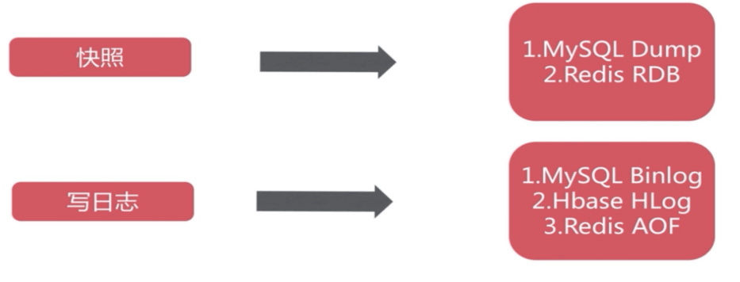
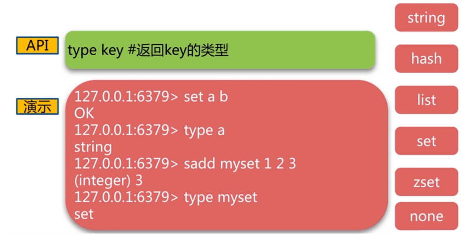
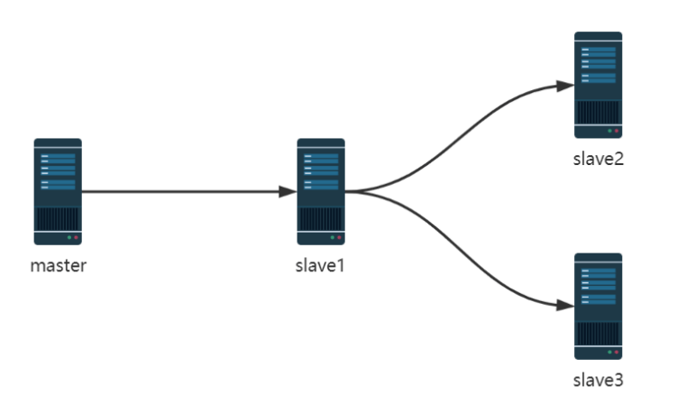

<!DOCTYPE html><html lang="zh-CN" data-theme="light"><head><meta charset="UTF-8"><meta http-equiv="X-UA-Compatible" content="IE=edge"><meta name="viewport" content="width=device-width, initial-scale=1.0,viewport-fit=cover"><title>企业级NoSQL数据库Redis | ૮(˶ᵔ ᵕ ᵔ˶)ა</title><meta name="author" content="૮(˶ᵔ ᵕ ᵔ˶)ა"><meta name="copyright" content="૮(˶ᵔ ᵕ ᵔ˶)ა"><meta name="format-detection" content="telephone=no"><meta name="theme-color" content="ffffff"><meta name="description" content="Site Reliability Engineering">
<meta property="og:type" content="article">
<meta property="og:title" content="企业级NoSQL数据库Redis">
<meta property="og:url" content="http://example.com/2025/04/19/SRE-redis/index.html">
<meta property="og:site_name" content="૮(˶ᵔ ᵕ ᵔ˶)ა">
<meta property="og:description" content="Site Reliability Engineering">
<meta property="og:locale" content="zh_CN">
<meta property="og:image" content="http://example.com/images/SRE/day49/1.jpg">
<meta property="article:published_time" content="2025-04-19T15:34:02.000Z">
<meta property="article:modified_time" content="2025-04-21T15:35:42.192Z">
<meta property="article:author" content="૮(˶ᵔ ᵕ ᵔ˶)ა">
<meta property="article:tag" content="SRE">
<meta property="article:tag" content="Redis">
<meta name="twitter:card" content="summary">
<meta name="twitter:image" content="http://example.com/images/SRE/day49/1.jpg"><link rel="shortcut icon" href="/../images/TITLE/user.webp"><link rel="canonical" href="http://example.com/2025/04/19/SRE-redis/index.html"><link rel="preconnect" href="//cdn.jsdelivr.net"/><link rel="preconnect" href="//fonts.googleapis.com" crossorigin=""/><link rel="preconnect" href="//busuanzi.ibruce.info"/><link rel="stylesheet" href="/css/index.css"><link rel="stylesheet" href="https://cdn.jsdelivr.net/npm/@fortawesome/fontawesome-free/css/all.min.css" media="print" onload="this.media='all'"><link rel="stylesheet" href="https://cdn.jsdelivr.net/npm/node-snackbar/dist/snackbar.min.css" media="print" onload="this.media='all'"><link rel="stylesheet" href="https://cdn.jsdelivr.net/npm/@fancyapps/ui/dist/fancybox/fancybox.min.css" media="print" onload="this.media='all'"><link rel="stylesheet" href="https://fonts.googleapis.com/css?family=Titillium+Web&amp;display=swap" media="print" onload="this.media='all'"><script>const GLOBAL_CONFIG = { 
  root: '/',
  algolia: undefined,
  localSearch: undefined,
  translate: undefined,
  noticeOutdate: undefined,
  highlight: {"plugin":"highlighjs","highlightCopy":true,"highlightLang":false,"highlightHeightLimit":false},
  copy: {
    success: '复制成功',
    error: '复制错误',
    noSupport: '浏览器不支持'
  },
  relativeDate: {
    homepage: true,
    post: true
  },
  runtime: '天',
  dateSuffix: {
    just: '刚刚',
    min: '分钟前',
    hour: '小时前',
    day: '天前',
    month: '个月前'
  },
  copyright: undefined,
  lightbox: 'fancybox',
  Snackbar: {"chs_to_cht":"你已切换为繁体","cht_to_chs":"你已切换为简体","day_to_night":"你已切换为深色模式","night_to_day":"你已切换为浅色模式","bgLight":"#49b1f5","bgDark":"#1f1f1f","position":"top-center"},
  source: {
    justifiedGallery: {
      js: 'https://cdn.jsdelivr.net/npm/flickr-justified-gallery/dist/fjGallery.min.js',
      css: 'https://cdn.jsdelivr.net/npm/flickr-justified-gallery/dist/fjGallery.min.css'
    }
  },
  isPhotoFigcaption: false,
  islazyload: false,
  isAnchor: false,
  percent: {
    toc: true,
    rightside: true,
  }
}</script><script id="config-diff">var GLOBAL_CONFIG_SITE = {
  title: '企业级NoSQL数据库Redis',
  isPost: true,
  isHome: false,
  isHighlightShrink: undefined,
  isToc: true,
  postUpdate: '2025-04-21 23:35:42'
}</script><noscript><style type="text/css">
  #nav {
    opacity: 1
  }
  .justified-gallery img {
    opacity: 1
  }

  #recent-posts time,
  #post-meta time {
    display: inline !important
  }
</style></noscript><script>(win=>{
    win.saveToLocal = {
      set: function setWithExpiry(key, value, ttl) {
        if (ttl === 0) return
        const now = new Date()
        const expiryDay = ttl * 86400000
        const item = {
          value: value,
          expiry: now.getTime() + expiryDay,
        }
        localStorage.setItem(key, JSON.stringify(item))
      },

      get: function getWithExpiry(key) {
        const itemStr = localStorage.getItem(key)

        if (!itemStr) {
          return undefined
        }
        const item = JSON.parse(itemStr)
        const now = new Date()

        if (now.getTime() > item.expiry) {
          localStorage.removeItem(key)
          return undefined
        }
        return item.value
      }
    }
  
    win.getScript = url => new Promise((resolve, reject) => {
      const script = document.createElement('script')
      script.src = url
      script.async = true
      script.onerror = reject
      script.onload = script.onreadystatechange = function() {
        const loadState = this.readyState
        if (loadState && loadState !== 'loaded' && loadState !== 'complete') return
        script.onload = script.onreadystatechange = null
        resolve()
      }
      document.head.appendChild(script)
    })
  
    win.getCSS = (url,id = false) => new Promise((resolve, reject) => {
      const link = document.createElement('link')
      link.rel = 'stylesheet'
      link.href = url
      if (id) link.id = id
      link.onerror = reject
      link.onload = link.onreadystatechange = function() {
        const loadState = this.readyState
        if (loadState && loadState !== 'loaded' && loadState !== 'complete') return
        link.onload = link.onreadystatechange = null
        resolve()
      }
      document.head.appendChild(link)
    })
  
      win.activateDarkMode = function () {
        document.documentElement.setAttribute('data-theme', 'dark')
        if (document.querySelector('meta[name="theme-color"]') !== null) {
          document.querySelector('meta[name="theme-color"]').setAttribute('content', '#0d0d0d')
        }
      }
      win.activateLightMode = function () {
        document.documentElement.setAttribute('data-theme', 'light')
        if (document.querySelector('meta[name="theme-color"]') !== null) {
          document.querySelector('meta[name="theme-color"]').setAttribute('content', 'ffffff')
        }
      }
      const t = saveToLocal.get('theme')
    
          if (t === 'dark') activateDarkMode()
          else if (t === 'light') activateLightMode()
        
      const asideStatus = saveToLocal.get('aside-status')
      if (asideStatus !== undefined) {
        if (asideStatus === 'hide') {
          document.documentElement.classList.add('hide-aside')
        } else {
          document.documentElement.classList.remove('hide-aside')
        }
      }
    
    const detectApple = () => {
      if(/iPad|iPhone|iPod|Macintosh/.test(navigator.userAgent)){
        document.documentElement.classList.add('apple')
      }
    }
    detectApple()
    })(window)</script><link rel="stylesheet" href="/css/custom.css"  media="defer" onload="this.media='all'"><meta name="generator" content="Hexo 5.4.2"></head><body><div id="web_bg"></div><div id="sidebar"><div id="menu-mask"></div><div id="sidebar-menus"><div class="avatar-img is-center"></div><div class="sidebar-site-data site-data is-center"><a href="/archives/"><div class="headline">文章</div><div class="length-num">106</div></a><a href="/tags/"><div class="headline">标签</div><div class="length-num">42</div></a><a href="/categories/"><div class="headline">分类</div><div class="length-num">36</div></a></div><hr/><div class="menus_items"><div class="menus_item"><a class="site-page" href="/"><i class="fa-fw fas fa-home"></i><span> 首页</span></a></div><div class="menus_item"><a class="site-page" href="/archives/"><i class="fa-fw fas fa-archive"></i><span> 时间线</span></a></div><div class="menus_item"><a class="site-page" href="/categories/"><i class="fa-fw fas fa-folder-open"></i><span> 分类</span></a></div><div class="menus_item"><a class="site-page" href="/tags/"><i class="fa-fw fas fa-tags"></i><span> 标签</span></a></div><div class="menus_item"><a class="site-page" href="/link/"><i class="fa-fw fas fa-link"></i><span> 友链</span></a></div></div></div></div><div class="post" id="body-wrap"><header class="post-bg" id="page-header" style="background-image: url('/../images/SRE/day49/1.jpg')"><nav id="nav"><span id="blog-info"><a href="/" title="૮(˶ᵔ ᵕ ᵔ˶)ა"><span class="site-name">૮(˶ᵔ ᵕ ᵔ˶)ა</span></a></span><div id="menus"><div class="menus_items"><div class="menus_item"><a class="site-page" href="/"><i class="fa-fw fas fa-home"></i><span> 首页</span></a></div><div class="menus_item"><a class="site-page" href="/archives/"><i class="fa-fw fas fa-archive"></i><span> 时间线</span></a></div><div class="menus_item"><a class="site-page" href="/categories/"><i class="fa-fw fas fa-folder-open"></i><span> 分类</span></a></div><div class="menus_item"><a class="site-page" href="/tags/"><i class="fa-fw fas fa-tags"></i><span> 标签</span></a></div><div class="menus_item"><a class="site-page" href="/link/"><i class="fa-fw fas fa-link"></i><span> 友链</span></a></div></div><div id="toggle-menu"><a class="site-page" href="javascript:void(0);"><i class="fas fa-bars fa-fw"></i></a></div></div></nav><div id="post-info"><h1 class="post-title">企业级NoSQL数据库Redis</h1><div id="post-meta"><div class="meta-firstline"><span class="post-meta-date"><i class="far fa-calendar-alt fa-fw post-meta-icon"></i><span class="post-meta-label">发表于</span><time class="post-meta-date-created" datetime="2025-04-19T15:34:02.000Z" title="发表于 2025-04-19 23:34:02">2025-04-19</time><span class="post-meta-separator">|</span><i class="fas fa-history fa-fw post-meta-icon"></i><span class="post-meta-label">更新于</span><time class="post-meta-date-updated" datetime="2025-04-21T15:35:42.192Z" title="更新于 2025-04-21 23:35:42">2025-04-21</time></span><span class="post-meta-categories"><span class="post-meta-separator">|</span><i class="fas fa-inbox fa-fw post-meta-icon"></i><a class="post-meta-categories" href="/categories/Redis/">Redis</a></span></div><div class="meta-secondline"><span class="post-meta-separator">|</span><span class="post-meta-wordcount"><i class="far fa-file-word fa-fw post-meta-icon"></i><span class="post-meta-label">字数总计:</span><span class="word-count">41k</span><span class="post-meta-separator">|</span><i class="far fa-clock fa-fw post-meta-icon"></i><span class="post-meta-label">阅读时长:</span><span>195分钟</span></span><span class="post-meta-separator">|</span><span class="post-meta-pv-cv" id="" data-flag-title="企业级NoSQL数据库Redis"><i class="far fa-eye fa-fw post-meta-icon"></i><span class="post-meta-label">阅读量:</span><span id="busuanzi_value_page_pv"><i class="fa-solid fa-spinner fa-spin"></i></span></span></div></div></div></header><main class="layout" id="content-inner"><div id="post"><article class="post-content" id="article-container"><h1 id="Redis-部署"><a href="#Redis-部署" class="headerlink" title="Redis 部署"></a>Redis 部署</h1><h2 id="Redis-安装及连接"><a href="#Redis-安装及连接" class="headerlink" title="Redis 安装及连接"></a>Redis 安装及连接</h2><p>官方安装方法说明：</p>
<figure class="highlight http"><table><tr><td class="gutter"><pre><span class="line">1</span><br></pre></td><td class="code"><pre><span class="line">https://redis.io/docs/getting-started/installation/</span><br></pre></td></tr></table></figure>

<h3 id="包安装-Redis"><a href="#包安装-Redis" class="headerlink" title="包安装 Redis"></a>包安装 Redis</h3><h4 id="Ubuntu-安装-Redis"><a href="#Ubuntu-安装-Redis" class="headerlink" title="Ubuntu 安装 Redis"></a>Ubuntu 安装 Redis</h4><figure class="highlight sh"><table><tr><td class="gutter"><pre><span class="line">1</span><br><span class="line">2</span><br><span class="line">3</span><br><span class="line">4</span><br><span class="line">5</span><br><span class="line">6</span><br><span class="line">7</span><br><span class="line">8</span><br><span class="line">9</span><br><span class="line">10</span><br></pre></td><td class="code"><pre><span class="line">[root@ubuntu2204 ~]<span class="comment"># apt list redis</span></span><br><span class="line">[root@ubuntu2004 ~]<span class="comment"># apt -y install redis</span></span><br><span class="line">[root@ubuntu2004 ~]<span class="comment"># pstree -p|grep redis</span></span><br><span class="line">           |-redis-server(1330)-+-&#123;redis-server&#125;(1331)</span><br><span class="line">           |                   |-&#123;redis-server&#125;(1332)</span><br><span class="line">           |                    `-&#123;redis-server&#125;(1333)</span><br><span class="line"></span><br><span class="line"></span><br><span class="line">[root@ubuntu2004 ~]<span class="comment"># ss -ntll</span></span><br><span class="line">LISTEN           0        511            127.0.0.1:6379         0.0.0.0:* </span><br></pre></td></tr></table></figure>

<h4 id="CentOS-安装-Redis"><a href="#CentOS-安装-Redis" class="headerlink" title="CentOS 安装 Redis"></a>CentOS 安装 Redis</h4><figure class="highlight sh"><table><tr><td class="gutter"><pre><span class="line">1</span><br><span class="line">2</span><br><span class="line">3</span><br><span class="line">4</span><br><span class="line">5</span><br><span class="line">6</span><br><span class="line">7</span><br><span class="line">8</span><br><span class="line">9</span><br><span class="line">10</span><br><span class="line">11</span><br><span class="line">12</span><br><span class="line">13</span><br><span class="line">14</span><br><span class="line">15</span><br><span class="line">16</span><br><span class="line">17</span><br><span class="line">18</span><br><span class="line">19</span><br></pre></td><td class="code"><pre><span class="line"><span class="comment">#CentOS 8 由系统源提供</span></span><br><span class="line"><span class="comment">#在CentOS7系统上需要安装EPEL源</span></span><br><span class="line"></span><br><span class="line">[root@centos8 ~]<span class="comment"># dnf -y install redis</span></span><br><span class="line">[root@centos8 ~]<span class="comment"># systemctl enable --now redis</span></span><br><span class="line">[root@centos8 ~]<span class="comment"># ss -tnl</span></span><br><span class="line">LISTEN       0             128               127.0.0.1:6379              0.0.0.0:*</span><br><span class="line"></span><br><span class="line">[root@centos8 ~]<span class="comment">#redis-cli </span></span><br><span class="line">127.0.0.1:6379&gt; ping</span><br><span class="line">PONG</span><br><span class="line">127.0.0.1:6379&gt; info </span><br><span class="line"><span class="comment"># Server</span></span><br><span class="line">redis_version:5.0.3</span><br><span class="line">redis_git_sha1:00000000</span><br><span class="line">redis_git_dirty:0</span><br><span class="line">redis_build_id:8c0bf22bfba82c8f</span><br><span class="line">redis_mode:standalone</span><br><span class="line">os:Linux 4.18.0-147.el8.x86_64 x86_64</span><br></pre></td></tr></table></figure>

<h3 id="编译安装-Redis"><a href="#编译安装-Redis" class="headerlink" title="编译安装 Redis"></a>编译安装 Redis</h3><p>Redis 源码包官方下载链接：</p>
<figure class="highlight http"><table><tr><td class="gutter"><pre><span class="line">1</span><br></pre></td><td class="code"><pre><span class="line">http://download.redis.io/releases/</span><br></pre></td></tr></table></figure>

<h4 id="编译安装"><a href="#编译安装" class="headerlink" title="编译安装"></a>编译安装</h4><p>官方的安装方法：</p>
<figure class="highlight http"><table><tr><td class="gutter"><pre><span class="line">1</span><br><span class="line">2</span><br></pre></td><td class="code"><pre><span class="line">https://redis.io/docs/getting-started/installation/install-redis-from-source/</span><br><span class="line">https://redis.io/docs/latest/operate/oss_and_stack/install/build-stack/almalinux-rocky-8/</span><br></pre></td></tr></table></figure>

<p>范例： 编译安装</p>
<figure class="highlight sh"><table><tr><td class="gutter"><pre><span class="line">1</span><br><span class="line">2</span><br><span class="line">3</span><br><span class="line">4</span><br><span class="line">5</span><br><span class="line">6</span><br><span class="line">7</span><br><span class="line">8</span><br><span class="line">9</span><br><span class="line">10</span><br><span class="line">11</span><br><span class="line">12</span><br><span class="line">13</span><br><span class="line">14</span><br><span class="line">15</span><br><span class="line">16</span><br><span class="line">17</span><br><span class="line">18</span><br><span class="line">19</span><br><span class="line">20</span><br><span class="line">21</span><br><span class="line">22</span><br><span class="line">23</span><br><span class="line">24</span><br><span class="line">25</span><br><span class="line">26</span><br><span class="line">27</span><br><span class="line">28</span><br><span class="line">29</span><br><span class="line">30</span><br><span class="line">31</span><br><span class="line">32</span><br><span class="line">33</span><br><span class="line">34</span><br><span class="line">35</span><br><span class="line">36</span><br><span class="line">37</span><br><span class="line">38</span><br><span class="line">39</span><br><span class="line">40</span><br></pre></td><td class="code"><pre><span class="line"><span class="comment">#安装依赖包</span></span><br><span class="line">[root@centos8~]<span class="comment"># yum -y install gcc make jemalloc-devel</span></span><br><span class="line"></span><br><span class="line"><span class="comment">#如果支持systemd需要安装下面包</span></span><br><span class="line">[root@centos8~]<span class="comment"># yum -y install gcc jemalloc-devel systemd-devel</span></span><br><span class="line"></span><br><span class="line">[root@ubuntu2004 ~]<span class="comment"># apt -y install gcc make libjemalloc-dev libsystemd-dev</span></span><br><span class="line"></span><br><span class="line"><span class="comment">#下载源码</span></span><br><span class="line">[root@centos8 ~]<span class="comment"># wget http://download.redis.io/releases/redis-6.2.4.tar.gz</span></span><br><span class="line"></span><br><span class="line">[root@centos8 ~]<span class="comment"># tar xvf redis-6.2.4.tar.gz</span></span><br><span class="line"></span><br><span class="line"></span><br><span class="line"><span class="comment">#编译安装</span></span><br><span class="line">[root@centos8 ~]<span class="comment"># cd redis-6.2.4/</span></span><br><span class="line">[root@centos8 redis-6.2.4]<span class="comment"># make -j 2 PREFIX=/apps/redis install #指定redis安装目录</span></span><br><span class="line"></span><br><span class="line"><span class="comment">#如果支持systemd，需要执行下面</span></span><br><span class="line">[root@centos8 redis-6.2.4]<span class="comment"># make -j 2 USE_SYSTEMD=yes PREFIX=/apps/redis install</span></span><br><span class="line"></span><br><span class="line"><span class="comment">#配置环境变量</span></span><br><span class="line">[root@centos8 ~]<span class="comment"># echo &#x27;PATH=/apps/redis/bin:$PATH&#x27; &gt; /etc/profile.d/redis.sh</span></span><br><span class="line">[root@centos8 ~]<span class="comment"># . /etc/profile.d/redis.sh</span></span><br><span class="line"></span><br><span class="line"><span class="comment">#目录结构</span></span><br><span class="line">[root@centos8 ~]<span class="comment"># tree /apps/redis/</span></span><br><span class="line">/apps/redis/</span><br><span class="line">└── bin</span><br><span class="line">   ├── redis-benchmark</span><br><span class="line">   ├── redis-check-aof</span><br><span class="line">   ├── redis-check-rdb</span><br><span class="line">   ├── redis-cli</span><br><span class="line">   ├── redis-sentinel -&gt; redis-server</span><br><span class="line">   └── redis-server</span><br><span class="line">1 directory, 6 files</span><br><span class="line"></span><br><span class="line"><span class="comment">#准备相关目录和配置文件</span></span><br><span class="line">[root@centos8 ~]<span class="comment"># mkdir /apps/redis/&#123;etc,log,data,run&#125; #创建配置文件、日志、数据等目录</span></span><br><span class="line">[root@centos8 redis-6.2.4]<span class="comment"># cp redis.conf /apps/redis/etc/</span></span><br></pre></td></tr></table></figure>

<h4 id="前台启动-Redis"><a href="#前台启动-Redis" class="headerlink" title="前台启动 Redis"></a>前台启动 Redis</h4><p>redis-server 是 redis 服务器端的主程序</p>
<figure class="highlight sh"><table><tr><td class="gutter"><pre><span class="line">1</span><br><span class="line">2</span><br><span class="line">3</span><br><span class="line">4</span><br><span class="line">5</span><br><span class="line">6</span><br><span class="line">7</span><br><span class="line">8</span><br><span class="line">9</span><br><span class="line">10</span><br><span class="line">11</span><br><span class="line">12</span><br><span class="line">13</span><br><span class="line">14</span><br><span class="line">15</span><br><span class="line">16</span><br></pre></td><td class="code"><pre><span class="line">[root@centos8 ~]<span class="comment"># redis-server --help</span></span><br><span class="line">Usage: ./redis-server [/path/to/redis.conf] [options]</span><br><span class="line">       ./redis-server - (<span class="built_in">read</span> config from stdin)</span><br><span class="line">       ./redis-server -v or --version</span><br><span class="line">       ./redis-server -h or --<span class="built_in">help</span></span><br><span class="line">       ./redis-server --test-memory &lt;megabytes&gt;</span><br><span class="line">       </span><br><span class="line">Examples:</span><br><span class="line">       ./redis-server (run the server with default conf)</span><br><span class="line">       ./redis-server /etc/redis/6379.conf</span><br><span class="line">       ./redis-server --port 7777</span><br><span class="line">       ./redis-server --port 7777 --slaveof 127.0.0.1 8888</span><br><span class="line">       ./redis-server /etc/myredis.conf --loglevel verbose</span><br><span class="line">       </span><br><span class="line">Sentinel mode:</span><br><span class="line">       ./redis-server /etc/sentinel.conf --sentinel</span><br></pre></td></tr></table></figure>

<p>前台启动 redis</p>
<figure class="highlight sh"><table><tr><td class="gutter"><pre><span class="line">1</span><br><span class="line">2</span><br><span class="line">3</span><br></pre></td><td class="code"><pre><span class="line">[root@centos8 ~]<span class="comment"># redis-server /apps/redis/etc/redis.conf</span></span><br><span class="line">[root@centos8 ~]<span class="comment"># ss -ntll</span></span><br><span class="line">LISTEN           0        511            127.0.0.1:6379         0.0.0.0:* </span><br></pre></td></tr></table></figure>

<p>范例： 开启 Redis 多实例</p>
<figure class="highlight sh"><table><tr><td class="gutter"><pre><span class="line">1</span><br><span class="line">2</span><br><span class="line">3</span><br><span class="line">4</span><br><span class="line">5</span><br><span class="line">6</span><br><span class="line">7</span><br><span class="line">8</span><br><span class="line">9</span><br><span class="line">10</span><br><span class="line">11</span><br><span class="line">12</span><br><span class="line">13</span><br></pre></td><td class="code"><pre><span class="line">[root@centos8 ~]<span class="comment"># redis-server --port 6380</span></span><br><span class="line">[root@centos8 ~]<span class="comment"># ss -ntl</span></span><br><span class="line">State Recv-Q Send-Q Local Address:Port   Peer Address:Port</span><br><span class="line">LISTEN 0      511                 *:6379               *:*</span><br><span class="line">LISTEN 0      511                 *:6380               *:* </span><br><span class="line"></span><br><span class="line">[root@centos8 ~]<span class="comment"># ps -ef|grep redis</span></span><br><span class="line">redis      4407      1  0 10:56 ?        00:00:01 /apps/redis/bin/redis-server 0.0.0.0:6379</span><br><span class="line">root       4451    963  0 11:05 pts/0    00:00:00 redis-server *:6380</span><br><span class="line">root       4484   4455  0 11:09 pts/1    00:00:00 grep --color=auto redis</span><br><span class="line"></span><br><span class="line">[root@centos8 ~]<span class="comment"># redis-cli -p 6380</span></span><br><span class="line">127.0.0.1:6380&gt; </span><br></pre></td></tr></table></figure>

<h4 id="消除启动时的三个Warning提示信息-可选"><a href="#消除启动时的三个Warning提示信息-可选" class="headerlink" title="消除启动时的三个Warning提示信息(可选)"></a>消除启动时的三个Warning提示信息(可选)</h4><p>前面直接启动Redis时有三个Waring信息，可以用下面方法消除告警，但非强制消除</p>
<h5 id="Tcp-backlog"><a href="#Tcp-backlog" class="headerlink" title="Tcp backlog"></a>Tcp backlog</h5><figure class="highlight sh"><table><tr><td class="gutter"><pre><span class="line">1</span><br><span class="line">2</span><br></pre></td><td class="code"><pre><span class="line">WARNING: The TCP backlog setting of 511 cannot be enforced because </span><br><span class="line">/proc/sys/net/core/somaxconn is <span class="built_in">set</span> to the lower value of 128.</span><br></pre></td></tr></table></figure>

<p>Tcp backlog 是指TCP的第三次握手服务器端收到客户端 ack确认号之后到服务器用Accept函数处理请求前的队列长度，即全连接队列</p>
<figure class="highlight sh"><table><tr><td class="gutter"><pre><span class="line">1</span><br><span class="line">2</span><br><span class="line">3</span><br><span class="line">4</span><br></pre></td><td class="code"><pre><span class="line"><span class="comment">#vim /etc/sysctl.conf</span></span><br><span class="line">net.core.somaxconn = 1024</span><br><span class="line"></span><br><span class="line"><span class="comment">#sysctl -p </span></span><br></pre></td></tr></table></figure>

<h5 id="overcommit-memory"><a href="#overcommit-memory" class="headerlink" title="overcommit_memory"></a>overcommit_memory</h5><figure class="highlight sh"><table><tr><td class="gutter"><pre><span class="line">1</span><br><span class="line">2</span><br><span class="line">3</span><br></pre></td><td class="code"><pre><span class="line">WARNING overcommit_memory is <span class="built_in">set</span> to 0! Background save may fail under low memory </span><br><span class="line">condition. To fix this issue add <span class="string">&#x27;vm.overcommit_memory = 1&#x27;</span> to /etc/sysctl.conf </span><br><span class="line">and <span class="keyword">then</span> reboot or run the <span class="built_in">command</span> <span class="string">&#x27;sysctl vm.overcommit_memory=1&#x27;</span> <span class="keyword">for</span> this to take effect.</span><br></pre></td></tr></table></figure>

<p>内核参数说明：</p>
<figure class="highlight http"><table><tr><td class="gutter"><pre><span class="line">1</span><br><span class="line">2</span><br><span class="line">3</span><br><span class="line">4</span><br></pre></td><td class="code"><pre><span class="line">内核参数overcommit_memory 实现内存分配策略，可选值有三个：0、1、2</span><br><span class="line">0 表示内核将检查是否有足够的可用内存供应用进程使用；如果有足够的可用内存，内存申请允许；否则内存申请失败，并把错误返回给应用进程</span><br><span class="line">1 表示内核允许分配所有的物理内存，而不管当前的内存状态如何</span><br><span class="line">2 表示内核允许分配超过所有物理内存和交换空间总和的内存</span><br></pre></td></tr></table></figure>

<p>范例： </p>
<figure class="highlight sh"><table><tr><td class="gutter"><pre><span class="line">1</span><br><span class="line">2</span><br><span class="line">3</span><br><span class="line">4</span><br></pre></td><td class="code"><pre><span class="line"><span class="comment">#vim /etc/sysctl.conf</span></span><br><span class="line">vm.overcommit_memory = 1</span><br><span class="line"></span><br><span class="line"><span class="comment">#sysctl -p</span></span><br></pre></td></tr></table></figure>

<h5 id="transparent-hugepage"><a href="#transparent-hugepage" class="headerlink" title="transparent hugepage"></a>transparent hugepage</h5><figure class="highlight sh"><table><tr><td class="gutter"><pre><span class="line">1</span><br><span class="line">2</span><br><span class="line">3</span><br><span class="line">4</span><br><span class="line">5</span><br><span class="line">6</span><br><span class="line">7</span><br><span class="line">8</span><br><span class="line">9</span><br><span class="line">10</span><br></pre></td><td class="code"><pre><span class="line">WARNING you have Transparent Huge Pages (THP) support enabled <span class="keyword">in</span> your kernel. </span><br><span class="line">This will create latency and memory usage issues with Redis. To fix this issue </span><br><span class="line">run the <span class="built_in">command</span> <span class="string">&#x27;echo never &gt; /sys/kernel/mm/transparent_hugepage/enabled&#x27;</span> as </span><br><span class="line">root, and add it to your /etc/rc.local <span class="keyword">in</span> order to retain the setting after a </span><br><span class="line">reboot. Redis must be restarted after THP is disabled.</span><br><span class="line"></span><br><span class="line">警告：您在内核中启用了透明大页面（THP,不同于一般4k内存页，而为2M）支持。 这将在Redis中造成延迟</span><br><span class="line">和内存使用问题。 要解决此问题，请以root 用户身份运行命令“<span class="built_in">echo</span> never&gt; </span><br><span class="line">/sys/kernel/mm/transparent_hugepage/enabled”，并将其添加到您的/etc/rc.local中，以便在</span><br><span class="line">重启后保留设置。禁用THP后，必须重新启动Redis。</span><br></pre></td></tr></table></figure>

<p>范例：</p>
<figure class="highlight sh"><table><tr><td class="gutter"><pre><span class="line">1</span><br><span class="line">2</span><br><span class="line">3</span><br><span class="line">4</span><br><span class="line">5</span><br><span class="line">6</span><br><span class="line">7</span><br><span class="line">8</span><br><span class="line">9</span><br><span class="line">10</span><br><span class="line">11</span><br><span class="line">12</span><br><span class="line">13</span><br><span class="line">14</span><br><span class="line">15</span><br><span class="line">16</span><br><span class="line">17</span><br><span class="line">18</span><br><span class="line">19</span><br><span class="line">20</span><br><span class="line">21</span><br><span class="line">22</span><br><span class="line">23</span><br><span class="line">24</span><br><span class="line">25</span><br><span class="line">26</span><br><span class="line">27</span><br><span class="line">28</span><br><span class="line">29</span><br><span class="line">30</span><br><span class="line">31</span><br><span class="line">32</span><br><span class="line">33</span><br><span class="line">34</span><br><span class="line">35</span><br><span class="line">36</span><br></pre></td><td class="code"><pre><span class="line"><span class="comment">#查看默认值</span></span><br><span class="line">[root@ubuntu2004 ~]<span class="comment"># cat /sys/kernel/mm/transparent_hugepage/enabled</span></span><br><span class="line">always [madvise] never</span><br><span class="line"></span><br><span class="line">[root@rocky8 ~]<span class="comment"># cat /sys/kernel/mm/transparent_hugepage/enabled</span></span><br><span class="line">[always] madvise never</span><br><span class="line"></span><br><span class="line">[root@centos7 ~]<span class="comment"># cat /sys/kernel/mm/transparent_hugepage/enabled</span></span><br><span class="line">[always] madvise never</span><br><span class="line"></span><br><span class="line"><span class="comment">#ubuntu开机配置</span></span><br><span class="line">[root@ubuntu2004 ~]<span class="comment"># cat /etc/rc.local </span></span><br><span class="line"><span class="comment">#!/bin/bash</span></span><br><span class="line"><span class="built_in">echo</span> never &gt; /sys/kernel/mm/transparent_hugepage/enabled</span><br><span class="line"></span><br><span class="line">[root@ubuntu2004 ~]<span class="comment"># chmod +x /etc/rc.local</span></span><br><span class="line"></span><br><span class="line"><span class="comment">#CentOS开机配置</span></span><br><span class="line">[root@centos8 ~]<span class="comment"># echo &#x27;echo never &gt; /sys/kernel/mm/transparent_hugepage/enabled&#x27; &gt;&gt; /etc/rc.d/rc.local </span></span><br><span class="line"></span><br><span class="line">[root@centos8 ~]<span class="comment"># cat /etc/rc.d/rc.local</span></span><br><span class="line"><span class="comment">#!/bin/bash</span></span><br><span class="line"><span class="comment"># THIS FILE IS ADDED FOR COMPATIBILITY PURPOSES</span></span><br><span class="line"><span class="comment">#</span></span><br><span class="line"><span class="comment"># It is highly advisable to create own systemd services or udev rules</span></span><br><span class="line"><span class="comment"># to run scripts during boot instead of using this file.</span></span><br><span class="line"><span class="comment">#</span></span><br><span class="line"><span class="comment"># In contrast to previous versions due to parallel execution during boot</span></span><br><span class="line"><span class="comment"># this script will NOT be run after all other services.</span></span><br><span class="line"><span class="comment">#</span></span><br><span class="line"><span class="comment"># Please note that you must run &#x27;chmod +x /etc/rc.d/rc.local&#x27; to ensure</span></span><br><span class="line"><span class="comment"># that this script will be executed during boot.</span></span><br><span class="line"><span class="built_in">touch</span> /var/lock/subsys/local</span><br><span class="line"><span class="built_in">echo</span> never &gt; /sys/kernel/mm/transparent_hugepage/enabled</span><br><span class="line"></span><br><span class="line">[root@centos8 ~]<span class="comment"># chmod +x /etc/rc.d/rc.local</span></span><br></pre></td></tr></table></figure>

<h5 id="验证是否消除-Warning"><a href="#验证是否消除-Warning" class="headerlink" title="验证是否消除 Warning"></a>验证是否消除 Warning</h5><p>重新启动redis 服务不再有前面的三个Waring信息</p>
<figure class="highlight sh"><table><tr><td class="gutter"><pre><span class="line">1</span><br></pre></td><td class="code"><pre><span class="line">[root@centos8 ~]<span class="comment"># redis-server /apps/redis/etc/redis.conf </span></span><br></pre></td></tr></table></figure>

<h4 id="创建-Redis-用户和设置数据目录权限"><a href="#创建-Redis-用户和设置数据目录权限" class="headerlink" title="创建 Redis 用户和设置数据目录权限"></a>创建 Redis 用户和设置数据目录权限</h4><figure class="highlight sh"><table><tr><td class="gutter"><pre><span class="line">1</span><br><span class="line">2</span><br><span class="line">3</span><br><span class="line">4</span><br></pre></td><td class="code"><pre><span class="line">[root@centos8 ~]<span class="comment"># useradd -r -s /sbin/nologin redis</span></span><br><span class="line"></span><br><span class="line"><span class="comment">#设置目录权限</span></span><br><span class="line">[root@centos8 ~]<span class="comment"># chown -R redis.redis /apps/redis/ </span></span><br></pre></td></tr></table></figure>

<h4 id="创建-Redis-服务-Service-文件"><a href="#创建-Redis-服务-Service-文件" class="headerlink" title="创建 Redis 服务 Service 文件"></a>创建 Redis 服务 Service 文件</h4><figure class="highlight sh"><table><tr><td class="gutter"><pre><span class="line">1</span><br><span class="line">2</span><br><span class="line">3</span><br><span class="line">4</span><br><span class="line">5</span><br><span class="line">6</span><br><span class="line">7</span><br><span class="line">8</span><br><span class="line">9</span><br><span class="line">10</span><br><span class="line">11</span><br><span class="line">12</span><br><span class="line">13</span><br><span class="line">14</span><br><span class="line">15</span><br><span class="line">16</span><br><span class="line">17</span><br><span class="line">18</span><br><span class="line">19</span><br><span class="line">20</span><br><span class="line">21</span><br></pre></td><td class="code"><pre><span class="line"><span class="comment">#可以复制CentOS8利用yum安装Redis生成的redis.service文件，进行修改</span></span><br><span class="line">[root@centos8 ~]<span class="comment"># scp 10.0.0.8:/lib/systemd/system/redis.service /lib/systemd/system/</span></span><br><span class="line">[root@centos8 ~]<span class="comment"># cp redis-stable/utils/systemd-redis_server.service /lib/systemd/system/redis.service</span></span><br><span class="line">[root@centos8 ~]<span class="comment"># vim /lib/systemd/system/redis.service</span></span><br><span class="line">[root@centos8 ~]<span class="comment"># cat /lib/systemd/system/redis.service</span></span><br><span class="line">[Unit]</span><br><span class="line">Description=Redis persistent key-value database</span><br><span class="line">After=network.target</span><br><span class="line"></span><br><span class="line">[Service]</span><br><span class="line">ExecStart=/apps/redis/bin/redis-server /apps/redis/etc/redis.conf --supervised systemd</span><br><span class="line">ExecStop=/bin/kill -s QUIT <span class="variable">$MAINPID</span></span><br><span class="line">Type=notify <span class="comment">#如果支持systemd可以启用此行</span></span><br><span class="line">User=redis</span><br><span class="line">Group=redis</span><br><span class="line">RuntimeDirectory=redis</span><br><span class="line">RuntimeDirectoryMode=0755</span><br><span class="line">LimitNOFILE=1000000   <span class="comment">#指定此值才支持更大的maxclients值</span></span><br><span class="line"></span><br><span class="line">[Install]</span><br><span class="line">WantedBy=multi-user.target</span><br></pre></td></tr></table></figure>

<h4 id="Redis-通过Service方式启动"><a href="#Redis-通过Service方式启动" class="headerlink" title="Redis 通过Service方式启动"></a>Redis 通过Service方式启动</h4><figure class="highlight sh"><table><tr><td class="gutter"><pre><span class="line">1</span><br><span class="line">2</span><br><span class="line">3</span><br><span class="line">4</span><br><span class="line">5</span><br><span class="line">6</span><br></pre></td><td class="code"><pre><span class="line">[root@centos8 ~]<span class="comment"># systemctl daemon-reload </span></span><br><span class="line">[root@centos8 ~]<span class="comment"># systemctl start redis</span></span><br><span class="line">[root@centos8 ~]<span class="comment"># systemctl status redis</span></span><br><span class="line">[root@centos8 ~]<span class="comment"># ss -ntl</span></span><br><span class="line">State Recv-Q Send-Q Local Address:Port   Peer Address:Port</span><br><span class="line">LISTEN 0      511                 *:6379               *:*</span><br></pre></td></tr></table></figure>

<h4 id="验证客户端连接-Redis"><a href="#验证客户端连接-Redis" class="headerlink" title="验证客户端连接 Redis"></a>验证客户端连接 Redis</h4><figure class="highlight sh"><table><tr><td class="gutter"><pre><span class="line">1</span><br></pre></td><td class="code"><pre><span class="line">[root@centos8 ~]<span class="comment"># /apps/redis/bin/redis-cli -h IP/HOSTNAME -p PORT -a PASSWORD</span></span><br></pre></td></tr></table></figure>

<p>范例： </p>
<figure class="highlight sh"><table><tr><td class="gutter"><pre><span class="line">1</span><br><span class="line">2</span><br><span class="line">3</span><br><span class="line">4</span><br><span class="line">5</span><br><span class="line">6</span><br><span class="line">7</span><br><span class="line">8</span><br><span class="line">9</span><br><span class="line">10</span><br><span class="line">11</span><br><span class="line">12</span><br><span class="line">13</span><br><span class="line">14</span><br><span class="line">15</span><br><span class="line">16</span><br><span class="line">17</span><br><span class="line">18</span><br><span class="line">19</span><br><span class="line">20</span><br><span class="line">21</span><br><span class="line">22</span><br><span class="line">23</span><br><span class="line">24</span><br><span class="line">25</span><br><span class="line">26</span><br><span class="line">27</span><br><span class="line">28</span><br><span class="line">29</span><br><span class="line">30</span><br><span class="line">31</span><br><span class="line">32</span><br><span class="line">33</span><br><span class="line">34</span><br><span class="line">35</span><br><span class="line">36</span><br><span class="line">37</span><br><span class="line">38</span><br><span class="line">39</span><br><span class="line">40</span><br><span class="line">41</span><br><span class="line">42</span><br><span class="line">43</span><br><span class="line">44</span><br><span class="line">45</span><br><span class="line">46</span><br><span class="line">47</span><br><span class="line">48</span><br><span class="line">49</span><br><span class="line">50</span><br><span class="line">51</span><br><span class="line">52</span><br><span class="line">53</span><br><span class="line">54</span><br><span class="line">55</span><br><span class="line">56</span><br><span class="line">57</span><br><span class="line">58</span><br><span class="line">59</span><br><span class="line">60</span><br><span class="line">61</span><br><span class="line">62</span><br><span class="line">63</span><br><span class="line">64</span><br><span class="line">65</span><br><span class="line">66</span><br><span class="line">67</span><br><span class="line">68</span><br><span class="line">69</span><br><span class="line">70</span><br><span class="line">71</span><br><span class="line">72</span><br><span class="line">73</span><br><span class="line">74</span><br><span class="line">75</span><br><span class="line">76</span><br><span class="line">77</span><br><span class="line">78</span><br><span class="line">79</span><br><span class="line">80</span><br><span class="line">81</span><br><span class="line">82</span><br><span class="line">83</span><br><span class="line">84</span><br><span class="line">85</span><br><span class="line">86</span><br><span class="line">87</span><br><span class="line">88</span><br><span class="line">89</span><br><span class="line">90</span><br><span class="line">91</span><br><span class="line">92</span><br><span class="line">93</span><br><span class="line">94</span><br><span class="line">95</span><br><span class="line">96</span><br><span class="line">97</span><br><span class="line">98</span><br><span class="line">99</span><br><span class="line">100</span><br><span class="line">101</span><br><span class="line">102</span><br><span class="line">103</span><br><span class="line">104</span><br><span class="line">105</span><br><span class="line">106</span><br><span class="line">107</span><br><span class="line">108</span><br><span class="line">109</span><br><span class="line">110</span><br><span class="line">111</span><br><span class="line">112</span><br><span class="line">113</span><br><span class="line">114</span><br><span class="line">115</span><br><span class="line">116</span><br><span class="line">117</span><br><span class="line">118</span><br><span class="line">119</span><br><span class="line">120</span><br><span class="line">121</span><br><span class="line">122</span><br><span class="line">123</span><br><span class="line">124</span><br><span class="line">125</span><br><span class="line">126</span><br><span class="line">127</span><br><span class="line">128</span><br><span class="line">129</span><br><span class="line">130</span><br><span class="line">131</span><br><span class="line">132</span><br><span class="line">133</span><br><span class="line">134</span><br><span class="line">135</span><br><span class="line">136</span><br><span class="line">137</span><br><span class="line">138</span><br><span class="line">139</span><br><span class="line">140</span><br><span class="line">141</span><br><span class="line">142</span><br><span class="line">143</span><br><span class="line">144</span><br><span class="line">145</span><br></pre></td><td class="code"><pre><span class="line">[root@centos8 ~]<span class="comment"># redis-cli </span></span><br><span class="line">127.0.0.1:6379&gt; ping</span><br><span class="line">PONG</span><br><span class="line"></span><br><span class="line">127.0.0.1:6379&gt; info</span><br><span class="line"></span><br><span class="line"><span class="comment"># Server</span></span><br><span class="line">redis_version:5.0.7</span><br><span class="line">redis_git_sha1:00000000</span><br><span class="line">redis_git_dirty:0</span><br><span class="line">redis_build_id:673d8c0ee1a8872</span><br><span class="line">redis_mode:standalone</span><br><span class="line">os:Linux 3.10.0-1062.el7.x86_64 x86_64</span><br><span class="line">arch_bits:64</span><br><span class="line">multiplexing_api:epoll</span><br><span class="line">atomicvar_api:atomic-builtin</span><br><span class="line">gcc_version:4.8.5</span><br><span class="line">process_id:1669</span><br><span class="line">run_id:5e0420e92e35ad1d740e9431bc655bfd0044a5d1</span><br><span class="line">tcp_port:6379</span><br><span class="line">uptime_in_seconds:140</span><br><span class="line">uptime_in_days:0</span><br><span class="line">hz:10</span><br><span class="line">configured_hz:10</span><br><span class="line">lru_clock:4807524</span><br><span class="line">executable:/apps/redis/bin/redis-server</span><br><span class="line">config_file:/apps/redis/etc/redis.conf</span><br><span class="line"></span><br><span class="line"><span class="comment"># Clients</span></span><br><span class="line">connected_clients:1</span><br><span class="line">client_recent_max_input_buffer:2</span><br><span class="line">client_recent_max_output_buffer:0</span><br><span class="line">blocked_clients:0</span><br><span class="line"></span><br><span class="line"><span class="comment"># Memory</span></span><br><span class="line">used_memory:575792</span><br><span class="line">used_memory_human:562.30K</span><br><span class="line">used_memory_rss:3506176</span><br><span class="line">used_memory_rss_human:3.34M</span><br><span class="line">used_memory_peak:575792</span><br><span class="line">used_memory_peak_human:562.30K</span><br><span class="line">used_memory_peak_perc:100.18%</span><br><span class="line">used_memory_overhead:562590</span><br><span class="line">used_memory_startup:512896</span><br><span class="line">used_memory_dataset:13202</span><br><span class="line">used_memory_dataset_perc:20.99%</span><br><span class="line">allocator_allocated:1201392</span><br><span class="line">allocator_active:1531904</span><br><span class="line">allocator_resident:8310784</span><br><span class="line">total_system_memory:1019645952</span><br><span class="line">total_system_memory_human:972.41M</span><br><span class="line">used_memory_lua:37888</span><br><span class="line">used_memory_lua_human:37.00K</span><br><span class="line">used_memory_scripts:0</span><br><span class="line">used_memory_scripts_human:0B</span><br><span class="line">number_of_cached_scripts:0</span><br><span class="line">maxmemory:0</span><br><span class="line">maxmemory_human:0B</span><br><span class="line">maxmemory_policy:noeviction</span><br><span class="line">allocator_frag_ratio:1.28</span><br><span class="line">allocator_frag_bytes:330512</span><br><span class="line">allocator_rss_ratio:5.43</span><br><span class="line">allocator_rss_bytes:6778880</span><br><span class="line">rss_overhead_ratio:0.42</span><br><span class="line">rss_overhead_bytes:-4804608</span><br><span class="line">mem_fragmentation_ratio:6.57</span><br><span class="line">mem_fragmentation_bytes:2972384</span><br><span class="line">mem_not_counted_for_evict:0</span><br><span class="line">mem_replication_backlog:0</span><br><span class="line">mem_clients_slaves:0</span><br><span class="line">mem_clients_normal:49694</span><br><span class="line">mem_aof_buffer:0</span><br><span class="line">mem_allocator:jemalloc-5.1.0</span><br><span class="line">active_defrag_running:0</span><br><span class="line">lazyfree_pending_objects:0</span><br><span class="line"></span><br><span class="line"><span class="comment"># Persistence</span></span><br><span class="line">loading:0</span><br><span class="line">rdb_changes_since_last_save:0</span><br><span class="line">rdb_bgsave_in_progress:0</span><br><span class="line">rdb_last_save_time:1581865688</span><br><span class="line">rdb_last_bgsave_status:ok</span><br><span class="line">rdb_last_bgsave_time_sec:-1</span><br><span class="line">rdb_current_bgsave_time_sec:-1</span><br><span class="line">rdb_last_cow_size:0</span><br><span class="line">aof_enabled:0</span><br><span class="line">aof_rewrite_in_progress:0</span><br><span class="line">aof_rewrite_scheduled:0</span><br><span class="line">aof_last_rewrite_time_sec:-1</span><br><span class="line">aof_current_rewrite_time_sec:-1</span><br><span class="line">aof_last_bgrewrite_status:ok</span><br><span class="line">aof_last_write_status:ok</span><br><span class="line">aof_last_cow_size:0</span><br><span class="line"></span><br><span class="line"><span class="comment"># Stats</span></span><br><span class="line">total_connections_received:1</span><br><span class="line">total_commands_processed:2</span><br><span class="line">instantaneous_ops_per_sec:0</span><br><span class="line">total_net_input_bytes:45</span><br><span class="line">total_net_output_bytes:11475</span><br><span class="line">instantaneous_input_kbps:0.00</span><br><span class="line">instantaneous_output_kbps:0.00</span><br><span class="line">rejected_connections:0</span><br><span class="line">sync_full:0</span><br><span class="line">sync_partial_ok:0</span><br><span class="line">sync_partial_err:0</span><br><span class="line">expired_keys:0</span><br><span class="line">expired_stale_perc:0.00</span><br><span class="line">expired_time_cap_reached_count:0</span><br><span class="line">evicted_keys:0</span><br><span class="line">keyspace_hits:0</span><br><span class="line">keyspace_misses:0</span><br><span class="line">pubsub_channels:0</span><br><span class="line">pubsub_patterns:0</span><br><span class="line">latest_fork_usec:0</span><br><span class="line">migrate_cached_sockets:0</span><br><span class="line">slave_expires_tracked_keys:0</span><br><span class="line">active_defrag_hits:0</span><br><span class="line">active_defrag_misses:0</span><br><span class="line">active_defrag_key_hits:0</span><br><span class="line">active_defrag_key_misses:0</span><br><span class="line"></span><br><span class="line"><span class="comment"># Replication</span></span><br><span class="line">role:master</span><br><span class="line">connected_slaves:0</span><br><span class="line">master_replid:f7228f0b6203183004fae8db00568f9f73422dc4</span><br><span class="line">master_replid2:0000000000000000000000000000000000000000</span><br><span class="line">master_repl_offset:0</span><br><span class="line">second_repl_offset:-1</span><br><span class="line">repl_backlog_active:0</span><br><span class="line">repl_backlog_size:1048576</span><br><span class="line">repl_backlog_first_byte_offset:0</span><br><span class="line">repl_backlog_histlen:0</span><br><span class="line"></span><br><span class="line"><span class="comment"># CPU</span></span><br><span class="line">used_cpu_sys:0.132821</span><br><span class="line">used_cpu_user:0.124317</span><br><span class="line">used_cpu_sys_children:0.000000</span><br><span class="line">used_cpu_user_children:0.000000</span><br><span class="line"></span><br><span class="line"><span class="comment"># Cluster</span></span><br><span class="line">cluster_enabled:0</span><br><span class="line"></span><br><span class="line"><span class="comment"># Keyspace</span></span><br><span class="line">127.0.0.1:6379&gt; <span class="built_in">exit</span></span><br></pre></td></tr></table></figure>

<h4 id="实战案例：一键编译安装Redis脚本"><a href="#实战案例：一键编译安装Redis脚本" class="headerlink" title="实战案例：一键编译安装Redis脚本"></a>实战案例：一键编译安装Redis脚本</h4><figure class="highlight sh"><table><tr><td class="gutter"><pre><span class="line">1</span><br><span class="line">2</span><br><span class="line">3</span><br><span class="line">4</span><br><span class="line">5</span><br><span class="line">6</span><br><span class="line">7</span><br><span class="line">8</span><br><span class="line">9</span><br><span class="line">10</span><br><span class="line">11</span><br><span class="line">12</span><br><span class="line">13</span><br><span class="line">14</span><br><span class="line">15</span><br><span class="line">16</span><br><span class="line">17</span><br><span class="line">18</span><br><span class="line">19</span><br><span class="line">20</span><br><span class="line">21</span><br><span class="line">22</span><br><span class="line">23</span><br><span class="line">24</span><br><span class="line">25</span><br><span class="line">26</span><br><span class="line">27</span><br><span class="line">28</span><br><span class="line">29</span><br><span class="line">30</span><br><span class="line">31</span><br><span class="line">32</span><br><span class="line">33</span><br><span class="line">34</span><br><span class="line">35</span><br><span class="line">36</span><br><span class="line">37</span><br><span class="line">38</span><br><span class="line">39</span><br><span class="line">40</span><br><span class="line">41</span><br><span class="line">42</span><br><span class="line">43</span><br><span class="line">44</span><br><span class="line">45</span><br><span class="line">46</span><br><span class="line">47</span><br><span class="line">48</span><br><span class="line">49</span><br><span class="line">50</span><br><span class="line">51</span><br><span class="line">52</span><br><span class="line">53</span><br><span class="line">54</span><br><span class="line">55</span><br><span class="line">56</span><br><span class="line">57</span><br><span class="line">58</span><br><span class="line">59</span><br><span class="line">60</span><br><span class="line">61</span><br><span class="line">62</span><br><span class="line">63</span><br><span class="line">64</span><br><span class="line">65</span><br><span class="line">66</span><br><span class="line">67</span><br><span class="line">68</span><br><span class="line">69</span><br><span class="line">70</span><br><span class="line">71</span><br><span class="line">72</span><br><span class="line">73</span><br><span class="line">74</span><br><span class="line">75</span><br><span class="line">76</span><br><span class="line">77</span><br><span class="line">78</span><br><span class="line">79</span><br><span class="line">80</span><br><span class="line">81</span><br><span class="line">82</span><br><span class="line">83</span><br><span class="line">84</span><br><span class="line">85</span><br><span class="line">86</span><br><span class="line">87</span><br><span class="line">88</span><br><span class="line">89</span><br><span class="line">90</span><br><span class="line">91</span><br><span class="line">92</span><br><span class="line">93</span><br><span class="line">94</span><br><span class="line">95</span><br><span class="line">96</span><br><span class="line">97</span><br><span class="line">98</span><br><span class="line">99</span><br><span class="line">100</span><br><span class="line">101</span><br><span class="line">102</span><br><span class="line">103</span><br><span class="line">104</span><br><span class="line">105</span><br><span class="line">106</span><br><span class="line">107</span><br><span class="line">108</span><br><span class="line">109</span><br><span class="line">110</span><br><span class="line">111</span><br><span class="line">112</span><br><span class="line">113</span><br><span class="line">114</span><br><span class="line">115</span><br><span class="line">116</span><br><span class="line">117</span><br><span class="line">118</span><br></pre></td><td class="code"><pre><span class="line"><span class="meta">#!/bin/bash</span></span><br><span class="line">REDIS_VERSION=redis-6.2.5</span><br><span class="line">PASSWORD=123456</span><br><span class="line">INSTALL_DIR=/apps/redis</span><br><span class="line">CPUS=`lscpu |awk <span class="string">&#x27;/^CPU\(s\)/&#123;print $2&#125;&#x27;</span>`</span><br><span class="line">. /etc/os-release</span><br><span class="line"></span><br><span class="line"><span class="function"><span class="title">color</span></span> () &#123;</span><br><span class="line">    RES_COL=60</span><br><span class="line">    MOVE_TO_COL=<span class="string">&quot;echo -en \\033[<span class="variable">$&#123;RES_COL&#125;</span>G&quot;</span></span><br><span class="line">    SETCOLOR_SUCCESS=<span class="string">&quot;echo -en \\033[1;32m&quot;</span></span><br><span class="line">    SETCOLOR_FAILURE=<span class="string">&quot;echo -en \\033[1;31m&quot;</span></span><br><span class="line">    SETCOLOR_WARNING=<span class="string">&quot;echo -en \\033[1;33m&quot;</span></span><br><span class="line">    SETCOLOR_NORMAL=<span class="string">&quot;echo -en \E[0m&quot;</span></span><br><span class="line">    <span class="built_in">echo</span> -n <span class="string">&quot;<span class="variable">$1</span>&quot;</span> &amp;&amp; <span class="variable">$MOVE_TO_COL</span></span><br><span class="line">    <span class="built_in">echo</span> -n <span class="string">&quot;[&quot;</span></span><br><span class="line">    <span class="keyword">if</span> [ <span class="variable">$2</span> = <span class="string">&quot;success&quot;</span> -o <span class="variable">$2</span> = <span class="string">&quot;0&quot;</span> ] ;<span class="keyword">then</span></span><br><span class="line">        <span class="variable">$&#123;SETCOLOR_SUCCESS&#125;</span></span><br><span class="line">        <span class="built_in">echo</span> -n $<span class="string">&quot; OK &quot;</span>    </span><br><span class="line">    <span class="keyword">elif</span> [ <span class="variable">$2</span> = <span class="string">&quot;failure&quot;</span> -o <span class="variable">$2</span> = <span class="string">&quot;1&quot;</span> ] ;<span class="keyword">then</span> </span><br><span class="line">        <span class="variable">$&#123;SETCOLOR_FAILURE&#125;</span></span><br><span class="line">        <span class="built_in">echo</span> -n $<span class="string">&quot;FAILED&quot;</span></span><br><span class="line">    <span class="keyword">else</span></span><br><span class="line">        <span class="variable">$&#123;SETCOLOR_WARNING&#125;</span></span><br><span class="line">        <span class="built_in">echo</span> -n $<span class="string">&quot;WARNING&quot;</span></span><br><span class="line">    <span class="keyword">fi</span></span><br><span class="line">    <span class="variable">$&#123;SETCOLOR_NORMAL&#125;</span></span><br><span class="line">    <span class="built_in">echo</span> -n <span class="string">&quot;]&quot;</span></span><br><span class="line">    <span class="built_in">echo</span></span><br><span class="line">&#125;</span><br><span class="line"></span><br><span class="line"><span class="function"><span class="title">prepare</span></span>()&#123;</span><br><span class="line">    <span class="keyword">if</span> [ <span class="variable">$ID</span> = <span class="string">&quot;centos&quot;</span> ];<span class="keyword">then</span></span><br><span class="line">       yum  -y install gcc make jemalloc-devel systemd-devel</span><br><span class="line">    <span class="keyword">else</span></span><br><span class="line">   apt update </span><br><span class="line">   apt -y install  gcc make libjemalloc-dev libsystemd-dev</span><br><span class="line">    <span class="keyword">fi</span></span><br><span class="line">    <span class="keyword">if</span> [ $? -eq 0 ];<span class="keyword">then</span></span><br><span class="line">       color <span class="string">&quot;安装软件包成功&quot;</span>  0</span><br><span class="line">    <span class="keyword">else</span></span><br><span class="line">       color <span class="string">&quot;安装软件包失败，请检查网络配置&quot;</span> 1</span><br><span class="line">        <span class="built_in">exit</span></span><br><span class="line">    <span class="keyword">fi</span></span><br><span class="line">&#125;</span><br><span class="line"></span><br><span class="line"><span class="function"><span class="title">install</span></span>() &#123;   </span><br><span class="line">    <span class="keyword">if</span> [ ! -f <span class="variable">$&#123;REDIS_VERSION&#125;</span>.tar.gz ];<span class="keyword">then</span></span><br><span class="line">        wget http://download.redis.io/releases/<span class="variable">$&#123;REDIS_VERSION&#125;</span>.tar.gz || &#123; </span><br><span class="line">color <span class="string">&quot;Redis 源码下载失败&quot;</span> 1 ; <span class="built_in">exit</span>; &#125;</span><br><span class="line">    <span class="keyword">fi</span></span><br><span class="line">   tar xf <span class="variable">$&#123;REDIS_VERSION&#125;</span>.tar.gz</span><br><span class="line">    <span class="built_in">cd</span> <span class="variable">$&#123;REDIS_VERSION&#125;</span></span><br><span class="line">    make -j <span class="variable">$CUPS</span> USE_SYSTEMD=<span class="built_in">yes</span> PREFIX=<span class="variable">$&#123;INSTALL_DIR&#125;</span> install &amp;&amp; color <span class="string">&quot;Redis 编译安装完成&quot;</span> 0 || &#123; color <span class="string">&quot;Redis 编译安装失败&quot;</span> 1 ;<span class="built_in">exit</span> ; &#125;</span><br><span class="line">    <span class="built_in">ln</span> -s <span class="variable">$&#123;INSTALL_DIR&#125;</span>/bin/redis-* /usr/bin/</span><br><span class="line">    </span><br><span class="line">    <span class="built_in">mkdir</span> -p <span class="variable">$&#123;INSTALL_DIR&#125;</span>/&#123;etc,<span class="built_in">log</span>,data,run&#125;</span><br><span class="line">  </span><br><span class="line">    <span class="built_in">cp</span> redis.conf  <span class="variable">$&#123;INSTALL_DIR&#125;</span>/etc/</span><br><span class="line">    sed -i -e <span class="string">&#x27;s/bind 127.0.0.1/bind 0.0.0.0/&#x27;</span>  -e <span class="string">&quot;/# requirepass/a requirepass </span></span><br><span class="line"><span class="string"><span class="variable">$PASSWORD</span>&quot;</span>  -e <span class="string">&quot;/^dir .*/c dir <span class="variable">$&#123;INSTALL_DIR&#125;</span>/data/&quot;</span>  -e <span class="string">&quot;/logfile .*/c logfile </span></span><br><span class="line"><span class="string"><span class="variable">$&#123;INSTALL_DIR&#125;</span>/log/redis-6379.log&quot;</span>  -e  <span class="string">&quot;/^pidfile .*/c pidfile </span></span><br><span class="line"><span class="string"><span class="variable">$&#123;INSTALL_DIR&#125;</span>/run/redis_6379.pid&quot;</span> <span class="variable">$&#123;INSTALL_DIR&#125;</span>/etc/redis.conf</span><br><span class="line">    <span class="keyword">if</span> <span class="built_in">id</span> redis &amp;&gt; /dev/null ;<span class="keyword">then</span> </span><br><span class="line">         color <span class="string">&quot;Redis 用户已存在&quot;</span> 1</span><br><span class="line">    <span class="keyword">else</span></span><br><span class="line">         useradd -r -s /sbin/nologin redis</span><br><span class="line">         color <span class="string">&quot;Redis 用户创建成功&quot;</span> 0</span><br><span class="line">    <span class="keyword">fi</span></span><br><span class="line">    <span class="built_in">chown</span> -R redis.redis <span class="variable">$&#123;INSTALL_DIR&#125;</span></span><br><span class="line">    <span class="built_in">cat</span> &gt;&gt; /etc/sysctl.conf &lt;&lt;<span class="string">EOF</span></span><br><span class="line"><span class="string">net.core.somaxconn = 1024</span></span><br><span class="line"><span class="string">vm.overcommit_memory = 1</span></span><br><span class="line"><span class="string">EOF</span></span><br><span class="line">   sysctl -p</span><br><span class="line">    <span class="keyword">if</span> [ <span class="variable">$ID</span> = <span class="string">&quot;centos&quot;</span> ];<span class="keyword">then</span></span><br><span class="line">        <span class="built_in">echo</span> <span class="string">&#x27;echo never &gt; /sys/kernel/mm/transparent_hugepage/enabled&#x27;</span> &gt;&gt; </span><br><span class="line">/etc/rc.d/rc.local</span><br><span class="line">        <span class="built_in">chmod</span> +x /etc/rc.d/rc.local</span><br><span class="line">       /etc/rc.d/rc.local </span><br><span class="line">    <span class="keyword">else</span></span><br><span class="line">        <span class="built_in">echo</span> -e <span class="string">&#x27;#!/bin/bash\necho never &gt; </span></span><br><span class="line"><span class="string">/sys/kernel/mm/transparent_hugepage/enabled&#x27;</span> &gt;&gt; /etc/rc.local</span><br><span class="line">        <span class="built_in">chmod</span> +x /etc/rc.local</span><br><span class="line">       /etc/rc.local</span><br><span class="line">    <span class="keyword">fi</span></span><br><span class="line"><span class="built_in">cat</span> &gt; /lib/systemd/system/redis.service &lt;&lt;<span class="string">EOF</span></span><br><span class="line"><span class="string">[Unit]</span></span><br><span class="line"><span class="string">Description=Redis persistent key-value database</span></span><br><span class="line"><span class="string">After=network.target</span></span><br><span class="line"><span class="string"></span></span><br><span class="line"><span class="string">[Service]</span></span><br><span class="line"><span class="string">ExecStart=$&#123;INSTALL_DIR&#125;/bin/redis-server $&#123;INSTALL_DIR&#125;/etc/redis.conf --supervised systemd</span></span><br><span class="line"><span class="string">ExecStop=/bin/kill -s QUIT \$MAINPID</span></span><br><span class="line"><span class="string">Type=notify</span></span><br><span class="line"><span class="string">User=redis</span></span><br><span class="line"><span class="string">Group=redis</span></span><br><span class="line"><span class="string">RuntimeDirectory=redis</span></span><br><span class="line"><span class="string">RuntimeDirectoryMode=0755</span></span><br><span class="line"><span class="string">LimitNOFILE=1000000</span></span><br><span class="line"><span class="string"></span></span><br><span class="line"><span class="string">[Install]</span></span><br><span class="line"><span class="string">WantedBy=multi-user.target</span></span><br><span class="line"><span class="string">EOF</span></span><br><span class="line">     systemctl daemon-reload </span><br><span class="line">     systemctl <span class="built_in">enable</span> --now redis &amp;&gt; /dev/null </span><br><span class="line">     <span class="keyword">if</span> [ $? -eq 0 ];<span class="keyword">then</span></span><br><span class="line">         color <span class="string">&quot;Redis 服务启动成功,Redis信息如下:&quot;</span>  0</span><br><span class="line">     <span class="keyword">else</span></span><br><span class="line">         color <span class="string">&quot;Redis 启动失败&quot;</span> 1</span><br><span class="line">         <span class="built_in">exit</span></span><br><span class="line">     <span class="keyword">fi</span></span><br><span class="line">     <span class="built_in">sleep</span> 2</span><br><span class="line">     redis-cli -a <span class="variable">$PASSWORD</span> INFO Server 2&gt; /dev/null</span><br><span class="line">&#125;</span><br><span class="line"></span><br><span class="line">prepare </span><br><span class="line">install </span><br></pre></td></tr></table></figure>

<h3 id="Redis-的多实例"><a href="#Redis-的多实例" class="headerlink" title="Redis 的多实例"></a>Redis 的多实例</h3><p>测试环境中经常使用多实例，需要指定不同实例的相应的端口，配置文件，日志文件等相关配置</p>
<p>范例： 以编译安装为例实现 redis 多实例</p>
<figure class="highlight sh"><table><tr><td class="gutter"><pre><span class="line">1</span><br><span class="line">2</span><br><span class="line">3</span><br><span class="line">4</span><br><span class="line">5</span><br><span class="line">6</span><br><span class="line">7</span><br><span class="line">8</span><br><span class="line">9</span><br><span class="line">10</span><br><span class="line">11</span><br><span class="line">12</span><br><span class="line">13</span><br><span class="line">14</span><br><span class="line">15</span><br><span class="line">16</span><br><span class="line">17</span><br><span class="line">18</span><br><span class="line">19</span><br><span class="line">20</span><br><span class="line">21</span><br><span class="line">22</span><br><span class="line">23</span><br><span class="line">24</span><br><span class="line">25</span><br><span class="line">26</span><br><span class="line">27</span><br><span class="line">28</span><br><span class="line">29</span><br><span class="line">30</span><br><span class="line">31</span><br><span class="line">32</span><br><span class="line">33</span><br><span class="line">34</span><br><span class="line">35</span><br><span class="line">36</span><br><span class="line">37</span><br><span class="line">38</span><br><span class="line">39</span><br><span class="line">40</span><br><span class="line">41</span><br><span class="line">42</span><br><span class="line">43</span><br><span class="line">44</span><br><span class="line">45</span><br><span class="line">46</span><br><span class="line">47</span><br><span class="line">48</span><br><span class="line">49</span><br><span class="line">50</span><br><span class="line">51</span><br><span class="line">52</span><br><span class="line">53</span><br><span class="line">54</span><br><span class="line">55</span><br><span class="line">56</span><br><span class="line">57</span><br><span class="line">58</span><br><span class="line">59</span><br><span class="line">60</span><br><span class="line">61</span><br><span class="line">62</span><br><span class="line">63</span><br><span class="line">64</span><br><span class="line">65</span><br><span class="line">66</span><br><span class="line">67</span><br><span class="line">68</span><br><span class="line">69</span><br><span class="line">70</span><br><span class="line">71</span><br><span class="line">72</span><br><span class="line">73</span><br><span class="line">74</span><br><span class="line">75</span><br><span class="line">76</span><br><span class="line">77</span><br><span class="line">78</span><br><span class="line">79</span><br><span class="line">80</span><br><span class="line">81</span><br><span class="line">82</span><br><span class="line">83</span><br><span class="line">84</span><br><span class="line">85</span><br><span class="line">86</span><br><span class="line">87</span><br><span class="line">88</span><br><span class="line">89</span><br><span class="line">90</span><br><span class="line">91</span><br><span class="line">92</span><br><span class="line">93</span><br><span class="line">94</span><br><span class="line">95</span><br><span class="line">96</span><br><span class="line">97</span><br><span class="line">98</span><br><span class="line">99</span><br><span class="line">100</span><br><span class="line">101</span><br><span class="line">102</span><br><span class="line">103</span><br><span class="line">104</span><br><span class="line">105</span><br><span class="line">106</span><br><span class="line">107</span><br><span class="line">108</span><br><span class="line">109</span><br><span class="line">110</span><br><span class="line">111</span><br><span class="line">112</span><br><span class="line">113</span><br><span class="line">114</span><br><span class="line">115</span><br><span class="line">116</span><br><span class="line">117</span><br><span class="line">118</span><br><span class="line">119</span><br><span class="line">120</span><br><span class="line">121</span><br><span class="line">122</span><br><span class="line">123</span><br><span class="line">124</span><br><span class="line">125</span><br><span class="line">126</span><br><span class="line">127</span><br><span class="line">128</span><br><span class="line">129</span><br><span class="line">130</span><br><span class="line">131</span><br><span class="line">132</span><br><span class="line">133</span><br><span class="line">134</span><br><span class="line">135</span><br><span class="line">136</span><br><span class="line">137</span><br><span class="line">138</span><br><span class="line">139</span><br><span class="line">140</span><br><span class="line">141</span><br><span class="line">142</span><br><span class="line">143</span><br><span class="line">144</span><br><span class="line">145</span><br><span class="line">146</span><br><span class="line">147</span><br><span class="line">148</span><br><span class="line">149</span><br><span class="line">150</span><br><span class="line">151</span><br><span class="line">152</span><br><span class="line">153</span><br><span class="line">154</span><br><span class="line">155</span><br><span class="line">156</span><br><span class="line">157</span><br><span class="line">158</span><br><span class="line">159</span><br><span class="line">160</span><br><span class="line">161</span><br><span class="line">162</span><br><span class="line">163</span><br><span class="line">164</span><br><span class="line">165</span><br><span class="line">166</span><br><span class="line">167</span><br><span class="line">168</span><br><span class="line">169</span><br><span class="line">170</span><br><span class="line">171</span><br><span class="line">172</span><br><span class="line">173</span><br><span class="line">174</span><br><span class="line">175</span><br><span class="line">176</span><br><span class="line">177</span><br><span class="line">178</span><br><span class="line">179</span><br><span class="line">180</span><br><span class="line">181</span><br><span class="line">182</span><br></pre></td><td class="code"><pre><span class="line"><span class="comment">#生成的文件列表</span></span><br><span class="line">[root@centos8 ~]<span class="comment"># ll /apps/redis/</span></span><br><span class="line">total 0</span><br><span class="line">drwxr-xr-x 2 redis redis 134 Oct 15 22:13 bin</span><br><span class="line">drwxr-xr-x 2 redis redis  69 Oct 15 23:25 data</span><br><span class="line">drwxr-xr-x 2 redis redis  75 Oct 15 22:42 etc</span><br><span class="line">drwxr-xr-x 2 redis redis  72 Oct 15 23:25 <span class="built_in">log</span></span><br><span class="line">drwxr-xr-x 2 redis redis  72 Oct 15 22:47 run</span><br><span class="line"></span><br><span class="line">[root@centos8 ~]<span class="comment"># tree /apps/redis/</span></span><br><span class="line">/apps/redis/</span><br><span class="line">├── bin</span><br><span class="line">│   ├── redis-benchmark</span><br><span class="line">│   ├── redis-check-aof</span><br><span class="line">│   ├── redis-check-rdb</span><br><span class="line">│   ├── redis-cli</span><br><span class="line">│   ├── redis-sentinel -&gt; redis-server</span><br><span class="line">│   └── redis-server</span><br><span class="line">├── data</span><br><span class="line">│   ├── dump_6379.rdb</span><br><span class="line">│   ├── dump_6380.rdb</span><br><span class="line">│   └── dump_6381.rdb</span><br><span class="line">├── etc</span><br><span class="line">│   ├── redis_6379.conf</span><br><span class="line">│   ├── redis_6380.conf</span><br><span class="line">│   └── redis_6381.conf</span><br><span class="line">├── <span class="built_in">log</span></span><br><span class="line">│   ├── redis_6379.log</span><br><span class="line">│   ├── redis_6380.log</span><br><span class="line">│   └── redis_6381.log</span><br><span class="line">└── run</span><br><span class="line">   ├── redis_6379.pid</span><br><span class="line">   ├── redis_6380.pid</span><br><span class="line">   └── redis_6381.pid</span><br><span class="line">   </span><br><span class="line">5 directories, 18 files</span><br><span class="line"></span><br><span class="line">[root@centos8 ~]<span class="comment"># sed &#x27;s/6379/6380/&#x27; /apps/redis/etc/redis6379.conf &gt; /apps/redis/etc/redis6380.conf</span></span><br><span class="line">[root@centos8 ~]<span class="comment"># sed &#x27;s/6379/6381/&#x27; /apps/redis/etc/redis6379.conf &gt; /apps/redis/etc/redis6381.conf</span></span><br><span class="line">[root@centos8 ~]<span class="comment"># grep &#x27;^[^#]&#x27; /apps/redis/etc/redis_6379.conf </span></span><br><span class="line"><span class="built_in">bind</span> 0.0.0.0</span><br><span class="line">protected-mode <span class="built_in">yes</span></span><br><span class="line">port 6379</span><br><span class="line">tcp-backlog 511</span><br><span class="line"><span class="built_in">timeout</span> 0</span><br><span class="line">tcp-keepalive 300</span><br><span class="line">daemonize <span class="built_in">yes</span></span><br><span class="line">supervised no</span><br><span class="line">pidfile /apps/redis/run/redis_6379.pid</span><br><span class="line">loglevel notice</span><br><span class="line">logfile <span class="string">&quot;/apps/redis/log/redis_6379.log&quot;</span></span><br><span class="line">databases 16</span><br><span class="line">always-show-logo <span class="built_in">yes</span></span><br><span class="line">save 900 1</span><br><span class="line">save 300 10</span><br><span class="line">save 60 10000</span><br><span class="line">stop-writes-on-bgsave-error <span class="built_in">yes</span></span><br><span class="line">rdbcompression <span class="built_in">yes</span></span><br><span class="line">rdbchecksum <span class="built_in">yes</span></span><br><span class="line">dbfilename dump_6379.rdb</span><br><span class="line"><span class="built_in">dir</span> /apps/redis/data/</span><br><span class="line">replica-serve-stale-data <span class="built_in">yes</span></span><br><span class="line">replica-read-only <span class="built_in">yes</span></span><br><span class="line">repl-diskless-sync no</span><br><span class="line">repl-diskless-sync-delay 5</span><br><span class="line">repl-disable-tcp-nodelay no</span><br><span class="line">replica-priority 100</span><br><span class="line">lazyfree-lazy-eviction no</span><br><span class="line">lazyfree-lazy-expire no</span><br><span class="line">lazyfree-lazy-server-del no</span><br><span class="line">replica-lazy-flush no</span><br><span class="line">appendonly no</span><br><span class="line">appendfilename <span class="string">&quot;appendonly_6379.aof&quot;</span></span><br><span class="line">appendfsync everysec</span><br><span class="line">no-appendfsync-on-rewrite no</span><br><span class="line">auto-aof-rewrite-percentage 100</span><br><span class="line">auto-aof-rewrite-min-size 64mb</span><br><span class="line">aof-load-truncated <span class="built_in">yes</span></span><br><span class="line">aof-use-rdb-preamble <span class="built_in">yes</span></span><br><span class="line">lua-time-limit 5000</span><br><span class="line">slowlog-log-slower-than 10000</span><br><span class="line">slowlog-max-len 128</span><br><span class="line">latency-monitor-threshold 0</span><br><span class="line">notify-keyspace-events <span class="string">&quot;&quot;</span></span><br><span class="line">hash-max-ziplist-entries 512</span><br><span class="line">hash-max-ziplist-value 64</span><br><span class="line">list-max-ziplist-size -2</span><br><span class="line">list-compress-depth 0</span><br><span class="line">set-max-intset-entries 512</span><br><span class="line">zset-max-ziplist-entries 128</span><br><span class="line">zset-max-ziplist-value 64</span><br><span class="line">hll-sparse-max-bytes 3000</span><br><span class="line">stream-node-max-bytes 4096</span><br><span class="line">stream-node-max-entries 100</span><br><span class="line">activerehashing <span class="built_in">yes</span></span><br><span class="line">client-output-buffer-limit normal 0 0 0</span><br><span class="line">client-output-buffer-limit replica 256mb 64mb 60</span><br><span class="line">client-output-buffer-limit pubsub 32mb 8mb 60</span><br><span class="line">hz 10</span><br><span class="line">dynamic-hz <span class="built_in">yes</span></span><br><span class="line">aof-rewrite-incremental-fsync <span class="built_in">yes</span></span><br><span class="line">rdb-save-incremental-fsync <span class="built_in">yes</span></span><br><span class="line"></span><br><span class="line"></span><br><span class="line">[root@centos8 ~]<span class="comment"># grep 6380 /apps/redis/etc/redis_6380.conf </span></span><br><span class="line"><span class="comment"># Accept connections on the specified port, default is 6380 (IANA #815344).</span></span><br><span class="line">port 6380</span><br><span class="line">pidfile /apps/redis/run/redis_6380.pid</span><br><span class="line">logfile <span class="string">&quot;/apps/redis/log/redis_6380.log&quot;</span></span><br><span class="line">dbfilename dump_6380.rdb</span><br><span class="line">appendfilename <span class="string">&quot;appendonly_6380.aof&quot;</span></span><br><span class="line"><span class="comment"># cluster-config-file nodes-6380.conf</span></span><br><span class="line"><span class="comment"># cluster-announce-port 6380</span></span><br><span class="line"><span class="comment"># cluster-announce-bus-port 6380</span></span><br><span class="line"></span><br><span class="line">[root@centos7 ~]<span class="comment"># grep 6381 /apps/redis/etc/redis_6381.conf </span></span><br><span class="line"><span class="comment"># Accept connections on the specified port, default is 6381 (IANA #815344).</span></span><br><span class="line">port 6381</span><br><span class="line">pidfile /apps/redis/run/redis_6381.pid</span><br><span class="line">logfile <span class="string">&quot;/apps/redis/log/redis_6381.log&quot;</span></span><br><span class="line">dbfilename dump_6381.rdb</span><br><span class="line">appendfilename <span class="string">&quot;appendonly_6381.aof&quot;</span></span><br><span class="line"><span class="comment"># cluster-config-file nodes-6381.conf</span></span><br><span class="line"><span class="comment"># cluster-announce-port 6381</span></span><br><span class="line"></span><br><span class="line">[root@centos8 ~]<span class="comment"># cat /lib/systemd/system/redis6379.service </span></span><br><span class="line">[Unit]</span><br><span class="line">Description=Redis persistent key-value database</span><br><span class="line">After=network.target</span><br><span class="line"></span><br><span class="line">[Service]</span><br><span class="line">ExecStart=/apps/redis/bin/redis-server /apps/redis/etc/redis_6379.conf --supervised systemd</span><br><span class="line"><span class="comment">#ExecStop=/usr/libexec/redis-shutdown</span></span><br><span class="line">ExecStop=/bin/kill -s QUIT <span class="variable">$MAINPID</span></span><br><span class="line">Type=notify</span><br><span class="line">User=redis</span><br><span class="line">Group=redis</span><br><span class="line">RuntimeDirectory=redis</span><br><span class="line">RuntimeDirectoryMode=0755</span><br><span class="line"></span><br><span class="line">[Install]</span><br><span class="line">WantedBy=multi-user.target</span><br><span class="line"></span><br><span class="line">[root@centos8 ~]<span class="comment"># cat /lib/systemd/system/redis6380.service </span></span><br><span class="line">[Unit]</span><br><span class="line">Description=Redis persistent key-value database</span><br><span class="line">After=network.target</span><br><span class="line"></span><br><span class="line">[Service]</span><br><span class="line">ExecStart=/apps/redis/bin/redis-server /apps/redis/etc/redis_6380.conf --supervised systemd</span><br><span class="line"><span class="comment">#ExecStop=/usr/libexec/redis-shutdown</span></span><br><span class="line">ExecStop=/bin/kill -s QUIT <span class="variable">$MAINPID</span></span><br><span class="line">Type=notify</span><br><span class="line">User=redis</span><br><span class="line">Group=redis</span><br><span class="line">RuntimeDirectory=redis</span><br><span class="line">RuntimeDirectoryMode=0755</span><br><span class="line"></span><br><span class="line">[Install]</span><br><span class="line">WantedBy=multi-user.target</span><br><span class="line"></span><br><span class="line">[root@centos8 ~]<span class="comment"># cat /lib/systemd/system/redis6381.service </span></span><br><span class="line">[Unit]</span><br><span class="line">Description=Redis persistent key-value database</span><br><span class="line">After=network.target</span><br><span class="line"></span><br><span class="line">[Service]</span><br><span class="line">ExecStart=/apps/redis/bin/redis-server /apps/redis/etc/redis_6381.conf --supervised systemd</span><br><span class="line"><span class="comment">#ExecStop=/usr/libexec/redis-shutdown</span></span><br><span class="line">ExecStop=/bin/kill -s QUIT <span class="variable">$MAINPID</span></span><br><span class="line">Type=notify</span><br><span class="line">User=redis</span><br><span class="line">Group=redis</span><br><span class="line">RuntimeDirectory=redis</span><br><span class="line">RuntimeDirectoryMode=0755</span><br><span class="line"></span><br><span class="line">[Install]</span><br><span class="line">WantedBy=multi-user.target</span><br><span class="line"></span><br><span class="line">[root@centos8 ~]<span class="comment"># systemctl daemon-reload</span></span><br><span class="line">[root@centos8 ~]<span class="comment"># systemctl enable --now redis6379 redis6380 redis6381</span></span><br><span class="line">[root@centos8 ~]<span class="comment"># ss -ntl</span></span><br></pre></td></tr></table></figure>

<h3 id="Redis-相关工具和客户端连接"><a href="#Redis-相关工具和客户端连接" class="headerlink" title="Redis 相关工具和客户端连接"></a>Redis 相关工具和客户端连接</h3><h4 id="安装的相关程序介绍"><a href="#安装的相关程序介绍" class="headerlink" title="安装的相关程序介绍"></a>安装的相关程序介绍</h4><figure class="highlight sh"><table><tr><td class="gutter"><pre><span class="line">1</span><br><span class="line">2</span><br><span class="line">3</span><br><span class="line">4</span><br><span class="line">5</span><br><span class="line">6</span><br><span class="line">7</span><br><span class="line">8</span><br><span class="line">9</span><br><span class="line">10</span><br><span class="line">11</span><br><span class="line">12</span><br><span class="line">13</span><br><span class="line">14</span><br><span class="line">15</span><br><span class="line">16</span><br><span class="line">17</span><br><span class="line">18</span><br><span class="line">19</span><br><span class="line">20</span><br></pre></td><td class="code"><pre><span class="line"><span class="comment">#Redis7.0以上</span></span><br><span class="line">[root@ubuntu2204 ~]<span class="comment"># ll /apps/redis/bin/</span></span><br><span class="line">total 32772</span><br><span class="line">-rwxr-xr-x 1 root root 4366792 Feb 16 21:12 redis-benchmark <span class="comment">#性能测试程序</span></span><br><span class="line">-rwxr-xr-x 1 root root 8125184 Feb 16 21:12 redis-check-aof -&gt; redis-server <span class="comment">#AOF文件检查程序</span></span><br><span class="line">-rwxr-xr-x 1 root root 8125184 Feb 16 21:12 redis-check-rdb -&gt; redis-server <span class="comment">#RDB文件检查程序</span></span><br><span class="line">-rwxr-xr-x 1 root root 4807856 Feb 16 21:12 redis-cli       <span class="comment">#客户端程序</span></span><br><span class="line">lrwxrwxrwx 1 root root      12 Feb 16 21:12 redis-sentinel -&gt; redis-server <span class="comment">#哨兵程序，软连接到服务器端主程序</span></span><br><span class="line">-rwxr-xr-x 1 root root 8125184 Feb 16 21:12 redis-server <span class="comment">#服务端主程序</span></span><br><span class="line"></span><br><span class="line"></span><br><span class="line"><span class="comment">#Redis6.0以下</span></span><br><span class="line">[root@centos8 ~]<span class="comment"># ll /apps/redis/bin/</span></span><br><span class="line">total 32772</span><br><span class="line">-rwxr-xr-x 1 root root 4366792 Feb 16 21:12 redis-benchmark <span class="comment">#性能测试程序</span></span><br><span class="line">-rwxr-xr-x 1 root root 8125184 Feb 16 21:12 redis-check-aof <span class="comment">#AOF文件检查程序</span></span><br><span class="line">-rwxr-xr-x 1 root root 8125184 Feb 16 21:12 redis-check-rdb <span class="comment">#RDB文件检查程序</span></span><br><span class="line">-rwxr-xr-x 1 root root 4807856 Feb 16 21:12 redis-cli       <span class="comment">#客户端程序</span></span><br><span class="line">lrwxrwxrwx 1 root root      12 Feb 16 21:12 redis-sentinel -&gt; redis-server <span class="comment">#哨兵程序，软连接到服务器端主程序</span></span><br><span class="line">-rwxr-xr-x 1 root root 8125184 Feb 16 21:12 redis-server <span class="comment">#服务端主程序</span></span><br></pre></td></tr></table></figure>

<h4 id="客户端程序-redis-cli"><a href="#客户端程序-redis-cli" class="headerlink" title="客户端程序 redis-cli"></a>客户端程序 redis-cli</h4><figure class="highlight sh"><table><tr><td class="gutter"><pre><span class="line">1</span><br><span class="line">2</span><br><span class="line">3</span><br><span class="line">4</span><br><span class="line">5</span><br></pre></td><td class="code"><pre><span class="line"><span class="comment">#默认为本机无密码连接</span></span><br><span class="line">redis-cli</span><br><span class="line"></span><br><span class="line"><span class="comment">#远程客户端连接，注意:Redis没有用户的概念</span></span><br><span class="line">redis-cli -h &lt;Redis服务器IP&gt; -p &lt;PORT&gt; -a &lt;PASSWORD&gt; --no-auth-warning</span><br></pre></td></tr></table></figure>

<h4 id="程序连接-Redis"><a href="#程序连接-Redis" class="headerlink" title="程序连接 Redis"></a>程序连接 Redis</h4><p>Redis 支持多种开发语言访问</p>
<figure class="highlight http"><table><tr><td class="gutter"><pre><span class="line">1</span><br></pre></td><td class="code"><pre><span class="line">https://redis.io/clients</span><br></pre></td></tr></table></figure>

<h5 id="Shell-脚本访问-Redis"><a href="#Shell-脚本访问-Redis" class="headerlink" title="Shell 脚本访问 Redis"></a>Shell 脚本访问 Redis</h5><figure class="highlight sh"><table><tr><td class="gutter"><pre><span class="line">1</span><br><span class="line">2</span><br><span class="line">3</span><br><span class="line">4</span><br><span class="line">5</span><br><span class="line">6</span><br><span class="line">7</span><br><span class="line">8</span><br><span class="line">9</span><br></pre></td><td class="code"><pre><span class="line">[root@centos8 ~]<span class="comment"># cat redis_test.sh</span></span><br><span class="line"><span class="comment">#!/bin/bash</span></span><br><span class="line">NUM=100</span><br><span class="line">PASS=123456</span><br><span class="line"><span class="keyword">for</span> i <span class="keyword">in</span> `<span class="built_in">seq</span> <span class="variable">$NUM</span>`;<span class="keyword">do</span></span><br><span class="line">    redis-cli -h 127.0.0.1 -a <span class="string">&quot;<span class="variable">$PASS</span>&quot;</span>  --no-auth-warning  <span class="built_in">set</span> key<span class="variable">$&#123;i&#125;</span> value<span class="variable">$&#123;i&#125;</span></span><br><span class="line">    <span class="built_in">echo</span> <span class="string">&quot;key<span class="variable">$&#123;i&#125;</span> value<span class="variable">$&#123;i&#125;</span> 写入完成&quot;</span></span><br><span class="line"><span class="keyword">done</span></span><br><span class="line"><span class="built_in">echo</span> <span class="string">&quot;<span class="variable">$NUM</span>个key写入完成&quot;</span>  </span><br></pre></td></tr></table></figure>

<h5 id="Python-程序连接-Redis"><a href="#Python-程序连接-Redis" class="headerlink" title="Python 程序连接 Redis"></a>Python 程序连接 Redis</h5><p>python 提供了多种开发库，都可以支持连接访问 Redis</p>
<figure class="highlight http"><table><tr><td class="gutter"><pre><span class="line">1</span><br></pre></td><td class="code"><pre><span class="line">https://redis.io/clients</span><br></pre></td></tr></table></figure>

<p></p>
<p>下面选择使用redis-py 库连接 Redis </p>
<p>github redis-py库 ： </p>
<figure class="highlight http"><table><tr><td class="gutter"><pre><span class="line">1</span><br></pre></td><td class="code"><pre><span class="line">https://github.com/andymccurdy/redis-py</span><br></pre></td></tr></table></figure>

<p>范例： </p>
<figure class="highlight sh"><table><tr><td class="gutter"><pre><span class="line">1</span><br><span class="line">2</span><br><span class="line">3</span><br><span class="line">4</span><br><span class="line">5</span><br><span class="line">6</span><br><span class="line">7</span><br><span class="line">8</span><br><span class="line">9</span><br><span class="line">10</span><br><span class="line">11</span><br><span class="line">12</span><br><span class="line">13</span><br><span class="line">14</span><br><span class="line">15</span><br><span class="line">16</span><br><span class="line">17</span><br><span class="line">18</span><br><span class="line">19</span><br><span class="line">20</span><br><span class="line">21</span><br><span class="line">22</span><br><span class="line">23</span><br><span class="line">24</span><br><span class="line">25</span><br><span class="line">26</span><br><span class="line">27</span><br><span class="line">28</span><br><span class="line">29</span><br><span class="line">30</span><br><span class="line">31</span><br></pre></td><td class="code"><pre><span class="line"><span class="comment">#Ubuntu安装</span></span><br><span class="line">[root@ubuntu2204 ~]<span class="comment"># apt update; apt -y install python3-redis</span></span><br><span class="line">[root@ubuntu2004 ~]<span class="comment"># apt update; apt -y install python3-redis</span></span><br><span class="line"></span><br><span class="line"><span class="comment">#CentOS安装</span></span><br><span class="line">[root@centos8 ~]<span class="comment"># yum info python3-redis</span></span><br><span class="line">[root@centos8 ~]<span class="comment"># yum -y install python3 python3-redis</span></span><br><span class="line"></span><br><span class="line"><span class="comment">#注意文件名不要为redis,会和redis模块名称冲突</span></span><br><span class="line">[root@centos8 ~]<span class="comment"># cat redis_test.py </span></span><br><span class="line"><span class="comment">#!/usr/bin/python3</span></span><br><span class="line">import redis</span><br><span class="line">pool = redis.ConnectionPool(host=<span class="string">&quot;127.0.0.1&quot;</span>,port=6379,password=<span class="string">&quot;123456&quot;</span>,decode_responses=True)</span><br><span class="line">c = redis.Redis(connection_pool=pool)</span><br><span class="line"><span class="keyword">for</span> i <span class="keyword">in</span> range(100):</span><br><span class="line">	c.set(<span class="string">&quot;k%d&quot;</span> % i,<span class="string">&quot;v%d&quot;</span> % i)</span><br><span class="line">	data=c.get(<span class="string">&quot;k%d&quot;</span> % i)</span><br><span class="line">	<span class="built_in">print</span>(data)</span><br><span class="line">	</span><br><span class="line">[root@centos8 ~]<span class="comment"># python3 redis_test.py</span></span><br><span class="line">......</span><br><span class="line"><span class="string">&#x27;v94&#x27;</span></span><br><span class="line"><span class="string">&#x27;v95&#x27;</span></span><br><span class="line"><span class="string">&#x27;v96&#x27;</span></span><br><span class="line"><span class="string">&#x27;v97&#x27;</span></span><br><span class="line"><span class="string">&#x27;v98&#x27;</span></span><br><span class="line"><span class="string">&#x27;v99&#x27;</span></span><br><span class="line"></span><br><span class="line">[root@centos8 ~]<span class="comment"># redis-cli </span></span><br><span class="line">127.0.0.1:6379&gt; get k10</span><br><span class="line"><span class="string">&quot;v10&quot;</span></span><br></pre></td></tr></table></figure>

<h4 id="图形工具"><a href="#图形工具" class="headerlink" title="图形工具"></a>图形工具</h4><p>有一些第三方开发的图形工具也可以连接redis， 比如： RedisDesktopManager</p>
<p></p>
<h3 id="Docker-容器方式部署"><a href="#Docker-容器方式部署" class="headerlink" title="Docker 容器方式部署"></a>Docker 容器方式部署</h3><figure class="highlight sh"><table><tr><td class="gutter"><pre><span class="line">1</span><br><span class="line">2</span><br><span class="line">3</span><br><span class="line">4</span><br><span class="line">5</span><br><span class="line">6</span><br><span class="line">7</span><br><span class="line">8</span><br><span class="line">9</span><br><span class="line">10</span><br><span class="line">11</span><br><span class="line">12</span><br><span class="line">13</span><br><span class="line">14</span><br><span class="line">15</span><br><span class="line">16</span><br><span class="line">17</span><br><span class="line">18</span><br><span class="line">19</span><br><span class="line">20</span><br><span class="line">21</span><br><span class="line">22</span><br><span class="line">23</span><br><span class="line">24</span><br><span class="line">25</span><br><span class="line">26</span><br><span class="line">27</span><br></pre></td><td class="code"><pre><span class="line"><span class="comment">#实现Redis的持久化保存</span></span><br><span class="line">[root@ubuntu2204 ~]<span class="comment"># docker run --name redis -p 6379:6379 -d -v /data/redis:/data redis</span></span><br><span class="line">[root@ubuntu2204 ~]<span class="comment"># docker exec redis redis-cli info server</span></span><br><span class="line"></span><br><span class="line">[root@ubuntu2204 ~]<span class="comment"># docker exec redis redis-cli set name wang</span></span><br><span class="line">[root@ubuntu2204 ~]<span class="comment"># docker exec redis redis-cli set age 18</span></span><br><span class="line">OK</span><br><span class="line"></span><br><span class="line">[root@ubuntu2204 ~]<span class="comment"># docker exec redis redis-cli get name</span></span><br><span class="line">wang</span><br><span class="line"></span><br><span class="line">[root@ubuntu2204 ~]<span class="comment"># docker exec redis redis-cli get age</span></span><br><span class="line">18</span><br><span class="line"></span><br><span class="line">[root@ubuntu2204 ~]<span class="comment"># docker exec redis redis-cli save</span></span><br><span class="line">OK</span><br><span class="line"></span><br><span class="line">[root@ubuntu2204 ~]<span class="comment"># ls /data/redis/ -l</span></span><br><span class="line">总用量 4</span><br><span class="line">-rw------- 1 lxd 999 111  1月 16 14:07 dump.rdb</span><br><span class="line"></span><br><span class="line"><span class="comment">#默认Redis容器可以直接远程连接</span></span><br><span class="line">[root@ubuntu2204 ~]<span class="comment"># redis-cli -h 10.0.0.202</span></span><br><span class="line">10.0.0.202:6379&gt; keys *</span><br><span class="line">1) <span class="string">&quot;age&quot;</span></span><br><span class="line">2) <span class="string">&quot;name&quot;</span></span><br><span class="line">10.0.0.202:6379&gt; <span class="built_in">exit</span></span><br></pre></td></tr></table></figure>

<h1 id="Redis-配置管理"><a href="#Redis-配置管理" class="headerlink" title="Redis 配置管理"></a>Redis 配置管理</h1><h2 id="Redis-配置文件说明"><a href="#Redis-配置文件说明" class="headerlink" title="Redis 配置文件说明"></a>Redis 配置文件说明</h2><p></p>
<figure class="highlight sh"><table><tr><td class="gutter"><pre><span class="line">1</span><br><span class="line">2</span><br><span class="line">3</span><br><span class="line">4</span><br><span class="line">5</span><br><span class="line">6</span><br><span class="line">7</span><br><span class="line">8</span><br><span class="line">9</span><br><span class="line">10</span><br><span class="line">11</span><br><span class="line">12</span><br><span class="line">13</span><br><span class="line">14</span><br><span class="line">15</span><br><span class="line">16</span><br><span class="line">17</span><br><span class="line">18</span><br><span class="line">19</span><br><span class="line">20</span><br><span class="line">21</span><br><span class="line">22</span><br><span class="line">23</span><br><span class="line">24</span><br><span class="line">25</span><br><span class="line">26</span><br><span class="line">27</span><br><span class="line">28</span><br><span class="line">29</span><br><span class="line">30</span><br><span class="line">31</span><br><span class="line">32</span><br><span class="line">33</span><br><span class="line">34</span><br><span class="line">35</span><br><span class="line">36</span><br><span class="line">37</span><br><span class="line">38</span><br><span class="line">39</span><br><span class="line">40</span><br><span class="line">41</span><br><span class="line">42</span><br><span class="line">43</span><br><span class="line">44</span><br><span class="line">45</span><br><span class="line">46</span><br><span class="line">47</span><br><span class="line">48</span><br><span class="line">49</span><br><span class="line">50</span><br><span class="line">51</span><br><span class="line">52</span><br><span class="line">53</span><br><span class="line">54</span><br><span class="line">55</span><br><span class="line">56</span><br><span class="line">57</span><br><span class="line">58</span><br><span class="line">59</span><br><span class="line">60</span><br><span class="line">61</span><br><span class="line">62</span><br><span class="line">63</span><br><span class="line">64</span><br><span class="line">65</span><br><span class="line">66</span><br><span class="line">67</span><br><span class="line">68</span><br><span class="line">69</span><br><span class="line">70</span><br><span class="line">71</span><br><span class="line">72</span><br><span class="line">73</span><br><span class="line">74</span><br><span class="line">75</span><br><span class="line">76</span><br><span class="line">77</span><br><span class="line">78</span><br><span class="line">79</span><br><span class="line">80</span><br><span class="line">81</span><br><span class="line">82</span><br><span class="line">83</span><br><span class="line">84</span><br><span class="line">85</span><br><span class="line">86</span><br><span class="line">87</span><br><span class="line">88</span><br><span class="line">89</span><br><span class="line">90</span><br><span class="line">91</span><br><span class="line">92</span><br><span class="line">93</span><br><span class="line">94</span><br><span class="line">95</span><br><span class="line">96</span><br><span class="line">97</span><br><span class="line">98</span><br><span class="line">99</span><br><span class="line">100</span><br><span class="line">101</span><br><span class="line">102</span><br><span class="line">103</span><br><span class="line">104</span><br><span class="line">105</span><br><span class="line">106</span><br><span class="line">107</span><br><span class="line">108</span><br><span class="line">109</span><br><span class="line">110</span><br><span class="line">111</span><br><span class="line">112</span><br><span class="line">113</span><br><span class="line">114</span><br><span class="line">115</span><br><span class="line">116</span><br><span class="line">117</span><br><span class="line">118</span><br><span class="line">119</span><br><span class="line">120</span><br><span class="line">121</span><br><span class="line">122</span><br><span class="line">123</span><br><span class="line">124</span><br><span class="line">125</span><br><span class="line">126</span><br><span class="line">127</span><br><span class="line">128</span><br><span class="line">129</span><br><span class="line">130</span><br><span class="line">131</span><br><span class="line">132</span><br><span class="line">133</span><br><span class="line">134</span><br><span class="line">135</span><br><span class="line">136</span><br><span class="line">137</span><br><span class="line">138</span><br><span class="line">139</span><br><span class="line">140</span><br><span class="line">141</span><br><span class="line">142</span><br><span class="line">143</span><br><span class="line">144</span><br><span class="line">145</span><br><span class="line">146</span><br><span class="line">147</span><br><span class="line">148</span><br><span class="line">149</span><br><span class="line">150</span><br><span class="line">151</span><br><span class="line">152</span><br><span class="line">153</span><br><span class="line">154</span><br><span class="line">155</span><br><span class="line">156</span><br><span class="line">157</span><br><span class="line">158</span><br><span class="line">159</span><br><span class="line">160</span><br></pre></td><td class="code"><pre><span class="line"><span class="built_in">bind</span> 0.0.0.0 <span class="comment">#指定监听地址，支持用空格隔开的多个监听IP</span></span><br><span class="line"></span><br><span class="line">protected-mode <span class="built_in">yes</span> <span class="comment">#redis3.2之后加入的新特性，在没有设置bind IP和密码的时候，redis只允许访问127.0.0.1:6379，可以远程连接，但当访问将提示警告信息并拒绝远程访问</span></span><br><span class="line"></span><br><span class="line">port 6379 <span class="comment">#监听端口，默认6379/tcp</span></span><br><span class="line"></span><br><span class="line">tcp-backlog 511 <span class="comment">#三次握手的时候server端收到client ack确认号之后的队列值，即全连接队列长度</span></span><br><span class="line"></span><br><span class="line"><span class="built_in">timeout</span> 0 <span class="comment">#客户端和Redis服务端的连接超时时间，默认是0，表示永不超时</span></span><br><span class="line"></span><br><span class="line">tcp-keepalive 300 <span class="comment">#tcp 会话保持时间300s</span></span><br><span class="line"></span><br><span class="line">daemonize no <span class="comment">#默认no，即直接运行redis-server程序时，不作为守护进程运行，而是以前台方式运行，如果想在后台运行需改成yes，当redis作为守护进程运行的时候，它会写一个 pid 到/var/run/redis.pid 文件</span></span><br><span class="line"></span><br><span class="line">supervised no <span class="comment">#和OS相关参数，可设置通过upstart和systemd管理Redis守护进程，centos7后都使用systemd</span></span><br><span class="line"></span><br><span class="line">pidfile /var/run/redis_6379.pid <span class="comment">#pid文件路径，可以修改为/apps/redis/run/redis_6379.pid</span></span><br><span class="line"></span><br><span class="line">loglevel notice <span class="comment">#日志级别</span></span><br><span class="line"></span><br><span class="line">logfile <span class="string">&quot;/path/redis.log&quot;</span> <span class="comment">#日志路径，示例:logfile &quot;/apps/redis/log/redis_6379.log&quot;</span></span><br><span class="line"></span><br><span class="line">databases 16 <span class="comment">#设置数据库数量，默认：0-15，共16个库</span></span><br><span class="line"></span><br><span class="line">always-show-logo <span class="built_in">yes</span> <span class="comment">#在启动redis 时是否显示或在日志中记录记录redis的logo</span></span><br><span class="line"></span><br><span class="line">save 900 1 <span class="comment">#在900秒内有1个key内容发生更改，就执行快照机制</span></span><br><span class="line">save 300 10 <span class="comment">#在300秒内有10个key内容发生更改，就执行快照机制</span></span><br><span class="line">save 60 10000  <span class="comment">#60秒内如果有10000个key以上的变化，就自动快照备份</span></span><br><span class="line"></span><br><span class="line">stop-writes-on-bgsave-error <span class="built_in">yes</span> <span class="comment">#默认为yes时，可能会因空间满等原因快照无法保存出错时，会禁止redis写入操作，生产建议为no</span></span><br><span class="line">								<span class="comment">#此项只针对配置文件中的自动save有效</span></span><br><span class="line">								</span><br><span class="line">rdbcompression <span class="built_in">yes</span> <span class="comment">#持久化到RDB文件时，是否压缩，&quot;yes&quot;为压缩，&quot;no&quot;则反之</span></span><br><span class="line"></span><br><span class="line">rdbchecksum <span class="built_in">yes</span> <span class="comment">#是否对备份文件开启RC64校验，默认是开启</span></span><br><span class="line"></span><br><span class="line">dbfilename dump.rdb <span class="comment">#快照文件名</span></span><br><span class="line"></span><br><span class="line"><span class="built_in">dir</span> ./ <span class="comment">#快照文件保存路径，示例：dir &quot;/apps/redis/data&quot;</span></span><br><span class="line"></span><br><span class="line"></span><br><span class="line"><span class="comment">#主从复制相关</span></span><br><span class="line"><span class="comment"># replicaof &lt;masterip&gt; &lt;masterport&gt; #指定复制的master主机地址和端口，5.0版之前的指令为slaveof </span></span><br><span class="line"><span class="comment"># masterauth &lt;master-password&gt; #指定复制的master主机的密码</span></span><br><span class="line"></span><br><span class="line">replica-serve-stale-data <span class="built_in">yes</span> <span class="comment">#当从库同主库失去连接或者复制正在进行，从机库有两种运行方式：</span></span><br><span class="line">1、设置为<span class="built_in">yes</span>(默认设置)，从库会继续响应客户端的读请求，此为建议值</span><br><span class="line">2、设置为no，除去特定命令外的任何请求都会返回一个错误<span class="string">&quot;SYNC with master in progress&quot;</span>。</span><br><span class="line"></span><br><span class="line">replica-read-only <span class="built_in">yes</span> <span class="comment">#是否设置从库只读，建议值为yes，否则主库同步从库时可能会覆盖数据，造成数据丢失</span></span><br><span class="line"></span><br><span class="line">repl-diskless-sync no <span class="comment">#是否使用socket方式复制数据(无盘同步)，新slave第一次连接master时需要做数据的全量同步，redis server就要从内存dump出新的RDB文件，然后从master传到slave，有两种方式把RDB文件传输给客户端：</span></span><br><span class="line">1、基于硬盘（disk-backed）：为no时，master创建一个新进程dump生成RDB磁盘文件，RDB完成之后由</span><br><span class="line">父进程（即主进程）将RDB文件发送给slaves，此为默认值</span><br><span class="line">2、基于socket（diskless）：master创建一个新进程直接dump RDB至slave的网络socket，不经过主进程和硬盘</span><br><span class="line"></span><br><span class="line"><span class="comment">#推荐使用基于硬盘（为no），是因为RDB文件创建后，可以同时传输给更多的slave，但是基于socket(为yes)， 新slave连接到master之后得逐个同步数据。只有当磁盘I/O较慢且网络较快时，可用diskless(yes)，否则一般建议使用磁盘(no)</span></span><br><span class="line"></span><br><span class="line">repl-diskless-sync-delay 5 <span class="comment">#diskless时复制的服务器等待的延迟时间，设置0为关闭，在延迟时间内到达的客户端，会一起通过diskless方式同步数据，但是一旦复制开始，master节点不会再接收新slave的复制请求，直到下一次同步开始才再接收新请求。即无法为延迟时间后到达的新副本提供服务，新副本将排队等待下一次RDB传输，因此服务器会等待一段时间才能让更多副本到达。推荐值：30-60</span></span><br><span class="line"></span><br><span class="line">repl-ping-replica-period 10 <span class="comment">#slave根据master指定的时间进行周期性的PING master，用于监测master状态，默认10s</span></span><br><span class="line"></span><br><span class="line">repl-timeout 60 <span class="comment">#复制连接的超时时间，需要大于repl-ping-slave-period，否则会经常报超时</span></span><br><span class="line"></span><br><span class="line">repl-disable-tcp-nodelay no <span class="comment">#是否在slave套接字发送SYNC之后禁用 TCP_NODELAY，如果选择&quot;yes&quot;，Redis将合并多个报文为一个大的报文，从而使用更少数量的包向slaves发送数据，但是将使数据传输到slave上有延迟，Linux内核的默认配置会达到40毫秒，如果 &quot;no&quot; ，数据传输到slave的延迟将会减少，但要使用更多的带宽</span></span><br><span class="line"></span><br><span class="line">repl-backlog-size 512mb <span class="comment">#复制缓冲区内存大小，当slave断开连接一段时间后，该缓冲区会累积复制副本数据，因此当slave 重新连接时，通常不需要完全重新同步，只需传递在副本中的断开连接后没有同步的部分数据即可。只有在至少有一个slave连接之后才分配此内存空间，建议建立主从时此值要调大一些或在低峰期配置，否则会导致同步到slave失败</span></span><br><span class="line"></span><br><span class="line">repl-backlog-ttl 3600 <span class="comment">#多长时间内master没有slave连接，就清空backlog缓冲区</span></span><br><span class="line"></span><br><span class="line">replica-priority 100 <span class="comment">#当master不可用，哨兵Sentinel会根据slave的优先级选举一个master，此值最低的slave会优先当选master，而配置成0，永远不会被选举，一般多个slave都设为一样的值，让其自动选择</span></span><br><span class="line"></span><br><span class="line"><span class="comment">#min-replicas-to-write 3 #至少有3个可连接的slave，mater才接受写操作</span></span><br><span class="line"><span class="comment">#min-replicas-max-lag 10 #和上面至少3个slave的ping延迟不能超过10秒，否则master也将停止写操作</span></span><br><span class="line"></span><br><span class="line">requirepass foobared <span class="comment">#设置redis连接密码，之后需要AUTH pass，如果有特殊符号，用&quot; &quot;引起来，生产建议设置</span></span><br><span class="line"></span><br><span class="line">rename-command <span class="comment">#重命名一些高危命令，示例：rename-command FLUSHALL &quot;&quot; 禁用命令</span></span><br><span class="line">  				<span class="comment">#示例： rename-command del wang</span></span><br><span class="line">  				</span><br><span class="line">maxclients 10000 <span class="comment">#Redis最大连接客户端</span></span><br><span class="line"></span><br><span class="line">maxmemory &lt;bytes&gt; <span class="comment">#redis使用的最大内存，单位为bytes字节，0为不限制，建议设为物理内存一半，8G内存的计算方式8(G)*1024(MB)1024(KB)*1024(Kbyte)，需要注意的是缓冲区是不计算在maxmemory内，生产中如果不设置此项，可能会导致OOM</span></span><br><span class="line"></span><br><span class="line"><span class="comment">#maxmemory-policy noeviction 此为默认值</span></span><br><span class="line"><span class="comment"># MAXMEMORY POLICY：当达到最大内存时，Redis 将如何选择要删除的内容。您可以从以下行为中选择一种：</span></span><br><span class="line"><span class="comment">#</span></span><br><span class="line"><span class="comment"># volatile-lru -&gt; Evict 使用近似 LRU，只有设置了过期时间的键。</span></span><br><span class="line"><span class="comment"># allkeys-lru -&gt; 使用近似 LRU 驱逐任何键。</span></span><br><span class="line"><span class="comment"># volatile-lfu -&gt; 使用近似 LFU 驱逐，只有设置了过期时间的键。</span></span><br><span class="line"><span class="comment"># allkeys-lfu -&gt; 使用近似 LFU 驱逐任何键。</span></span><br><span class="line"><span class="comment"># volatile-random -&gt; 删除设置了过期时间的随机密钥。</span></span><br><span class="line"><span class="comment"># allkeys-random -&gt; 删除一个随机密钥，任何密钥。</span></span><br><span class="line"><span class="comment"># volatile-ttl -&gt; 删除过期时间最近的key（次TTL）</span></span><br><span class="line"><span class="comment"># noeviction -&gt; 不要驱逐任何东西，只是在写操作时返回一个错误。</span></span><br><span class="line"><span class="comment">#</span></span><br><span class="line"><span class="comment"># LRU 表示最近最少使用</span></span><br><span class="line"><span class="comment"># LFU 表示最不常用</span></span><br><span class="line"><span class="comment">#</span></span><br><span class="line"><span class="comment"># LRU、LFU 和 volatile-ttl 都是使用近似随机算法实现的。</span></span><br><span class="line"><span class="comment">#</span></span><br><span class="line"><span class="comment"># 注意：使用上述任何一种策略，当没有合适的键用于驱逐时，Redis 将在需要更多内存的写操作时返回错误。这些通常是创建新密钥、添加数据或修改现有密钥的命令。一些示例是：SET、INCR、HSET、LPUSH、SUNIONSTORE、SORT（由于 STORE 参数）和 EXEC（如果事务包括任何需要内存的命令）。</span></span><br><span class="line"></span><br><span class="line"><span class="comment">#MAXMEMORY POLICY：当达到最大内存时，Redis 将如何选择要删除的内容。可以从下面行为中进行选择：</span></span><br><span class="line"><span class="comment"># volatile-lru -&gt; 在具有过期集的键中使用近似 LRU 驱逐。</span></span><br><span class="line"><span class="comment"># allkeys-lru -&gt; 使用近似 LRU 驱逐任何键。</span></span><br><span class="line"><span class="comment"># volatile-lfu -&gt; 在具有过期集的键中使用近似 LFU 驱逐。</span></span><br><span class="line"><span class="comment"># allkeys-lfu -&gt; 使用近似 LFU 驱逐任何键。</span></span><br><span class="line"><span class="comment"># volatile-random -&gt; 从具有过期设置的密钥中删除一个随机密钥。</span></span><br><span class="line"><span class="comment"># allkeys-random -&gt; 删除一个随机密钥，任何密钥。</span></span><br><span class="line"><span class="comment"># volatile-ttl -&gt; 删除过期时间最近的key（次TTL）</span></span><br><span class="line"><span class="comment"># noeviction -&gt; 不要驱逐任何东西，只是在写操作时返回一个错误。</span></span><br><span class="line"><span class="comment">#</span></span><br><span class="line"><span class="comment"># LRU 表示最近最少使用</span></span><br><span class="line"><span class="comment"># LFU 表示最不常用</span></span><br><span class="line"><span class="comment">#</span></span><br><span class="line"><span class="comment"># LRU、LFU 和 volatile-ttl 均使用近似实现随机算法。</span></span><br><span class="line"><span class="comment">#</span></span><br><span class="line"><span class="comment"># 注意：使用上述任何一种策略，Redis 都会在写入时返回错误操作，当没有合适的键用于驱逐时。</span></span><br><span class="line"></span><br><span class="line">appendonly no <span class="comment">#是否开启AOF日志记录，默认redis使用的是rdb方式持久化，这种方式在许多应用中已经足够用了，但是redis如果中途宕机，会导致可能有几分钟的数据丢失(取决于dump数据的间隔时间)，根据save来策略进行持久化，Append Only File是另一种持久化方式，可以提供更好的持久化特性，Redis会把每次写入的数据在接收后都写入 appendonly.aof 文件，每次启动时Redis都会先把这个文件的数据读入内存里，先忽略RDB文件。默认不启用此功能</span></span><br><span class="line"></span><br><span class="line">appendfilename <span class="string">&quot;appendonly.aof&quot;</span> <span class="comment">#文本文件AOF的文件名，存放在dir指令指定的目录中</span></span><br><span class="line"></span><br><span class="line">appendfsync everysec <span class="comment">#aof持久化策略的配置</span></span><br><span class="line"><span class="comment">#no表示由操作系统保证数据同步到磁盘，Linux的默认fsync策略是30秒，最多会丢失30s的数据</span></span><br><span class="line"><span class="comment">#always表示每次写入都执行fsync，以保证数据同步到磁盘，安全性高，性能较差</span></span><br><span class="line"><span class="comment">#everysec表示每秒执行一次fsync，可能会导致丢失这1s数据，此为默认值，也生产建议值</span></span><br><span class="line"><span class="comment">#同时在执行bgrewriteaof操作和主进程写aof文件的操作，两者都会操作磁盘，而bgrewriteaof往往会涉及大量磁盘操作，这样就会造成主进程在写aof文件的时候出现阻塞的情形，以下参数实现控制</span></span><br><span class="line"></span><br><span class="line">no-appendfsync-on-rewrite no <span class="comment">#在aof rewrite期间，是否对aof新记录的append暂缓使用文件同步策略，主要考虑磁盘IO开支和请求阻塞时间。</span></span><br><span class="line"><span class="comment">#默认为no，表示&quot;不暂缓&quot;，新的aof记录仍然会被立即同步到磁盘，是最安全的方式，不会丢失数据，但是要忍受阻塞的问题</span></span><br><span class="line"><span class="comment">#为yes，相当于将appendfsync设置为no，这说明并没有执行磁盘操作，只是写入了缓冲区，因此这样并不会造成阻塞（因为没有竞争磁盘），但是如果这个时候redis挂掉，就会丢失数据。丢失多少数据呢？Linux的默认fsync策略是30秒，最多会丢失30s的数据，但由于yes性能较好而且会避免出现阻塞因此比较推荐</span></span><br><span class="line"><span class="comment">#rewrite 即对aof文件进行整理，将空闲空间回收，从而可以减少恢复数据时间</span></span><br><span class="line"></span><br><span class="line">auto-aof-rewrite-percentage 100 <span class="comment">#当Aof log增长超过指定百分比例时，重写AOF文件，设置为0表示不自动重写Aof日志，重写是为了使aof体积保持最小，但是还可以确保保存最完整的数据</span></span><br><span class="line"></span><br><span class="line">auto-aof-rewrite-min-size 64mb <span class="comment">#触发aof rewrite的最小文件大小</span></span><br><span class="line"></span><br><span class="line">aof-load-truncated <span class="built_in">yes</span> <span class="comment">#是否加载由于某些原因导致的末尾异常的AOF文件(主进程被kill/断电等)，建议yes</span></span><br><span class="line"></span><br><span class="line">aof-use-rdb-preamble no <span class="comment">#redis4.0新增RDB-AOF混合持久化格式，在开启了这个功能之后，AOF重写产生的文件将同时包含RDB格式的内容和AOF格式的内容，其中RDB格式的内容用于记录已有的数据，而AOF格式的内容则用于记录最近发生了变化的数据，这样Redis就可以同时兼有RDB持久化和AOF持久化的优点（既能够快速地生成重写文件，也能够在出现问题时，快速地载入数据），默认为no，即不启用此功能</span></span><br><span class="line"></span><br><span class="line">lua-time-limit 5000 <span class="comment">#lua脚本的最大执行时间，单位为毫秒</span></span><br><span class="line">cluster-enabled <span class="built_in">yes</span> <span class="comment">#是否开启集群模式，默认不开启，即单机模式</span></span><br><span class="line">cluster-config-file nodes-6379.conf <span class="comment">#由node节点自动生成的集群配置文件名称</span></span><br><span class="line">cluster-node-timeout 15000 <span class="comment">#集群中node节点连接超时时间，单位ms，超过此时间，会踢出集群</span></span><br><span class="line">cluster-replica-validity-factor 10 <span class="comment">#单位为次，在执行故障转移的时候可能有些节点和master断开一段时间导致数据比较旧，这些节点就不适用于选举为master，超过这个时间的就不会被进行故障转移，不能当选master，计算公式：(node-timeout * replica-validity-factor) + repl-ping--eplica-period </span></span><br><span class="line"></span><br><span class="line">cluster-migration-barrier 1 <span class="comment">#集群迁移屏障，一个主节点至少拥有1个正常工作的从节点，即如果主节点的slave节点故障后会将多余的从节点分配到当前主节点成为其新的从节点。</span></span><br><span class="line"></span><br><span class="line">cluster-require-full-coverage <span class="built_in">yes</span> <span class="comment">#集群请求槽位全部覆盖，如果一个主库宕机且没有备库就会出现集群槽位不全，那么yes时redis集群槽位验证不全，就不再对外提供服务(对key赋值时，会出现CLUSTERDOWN The cluster is down的提示，cluster_state:fail，但ping 仍PONG)，而no则可以继续使用，但是会出现查询数据查不到的情况(因为有数据丢失)。生产建议为no</span></span><br><span class="line"></span><br><span class="line">cluster-replica-no-failover no <span class="comment">#如果为yes，此选项阻止在主服务器发生故障时尝试对其主服务器进行故障转移。 但是，主服务器仍然可以执行手动强制故障转移，一般为no</span></span><br><span class="line"><span class="comment">#Slow log 是 Redis 用来记录超过指定执行时间的日志系统，执行时间不包括与客户端交谈，发送回复等I/O操作，而是实际执行命令所需的时间（在该阶段线程被阻塞并且不能同时为其它请求提供服务），由于slow log 保存在内存里面，读写速度非常快，因此可放心地使用，不必担心因为开启 slow log 而影响Redis 的速度</span></span><br><span class="line"></span><br><span class="line">slowlog-log-slower-than 10000 <span class="comment">#以微秒为单位的慢日志记录，为负数会禁用慢日志，为0会记录每个命令操作。默认值为10ms，一般一条命令执行都在微秒级，生产建议设为1ms-10ms之间</span></span><br><span class="line"></span><br><span class="line">slowlog-max-len 128 <span class="comment">#最多记录多少条慢日志的保存队列长度，达到此长度后，记录新命令会将最旧的命令从命令队列中删除，以此滚动删除，即，先进先出，队列固定长度，默认128，值偏小，生产建议设为1000以上</span></span><br></pre></td></tr></table></figure>

<h2 id="config-命令实现动态修改配置"><a href="#config-命令实现动态修改配置" class="headerlink" title="config 命令实现动态修改配置"></a>config 命令实现动态修改配置</h2><p>config 命令用于查看当前redis配置、以及不重启redis服务实现动态更改redis配置等</p>
<p><strong>注意：不是所有配置都可以动态修改，且此方式无法持久保存</strong></p>
<figure class="highlight http"><table><tr><td class="gutter"><pre><span class="line">1</span><br><span class="line">2</span><br><span class="line">3</span><br><span class="line">4</span><br><span class="line">5</span><br><span class="line">6</span><br><span class="line">7</span><br><span class="line">8</span><br><span class="line">9</span><br><span class="line">10</span><br><span class="line">11</span><br><span class="line">12</span><br><span class="line">13</span><br><span class="line">14</span><br></pre></td><td class="code"><pre><span class="line">CONFIG SET parameter value</span><br><span class="line">时间复杂度：O(1)</span><br><span class="line">CONFIG SET 命令可以动态地调整 Redis 服务器的配置(configuration)而无须重启。</span><br><span class="line"></span><br><span class="line">可以使用它修改配置参数，或者改变 Redis 的持久化(Persistence)方式。</span><br><span class="line">CONFIG SET 可以修改的配置参数可以使用命令 CONFIG GET * 来列出，所有被 CONFIG SET 修改的配置参数都会立即生效。</span><br><span class="line"></span><br><span class="line">CONFIG GET parameter</span><br><span class="line">时间复杂度： O(N)，其中 N 为命令返回的配置选项数量。</span><br><span class="line">CONFIG GET 命令用于取得运行中的 Redis 服务器的配置参数(configuration parameters)，在</span><br><span class="line">Redis 2.4 版本中， 有部分参数没有办法用 CONFIG GET 访问，但是在最新的 Redis 2.6 版本中，所有配置参数都已经可以用 CONFIG GET 访问了。</span><br><span class="line"></span><br><span class="line">CONFIG GET 接受单个参数 parameter 作为搜索关键字，查找所有匹配的配置参数，其中参数和值以“键-值对”(key-value pairs)的方式排列。</span><br><span class="line">比如执行 CONFIG GET s* 命令，服务器就会返回所有以 s 开头的配置参数及参数的值：</span><br></pre></td></tr></table></figure>

<h3 id="设置客户端连接密码"><a href="#设置客户端连接密码" class="headerlink" title="设置客户端连接密码"></a>设置客户端连接密码</h3><figure class="highlight sh"><table><tr><td class="gutter"><pre><span class="line">1</span><br><span class="line">2</span><br><span class="line">3</span><br><span class="line">4</span><br><span class="line">5</span><br><span class="line">6</span><br><span class="line">7</span><br><span class="line">8</span><br></pre></td><td class="code"><pre><span class="line"><span class="comment">#设置连接密码</span></span><br><span class="line">127.0.0.1:6379&gt; CONFIG SET requirepass 123456</span><br><span class="line">OK</span><br><span class="line"></span><br><span class="line"><span class="comment">#查看连接密码</span></span><br><span class="line">127.0.0.1:6379&gt; CONFIG GET requirepass  </span><br><span class="line">1) <span class="string">&quot;requirepass&quot;</span></span><br><span class="line">2) <span class="string">&quot;123456&quot;</span></span><br></pre></td></tr></table></figure>

<h3 id="获取当前配置"><a href="#获取当前配置" class="headerlink" title="获取当前配置"></a>获取当前配置</h3><figure class="highlight sh"><table><tr><td class="gutter"><pre><span class="line">1</span><br><span class="line">2</span><br><span class="line">3</span><br><span class="line">4</span><br><span class="line">5</span><br><span class="line">6</span><br><span class="line">7</span><br><span class="line">8</span><br><span class="line">9</span><br><span class="line">10</span><br><span class="line">11</span><br><span class="line">12</span><br><span class="line">13</span><br><span class="line">14</span><br><span class="line">15</span><br><span class="line">16</span><br><span class="line">17</span><br><span class="line">18</span><br><span class="line">19</span><br><span class="line">20</span><br><span class="line">21</span><br><span class="line">22</span><br><span class="line">23</span><br><span class="line">24</span><br><span class="line">25</span><br><span class="line">26</span><br><span class="line">27</span><br><span class="line">28</span><br><span class="line">29</span><br><span class="line">30</span><br><span class="line">31</span><br><span class="line">32</span><br></pre></td><td class="code"><pre><span class="line"><span class="comment">#奇数行为键，偶数行为值</span></span><br><span class="line">127.0.0.1:6379&gt; CONFIG GET *</span><br><span class="line">  1) <span class="string">&quot;dbfilename&quot;</span></span><br><span class="line">  2) <span class="string">&quot;dump.rdb&quot;</span></span><br><span class="line">  3) <span class="string">&quot;requirepass&quot;</span></span><br><span class="line">  4) <span class="string">&quot;&quot;</span></span><br><span class="line">  5) <span class="string">&quot;masterauth&quot;</span></span><br><span class="line">  6) <span class="string">&quot;&quot;</span></span><br><span class="line">  7) <span class="string">&quot;cluster-announce-ip&quot;</span></span><br><span class="line">  8) <span class="string">&quot;&quot;</span></span><br><span class="line">  9) <span class="string">&quot;unixsocket&quot;</span></span><br><span class="line">10) <span class="string">&quot;&quot;</span></span><br><span class="line">11) <span class="string">&quot;logfile&quot;</span></span><br><span class="line">12) <span class="string">&quot;/var/log/redis/redis.log&quot;</span></span><br><span class="line">13) <span class="string">&quot;pidfile&quot;</span></span><br><span class="line">14) <span class="string">&quot;/var/run/redis_6379.pid&quot;</span></span><br><span class="line">15) <span class="string">&quot;slave-announce-ip&quot;</span></span><br><span class="line">16) <span class="string">&quot;&quot;</span></span><br><span class="line">17) <span class="string">&quot;replica-announce-ip&quot;</span></span><br><span class="line">18) <span class="string">&quot;&quot;</span></span><br><span class="line">19) <span class="string">&quot;maxmemory&quot;</span></span><br><span class="line">20) <span class="string">&quot;0&quot;</span></span><br><span class="line">......</span><br><span class="line"></span><br><span class="line"><span class="comment">#查看bind </span></span><br><span class="line">127.0.0.1:6379&gt; CONFIG GET <span class="built_in">bind</span></span><br><span class="line">1) <span class="string">&quot;bind&quot;</span></span><br><span class="line">2) <span class="string">&quot;0.0.0.0&quot;</span></span><br><span class="line"></span><br><span class="line"><span class="comment">#Redis5.0有些设置无法修改，Redis6.2.6版本支持修改bind</span></span><br><span class="line">127.0.0.1:6379&gt; CONFIG SET <span class="built_in">bind</span> 127.0.0.1</span><br><span class="line">(error) ERR Unsupported CONFIG parameter: <span class="built_in">bind</span></span><br></pre></td></tr></table></figure>

<h3 id="设置-Redis-使用的最大内存量"><a href="#设置-Redis-使用的最大内存量" class="headerlink" title="设置 Redis 使用的最大内存量"></a>设置 Redis 使用的最大内存量</h3><figure class="highlight sh"><table><tr><td class="gutter"><pre><span class="line">1</span><br><span class="line">2</span><br><span class="line">3</span><br><span class="line">4</span><br></pre></td><td class="code"><pre><span class="line">127.0.0.1:6379&gt; CONFIG SET maxmemory 8589934592 或 1g|G</span><br><span class="line">127.0.0.1:6379&gt; CONFIG GET maxmemory</span><br><span class="line">1) <span class="string">&quot;maxmemory&quot;</span></span><br><span class="line">2) <span class="string">&quot;8589934592&quot;</span></span><br></pre></td></tr></table></figure>

<h2 id="慢查询"><a href="#慢查询" class="headerlink" title="慢查询"></a>慢查询</h2><p></p>
<p>范例： SLOW LOG</p>
<figure class="highlight sh"><table><tr><td class="gutter"><pre><span class="line">1</span><br><span class="line">2</span><br><span class="line">3</span><br><span class="line">4</span><br><span class="line">5</span><br><span class="line">6</span><br><span class="line">7</span><br><span class="line">8</span><br><span class="line">9</span><br><span class="line">10</span><br><span class="line">11</span><br><span class="line">12</span><br><span class="line">13</span><br><span class="line">14</span><br><span class="line">15</span><br><span class="line">16</span><br><span class="line">17</span><br><span class="line">18</span><br><span class="line">19</span><br><span class="line">20</span><br><span class="line">21</span><br><span class="line">22</span><br><span class="line">23</span><br><span class="line">24</span><br><span class="line">25</span><br><span class="line">26</span><br><span class="line">27</span><br><span class="line">28</span><br><span class="line">29</span><br><span class="line">30</span><br><span class="line">31</span><br><span class="line">32</span><br><span class="line">33</span><br><span class="line">34</span><br><span class="line">35</span><br><span class="line">36</span><br></pre></td><td class="code"><pre><span class="line">[root@centos8 ~]<span class="comment"># vim /etc/redis.conf</span></span><br><span class="line">slowlog-log-slower-than 1    <span class="comment">#单位为us，指定超过1us即为慢的指令，默认值为10000us</span></span><br><span class="line">slowlog-max-len 1024         <span class="comment">#指定只保存最近的1024条慢记录，默认值为128</span></span><br><span class="line"></span><br><span class="line">127.0.0.1:6379&gt; SLOWLOG LEN  <span class="comment">#查看慢日志的记录条数</span></span><br><span class="line">(<span class="built_in">integer</span>) 14</span><br><span class="line">127.0.0.1:6379&gt; SLOWLOG GET [n] <span class="comment">#查看慢日志的最近n条记录，默认为10</span></span><br><span class="line">1) 1) (<span class="built_in">integer</span>) 14</span><br><span class="line">2) (<span class="built_in">integer</span>) 1544690617       <span class="comment">#第2）行表示命令执行的时间戳，距离1970-1-1的秒数，date -d +@1544690617 可以转换</span></span><br><span class="line">3) (<span class="built_in">integer</span>) 4                <span class="comment">#第3)行表示每条指令的执行时长</span></span><br><span class="line">4) 1) <span class="string">&quot;slowlog&quot;</span></span><br><span class="line">127.0.0.1:6379&gt; SLOWLOG GET 3</span><br><span class="line">1) 1) (<span class="built_in">integer</span>) 7</span><br><span class="line">   2) (<span class="built_in">integer</span>) 1602901545</span><br><span class="line">   3) (<span class="built_in">integer</span>) 26</span><br><span class="line">   4) 1) <span class="string">&quot;SLOWLOG&quot;</span></span><br><span class="line">      2) <span class="string">&quot;get&quot;</span></span><br><span class="line">   5) <span class="string">&quot;127.0.0.1:38258&quot;</span></span><br><span class="line">   6) <span class="string">&quot;&quot;</span></span><br><span class="line">2) 1) (<span class="built_in">integer</span>) 6</span><br><span class="line">   2) (<span class="built_in">integer</span>) 1602901540</span><br><span class="line">   3) (<span class="built_in">integer</span>) 22</span><br><span class="line">   4) 1) <span class="string">&quot;SLOWLOG&quot;</span></span><br><span class="line">      2) <span class="string">&quot;get&quot;</span></span><br><span class="line">      3) <span class="string">&quot;2&quot;</span></span><br><span class="line">   5) <span class="string">&quot;127.0.0.1:38258&quot;</span></span><br><span class="line">   6) <span class="string">&quot;&quot;</span></span><br><span class="line">3) 1) (<span class="built_in">integer</span>) 5</span><br><span class="line">   2) (<span class="built_in">integer</span>) 1602901497</span><br><span class="line">   3) (<span class="built_in">integer</span>) 22</span><br><span class="line">   4) 1) <span class="string">&quot;SLOWLOG&quot;</span></span><br><span class="line">      2) <span class="string">&quot;GET&quot;</span></span><br><span class="line">   5) <span class="string">&quot;127.0.0.1:38258&quot;</span></span><br><span class="line">   6) <span class="string">&quot;&quot;</span></span><br><span class="line">127.0.0.1:6379&gt; SLOWLOG RESET <span class="comment">#清空慢日志</span></span><br><span class="line">OK</span><br></pre></td></tr></table></figure>

<h2 id="Redis-持久化"><a href="#Redis-持久化" class="headerlink" title="Redis 持久化"></a>Redis 持久化</h2><p>Redis 是基于内存型的NoSQL， 和MySQL是不同的，使用内存进行数据保存</p>
<p>如果想实现数据的持久化，Redis也也可支持将内存数据保存到硬盘文件中</p>
<p>Redis支持两种数据持久化保存方法</p>
<ul>
<li>RDB:Redis DataBase</li>
<li>AOF:AppendOnlyFile</li>
</ul>
<p></p>
<h3 id="RDB"><a href="#RDB" class="headerlink" title="RDB"></a>RDB</h3><h4 id="RDB-工作原理"><a href="#RDB-工作原理" class="headerlink" title="RDB 工作原理"></a>RDB 工作原理</h4><p></p>
<p>RDB(Redis DataBase)：是基于某个时间点的快照，注意RDB只保留当前最新版本的一个快照</p>
<p>相当于MySQL中的完全备份 RDB 持久化功能所生成的 RDB 文件是一个经过压缩的二进制文件，通过该文件可以还原生成该 RDB 文件时数据库的状态。因为 RDB 文件是保存在磁盘中的，所以即便 Redis 服务进程甚至服务器宕机，只要磁盘中 RDB 文件存在，就能将数据恢复</p>
<p>RDB 支持save和bgsave两种命令实现数据文件的持久化</p>
<p><strong>RDB bgsave 实现快照的具体过程：</strong> </p>
<p>注意： save 指令使用主进程进行备份，而不生成新的子进程</p>
<p></p>
<p>首先从redis 主进程先fork生成一个新的子进程，此子进程负责将Redis内存数据保存为一个临时文件tmp-&lt;子进程pid&gt;.rdb，当数据保存完成后，再将此临时文件改名为RDB文件，如果有前一次保存的RDB文件则会被替换，最后关闭此子进程</p>
<p>由于Redis只保留最后一个版本的RDB文件，如果想实现保存多个版本的数据，需要人为实现</p>
<p><strong>范例： save 执行过程会使用主进程进行快照</strong></p>
<figure class="highlight sh"><table><tr><td class="gutter"><pre><span class="line">1</span><br><span class="line">2</span><br><span class="line">3</span><br><span class="line">4</span><br><span class="line">5</span><br><span class="line">6</span><br><span class="line">7</span><br><span class="line">8</span><br><span class="line">9</span><br><span class="line">10</span><br><span class="line">11</span><br><span class="line">12</span><br><span class="line">13</span><br><span class="line">14</span><br></pre></td><td class="code"><pre><span class="line">[root@centos7 data]<span class="comment"># redis-cli -a 123456 save &amp;</span></span><br><span class="line">[1] 28684</span><br><span class="line"></span><br><span class="line">[root@centos7 data]<span class="comment"># pstree -p |grep redis ;ll /apps/redis/data</span></span><br><span class="line">           |-redis-server(28650)-+-&#123;redis-server&#125;(28651)</span><br><span class="line">           |                     |-&#123;redis-server&#125;(28652)</span><br><span class="line">           |                     |-&#123;redis-server&#125;(28653)</span><br><span class="line">           |                     `-&#123;redis-server&#125;(28654)</span><br><span class="line">           |           |                         `-redis-cli(28684)</span><br><span class="line">           |           `-sshd(23494)---bash(23496)---redis-cli(28601)</span><br><span class="line">           </span><br><span class="line">total 251016</span><br><span class="line">-rw-r--r-- 1 redis redis 189855682 Nov 17 15:02 dump.rdb</span><br><span class="line">-rw-r--r-- 1 redis redis  45674498 Nov 17 15:02 temp-28650.rdb</span><br></pre></td></tr></table></figure>

<h4 id="RDB-相关配置"><a href="#RDB-相关配置" class="headerlink" title="RDB 相关配置"></a>RDB 相关配置</h4><figure class="highlight sh"><table><tr><td class="gutter"><pre><span class="line">1</span><br><span class="line">2</span><br><span class="line">3</span><br><span class="line">4</span><br><span class="line">5</span><br><span class="line">6</span><br><span class="line">7</span><br><span class="line">8</span><br><span class="line">9</span><br><span class="line">10</span><br><span class="line">11</span><br></pre></td><td class="code"><pre><span class="line"><span class="comment">#在配置文件中的 save 选项设置多个保存条件，只有任何一个条件满足，服务器都会自动执行 BGSAVE 命令</span></span><br><span class="line"><span class="comment">#Redis7.0以后支持写在一行，如：save 3600 1 300 100 60 10000，此也为默认值</span></span><br><span class="line">save 900 1         <span class="comment">#900s内修改了1个key即触发保存RDB</span></span><br><span class="line">save 300 10        <span class="comment">#300s内修改了10个key即触发保存RDB</span></span><br><span class="line">save 60 10000      <span class="comment">#60s内修改了10000个key即触发保存RDB</span></span><br><span class="line"></span><br><span class="line">dbfilename dump.rdb</span><br><span class="line"><span class="built_in">dir</span> ./             <span class="comment">#编泽编译安装时默认RDB文件存放在Redis的工作目录，此配置可指定保存的数据目录</span></span><br><span class="line">stop-writes-on-bgsave-error <span class="built_in">yes</span>  <span class="comment">#当快照失败是否仍允许写入，yes为出错后禁止写入，建议为no</span></span><br><span class="line">rdbcompression <span class="built_in">yes</span></span><br><span class="line">rdbchecksum <span class="built_in">yes</span></span><br></pre></td></tr></table></figure>

<p>范例：RDB 相关配置</p>
<figure class="highlight sh"><table><tr><td class="gutter"><pre><span class="line">1</span><br><span class="line">2</span><br><span class="line">3</span><br><span class="line">4</span><br><span class="line">5</span><br><span class="line">6</span><br><span class="line">7</span><br><span class="line">8</span><br><span class="line">9</span><br><span class="line">10</span><br><span class="line">11</span><br><span class="line">12</span><br><span class="line">13</span><br><span class="line">14</span><br><span class="line">15</span><br><span class="line">16</span><br><span class="line">17</span><br><span class="line">18</span><br><span class="line">19</span><br><span class="line">20</span><br></pre></td><td class="code"><pre><span class="line">[root@ubuntu2004 ~]<span class="comment"># grep save /apps/redis/etc/redis.conf</span></span><br><span class="line"><span class="comment"># save &lt;seconds&gt; &lt;changes&gt;</span></span><br><span class="line"><span class="comment"># Redis will save the DB if both the given number of seconds and the given</span></span><br><span class="line"><span class="comment"># save &quot;&quot;</span></span><br><span class="line"><span class="comment"># Unless specified otherwise, by default Redis will save the DB:</span></span><br><span class="line"><span class="comment"># save 3600 1</span></span><br><span class="line"><span class="comment"># save 300 100</span></span><br><span class="line"><span class="comment"># save 60 10000</span></span><br><span class="line"><span class="comment">#以上是默认值</span></span><br><span class="line"></span><br><span class="line">[root@ubuntu2004 ~]<span class="comment"># redis-cli config get save</span></span><br><span class="line">1) <span class="string">&quot;save&quot;</span></span><br><span class="line">2) <span class="string">&quot;3600 1 300 100 60 10000&quot;</span></span><br><span class="line"></span><br><span class="line"><span class="comment">#禁用系统的自动快照</span></span><br><span class="line">[root@ubuntu2004 ~]<span class="comment"># vim /apps/redis/etc/redis.conf</span></span><br><span class="line">save <span class="string">&quot;&quot;</span></span><br><span class="line"><span class="comment"># save 3600 1</span></span><br><span class="line"><span class="comment"># save 300 100</span></span><br><span class="line"><span class="comment"># save 60 10000</span></span><br></pre></td></tr></table></figure>

<h4 id="实现-RDB-方法"><a href="#实现-RDB-方法" class="headerlink" title="实现 RDB 方法"></a>实现 RDB 方法</h4><ul>
<li>save: 同步，不推荐使用，使用主进程完成快照，因此会阻赛其它命令执行 </li>
<li>bgsave: 异步后台执行，不影响其它命令的执行，会开启独立的子进程，因此不会阻赛其它命令执行</li>
<li>配置文件实现自动保存： 在配置文件中制定规则，自动执行bgsave</li>
</ul>
<h5 id="RDB-模式的优缺点"><a href="#RDB-模式的优缺点" class="headerlink" title="RDB 模式的优缺点"></a>RDB 模式的优缺点</h5><ul>
<li><p>RDB快照只保存某个时间点的数据，恢复的时候直接加载到内存即可，不用做其他处理，这种文件适合用于做灾备处理.可以通过自定义时间点执行redis指令bgsave或者save保存快照，实现多个版本的备份</p>
<p>比如： 可以在最近的24小时内，每小时备份一次RDB文件，并且在每个月的每一天，也备份一个RDB文件。这样的话，即使遇上问题，也可以随时将数据集还原到指定的不同的版本。</p>
</li>
<li><p>RDB在大数据集时恢复的速度比AOF方式要快</p>
</li>
</ul>
<h5 id="RDB-模式缺点"><a href="#RDB-模式缺点" class="headerlink" title="RDB 模式缺点"></a>RDB 模式缺点</h5><ul>
<li><p>不能实时保存数据，可能会丢失自上一次执行RDB备份到当前的内存数据</p>
<p>如果需要尽量避免在服务器故障时丢失数据，那么RDB并不适合。虽然Redis允许设置不同的保存点（save point）来控制保存RDB文件的频率，但是，因为RDB文件需要保存整个数据集的状态，所以它可能并不是一个非常快速的操作。因此一般会超过5分钟以上才保存一次RDB文件。在这种情况下，一旦发生故障停机，就可能会丢失较长时间的数据。</p>
</li>
<li><p>在数据集比较庞大时，fork()子进程可能会非常耗时，造成服务器在一定时间内停止处理客户端请求，如果数据集非常巨大，并且CPU时间非常紧张的话，那么这种停止时间甚至可能会长达整整一秒或更久。另外子进程完成生成RDB文件的时间也会花更长时间.</p>
</li>
</ul>
<p>范例： 手动执行备份RDB</p>
<figure class="highlight sh"><table><tr><td class="gutter"><pre><span class="line">1</span><br><span class="line">2</span><br><span class="line">3</span><br><span class="line">4</span><br><span class="line">5</span><br><span class="line">6</span><br><span class="line">7</span><br><span class="line">8</span><br><span class="line">9</span><br><span class="line">10</span><br><span class="line">11</span><br><span class="line">12</span><br><span class="line">13</span><br><span class="line">14</span><br><span class="line">15</span><br><span class="line">16</span><br><span class="line">17</span><br><span class="line">18</span><br><span class="line">19</span><br><span class="line">20</span><br><span class="line">21</span><br><span class="line">22</span><br></pre></td><td class="code"><pre><span class="line">[root@rocky8 ~]<span class="comment"># redis-cli </span></span><br><span class="line">127.0.0.1:6379&gt; debug populate 5000000</span><br><span class="line">OK</span><br><span class="line">(3.96s)</span><br><span class="line">127.0.0.1:6379&gt; dbsize</span><br><span class="line">(<span class="built_in">integer</span>) 5000000</span><br><span class="line">127.0.0.1:6379&gt; get key:0</span><br><span class="line"><span class="string">&quot;value:0&quot;</span></span><br><span class="line">127.0.0.1:6379&gt; get key:1</span><br><span class="line"><span class="string">&quot;value:1&quot;</span></span><br><span class="line">127.0.0.1:6379&gt; get key:2</span><br><span class="line"><span class="string">&quot;value:2&quot;</span></span><br><span class="line">127.0.0.1:6379&gt; get key:499999</span><br><span class="line"><span class="string">&quot;value:499999&quot;</span></span><br><span class="line">127.0.0.1:6379&gt; get key:5000000</span><br><span class="line">(nil)</span><br><span class="line">127.0.0.1:6379&gt; bgsave</span><br><span class="line">Background saving started</span><br><span class="line"></span><br><span class="line">[root@rocky8 ~]<span class="comment"># ll /var/lib/redis/ -h</span></span><br><span class="line">total 127M</span><br><span class="line">-rw-r--r-- 1 redis redis 127M Jun 13 23:07 dump.rdb</span><br></pre></td></tr></table></figure>

<p>范例： 手动备份RDB文件的脚本</p>
<figure class="highlight sh"><table><tr><td class="gutter"><pre><span class="line">1</span><br><span class="line">2</span><br><span class="line">3</span><br><span class="line">4</span><br><span class="line">5</span><br><span class="line">6</span><br><span class="line">7</span><br><span class="line">8</span><br><span class="line">9</span><br><span class="line">10</span><br><span class="line">11</span><br><span class="line">12</span><br><span class="line">13</span><br><span class="line">14</span><br><span class="line">15</span><br><span class="line">16</span><br><span class="line">17</span><br><span class="line">18</span><br><span class="line">19</span><br><span class="line">20</span><br><span class="line">21</span><br><span class="line">22</span><br><span class="line">23</span><br><span class="line">24</span><br><span class="line">25</span><br><span class="line">26</span><br><span class="line">27</span><br><span class="line">28</span><br><span class="line">29</span><br><span class="line">30</span><br><span class="line">31</span><br><span class="line">32</span><br><span class="line">33</span><br><span class="line">34</span><br><span class="line">35</span><br><span class="line">36</span><br><span class="line">37</span><br><span class="line">38</span><br><span class="line">39</span><br><span class="line">40</span><br><span class="line">41</span><br><span class="line">42</span><br><span class="line">43</span><br><span class="line">44</span><br><span class="line">45</span><br><span class="line">46</span><br><span class="line">47</span><br><span class="line">48</span><br><span class="line">49</span><br><span class="line">50</span><br><span class="line">51</span><br><span class="line">52</span><br><span class="line">53</span><br><span class="line">54</span><br><span class="line">55</span><br><span class="line">56</span><br><span class="line">57</span><br><span class="line">58</span><br></pre></td><td class="code"><pre><span class="line"><span class="comment">#配置文件</span></span><br><span class="line">[root@centos7 ~]<span class="comment"># vim /apps/redis/etc/redis.conf</span></span><br><span class="line">save <span class="string">&quot;&quot;</span></span><br><span class="line">dbfilename dump_6379.rdb</span><br><span class="line"><span class="built_in">dir</span> <span class="string">&quot;/data/redis&quot;</span></span><br><span class="line">appendonly no</span><br><span class="line"></span><br><span class="line"><span class="comment">#脚本</span></span><br><span class="line">[root@centos8 ~]<span class="comment"># cat redis_backup_rdb.sh </span></span><br><span class="line"><span class="comment">#!/bin/bash</span></span><br><span class="line">BACKUP=/backup/redis-rdb</span><br><span class="line">DIR=/data/redis</span><br><span class="line">FILE=dump_6379.rdb</span><br><span class="line">PASS=123456</span><br><span class="line"><span class="function"><span class="title">color</span></span> () &#123;</span><br><span class="line">    RES_COL=60</span><br><span class="line">    MOVE_TO_COL=<span class="string">&quot;echo -en \\033[<span class="variable">$&#123;RES_COL&#125;</span>G&quot;</span></span><br><span class="line">    SETCOLOR_SUCCESS=<span class="string">&quot;echo -en \\033[1;32m&quot;</span></span><br><span class="line">    SETCOLOR_FAILURE=<span class="string">&quot;echo -en \\033[1;31m&quot;</span></span><br><span class="line">    SETCOLOR_WARNING=<span class="string">&quot;echo -en \\033[1;33m&quot;</span></span><br><span class="line">    SETCOLOR_NORMAL=<span class="string">&quot;echo -en \E[0m&quot;</span></span><br><span class="line">    <span class="built_in">echo</span> -n <span class="string">&quot;<span class="variable">$1</span>&quot;</span> &amp;&amp; <span class="variable">$MOVE_TO_COL</span></span><br><span class="line">    <span class="built_in">echo</span> -n <span class="string">&quot;[&quot;</span></span><br><span class="line">    <span class="keyword">if</span> [ <span class="variable">$2</span> = <span class="string">&quot;success&quot;</span> -o <span class="variable">$2</span> = <span class="string">&quot;0&quot;</span> ] ;<span class="keyword">then</span></span><br><span class="line">        <span class="variable">$&#123;SETCOLOR_SUCCESS&#125;</span></span><br><span class="line">        <span class="built_in">echo</span> -n $<span class="string">&quot; OK &quot;</span>    </span><br><span class="line">    <span class="keyword">elif</span> [ <span class="variable">$2</span> = <span class="string">&quot;failure&quot;</span> -o <span class="variable">$2</span> = <span class="string">&quot;1&quot;</span> ] ;<span class="keyword">then</span> </span><br><span class="line">        <span class="variable">$&#123;SETCOLOR_FAILURE&#125;</span></span><br><span class="line">        <span class="built_in">echo</span> -n $<span class="string">&quot;FAILED&quot;</span></span><br><span class="line">    <span class="keyword">else</span></span><br><span class="line">        <span class="variable">$&#123;SETCOLOR_WARNING&#125;</span></span><br><span class="line">        <span class="built_in">echo</span> -n $<span class="string">&quot;WARNING&quot;</span></span><br><span class="line">    <span class="keyword">fi</span></span><br><span class="line">    <span class="variable">$&#123;SETCOLOR_NORMAL&#125;</span></span><br><span class="line">    <span class="built_in">echo</span> -n <span class="string">&quot;]&quot;</span></span><br><span class="line">    <span class="built_in">echo</span></span><br><span class="line">&#125;</span><br><span class="line">redis-cli -h 127.0.0.1 -a <span class="variable">$PASS</span> --no-auth-warning bgsave </span><br><span class="line">result=`redis-cli -a <span class="variable">$PASS</span> --no-auth-warning info Persistence |grep rdb_bgsave_in_progress| sed -rn <span class="string">&#x27;s/.*:([0-9]+).*/\1/p&#x27;</span>`</span><br><span class="line">until [ <span class="variable">$result</span> -eq 0 ] ;<span class="keyword">do</span></span><br><span class="line">    <span class="built_in">sleep</span> 1</span><br><span class="line">    result=`redis-cli -a <span class="variable">$PASS</span> --no-auth-warning info Persistence |awk -F: <span class="string">&#x27;/rdb_bgsave_in_progress/&#123;print $2&#125;&#x27;</span>`</span><br><span class="line"><span class="keyword">done</span></span><br><span class="line"></span><br><span class="line">DATE=`<span class="built_in">date</span> +%F_%H-%M-%S`</span><br><span class="line">[ -e <span class="variable">$BACKUP</span> ] || &#123; <span class="built_in">mkdir</span> -p <span class="variable">$BACKUP</span> ; <span class="built_in">chown</span> -R redis.redis <span class="variable">$BACKUP</span>; &#125;</span><br><span class="line"><span class="built_in">cp</span> <span class="variable">$DIR</span>/<span class="variable">$FILE</span> <span class="variable">$BACKUP</span>/dump_6379-<span class="variable">$&#123;DATE&#125;</span>.rdb</span><br><span class="line">color <span class="string">&quot;Backup redis RDB&quot;</span> 0</span><br><span class="line"></span><br><span class="line"></span><br><span class="line"><span class="comment">#执行</span></span><br><span class="line">[root@centos8 ~]<span class="comment"># bash redis_backup_rdb.sh</span></span><br><span class="line">Background saving started</span><br><span class="line">Backup redis RDB                                     [ OK ]</span><br><span class="line"></span><br><span class="line">[root@centos8 ~]<span class="comment"># ll /backup/redis-rdb/ -h</span></span><br><span class="line">total 143M</span><br><span class="line">-rw-r--r-- 1 redis redis 143M Oct 21 11:08 dump_6379-2020-10-21_11-08-47.rdb</span><br></pre></td></tr></table></figure>

<p>范例： 观察save 和 bgsave的执行过程</p>
<figure class="highlight sh"><table><tr><td class="gutter"><pre><span class="line">1</span><br><span class="line">2</span><br><span class="line">3</span><br></pre></td><td class="code"><pre><span class="line"><span class="comment">#阻塞</span></span><br><span class="line"><span class="comment">#生成临时文件</span></span><br><span class="line">[root@centos7 ~]<span class="comment"># (redis-cli -a 123456 save &amp;) ; echo save is finished; redis-cli -a 123456 get class </span></span><br></pre></td></tr></table></figure>

<p>范例： 自动保存</p>
<figure class="highlight sh"><table><tr><td class="gutter"><pre><span class="line">1</span><br><span class="line">2</span><br><span class="line">3</span><br><span class="line">4</span><br></pre></td><td class="code"><pre><span class="line">[root@centos7 ~]<span class="comment"># vim /apps/redis/etc/redis.conf</span></span><br><span class="line">save 60 3</span><br><span class="line"></span><br><span class="line"><span class="comment">#测试60s内修改3个key，验证是否生成RDB文件</span></span><br></pre></td></tr></table></figure>

<h3 id="AOF"><a href="#AOF" class="headerlink" title="AOF"></a>AOF</h3><h4 id="AOF-工作原理"><a href="#AOF-工作原理" class="headerlink" title="AOF 工作原理"></a>AOF 工作原理</h4><p></p>
<p>…….</p>
<h3 id="RDB和AOF-的选择"><a href="#RDB和AOF-的选择" class="headerlink" title="RDB和AOF 的选择"></a>RDB和AOF 的选择</h3><p>如果主要充当缓存功能，或者可以承受较长时间，比如数分钟数据的丢失， 通常生产环境一般只需启用RDB即可，此也是默认值</p>
<p>如果一点数据都不能丢失，可以选择同时开启RDB和AOF</p>
<p>一般不建议只开启AOF</p>
<h2 id="Redis-常用命令"><a href="#Redis-常用命令" class="headerlink" title="Redis 常用命令"></a>Redis 常用命令</h2><p>官方文档：</p>
<figure class="highlight http"><table><tr><td class="gutter"><pre><span class="line">1</span><br></pre></td><td class="code"><pre><span class="line">https://redis.io/commands</span><br></pre></td></tr></table></figure>

<p>参考链接： </p>
<figure class="highlight http"><table><tr><td class="gutter"><pre><span class="line">1</span><br><span class="line">2</span><br><span class="line">3</span><br></pre></td><td class="code"><pre><span class="line">http://redisdoc.com/</span><br><span class="line">http://doc.redisfans.com/</span><br><span class="line">https://www.php.cn/manual/view/36359.html</span><br></pre></td></tr></table></figure>

<h3 id="INFO"><a href="#INFO" class="headerlink" title="INFO"></a>INFO</h3><p>显示当前节点redis运行状态信息</p>
<figure class="highlight sh"><table><tr><td class="gutter"><pre><span class="line">1</span><br><span class="line">2</span><br><span class="line">3</span><br><span class="line">4</span><br><span class="line">5</span><br><span class="line">6</span><br><span class="line">7</span><br><span class="line">8</span><br><span class="line">9</span><br><span class="line">10</span><br><span class="line">11</span><br><span class="line">12</span><br><span class="line">13</span><br><span class="line">14</span><br><span class="line">15</span><br><span class="line">16</span><br><span class="line">17</span><br><span class="line">18</span><br><span class="line">19</span><br><span class="line">20</span><br><span class="line">21</span><br><span class="line">22</span><br><span class="line">23</span><br><span class="line">24</span><br><span class="line">25</span><br><span class="line">26</span><br><span class="line">27</span><br><span class="line">28</span><br></pre></td><td class="code"><pre><span class="line">127.0.0.1:6379&gt; INFO</span><br><span class="line"><span class="comment"># Server</span></span><br><span class="line">redis_version:5.0.3</span><br><span class="line">redis_git_sha1:00000000</span><br><span class="line">redis_git_dirty:0</span><br><span class="line">redis_build_id:8c0bf22bfba82c8f</span><br><span class="line">redis_mode:standalone</span><br><span class="line">os:Linux 4.18.0-147.el8.x86_64 x86_64</span><br><span class="line">arch_bits:64</span><br><span class="line">multiplexing_api:epoll</span><br><span class="line">atomicvar_api:atomic-builtin</span><br><span class="line">gcc_version:8.2.1</span><br><span class="line">process_id:725</span><br><span class="line">run_id:8af0d3fba2b7c5520e0981b125cc49c3ce4d2a2f</span><br><span class="line">tcp_port:6379</span><br><span class="line">uptime_in_seconds:18552</span><br><span class="line">......</span><br><span class="line"></span><br><span class="line">[root@ubuntu2004 ~]<span class="comment"># redis-cli info server</span></span><br><span class="line"><span class="comment"># Server</span></span><br><span class="line">redis_version:6.2.6</span><br><span class="line">redis_git_sha1:00000000</span><br><span class="line">redis_git_dirty:0</span><br><span class="line">redis_build_id:7559afb376c61733</span><br><span class="line"></span><br><span class="line">[root@ubuntu2004 ~]<span class="comment"># redis-cli info Cluster</span></span><br><span class="line"><span class="comment"># Cluster</span></span><br><span class="line">cluster_enabled:0</span><br></pre></td></tr></table></figure>

<h3 id="SELECT"><a href="#SELECT" class="headerlink" title="SELECT"></a>SELECT</h3><p>切换数据库，相当于在MySQL的 USE DBNAME 指令</p>
<figure class="highlight sh"><table><tr><td class="gutter"><pre><span class="line">1</span><br><span class="line">2</span><br><span class="line">3</span><br><span class="line">4</span><br><span class="line">5</span><br><span class="line">6</span><br><span class="line">7</span><br><span class="line">8</span><br><span class="line">9</span><br><span class="line">10</span><br><span class="line">11</span><br><span class="line">12</span><br><span class="line">13</span><br><span class="line">14</span><br><span class="line">15</span><br><span class="line">16</span><br></pre></td><td class="code"><pre><span class="line">[root@centos8 ~]<span class="comment"># redis-cli</span></span><br><span class="line">127.0.0.1:6379&gt; info cluster</span><br><span class="line"><span class="comment"># Cluster</span></span><br><span class="line">cluster_enabled:0</span><br><span class="line"></span><br><span class="line">127.0.0.1:6379[15]&gt; SELECT 0</span><br><span class="line">OK</span><br><span class="line"></span><br><span class="line">127.0.0.1:6379&gt; SELECT 1</span><br><span class="line">OK</span><br><span class="line"></span><br><span class="line">127.0.0.1:6379[1]&gt; SELECT 15</span><br><span class="line">OK</span><br><span class="line"></span><br><span class="line">127.0.0.1:6379[15]&gt; SELECT 16</span><br><span class="line">(error) ERR DB index is out of range</span><br></pre></td></tr></table></figure>

<p>注意： 在Redis cluster 模式下不支持多个数据库，会出现下面错误</p>
<figure class="highlight sh"><table><tr><td class="gutter"><pre><span class="line">1</span><br><span class="line">2</span><br><span class="line">3</span><br><span class="line">4</span><br><span class="line">5</span><br><span class="line">6</span><br><span class="line">7</span><br><span class="line">8</span><br></pre></td><td class="code"><pre><span class="line">[root@centos8 ~]<span class="comment"># redis-cli </span></span><br><span class="line">127.0.0.1:6379&gt; info cluster</span><br><span class="line"><span class="comment"># Cluster</span></span><br><span class="line">cluster_enabled:1</span><br><span class="line">127.0.0.1:6379&gt; select 0</span><br><span class="line">OK</span><br><span class="line">127.0.0.1:6379&gt; select 1</span><br><span class="line">(error) ERR SELECT is not allowed <span class="keyword">in</span> cluster mode</span><br></pre></td></tr></table></figure>

<h3 id="KEYS"><a href="#KEYS" class="headerlink" title="KEYS"></a>KEYS</h3><p>查看当前库下的所有key，此命令慎用！</p>
<p></p>
<figure class="highlight sh"><table><tr><td class="gutter"><pre><span class="line">1</span><br><span class="line">2</span><br><span class="line">3</span><br><span class="line">4</span><br><span class="line">5</span><br><span class="line">6</span><br><span class="line">7</span><br><span class="line">8</span><br><span class="line">9</span><br><span class="line">10</span><br><span class="line">11</span><br><span class="line">12</span><br><span class="line">13</span><br><span class="line">14</span><br><span class="line">15</span><br><span class="line">16</span><br><span class="line">17</span><br><span class="line">18</span><br><span class="line">19</span><br><span class="line">20</span><br><span class="line">21</span><br><span class="line">22</span><br><span class="line">23</span><br><span class="line">24</span><br><span class="line">25</span><br><span class="line">26</span><br><span class="line">27</span><br><span class="line">28</span><br><span class="line">29</span><br><span class="line">30</span><br><span class="line">31</span><br><span class="line">32</span><br><span class="line">33</span><br><span class="line">34</span><br><span class="line">35</span><br></pre></td><td class="code"><pre><span class="line">127.0.0.1:6379[15]&gt; SELECT 0</span><br><span class="line">OK</span><br><span class="line"></span><br><span class="line">127.0.0.1:6379&gt; KEYS *</span><br><span class="line">1) <span class="string">&quot;9527&quot;</span></span><br><span class="line">2) <span class="string">&quot;9526&quot;</span></span><br><span class="line">3) <span class="string">&quot;course&quot;</span></span><br><span class="line">4) <span class="string">&quot;list1&quot;</span></span><br><span class="line"></span><br><span class="line">127.0.0.1:6379&gt; SELECT 1</span><br><span class="line">OK</span><br><span class="line"></span><br><span class="line">127.0.0.1:6379[1]&gt; KEYS *</span><br><span class="line">(empty list or <span class="built_in">set</span>)</span><br><span class="line"></span><br><span class="line"></span><br><span class="line">redis&gt;MSET one 1 two 2 three 3 four 4  <span class="comment"># 一次设置 4 个 key</span></span><br><span class="line">OK</span><br><span class="line"></span><br><span class="line">redis&gt; KEYS *o*</span><br><span class="line">1) <span class="string">&quot;four&quot;</span></span><br><span class="line">2) <span class="string">&quot;two&quot;</span></span><br><span class="line">3) <span class="string">&quot;one&quot;</span></span><br><span class="line"></span><br><span class="line">redis&gt; KEYS t??</span><br><span class="line">1) <span class="string">&quot;two&quot;</span></span><br><span class="line"></span><br><span class="line">redis&gt; KEYS t[w]*</span><br><span class="line">1) <span class="string">&quot;two&quot;</span></span><br><span class="line"></span><br><span class="line">redis&gt; KEYS *  <span class="comment"># 匹配数据库内所有 key</span></span><br><span class="line">1) <span class="string">&quot;four&quot;</span></span><br><span class="line">2) <span class="string">&quot;three&quot;</span></span><br><span class="line">3) <span class="string">&quot;two&quot;</span></span><br><span class="line">4) <span class="string">&quot;one&quot;</span></span><br></pre></td></tr></table></figure>

<h3 id="BGSAVE"><a href="#BGSAVE" class="headerlink" title="BGSAVE"></a>BGSAVE</h3><p>手动在后台执行RDB持久化操作</p>
<figure class="highlight sh"><table><tr><td class="gutter"><pre><span class="line">1</span><br><span class="line">2</span><br><span class="line">3</span><br><span class="line">4</span><br><span class="line">5</span><br><span class="line">6</span><br><span class="line">7</span><br><span class="line">8</span><br><span class="line">9</span><br><span class="line">10</span><br><span class="line">11</span><br><span class="line">12</span><br><span class="line">13</span><br><span class="line">14</span><br><span class="line">15</span><br><span class="line">16</span><br></pre></td><td class="code"><pre><span class="line"><span class="comment">#交互式执行</span></span><br><span class="line">127.0.0.1:6379[1]&gt; BGSAVE</span><br><span class="line">Background saving started</span><br><span class="line"></span><br><span class="line"><span class="comment">#非交互式执行</span></span><br><span class="line">[root@centos8 ~]<span class="comment"># ll /var/lib/redis/</span></span><br><span class="line">total 4</span><br><span class="line">-rw-r--r-- 1 redis redis 326 Feb 18 22:45 dump.rdb</span><br><span class="line"></span><br><span class="line">[root@centos8 ~]<span class="comment"># redis-cli -h 127.0.0.1 -a &#x27;123456&#x27; BGSAVE</span></span><br><span class="line">Warning: Using a password with <span class="string">&#x27;-a&#x27;</span> or <span class="string">&#x27;-u&#x27;</span> option on the <span class="built_in">command</span> line interface may not be safe.</span><br><span class="line">Background saving started</span><br><span class="line"></span><br><span class="line">[root@centos8 ~]<span class="comment"># ll /var/lib/redis/</span></span><br><span class="line">total 4</span><br><span class="line">-rw-r--r-- 1 redis redis 92 Feb 18 22:54 dump.rdb</span><br></pre></td></tr></table></figure>

<h3 id="DBSIZE"><a href="#DBSIZE" class="headerlink" title="DBSIZE"></a>DBSIZE</h3><p>返回当前库下的所有key数量</p>
<figure class="highlight sh"><table><tr><td class="gutter"><pre><span class="line">1</span><br><span class="line">2</span><br><span class="line">3</span><br><span class="line">4</span><br><span class="line">5</span><br><span class="line">6</span><br><span class="line">7</span><br><span class="line">8</span><br></pre></td><td class="code"><pre><span class="line">127.0.0.1:6379&gt; DBSIZE</span><br><span class="line">(<span class="built_in">integer</span>) 4</span><br><span class="line"></span><br><span class="line">127.0.0.1:6379&gt; SELECT 1</span><br><span class="line">OK</span><br><span class="line"></span><br><span class="line">127.0.0.1:6379[1]&gt; DBSIZE</span><br><span class="line">(<span class="built_in">integer</span>) 0</span><br></pre></td></tr></table></figure>

<h3 id="FLUSHDB"><a href="#FLUSHDB" class="headerlink" title="FLUSHDB"></a>FLUSHDB</h3><p>强制清空当前库中的所有key，此命令慎用</p>
<figure class="highlight sh"><table><tr><td class="gutter"><pre><span class="line">1</span><br><span class="line">2</span><br><span class="line">3</span><br><span class="line">4</span><br><span class="line">5</span><br><span class="line">6</span><br><span class="line">7</span><br><span class="line">8</span><br><span class="line">9</span><br><span class="line">10</span><br><span class="line">11</span><br><span class="line">12</span><br><span class="line">13</span><br></pre></td><td class="code"><pre><span class="line">127.0.0.1:6379[1]&gt; SELECT 0</span><br><span class="line">OK</span><br><span class="line"></span><br><span class="line">127.0.0.1:6379&gt; DBSIZE</span><br><span class="line">(<span class="built_in">integer</span>) 4</span><br><span class="line"></span><br><span class="line">127.0.0.1:6379&gt; FLUSHDB</span><br><span class="line">OK</span><br><span class="line"></span><br><span class="line">127.0.0.1:6379&gt; DBSIZE</span><br><span class="line">(<span class="built_in">integer</span>) 0</span><br><span class="line"></span><br><span class="line">127.0.0.1:6379&gt;</span><br></pre></td></tr></table></figure>

<h3 id="FLUSHALL"><a href="#FLUSHALL" class="headerlink" title="FLUSHALL"></a>FLUSHALL</h3><p>强制清空当前Redis服务器所有数据库中的所有key，即删除所有数据，此命令慎用！</p>
<figure class="highlight sh"><table><tr><td class="gutter"><pre><span class="line">1</span><br><span class="line">2</span><br><span class="line">3</span><br><span class="line">4</span><br><span class="line">5</span><br><span class="line">6</span><br></pre></td><td class="code"><pre><span class="line">127.0.0.1:6379&gt; FLUSHALL</span><br><span class="line">OK</span><br><span class="line"></span><br><span class="line"><span class="comment">#生产建议修改配置使用rename-command禁用此命令</span></span><br><span class="line">vim /etc/redis.conf</span><br><span class="line">rename-command FLUSHALL <span class="string">&quot;“ #flushdb和flushall 配置和AOF功能冲突，需要设置 appendonly no</span></span><br></pre></td></tr></table></figure>

<h3 id="SHUTDOWN"><a href="#SHUTDOWN" class="headerlink" title="SHUTDOWN"></a>SHUTDOWN</h3><figure class="highlight sh"><table><tr><td class="gutter"><pre><span class="line">1</span><br><span class="line">2</span><br><span class="line">3</span><br><span class="line">4</span><br><span class="line">5</span><br><span class="line">6</span><br><span class="line">7</span><br><span class="line">8</span><br><span class="line">9</span><br><span class="line">10</span><br><span class="line">11</span><br><span class="line">12</span><br><span class="line">13</span><br><span class="line">14</span><br><span class="line">15</span><br><span class="line">16</span><br><span class="line">17</span><br><span class="line">18</span><br><span class="line">19</span><br></pre></td><td class="code"><pre><span class="line">可用版本： &gt;= 1.0.0</span><br><span class="line">时间复杂度： O(N)，其中 N 为关机时需要保存的数据库键数量。</span><br><span class="line">SHUTDOWN 命令执行以下操作：</span><br><span class="line"></span><br><span class="line">关闭Redis服务，停止所有客户端连接</span><br><span class="line"></span><br><span class="line">如果有至少一个保存点在等待，执行 SAVE 命令</span><br><span class="line"></span><br><span class="line">如果 AOF 选项被打开，更新 AOF 文件</span><br><span class="line"></span><br><span class="line">关闭 redis 服务器(server)</span><br><span class="line"></span><br><span class="line">如果持久化被打开的话， SHUTDOWN 命令会保证服务器正常关闭而不丢失任何数据。</span><br><span class="line"></span><br><span class="line">另一方面，假如只是单纯地执行 SAVE 命令，然后再执行 QUIT 命令，则没有这一保证 —— 因为在执行SAVE 之后、执行 QUIT 之前的这段时间中间，其他客户端可能正在和服务器进行通讯，这时如果执行 QUIT 就会造成数据丢失。</span><br><span class="line"></span><br><span class="line"><span class="comment">#建议禁用此指令</span></span><br><span class="line">vim /etc/redis.conf</span><br><span class="line">rename-command shutdown <span class="string">&quot;&quot;</span></span><br></pre></td></tr></table></figure>

<h2 id="Redis-数据类型"><a href="#Redis-数据类型" class="headerlink" title="Redis 数据类型"></a>Redis 数据类型</h2><p>参考资料：<a target="_blank" rel="noopener" href="http://www.redis.cn/topics/data-types.html">http://www.redis.cn/topics/data-types.html</a></p>
<p>相关命令参考： <a target="_blank" rel="noopener" href="http://redisdoc.com/">http://redisdoc.com/</a></p>
<p></p>
<p></p>
<h3 id="字符串-string"><a href="#字符串-string" class="headerlink" title="字符串 string"></a>字符串 string</h3><p>字符串是一种最基本的Redis值类型。Redis字符串是二进制安全的，这意味着一个Redis字符串能包含任意类型的数据，例如： 一张JPEG格式的图片或者一个序列化的Ruby对象。一个字符串类型的值最多能存储512M字节的内容。Redis 中所有 key 都是字符串类型的。此数据类型最为常用</p>
<p></p>
<h4 id="创建一个key"><a href="#创建一个key" class="headerlink" title="创建一个key"></a>创建一个key</h4><p>set 指令可以创建一个key 并赋值， 使用格式</p>
<figure class="highlight http"><table><tr><td class="gutter"><pre><span class="line">1</span><br><span class="line">2</span><br><span class="line">3</span><br><span class="line">4</span><br><span class="line">5</span><br><span class="line">6</span><br><span class="line">7</span><br><span class="line">8</span><br><span class="line">9</span><br><span class="line">10</span><br><span class="line">11</span><br><span class="line">12</span><br><span class="line">13</span><br><span class="line">14</span><br></pre></td><td class="code"><pre><span class="line">SET key value [EX seconds] [PX milliseconds] [NX|XX]</span><br><span class="line">时间复杂度： O(1)</span><br><span class="line">将字符串值 value 关联到 key 。</span><br><span class="line"></span><br><span class="line">如果 key 已经持有其他值， SET 就覆写旧值， 无视类型。</span><br><span class="line">当 SET 命令对一个带有生存时间（TTL）的键进行设置之后， 该键原有的 TTL 将被清除。</span><br><span class="line"></span><br><span class="line">从 Redis 2.6.12 版本开始， SET 命令的行为可以通过一系列参数来修改：</span><br><span class="line">EX seconds ： 将键的过期时间设置为 seconds 秒。 执行 SET key value EX seconds 的效果等同于执行 SETEX key seconds value 。</span><br><span class="line"></span><br><span class="line">PX milliseconds ： 将键的过期时间设置为 milliseconds 毫秒。 执行 SET key value PX </span><br><span class="line">milliseconds 的效果等同于执行 PSETEX key milliseconds value 。</span><br><span class="line">NX ： 只在键不存在时， 才对键进行设置操作。 执行 SET key value NX 的效果等同于执行 SETNX key value 。</span><br><span class="line">XX ： 只在键已经存在时， 才对键进行设置操作。</span><br></pre></td></tr></table></figure>

<p>范例： </p>
<figure class="highlight sh"><table><tr><td class="gutter"><pre><span class="line">1</span><br><span class="line">2</span><br><span class="line">3</span><br><span class="line">4</span><br><span class="line">5</span><br><span class="line">6</span><br><span class="line">7</span><br><span class="line">8</span><br><span class="line">9</span><br><span class="line">10</span><br><span class="line">11</span><br><span class="line">12</span><br><span class="line">13</span><br><span class="line">14</span><br><span class="line">15</span><br><span class="line">16</span><br><span class="line">17</span><br><span class="line">18</span><br><span class="line">19</span><br><span class="line">20</span><br><span class="line">21</span><br><span class="line">22</span><br><span class="line">23</span><br><span class="line">24</span><br><span class="line">25</span><br><span class="line">26</span><br><span class="line">27</span><br><span class="line">28</span><br><span class="line">29</span><br><span class="line">30</span><br><span class="line">31</span><br><span class="line">32</span><br><span class="line">33</span><br><span class="line">34</span><br><span class="line">35</span><br><span class="line">36</span><br><span class="line">37</span><br><span class="line">38</span><br><span class="line">39</span><br><span class="line">40</span><br><span class="line">41</span><br><span class="line">42</span><br><span class="line">43</span><br><span class="line">44</span><br><span class="line">45</span><br><span class="line">46</span><br><span class="line">47</span><br><span class="line">48</span><br><span class="line">49</span><br><span class="line">50</span><br><span class="line">51</span><br><span class="line">52</span><br><span class="line">53</span><br><span class="line">54</span><br><span class="line">55</span><br><span class="line">56</span><br><span class="line">57</span><br><span class="line">58</span><br><span class="line">59</span><br><span class="line">60</span><br></pre></td><td class="code"><pre><span class="line"><span class="comment">#不论key是否存在.都设置</span></span><br><span class="line">127.0.0.1:6379&gt; <span class="built_in">set</span> key1 value1</span><br><span class="line">OK</span><br><span class="line"></span><br><span class="line">127.0.0.1:6379&gt; get key1</span><br><span class="line"><span class="string">&quot;value1&quot;</span></span><br><span class="line"></span><br><span class="line">127.0.0.1:6379&gt; TYPE key1  <span class="comment">#判断类型</span></span><br><span class="line">string</span><br><span class="line"></span><br><span class="line">127.0.0.1:6379&gt; SET title ceo ex 3 <span class="comment">#设置自动过期时间3s</span></span><br><span class="line">OK</span><br><span class="line"></span><br><span class="line">127.0.0.1:6379&gt; <span class="built_in">set</span> NAME wang</span><br><span class="line">OK</span><br><span class="line"></span><br><span class="line">127.0.0.1:6379&gt; get NAME</span><br><span class="line"><span class="string">&quot;wang&quot;</span></span><br><span class="line"></span><br><span class="line"><span class="comment">#Key大小写敏感</span></span><br><span class="line">127.0.0.1:6379&gt; get name</span><br><span class="line">(nil)</span><br><span class="line"></span><br><span class="line">127.0.0.1:6379&gt; <span class="built_in">set</span> name mage</span><br><span class="line">OK</span><br><span class="line"></span><br><span class="line">127.0.0.1:6379&gt; get name</span><br><span class="line"><span class="string">&quot;mage&quot;</span></span><br><span class="line"></span><br><span class="line">127.0.0.1:6379&gt; get NAME</span><br><span class="line"><span class="string">&quot;wang&quot;</span></span><br><span class="line"></span><br><span class="line"><span class="comment">#key不存在，才设置，相当于add </span></span><br><span class="line">127.0.0.1:6379&gt; get title</span><br><span class="line"><span class="string">&quot;ceo&quot;</span></span><br><span class="line"></span><br><span class="line">127.0.0.1:6379&gt; setnx title coo  <span class="comment">#set key value nx</span></span><br><span class="line">(<span class="built_in">integer</span>) 0</span><br><span class="line"></span><br><span class="line">127.0.0.1:6379&gt; get title</span><br><span class="line"><span class="string">&quot;ceo&quot;</span></span><br><span class="line"></span><br><span class="line"><span class="comment">#key存在，才设置，相当于update</span></span><br><span class="line">127.0.0.1:6379&gt; get title</span><br><span class="line"><span class="string">&quot;ceo&quot;</span></span><br><span class="line"></span><br><span class="line">127.0.0.1:6379&gt; <span class="built_in">set</span> title coo xx</span><br><span class="line">OK</span><br><span class="line"></span><br><span class="line">127.0.0.1:6379&gt; get title</span><br><span class="line"><span class="string">&quot;coo&quot;</span></span><br><span class="line"></span><br><span class="line">127.0.0.1:6379&gt; get age</span><br><span class="line">(nil)</span><br><span class="line"></span><br><span class="line">127.0.0.1:6379&gt; <span class="built_in">set</span> age 20 xx</span><br><span class="line">(nil)</span><br><span class="line"></span><br><span class="line">127.0.0.1:6379&gt; get age</span><br><span class="line">(nil)</span><br></pre></td></tr></table></figure>

<h4 id="查看一个key的值"><a href="#查看一个key的值" class="headerlink" title="查看一个key的值"></a>查看一个key的值</h4><figure class="highlight sh"><table><tr><td class="gutter"><pre><span class="line">1</span><br><span class="line">2</span><br><span class="line">3</span><br><span class="line">4</span><br><span class="line">5</span><br><span class="line">6</span><br></pre></td><td class="code"><pre><span class="line">127.0.0.1:6379&gt; get key1</span><br><span class="line"><span class="string">&quot;value1&quot;</span></span><br><span class="line"></span><br><span class="line"><span class="comment">#get只能查看一个key的值</span></span><br><span class="line">127.0.0.1:6379&gt; get name age</span><br><span class="line">(error) ERR wrong number of arguments <span class="keyword">for</span> <span class="string">&#x27;get&#x27;</span> <span class="built_in">command</span></span><br></pre></td></tr></table></figure>

<h4 id="删除key"><a href="#删除key" class="headerlink" title="删除key"></a>删除key</h4><figure class="highlight sh"><table><tr><td class="gutter"><pre><span class="line">1</span><br><span class="line">2</span><br><span class="line">3</span><br><span class="line">4</span><br><span class="line">5</span><br></pre></td><td class="code"><pre><span class="line">127.0.0.1:6379&gt; DEL key1</span><br><span class="line">(<span class="built_in">integer</span>) 1</span><br><span class="line"></span><br><span class="line">127.0.0.1:6379&gt; DEL key1 key2</span><br><span class="line">(<span class="built_in">integer</span>) 2</span><br></pre></td></tr></table></figure>

<h4 id="批量设置多个key"><a href="#批量设置多个key" class="headerlink" title="批量设置多个key"></a>批量设置多个key</h4><figure class="highlight sh"><table><tr><td class="gutter"><pre><span class="line">1</span><br><span class="line">2</span><br></pre></td><td class="code"><pre><span class="line">127.0.0.1:6379&gt; MSET key1 value1 key2 value2 </span><br><span class="line">OK</span><br></pre></td></tr></table></figure>

<h4 id="批量获取多个key"><a href="#批量获取多个key" class="headerlink" title="批量获取多个key"></a>批量获取多个key</h4><figure class="highlight sh"><table><tr><td class="gutter"><pre><span class="line">1</span><br><span class="line">2</span><br><span class="line">3</span><br><span class="line">4</span><br><span class="line">5</span><br><span class="line">6</span><br><span class="line">7</span><br><span class="line">8</span><br><span class="line">9</span><br><span class="line">10</span><br><span class="line">11</span><br><span class="line">12</span><br><span class="line">13</span><br><span class="line">14</span><br><span class="line">15</span><br><span class="line">16</span><br><span class="line">17</span><br></pre></td><td class="code"><pre><span class="line">127.0.0.1:6379&gt; MGET key1 key2</span><br><span class="line">1) <span class="string">&quot;value1&quot;</span></span><br><span class="line">2) <span class="string">&quot;value2&quot;</span></span><br><span class="line"></span><br><span class="line">127.0.0.1:6379&gt; KEYS n*</span><br><span class="line">1) <span class="string">&quot;n1&quot;</span></span><br><span class="line">2) <span class="string">&quot;name&quot;</span></span><br><span class="line"></span><br><span class="line">127.0.0.1:6379&gt; KEYS *</span><br><span class="line">1) <span class="string">&quot;k2&quot;</span></span><br><span class="line">2) <span class="string">&quot;k1&quot;</span></span><br><span class="line">3) <span class="string">&quot;key1&quot;</span></span><br><span class="line">4) <span class="string">&quot;key2&quot;</span></span><br><span class="line">5) <span class="string">&quot;n1&quot;</span></span><br><span class="line">6) <span class="string">&quot;name&quot;</span></span><br><span class="line">7) <span class="string">&quot;k3&quot;</span></span><br><span class="line">8) <span class="string">&quot;title&quot;</span></span><br></pre></td></tr></table></figure>

<h4 id="追加key的数据"><a href="#追加key的数据" class="headerlink" title="追加key的数据"></a>追加key的数据</h4><figure class="highlight sh"><table><tr><td class="gutter"><pre><span class="line">1</span><br><span class="line">2</span><br><span class="line">3</span><br><span class="line">4</span><br><span class="line">5</span><br></pre></td><td class="code"><pre><span class="line">127.0.0.1:6379&gt; APPEND key1 <span class="string">&quot; append new value&quot;</span></span><br><span class="line">(<span class="built_in">integer</span>) 12              <span class="comment">#添加数据后，key1总共9个字节</span></span><br><span class="line"></span><br><span class="line">127.0.0.1:6379&gt; get key1</span><br><span class="line"><span class="string">&quot;value1 append new value&quot;</span></span><br></pre></td></tr></table></figure>

<h4 id="设置新值并返回旧值"><a href="#设置新值并返回旧值" class="headerlink" title="设置新值并返回旧值"></a>设置新值并返回旧值</h4><figure class="highlight sh"><table><tr><td class="gutter"><pre><span class="line">1</span><br><span class="line">2</span><br><span class="line">3</span><br><span class="line">4</span><br><span class="line">5</span><br><span class="line">6</span><br><span class="line">7</span><br><span class="line">8</span><br><span class="line">9</span><br></pre></td><td class="code"><pre><span class="line">127.0.0.1:6379&gt; <span class="built_in">set</span> name wang</span><br><span class="line">OK</span><br><span class="line"></span><br><span class="line"><span class="comment">#set key newvalue并返回旧的value</span></span><br><span class="line">127.0.0.1:6379&gt; getset name wange</span><br><span class="line"><span class="string">&quot;wang&quot;</span></span><br><span class="line"></span><br><span class="line">127.0.0.1:6379&gt; get name</span><br><span class="line"><span class="string">&quot;wange&quot;</span></span><br></pre></td></tr></table></figure>

<h4 id="返回字符串-key-对应值的字节数"><a href="#返回字符串-key-对应值的字节数" class="headerlink" title="返回字符串 key 对应值的字节数"></a>返回字符串 key 对应值的字节数</h4><figure class="highlight sh"><table><tr><td class="gutter"><pre><span class="line">1</span><br><span class="line">2</span><br><span class="line">3</span><br><span class="line">4</span><br><span class="line">5</span><br><span class="line">6</span><br><span class="line">7</span><br><span class="line">8</span><br><span class="line">9</span><br><span class="line">10</span><br><span class="line">11</span><br><span class="line">12</span><br><span class="line">13</span><br><span class="line">14</span><br><span class="line">15</span><br><span class="line">16</span><br><span class="line">17</span><br><span class="line">18</span><br><span class="line">19</span><br><span class="line">20</span><br><span class="line">21</span><br><span class="line">22</span><br><span class="line">23</span><br><span class="line">24</span><br><span class="line">25</span><br></pre></td><td class="code"><pre><span class="line">127.0.0.1:6379&gt; SET name wang</span><br><span class="line">OK</span><br><span class="line"></span><br><span class="line">127.0.0.1:6379&gt; STRLEN name</span><br><span class="line">(<span class="built_in">integer</span>) 4</span><br><span class="line"></span><br><span class="line">127.0.0.1:6379&gt; APPEND name <span class="string">&quot; xiaochun&quot;</span></span><br><span class="line">(<span class="built_in">integer</span>) 13</span><br><span class="line"></span><br><span class="line">127.0.0.1:6379&gt; GET name</span><br><span class="line"><span class="string">&quot;wang xiaochun&quot;</span></span><br><span class="line"></span><br><span class="line">127.0.0.1:6379&gt; STRLEN name  <span class="comment">#返回字节数</span></span><br><span class="line">(<span class="built_in">integer</span>) 13</span><br><span class="line"></span><br><span class="line">127.0.0.1:6379&gt; <span class="built_in">set</span> name 马哥教育</span><br><span class="line">OK</span><br><span class="line"></span><br><span class="line">127.0.0.1:6379&gt; get name</span><br><span class="line"><span class="string">&quot;\xe9\xa9\xac\xe5\x93\xa5\xe6\x95\x99\xe8\x82\xb2&quot;</span></span><br><span class="line"></span><br><span class="line">127.0.0.1:6379&gt; strlen name</span><br><span class="line">(<span class="built_in">integer</span>) 12</span><br><span class="line"></span><br><span class="line">127.0.0.1:6379&gt;</span><br></pre></td></tr></table></figure>

<h4 id="判断-key-是否存在"><a href="#判断-key-是否存在" class="headerlink" title="判断 key 是否存在"></a>判断 key 是否存在</h4><figure class="highlight sh"><table><tr><td class="gutter"><pre><span class="line">1</span><br><span class="line">2</span><br><span class="line">3</span><br><span class="line">4</span><br><span class="line">5</span><br><span class="line">6</span><br><span class="line">7</span><br><span class="line">8</span><br><span class="line">9</span><br><span class="line">10</span><br><span class="line">11</span><br><span class="line">12</span><br><span class="line">13</span><br><span class="line">14</span><br></pre></td><td class="code"><pre><span class="line">127.0.0.1:6379&gt; SET name wang ex 10</span><br><span class="line">OK</span><br><span class="line"></span><br><span class="line">127.0.0.1:6379&gt; <span class="built_in">set</span> age 20</span><br><span class="line">OK</span><br><span class="line"></span><br><span class="line">127.0.0.1:6379&gt; EXISTS NAME <span class="comment">#key的大小写敏感</span></span><br><span class="line">(<span class="built_in">integer</span>) 0</span><br><span class="line"></span><br><span class="line">127.0.0.1:6379&gt; EXISTS name age <span class="comment">#返回值为1，表示存在2个key，0表示不存在</span></span><br><span class="line">(<span class="built_in">integer</span>) 2</span><br><span class="line"></span><br><span class="line">127.0.0.1:6379&gt; EXISTS name  <span class="comment">#过几秒再看</span></span><br><span class="line">(<span class="built_in">integer</span>) 0</span><br></pre></td></tr></table></figure>

<h4 id="获取-key-的过期时长"><a href="#获取-key-的过期时长" class="headerlink" title="获取 key 的过期时长"></a>获取 key 的过期时长</h4><figure class="highlight sh"><table><tr><td class="gutter"><pre><span class="line">1</span><br><span class="line">2</span><br><span class="line">3</span><br><span class="line">4</span><br><span class="line">5</span><br><span class="line">6</span><br><span class="line">7</span><br><span class="line">8</span><br><span class="line">9</span><br><span class="line">10</span><br><span class="line">11</span><br><span class="line">12</span><br><span class="line">13</span><br><span class="line">14</span><br><span class="line">15</span><br><span class="line">16</span><br><span class="line">17</span><br><span class="line">18</span><br><span class="line">19</span><br><span class="line">20</span><br><span class="line">21</span><br><span class="line">22</span><br><span class="line">23</span><br><span class="line">24</span><br><span class="line">25</span><br><span class="line">26</span><br><span class="line">27</span><br><span class="line">28</span><br><span class="line">29</span><br><span class="line">30</span><br><span class="line">31</span><br></pre></td><td class="code"><pre><span class="line">ttl key <span class="comment">#查看key的剩余生存时间，如果key过期后，会自动删除</span></span><br><span class="line">-1 <span class="comment">#返回值表示永不过期，默认创建的key是永不过期，重新对key赋值，也会从有剩余生命周期变成永不过期</span></span><br><span class="line">-2 <span class="comment">#返回值表示没有此key</span></span><br><span class="line">num <span class="comment">#key的剩余有效期</span></span><br><span class="line"></span><br><span class="line">127.0.0.1:6379&gt; TTL key1</span><br><span class="line">(<span class="built_in">integer</span>) -1</span><br><span class="line"></span><br><span class="line">127.0.0.1:6379&gt; SET name wang EX 100</span><br><span class="line">OK</span><br><span class="line"></span><br><span class="line">127.0.0.1:6379&gt; TTL name</span><br><span class="line">(<span class="built_in">integer</span>) 96</span><br><span class="line"></span><br><span class="line">127.0.0.1:6379&gt; TTL name</span><br><span class="line">(<span class="built_in">integer</span>) 93</span><br><span class="line"></span><br><span class="line">127.0.0.1:6379&gt; SET name mage <span class="comment">#重新设置，默认永不过期</span></span><br><span class="line">OK</span><br><span class="line"></span><br><span class="line">127.0.0.1:6379&gt; TTL name</span><br><span class="line">(<span class="built_in">integer</span>) -1</span><br><span class="line"></span><br><span class="line">127.0.0.1:6379&gt; SET name wang EX 200</span><br><span class="line">OK</span><br><span class="line"></span><br><span class="line">127.0.0.1:6379&gt; TTL name</span><br><span class="line">(<span class="built_in">integer</span>) 198</span><br><span class="line"></span><br><span class="line">127.0.0.1:6379&gt; GET name</span><br><span class="line"><span class="string">&quot;wang&quot;</span></span><br></pre></td></tr></table></figure>

<h4 id="重置key的过期时长"><a href="#重置key的过期时长" class="headerlink" title="重置key的过期时长"></a>重置key的过期时长</h4><figure class="highlight sh"><table><tr><td class="gutter"><pre><span class="line">1</span><br><span class="line">2</span><br><span class="line">3</span><br><span class="line">4</span><br><span class="line">5</span><br><span class="line">6</span><br><span class="line">7</span><br><span class="line">8</span><br></pre></td><td class="code"><pre><span class="line">127.0.0.1:6379&gt; TTL name</span><br><span class="line">(<span class="built_in">integer</span>) 148</span><br><span class="line"></span><br><span class="line">127.0.0.1:6379&gt; EXPIRE name 1000</span><br><span class="line">(<span class="built_in">integer</span>) 1</span><br><span class="line"></span><br><span class="line">127.0.0.1:6379&gt; TTL name</span><br><span class="line">(<span class="built_in">integer</span>) 999</span><br></pre></td></tr></table></figure>

<h4 id="取消key的期限"><a href="#取消key的期限" class="headerlink" title="取消key的期限"></a>取消key的期限</h4><p>即永不过期</p>
<figure class="highlight sh"><table><tr><td class="gutter"><pre><span class="line">1</span><br><span class="line">2</span><br><span class="line">3</span><br><span class="line">4</span><br><span class="line">5</span><br><span class="line">6</span><br><span class="line">7</span><br><span class="line">8</span><br></pre></td><td class="code"><pre><span class="line">127.0.0.1:6379&gt; TTL name</span><br><span class="line">(<span class="built_in">integer</span>) 999</span><br><span class="line"></span><br><span class="line">127.0.0.1:6379&gt; PERSIST name</span><br><span class="line">(<span class="built_in">integer</span>) 1</span><br><span class="line"></span><br><span class="line">127.0.0.1:6379&gt; TTL name</span><br><span class="line">(<span class="built_in">integer</span>) -1</span><br></pre></td></tr></table></figure>

<h4 id="数字递增"><a href="#数字递增" class="headerlink" title="数字递增"></a>数字递增</h4><p>利用INCR命令簇（INCR， DECR， INCRBY，DECRBY)来把字符串当作原子计数器使用。</p>
<figure class="highlight sh"><table><tr><td class="gutter"><pre><span class="line">1</span><br><span class="line">2</span><br><span class="line">3</span><br><span class="line">4</span><br><span class="line">5</span><br><span class="line">6</span><br><span class="line">7</span><br><span class="line">8</span><br></pre></td><td class="code"><pre><span class="line">127.0.0.1:6379&gt; <span class="built_in">set</span> num 10 <span class="comment">#设置初始值</span></span><br><span class="line">OK</span><br><span class="line"></span><br><span class="line">127.0.0.1:6379&gt; INCR num</span><br><span class="line">(<span class="built_in">integer</span>) 11</span><br><span class="line"></span><br><span class="line">127.0.0.1:6379&gt; get num</span><br><span class="line"><span class="string">&quot;11&quot;</span></span><br></pre></td></tr></table></figure>

<h4 id="数字递减"><a href="#数字递减" class="headerlink" title="数字递减"></a>数字递减</h4><figure class="highlight sh"><table><tr><td class="gutter"><pre><span class="line">1</span><br><span class="line">2</span><br><span class="line">3</span><br><span class="line">4</span><br><span class="line">5</span><br><span class="line">6</span><br><span class="line">7</span><br><span class="line">8</span><br></pre></td><td class="code"><pre><span class="line">127.0.0.1:6379&gt; <span class="built_in">set</span> num 10</span><br><span class="line">OK</span><br><span class="line"></span><br><span class="line">127.0.0.1:6379&gt; DECR num</span><br><span class="line">(<span class="built_in">integer</span>) 9</span><br><span class="line"></span><br><span class="line">127.0.0.1:6379&gt; get num</span><br><span class="line"><span class="string">&quot;9&quot;</span></span><br></pre></td></tr></table></figure>

<h4 id="数字增加"><a href="#数字增加" class="headerlink" title="数字增加"></a>数字增加</h4><p>将key对应的数字加decrement(可以是负数)。如果key不存在，操作之前，key就会被置为0。如果key的value类型错误或者是个不能表示成数字的字符串，就返回错误。这个操作最多支持64位有符号的正型数字。</p>
<figure class="highlight sh"><table><tr><td class="gutter"><pre><span class="line">1</span><br><span class="line">2</span><br><span class="line">3</span><br><span class="line">4</span><br><span class="line">5</span><br><span class="line">6</span><br><span class="line">7</span><br><span class="line">8</span><br><span class="line">9</span><br><span class="line">10</span><br><span class="line">11</span><br><span class="line">12</span><br><span class="line">13</span><br><span class="line">14</span><br><span class="line">15</span><br><span class="line">16</span><br><span class="line">17</span><br><span class="line">18</span><br><span class="line">19</span><br><span class="line">20</span><br></pre></td><td class="code"><pre><span class="line">redis&gt; SET mykey 10</span><br><span class="line">OK</span><br><span class="line"></span><br><span class="line">redis&gt; INCRBY mykey 5</span><br><span class="line">(<span class="built_in">integer</span>) 15</span><br><span class="line"></span><br><span class="line">127.0.0.1:6379&gt; get mykey</span><br><span class="line"><span class="string">&quot;15&quot;</span></span><br><span class="line"></span><br><span class="line">127.0.0.1:6379&gt; INCRBY mykey -10</span><br><span class="line">(<span class="built_in">integer</span>) 5</span><br><span class="line"></span><br><span class="line">127.0.0.1:6379&gt; get mykey</span><br><span class="line"><span class="string">&quot;5&quot;</span></span><br><span class="line"></span><br><span class="line">127.0.0.1:6379&gt; INCRBY nokey  5</span><br><span class="line">(<span class="built_in">integer</span>) 5</span><br><span class="line"></span><br><span class="line">127.0.0.1:6379&gt; get nokey</span><br><span class="line"><span class="string">&quot;5&quot;</span></span><br></pre></td></tr></table></figure>

<h4 id="数字减少"><a href="#数字减少" class="headerlink" title="数字减少"></a>数字减少</h4><p>decrby 可以减小数值(也可以增加)</p>
<figure class="highlight sh"><table><tr><td class="gutter"><pre><span class="line">1</span><br><span class="line">2</span><br><span class="line">3</span><br><span class="line">4</span><br><span class="line">5</span><br><span class="line">6</span><br><span class="line">7</span><br><span class="line">8</span><br><span class="line">9</span><br><span class="line">10</span><br><span class="line">11</span><br><span class="line">12</span><br><span class="line">13</span><br><span class="line">14</span><br><span class="line">15</span><br><span class="line">16</span><br><span class="line">17</span><br><span class="line">18</span><br><span class="line">19</span><br><span class="line">20</span><br></pre></td><td class="code"><pre><span class="line">127.0.0.1:6379&gt; SET mykey 10</span><br><span class="line">OK</span><br><span class="line"></span><br><span class="line">127.0.0.1:6379&gt; DECRBY mykey 8</span><br><span class="line">(<span class="built_in">integer</span>) 2</span><br><span class="line"></span><br><span class="line">127.0.0.1:6379&gt; get mykey</span><br><span class="line"><span class="string">&quot;2&quot;</span></span><br><span class="line"></span><br><span class="line">127.0.0.1:6379&gt; DECRBY mykey -20</span><br><span class="line">(<span class="built_in">integer</span>) 22</span><br><span class="line"></span><br><span class="line">127.0.0.1:6379&gt; get mykey</span><br><span class="line"><span class="string">&quot;22&quot;</span></span><br><span class="line"></span><br><span class="line">127.0.0.1:6379&gt; DECRBY nokey 3</span><br><span class="line">(<span class="built_in">integer</span>) -3</span><br><span class="line"></span><br><span class="line">127.0.0.1:6379&gt; get nokey</span><br><span class="line"><span class="string">&quot;-3&quot;</span></span><br></pre></td></tr></table></figure>

<h3 id="列表-list"><a href="#列表-list" class="headerlink" title="列表 list"></a>列表 list</h3><p>列表特点</p>
<ul>
<li>有序</li>
<li>可重复</li>
<li>左右都可以操作</li>
</ul>
<h4 id="创建列表和数据"><a href="#创建列表和数据" class="headerlink" title="创建列表和数据"></a>创建列表和数据</h4><p>LPUSH和RPUSH都可以插入列表</p>
<figure class="highlight sh"><table><tr><td class="gutter"><pre><span class="line">1</span><br><span class="line">2</span><br><span class="line">3</span><br><span class="line">4</span><br><span class="line">5</span><br><span class="line">6</span><br><span class="line">7</span><br><span class="line">8</span><br><span class="line">9</span><br><span class="line">10</span><br><span class="line">11</span><br><span class="line">12</span><br><span class="line">13</span><br><span class="line">14</span><br><span class="line">15</span><br><span class="line">16</span><br><span class="line">17</span><br><span class="line">18</span><br><span class="line">19</span><br><span class="line">20</span><br></pre></td><td class="code"><pre><span class="line">LPUSH key value [value …]</span><br><span class="line">时间复杂度： O(1)</span><br><span class="line">将一个或多个值 value 插入到列表 key 的表头</span><br><span class="line"></span><br><span class="line">如果有多个 value 值，那么各个 value 值按从左到右的顺序依次插入到表头： 比如说，对空列表</span><br><span class="line">mylist 执行命令 LPUSH mylist a b c ，列表的值将是 c b a ，这等同于原子性地执行 LPUSH </span><br><span class="line">mylist a 、 LPUSH mylist b 和 LPUSH mylist c 三个命令。</span><br><span class="line"></span><br><span class="line">如果 key 不存在，一个空列表会被创建并执行 LPUSH 操作。</span><br><span class="line">当 key 存在但不是列表类型时，返回一个错误。</span><br><span class="line"></span><br><span class="line">RPUSH key value [value …]</span><br><span class="line">时间复杂度： O(1)</span><br><span class="line">将一个或多个值 value 插入到列表 key 的表尾(最右边)。</span><br><span class="line"></span><br><span class="line">如果有多个 value 值，那么各个 value 值按从左到右的顺序依次插入到表尾：比如对一个空列表 mylist </span><br><span class="line">执行 RPUSH mylist a b c ，得出的结果列表为 a b c ，等同于执行命令 RPUSH mylist a 、RPUSH mylist b 、 RPUSH mylist c 。</span><br><span class="line"></span><br><span class="line">如果 key 不存在，一个空列表会被创建并执行 RPUSH 操作。</span><br><span class="line">当 key 存在但不是列表类型时，返回一个错误。</span><br></pre></td></tr></table></figure>

<p>范例： </p>
<figure class="highlight sh"><table><tr><td class="gutter"><pre><span class="line">1</span><br><span class="line">2</span><br><span class="line">3</span><br><span class="line">4</span><br><span class="line">5</span><br><span class="line">6</span><br><span class="line">7</span><br><span class="line">8</span><br><span class="line">9</span><br><span class="line">10</span><br><span class="line">11</span><br><span class="line">12</span><br><span class="line">13</span><br></pre></td><td class="code"><pre><span class="line"><span class="comment">#从左边添加数据，已添加的需向右移</span></span><br><span class="line">127.0.0.1:6379&gt; LPUSH name mage wang zhang  <span class="comment">#根据顺序逐个写入name，最后的zhang会在列表的最左侧。</span></span><br><span class="line">(<span class="built_in">integer</span>) 3</span><br><span class="line"></span><br><span class="line">127.0.0.1:6379&gt; TYPE name</span><br><span class="line">list</span><br><span class="line"></span><br><span class="line"><span class="comment">#从右边添加数据</span></span><br><span class="line">127.0.0.1:6379&gt; RPUSH course linux python go</span><br><span class="line">(<span class="built_in">integer</span>) 3</span><br><span class="line"></span><br><span class="line">127.0.0.1:6379&gt; <span class="built_in">type</span> course</span><br><span class="line">list</span><br></pre></td></tr></table></figure>

<h4 id="列表追加新数据"><a href="#列表追加新数据" class="headerlink" title="列表追加新数据"></a>列表追加新数据</h4><figure class="highlight sh"><table><tr><td class="gutter"><pre><span class="line">1</span><br><span class="line">2</span><br><span class="line">3</span><br><span class="line">4</span><br><span class="line">5</span><br><span class="line">6</span><br></pre></td><td class="code"><pre><span class="line">127.0.0.1:6379&gt; LPUSH list1 tom</span><br><span class="line">(<span class="built_in">integer</span>) 2</span><br><span class="line"></span><br><span class="line"><span class="comment">#从右边添加数据，已添加的向左移</span></span><br><span class="line">127.0.0.1:6379&gt; RPUSH list1 jack</span><br><span class="line">(<span class="built_in">integer</span>) 3</span><br></pre></td></tr></table></figure>

<h4 id="获取列表长度-元素个数"><a href="#获取列表长度-元素个数" class="headerlink" title="获取列表长度(元素个数)"></a>获取列表长度(元素个数)</h4><figure class="highlight sh"><table><tr><td class="gutter"><pre><span class="line">1</span><br><span class="line">2</span><br></pre></td><td class="code"><pre><span class="line">127.0.0.1:6379&gt; LLEN list1</span><br><span class="line">(<span class="built_in">integer</span>) 3</span><br></pre></td></tr></table></figure>

<h4 id="获取列表指定位置元素数据"><a href="#获取列表指定位置元素数据" class="headerlink" title="获取列表指定位置元素数据"></a>获取列表指定位置元素数据</h4><p></p>
<p></p>
<figure class="highlight sh"><table><tr><td class="gutter"><pre><span class="line">1</span><br><span class="line">2</span><br><span class="line">3</span><br><span class="line">4</span><br><span class="line">5</span><br><span class="line">6</span><br><span class="line">7</span><br><span class="line">8</span><br><span class="line">9</span><br><span class="line">10</span><br><span class="line">11</span><br><span class="line">12</span><br><span class="line">13</span><br><span class="line">14</span><br><span class="line">15</span><br><span class="line">16</span><br><span class="line">17</span><br><span class="line">18</span><br><span class="line">19</span><br><span class="line">20</span><br><span class="line">21</span><br><span class="line">22</span><br><span class="line">23</span><br><span class="line">24</span><br><span class="line">25</span><br><span class="line">26</span><br><span class="line">27</span><br><span class="line">28</span><br><span class="line">29</span><br><span class="line">30</span><br><span class="line">31</span><br><span class="line">32</span><br><span class="line">33</span><br><span class="line">34</span><br><span class="line">35</span><br><span class="line">36</span><br></pre></td><td class="code"><pre><span class="line">127.0.0.1:6379&gt; LPUSH list1 a b c d</span><br><span class="line">(<span class="built_in">integer</span>) 4</span><br><span class="line">127.0.0.1:6379&gt; LINDEX list1 0 <span class="comment">#获取0编号的元素</span></span><br><span class="line"><span class="string">&quot;d&quot;</span></span><br><span class="line">127.0.0.1:6379&gt; LINDEX list1 3 <span class="comment">#获取3编号的元素</span></span><br><span class="line"><span class="string">&quot;a&quot;</span></span><br><span class="line">127.0.0.1:6379&gt; LINDEX list1 -1 <span class="comment">#获取最后一个的元素</span></span><br><span class="line"><span class="string">&quot;a&quot;</span></span><br><span class="line"><span class="comment">#元素从0开始编号</span></span><br><span class="line">127.0.0.1:6379&gt; LPUSH list1 a b c d</span><br><span class="line">(<span class="built_in">integer</span>) 4</span><br><span class="line">127.0.0.1:6379&gt; LRANGE list1 1 2</span><br><span class="line">1) <span class="string">&quot;c&quot;</span></span><br><span class="line">2) <span class="string">&quot;b&quot;</span></span><br><span class="line">127.0.0.1:6379&gt; LRANGE list1 0 3  <span class="comment">#所有元素</span></span><br><span class="line">1) <span class="string">&quot;d&quot;</span></span><br><span class="line">2) <span class="string">&quot;c&quot;</span></span><br><span class="line">3) <span class="string">&quot;b&quot;</span></span><br><span class="line">4) <span class="string">&quot;a&quot;</span></span><br><span class="line">127.0.0.1:6379&gt; LRANGE list1 0 -1  <span class="comment">#所有元素</span></span><br><span class="line">1) <span class="string">&quot;d&quot;</span></span><br><span class="line">2) <span class="string">&quot;c&quot;</span></span><br><span class="line">3) <span class="string">&quot;b&quot;</span></span><br><span class="line">4) <span class="string">&quot;a&quot;</span></span><br><span class="line">127.0.0.1:6379&gt; RPUSH list2 zhang wang li zhao</span><br><span class="line">(<span class="built_in">integer</span>) 4</span><br><span class="line">127.0.0.1:6379&gt; LRANGE list2 1 2 <span class="comment">#指定范围</span></span><br><span class="line">1) <span class="string">&quot;wang&quot;</span></span><br><span class="line">2) <span class="string">&quot;li&quot;</span></span><br><span class="line">127.0.0.1:6379&gt; LRANGE list2 2 2 <span class="comment">#指定位置</span></span><br><span class="line">1) <span class="string">&quot;li&quot;</span></span><br><span class="line">127.0.0.1:6379&gt; LRANGE list2 0 -1  <span class="comment">#所有元素</span></span><br><span class="line">1) <span class="string">&quot;zhang&quot;</span></span><br><span class="line">2) <span class="string">&quot;wang&quot;</span></span><br><span class="line">3) <span class="string">&quot;li&quot;</span></span><br><span class="line">4) <span class="string">&quot;zhao&quot;</span></span><br></pre></td></tr></table></figure>

<h4 id="修改列表指定索引值"><a href="#修改列表指定索引值" class="headerlink" title="修改列表指定索引值"></a>修改列表指定索引值</h4><p></p>
<figure class="highlight sh"><table><tr><td class="gutter"><pre><span class="line">1</span><br><span class="line">2</span><br><span class="line">3</span><br><span class="line">4</span><br><span class="line">5</span><br><span class="line">6</span><br><span class="line">7</span><br><span class="line">8</span><br><span class="line">9</span><br><span class="line">10</span><br><span class="line">11</span><br><span class="line">12</span><br><span class="line">13</span><br><span class="line">14</span><br><span class="line">15</span><br><span class="line">16</span><br><span class="line">17</span><br><span class="line">18</span><br><span class="line">19</span><br><span class="line">20</span><br></pre></td><td class="code"><pre><span class="line">127.0.0.1:6379&gt; RPUSH listkey a b c d e f</span><br><span class="line">(<span class="built_in">integer</span>) 6</span><br><span class="line"></span><br><span class="line">127.0.0.1:6379&gt; lrange listkey 0 -1</span><br><span class="line">1) <span class="string">&quot;a&quot;</span></span><br><span class="line">2) <span class="string">&quot;b&quot;</span></span><br><span class="line">3) <span class="string">&quot;c&quot;</span></span><br><span class="line">4) <span class="string">&quot;d&quot;</span></span><br><span class="line">5) <span class="string">&quot;e&quot;</span></span><br><span class="line">6) <span class="string">&quot;f&quot;</span></span><br><span class="line">127.0.0.1:6379&gt; lset listkey 2 java</span><br><span class="line">OK</span><br><span class="line"></span><br><span class="line">127.0.0.1:6379&gt; lrange listkey 0 -1</span><br><span class="line">1) <span class="string">&quot;a&quot;</span></span><br><span class="line">2) <span class="string">&quot;b&quot;</span></span><br><span class="line">3) <span class="string">&quot;java&quot;</span></span><br><span class="line">4) <span class="string">&quot;d&quot;</span></span><br><span class="line">5) <span class="string">&quot;e&quot;</span></span><br><span class="line">6) <span class="string">&quot;f&quot;</span></span><br></pre></td></tr></table></figure>

<h4 id="删除列表数据"><a href="#删除列表数据" class="headerlink" title="删除列表数据"></a>删除列表数据</h4><p></p>
<figure class="highlight sh"><table><tr><td class="gutter"><pre><span class="line">1</span><br><span class="line">2</span><br><span class="line">3</span><br><span class="line">4</span><br><span class="line">5</span><br><span class="line">6</span><br><span class="line">7</span><br><span class="line">8</span><br><span class="line">9</span><br><span class="line">10</span><br><span class="line">11</span><br><span class="line">12</span><br><span class="line">13</span><br><span class="line">14</span><br><span class="line">15</span><br><span class="line">16</span><br><span class="line">17</span><br><span class="line">18</span><br><span class="line">19</span><br><span class="line">20</span><br><span class="line">21</span><br><span class="line">22</span><br><span class="line">23</span><br><span class="line">24</span><br><span class="line">25</span><br><span class="line">26</span><br><span class="line">27</span><br><span class="line">28</span><br><span class="line">29</span><br><span class="line">30</span><br><span class="line">31</span><br><span class="line">32</span><br><span class="line">33</span><br><span class="line">34</span><br><span class="line">35</span><br><span class="line">36</span><br><span class="line">37</span><br><span class="line">38</span><br><span class="line">39</span><br><span class="line">40</span><br><span class="line">41</span><br><span class="line">42</span><br><span class="line">43</span><br><span class="line">44</span><br><span class="line">45</span><br><span class="line">46</span><br></pre></td><td class="code"><pre><span class="line">127.0.0.1:6379&gt; LPUSH list1 a b c d</span><br><span class="line">(<span class="built_in">integer</span>) 4</span><br><span class="line">127.0.0.1:6379&gt; LRANGE list1 0 3</span><br><span class="line">1) <span class="string">&quot;d&quot;</span></span><br><span class="line">2) <span class="string">&quot;c&quot;</span></span><br><span class="line">3) <span class="string">&quot;b&quot;</span></span><br><span class="line">4) <span class="string">&quot;a&quot;</span></span><br><span class="line">127.0.0.1:6379&gt; LPOP list1 <span class="comment">#弹出左边第一个元素，即删除第一个</span></span><br><span class="line"><span class="string">&quot;d&quot;</span></span><br><span class="line">127.0.0.1:6379&gt; LLEN list1</span><br><span class="line">(<span class="built_in">integer</span>) 3</span><br><span class="line">127.0.0.1:6379&gt; LRANGE list1 0 2</span><br><span class="line">1) <span class="string">&quot;c&quot;</span></span><br><span class="line">2) <span class="string">&quot;b&quot;</span></span><br><span class="line">3) <span class="string">&quot;a&quot;</span></span><br><span class="line">127.0.0.1:6379&gt; RPOP list1  <span class="comment">#弹出右边第一个元素，即删除最后一个</span></span><br><span class="line"><span class="string">&quot;a&quot;</span></span><br><span class="line">127.0.0.1:6379&gt; LLEN list1</span><br><span class="line">(<span class="built_in">integer</span>) 2</span><br><span class="line">127.0.0.1:6379&gt; LRANGE list1 0 1</span><br><span class="line">1) <span class="string">&quot;c&quot;</span></span><br><span class="line">2) <span class="string">&quot;b&quot;</span></span><br><span class="line"></span><br><span class="line"></span><br><span class="line"><span class="comment">#LTRIM 对一个列表进行修剪(trim)，让列表只保留指定区间内的元素，不在指定区间之内的元素都将被删除</span></span><br><span class="line">127.0.0.1:6379&gt; LLEN list1</span><br><span class="line">(<span class="built_in">integer</span>) 4</span><br><span class="line">127.0.0.1:6379&gt; LRANGE list1 0 3</span><br><span class="line">1) <span class="string">&quot;d&quot;</span></span><br><span class="line">2) <span class="string">&quot;c&quot;</span></span><br><span class="line">3) <span class="string">&quot;b&quot;</span></span><br><span class="line">4) <span class="string">&quot;a&quot;</span></span><br><span class="line">127.0.0.1:6379&gt; LTRIM list1 1 2 <span class="comment">#只保留1，2号元素</span></span><br><span class="line">OK</span><br><span class="line">127.0.0.1:6379&gt; LLEN list1</span><br><span class="line">(<span class="built_in">integer</span>) 2</span><br><span class="line">127.0.0.1:6379&gt; LRANGE list1 0 1</span><br><span class="line">1) <span class="string">&quot;c&quot;</span></span><br><span class="line">2) <span class="string">&quot;b&quot;</span></span><br><span class="line"></span><br><span class="line"></span><br><span class="line"><span class="comment">#删除list</span></span><br><span class="line">127.0.0.1:6379&gt; DEL list1</span><br><span class="line">(<span class="built_in">integer</span>) 1</span><br><span class="line">127.0.0.1:6379&gt; EXISTS list1</span><br><span class="line">(<span class="built_in">integer</span>) 0</span><br></pre></td></tr></table></figure>

<h3 id="集合-set"><a href="#集合-set" class="headerlink" title="集合 set"></a>集合 set</h3><p></p>
<p>Set 是一个无序的字符串合集，同一个集合中的每个元素是唯一无重复的，支持在两个不同的集合中对数据进行逻辑处理，常用于取交集，并集，统计等场景，例如： 实现共同的朋友</p>
<p>集合特点</p>
<ul>
<li>无序</li>
<li>无重复</li>
<li>集合间操作</li>
</ul>
<h4 id="创建集合"><a href="#创建集合" class="headerlink" title="创建集合"></a>创建集合</h4><figure class="highlight sh"><table><tr><td class="gutter"><pre><span class="line">1</span><br><span class="line">2</span><br><span class="line">3</span><br><span class="line">4</span><br><span class="line">5</span><br><span class="line">6</span><br><span class="line">7</span><br><span class="line">8</span><br></pre></td><td class="code"><pre><span class="line">127.0.0.1:6379&gt; SADD set1 v1</span><br><span class="line">(<span class="built_in">integer</span>) 1</span><br><span class="line">127.0.0.1:6379&gt; SADD set2 v2 v4</span><br><span class="line">(<span class="built_in">integer</span>) 2</span><br><span class="line">127.0.0.1:6379&gt; TYPE set1</span><br><span class="line"><span class="built_in">set</span></span><br><span class="line">127.0.0.1:6379&gt; TYPE set2</span><br><span class="line"><span class="built_in">set</span></span><br></pre></td></tr></table></figure>

<h4 id="集合中追加数据"><a href="#集合中追加数据" class="headerlink" title="集合中追加数据"></a>集合中追加数据</h4><figure class="highlight sh"><table><tr><td class="gutter"><pre><span class="line">1</span><br><span class="line">2</span><br><span class="line">3</span><br><span class="line">4</span><br><span class="line">5</span><br><span class="line">6</span><br><span class="line">7</span><br><span class="line">8</span><br><span class="line">9</span><br></pre></td><td class="code"><pre><span class="line"><span class="comment">#追加时，只能追加不存在的数据，不能追加已经存在的数值</span></span><br><span class="line">127.0.0.1:6379&gt; SADD set1 v2 v3 v4</span><br><span class="line">(<span class="built_in">integer</span>) 3</span><br><span class="line">127.0.0.1:6379&gt; SADD set1 v2 <span class="comment">#已存在的value，无法再次添加</span></span><br><span class="line">(<span class="built_in">integer</span>) 0</span><br><span class="line">127.0.0.1:6379&gt; TYPE set1</span><br><span class="line"><span class="built_in">set</span></span><br><span class="line">127.0.0.1:6379&gt; TYPE set2</span><br><span class="line"><span class="built_in">set</span></span><br></pre></td></tr></table></figure>

<h4 id="获取集合的所有数据"><a href="#获取集合的所有数据" class="headerlink" title="获取集合的所有数据"></a>获取集合的所有数据</h4><figure class="highlight sh"><table><tr><td class="gutter"><pre><span class="line">1</span><br><span class="line">2</span><br><span class="line">3</span><br><span class="line">4</span><br><span class="line">5</span><br><span class="line">6</span><br><span class="line">7</span><br><span class="line">8</span><br></pre></td><td class="code"><pre><span class="line">127.0.0.1:6379&gt; SMEMBERS set1</span><br><span class="line">1) <span class="string">&quot;v4&quot;</span></span><br><span class="line">2) <span class="string">&quot;v1&quot;</span></span><br><span class="line">3) <span class="string">&quot;v3&quot;</span></span><br><span class="line">4) <span class="string">&quot;v2&quot;</span></span><br><span class="line">127.0.0.1:6379&gt; SMEMBERS set2</span><br><span class="line">1) <span class="string">&quot;v4&quot;</span></span><br><span class="line">2) <span class="string">&quot;v2&quot;</span></span><br></pre></td></tr></table></figure>

<h4 id="删除集合中的元素"><a href="#删除集合中的元素" class="headerlink" title="删除集合中的元素"></a>删除集合中的元素</h4><figure class="highlight sh"><table><tr><td class="gutter"><pre><span class="line">1</span><br><span class="line">2</span><br><span class="line">3</span><br><span class="line">4</span><br><span class="line">5</span><br><span class="line">6</span><br><span class="line">7</span><br></pre></td><td class="code"><pre><span class="line">127.0.0.1:6379&gt; sadd goods mobile laptop car </span><br><span class="line">(<span class="built_in">integer</span>) 3</span><br><span class="line">127.0.0.1:6379&gt; srem goods car</span><br><span class="line">(<span class="built_in">integer</span>) 1</span><br><span class="line">127.0.0.1:6379&gt; SMEMBERS goods</span><br><span class="line">1) <span class="string">&quot;mobile&quot;</span></span><br><span class="line">2) <span class="string">&quot;laptop&quot;</span></span><br></pre></td></tr></table></figure>

<p><strong>集合间操作</strong></p>
<p></p>
<h4 id="取集合的交集"><a href="#取集合的交集" class="headerlink" title="取集合的交集"></a>取集合的交集</h4><p>交集：同时属于集合A且属于集合B的元素</p>
<p>可以实现共同的朋友</p>
<figure class="highlight sh"><table><tr><td class="gutter"><pre><span class="line">1</span><br><span class="line">2</span><br><span class="line">3</span><br></pre></td><td class="code"><pre><span class="line">127.0.0.1:6379&gt; SINTER set1 set2</span><br><span class="line">1) <span class="string">&quot;v4&quot;</span></span><br><span class="line">2) <span class="string">&quot;v2&quot;</span></span><br></pre></td></tr></table></figure>

<h4 id="取集合的并集"><a href="#取集合的并集" class="headerlink" title="取集合的并集"></a>取集合的并集</h4><p>并集：属于集合A或者属于集合B的元素</p>
<figure class="highlight sh"><table><tr><td class="gutter"><pre><span class="line">1</span><br><span class="line">2</span><br><span class="line">3</span><br><span class="line">4</span><br><span class="line">5</span><br></pre></td><td class="code"><pre><span class="line">127.0.0.1:6379&gt; SUNION set1 set2</span><br><span class="line">1) <span class="string">&quot;v2&quot;</span></span><br><span class="line">2) <span class="string">&quot;v4&quot;</span></span><br><span class="line">3) <span class="string">&quot;v1&quot;</span></span><br><span class="line">4) <span class="string">&quot;v3&quot;</span></span><br></pre></td></tr></table></figure>

<h4 id="取集合的差集"><a href="#取集合的差集" class="headerlink" title="取集合的差集"></a>取集合的差集</h4><p>差集：属于集合A但不属于集合B的元素</p>
<p>可以实现我的朋友的朋友</p>
<figure class="highlight sh"><table><tr><td class="gutter"><pre><span class="line">1</span><br><span class="line">2</span><br><span class="line">3</span><br></pre></td><td class="code"><pre><span class="line">127.0.0.1:6379&gt; SDIFF set1 set2</span><br><span class="line">1) <span class="string">&quot;v1&quot;</span></span><br><span class="line">2) <span class="string">&quot;v3&quot;</span></span><br></pre></td></tr></table></figure>

<h3 id="有序集合-sorted-set"><a href="#有序集合-sorted-set" class="headerlink" title="有序集合 sorted set"></a>有序集合 sorted set</h3><p>Redis有序集合和Redis集合类似，是不包含相同字符串的合集。它们的差别是，每个有序集合的成员都关联着一个双精度浮点型的评分，这个评分用于把有序集合中的成员按最低分到最高分排序。有序集合的成员不能重复，但评分可以重复，一个有序集合中最多的成员数为 2^32 - 1=4294967295个，经常用于排行榜的场景</p>
<p></p>
<p>有序集合特点</p>
<ul>
<li>有序</li>
<li>无重复元素</li>
<li>每个元素是由score和value组成</li>
<li>score 可以重复</li>
<li>value 不可以重复</li>
</ul>
<h4 id="创建有序集合"><a href="#创建有序集合" class="headerlink" title="创建有序集合"></a>创建有序集合</h4><figure class="highlight sh"><table><tr><td class="gutter"><pre><span class="line">1</span><br><span class="line">2</span><br><span class="line">3</span><br><span class="line">4</span><br><span class="line">5</span><br><span class="line">6</span><br><span class="line">7</span><br><span class="line">8</span><br><span class="line">9</span><br><span class="line">10</span><br><span class="line">11</span><br><span class="line">12</span><br><span class="line">13</span><br><span class="line">14</span><br><span class="line">15</span><br><span class="line">16</span><br></pre></td><td class="code"><pre><span class="line">127.0.0.1:6379&gt; ZADD zset1 1 v1  <span class="comment">#分数为1</span></span><br><span class="line">(<span class="built_in">integer</span>) 1</span><br><span class="line">127.0.0.1:6379&gt; ZADD zset1 2 v2</span><br><span class="line">(<span class="built_in">integer</span>) 1</span><br><span class="line">127.0.0.1:6379&gt; ZADD zset1 2 v3  <span class="comment">#分数可重复，元素值不可以重复</span></span><br><span class="line">(<span class="built_in">integer</span>) 1</span><br><span class="line">127.0.0.1:6379&gt; ZADD zset1 3 v4</span><br><span class="line">(<span class="built_in">integer</span>) 1</span><br><span class="line">127.0.0.1:6379&gt; TYPE zset1</span><br><span class="line">zset</span><br><span class="line">127.0.0.1:6379&gt; TYPE zset2</span><br><span class="line">zset</span><br><span class="line"></span><br><span class="line"><span class="comment">#一次生成多个数据：</span></span><br><span class="line">127.0.0.1:6379&gt; ZADD zset2 1 v1 2 v2 3 v3 4 v4 5 v5</span><br><span class="line">(<span class="built_in">integer</span>) 5</span><br></pre></td></tr></table></figure>

<h4 id="实现排名"><a href="#实现排名" class="headerlink" title="实现排名"></a>实现排名</h4><figure class="highlight sh"><table><tr><td class="gutter"><pre><span class="line">1</span><br><span class="line">2</span><br><span class="line">3</span><br><span class="line">4</span><br><span class="line">5</span><br><span class="line">6</span><br><span class="line">7</span><br><span class="line">8</span><br><span class="line">9</span><br><span class="line">10</span><br><span class="line">11</span><br><span class="line">12</span><br><span class="line">13</span><br><span class="line">14</span><br><span class="line">15</span><br><span class="line">16</span><br><span class="line">17</span><br><span class="line">18</span><br><span class="line">19</span><br><span class="line">20</span><br><span class="line">21</span><br><span class="line">22</span><br><span class="line">23</span><br><span class="line">24</span><br><span class="line">25</span><br><span class="line">26</span><br><span class="line">27</span><br><span class="line">28</span><br><span class="line">29</span><br><span class="line">30</span><br><span class="line">31</span><br></pre></td><td class="code"><pre><span class="line">127.0.0.1:6379&gt; ZADD course 90 linux 99 go 60 python 50 cloud</span><br><span class="line">(<span class="built_in">integer</span>) 4</span><br><span class="line">127.0.0.1:6379&gt; ZRANGE course 0 -1  <span class="comment">#正序排序后显示集合内所有的key，按score从小到大显示</span></span><br><span class="line">1) <span class="string">&quot;cloud&quot;</span></span><br><span class="line">2) <span class="string">&quot;python&quot;</span></span><br><span class="line">3) <span class="string">&quot;linux&quot;</span></span><br><span class="line">4) <span class="string">&quot;go&quot;</span></span><br><span class="line">127.0.0.1:6379&gt; ZREVRANGE course 0 -1 <span class="comment">#倒序排序后显示集合内所有的key，score从大到小显示</span></span><br><span class="line">1) <span class="string">&quot;go&quot;</span></span><br><span class="line">2) <span class="string">&quot;linux&quot;</span></span><br><span class="line">3) <span class="string">&quot;python&quot;</span></span><br><span class="line">4) <span class="string">&quot;cloud&quot;</span></span><br><span class="line">127.0.0.1:6379&gt; ZRANGE course 0 -1 WITHSCORES  <span class="comment">#正序显示指定集合内所有key和得分情况</span></span><br><span class="line">1) <span class="string">&quot;cloud&quot;</span></span><br><span class="line">2) <span class="string">&quot;50&quot;</span></span><br><span class="line">3) <span class="string">&quot;python&quot;</span></span><br><span class="line">4) <span class="string">&quot;60&quot;</span></span><br><span class="line">5) <span class="string">&quot;linux&quot;</span></span><br><span class="line">6) <span class="string">&quot;90&quot;</span></span><br><span class="line">7) <span class="string">&quot;go&quot;</span></span><br><span class="line">8) <span class="string">&quot;99&quot;</span></span><br><span class="line">127.0.0.1:6379&gt; ZREVRANGE course 0 -1 WITHSCORES  <span class="comment">#倒序显示指定集合内所有key和得分情况</span></span><br><span class="line">1) <span class="string">&quot;go&quot;</span></span><br><span class="line">2) <span class="string">&quot;99&quot;</span></span><br><span class="line">3) <span class="string">&quot;linux&quot;</span></span><br><span class="line">4) <span class="string">&quot;90&quot;</span></span><br><span class="line">5) <span class="string">&quot;python&quot;</span></span><br><span class="line">6) <span class="string">&quot;60&quot;</span></span><br><span class="line">7) <span class="string">&quot;cloud&quot;</span></span><br><span class="line">8) <span class="string">&quot;50&quot;</span></span><br><span class="line">127.0.0.1:6379&gt; </span><br></pre></td></tr></table></figure>

<h4 id="查看集合的成员个数"><a href="#查看集合的成员个数" class="headerlink" title="查看集合的成员个数"></a>查看集合的成员个数</h4><figure class="highlight sh"><table><tr><td class="gutter"><pre><span class="line">1</span><br><span class="line">2</span><br><span class="line">3</span><br><span class="line">4</span><br><span class="line">5</span><br><span class="line">6</span><br></pre></td><td class="code"><pre><span class="line">127.0.0.1:6379&gt; ZCARD course</span><br><span class="line">(<span class="built_in">integer</span>) 4</span><br><span class="line">127.0.0.1:6379&gt; ZCARD zset1</span><br><span class="line">(<span class="built_in">integer</span>) 4</span><br><span class="line">127.0.0.1:6379&gt; ZCARD zset2</span><br><span class="line">(<span class="built_in">integer</span>) 4</span><br></pre></td></tr></table></figure>

<h4 id="基于索引查找数据"><a href="#基于索引查找数据" class="headerlink" title="基于索引查找数据"></a>基于索引查找数据</h4><figure class="highlight sh"><table><tr><td class="gutter"><pre><span class="line">1</span><br><span class="line">2</span><br><span class="line">3</span><br><span class="line">4</span><br><span class="line">5</span><br><span class="line">6</span><br><span class="line">7</span><br><span class="line">8</span><br><span class="line">9</span><br><span class="line">10</span><br><span class="line">11</span><br><span class="line">12</span><br><span class="line">13</span><br><span class="line">14</span><br><span class="line">15</span><br><span class="line">16</span><br><span class="line">17</span><br><span class="line">18</span><br><span class="line">19</span><br></pre></td><td class="code"><pre><span class="line">127.0.0.1:6379&gt; ZRANGE course 0 2</span><br><span class="line">1) <span class="string">&quot;cloud&quot;</span></span><br><span class="line">2) <span class="string">&quot;python&quot;</span></span><br><span class="line">3) <span class="string">&quot;linux&quot;</span></span><br><span class="line">127.0.0.1:6379&gt; ZRANGE course 0 10  <span class="comment">#超出范围不报错</span></span><br><span class="line">1) <span class="string">&quot;cloud&quot;</span></span><br><span class="line">2) <span class="string">&quot;python&quot;</span></span><br><span class="line">3) <span class="string">&quot;linux&quot;</span></span><br><span class="line">4) <span class="string">&quot;go&quot;</span></span><br><span class="line">127.0.0.1:6379&gt; ZRANGE zset1 1 3</span><br><span class="line">1) <span class="string">&quot;v2&quot;</span></span><br><span class="line">2) <span class="string">&quot;v3&quot;</span></span><br><span class="line">3) <span class="string">&quot;v4&quot;</span></span><br><span class="line">127.0.0.1:6379&gt; ZRANGE zset1 0 2</span><br><span class="line">1) <span class="string">&quot;v1&quot;</span></span><br><span class="line">2) <span class="string">&quot;v2&quot;</span></span><br><span class="line">3) <span class="string">&quot;v3&quot;</span></span><br><span class="line">127.0.0.1:6379&gt; ZRANGE zset1 2 2</span><br><span class="line">1) <span class="string">&quot;v3&quot;</span></span><br></pre></td></tr></table></figure>

<h4 id="查询指定数据的排名"><a href="#查询指定数据的排名" class="headerlink" title="查询指定数据的排名"></a>查询指定数据的排名</h4><figure class="highlight sh"><table><tr><td class="gutter"><pre><span class="line">1</span><br><span class="line">2</span><br><span class="line">3</span><br><span class="line">4</span><br><span class="line">5</span><br><span class="line">6</span><br></pre></td><td class="code"><pre><span class="line">127.0.0.1:6379&gt; ZADD course 90 linux 99 go 60 python 50 cloud</span><br><span class="line">(<span class="built_in">integer</span>) 4</span><br><span class="line">127.0.0.1:6379&gt; ZRANK course go</span><br><span class="line">(<span class="built_in">integer</span>) 3   <span class="comment">#第4个</span></span><br><span class="line">127.0.0.1:6379&gt; ZRANK course python</span><br><span class="line">(<span class="built_in">integer</span>) 1   <span class="comment">#第2个</span></span><br></pre></td></tr></table></figure>

<h4 id="获取分数"><a href="#获取分数" class="headerlink" title="获取分数"></a>获取分数</h4><figure class="highlight sh"><table><tr><td class="gutter"><pre><span class="line">1</span><br><span class="line">2</span><br></pre></td><td class="code"><pre><span class="line">127.0.0.1:6379&gt; zscore course cloud</span><br><span class="line"><span class="string">&quot;30&quot;</span></span><br></pre></td></tr></table></figure>

<h4 id="删除元素"><a href="#删除元素" class="headerlink" title="删除元素"></a>删除元素</h4><figure class="highlight sh"><table><tr><td class="gutter"><pre><span class="line">1</span><br><span class="line">2</span><br><span class="line">3</span><br><span class="line">4</span><br><span class="line">5</span><br><span class="line">6</span><br><span class="line">7</span><br><span class="line">8</span><br><span class="line">9</span><br><span class="line">10</span><br><span class="line">11</span><br><span class="line">12</span><br></pre></td><td class="code"><pre><span class="line">127.0.0.1:6379&gt; ZADD course 90 linux 199 go 60 python 30 cloud</span><br><span class="line">(<span class="built_in">integer</span>) 4</span><br><span class="line">127.0.0.1:6379&gt; ZRANGE course 0 -1</span><br><span class="line">1) <span class="string">&quot;cloud&quot;</span></span><br><span class="line">2) <span class="string">&quot;python&quot;</span></span><br><span class="line">3) <span class="string">&quot;linux&quot;</span></span><br><span class="line">4) <span class="string">&quot;go&quot;</span></span><br><span class="line">127.0.0.1:6379&gt; ZREM course python go</span><br><span class="line">(<span class="built_in">integer</span>) 2</span><br><span class="line">127.0.0.1:6379&gt; ZRANGE course 0 -1</span><br><span class="line">1) <span class="string">&quot;cloud&quot;</span></span><br><span class="line">2) <span class="string">&quot;linux&quot;</span></span><br></pre></td></tr></table></figure>

<h3 id="哈希-hash"><a href="#哈希-hash" class="headerlink" title="哈希 hash"></a>哈希 hash</h3><p>hash 即字典， 用于保存字符串字段field和字符串值value之间的映射，即key/value做为数据部分，hash特别适合用于存储对象场景.</p>
<p>一个hash最多可以包含2^32-1 个key/value键值对</p>
<p>哈希特点</p>
<ul>
<li>无序</li>
<li>k/v 对</li>
<li>适用于存放相关的数据</li>
</ul>
<h4 id="创建-hash"><a href="#创建-hash" class="headerlink" title="创建 hash"></a>创建 hash</h4><p>格式</p>
<figure class="highlight http"><table><tr><td class="gutter"><pre><span class="line">1</span><br><span class="line">2</span><br><span class="line">3</span><br><span class="line">4</span><br><span class="line">5</span><br><span class="line">6</span><br></pre></td><td class="code"><pre><span class="line">HSET hash field value</span><br><span class="line">时间复杂度： O(1)</span><br><span class="line">将哈希表 hash 中域 field 的值设置为 value 。</span><br><span class="line"></span><br><span class="line">如果给定的哈希表并不存在， 那么一个新的哈希表将被创建并执行 HSET 操作。</span><br><span class="line">如果域 field 已经存在于哈希表中， 那么它的旧值将被新值 value 覆盖。</span><br></pre></td></tr></table></figure>

<p>范例： </p>
<figure class="highlight sh"><table><tr><td class="gutter"><pre><span class="line">1</span><br><span class="line">2</span><br><span class="line">3</span><br><span class="line">4</span><br><span class="line">5</span><br><span class="line">6</span><br><span class="line">7</span><br><span class="line">8</span><br><span class="line">9</span><br><span class="line">10</span><br><span class="line">11</span><br><span class="line">12</span><br><span class="line">13</span><br><span class="line">14</span><br><span class="line">15</span><br><span class="line">16</span><br><span class="line">17</span><br><span class="line">18</span><br><span class="line">19</span><br><span class="line">20</span><br></pre></td><td class="code"><pre><span class="line">127.0.0.1:6379&gt; HSET 9527 name zhouxingxing age 20</span><br><span class="line">(<span class="built_in">integer</span>) 2</span><br><span class="line">127.0.0.1:6379&gt; TYPE 9527</span><br><span class="line"><span class="built_in">hash</span></span><br><span class="line"><span class="comment">#查看所有字段的值</span></span><br><span class="line">127.0.0.1:6379&gt; hgetall 9527</span><br><span class="line">1) <span class="string">&quot;name&quot;</span></span><br><span class="line">2) <span class="string">&quot;zhouxingxing&quot;</span></span><br><span class="line">3) <span class="string">&quot;age&quot;</span></span><br><span class="line">4) <span class="string">&quot;20&quot;</span></span><br><span class="line"><span class="comment">#增加字段</span></span><br><span class="line">127.0.0.1:6379&gt; HSET 9527 gender male</span><br><span class="line">(<span class="built_in">integer</span>) 1</span><br><span class="line">127.0.0.1:6379&gt; hgetall 9527</span><br><span class="line">1) <span class="string">&quot;name&quot;</span></span><br><span class="line">2) <span class="string">&quot;zhouxingxing&quot;</span></span><br><span class="line">3) <span class="string">&quot;age&quot;</span></span><br><span class="line">4) <span class="string">&quot;20&quot;</span></span><br><span class="line">5) <span class="string">&quot;gender&quot;</span></span><br><span class="line">6) <span class="string">&quot;male&quot;</span></span><br></pre></td></tr></table></figure>

<h4 id="查看hash的指定field的value"><a href="#查看hash的指定field的value" class="headerlink" title="查看hash的指定field的value"></a>查看hash的指定field的value</h4><figure class="highlight sh"><table><tr><td class="gutter"><pre><span class="line">1</span><br><span class="line">2</span><br><span class="line">3</span><br><span class="line">4</span><br><span class="line">5</span><br><span class="line">6</span><br><span class="line">7</span><br><span class="line">8</span><br></pre></td><td class="code"><pre><span class="line">127.0.0.1:6379&gt; HGET 9527 name</span><br><span class="line"><span class="string">&quot;zhouxingxing&quot;</span></span><br><span class="line">127.0.0.1:6379&gt; HGET 9527 age</span><br><span class="line"><span class="string">&quot;20&quot;</span></span><br><span class="line">127.0.0.1:6379&gt; HMGET 9527 name age  <span class="comment">#获取多个值</span></span><br><span class="line">1) <span class="string">&quot;zhouxingxing&quot;</span></span><br><span class="line">2) <span class="string">&quot;20&quot;</span></span><br><span class="line">127.0.0.1:6379&gt; </span><br></pre></td></tr></table></figure>

<h4 id="删除hash-的指定的-field-value"><a href="#删除hash-的指定的-field-value" class="headerlink" title="删除hash 的指定的 field/value"></a>删除hash 的指定的 field/value</h4><figure class="highlight sh"><table><tr><td class="gutter"><pre><span class="line">1</span><br><span class="line">2</span><br><span class="line">3</span><br><span class="line">4</span><br><span class="line">5</span><br><span class="line">6</span><br><span class="line">7</span><br><span class="line">8</span><br><span class="line">9</span><br></pre></td><td class="code"><pre><span class="line">127.0.0.1:6379&gt; HDEL 9527 age</span><br><span class="line">(<span class="built_in">integer</span>) 1</span><br><span class="line">127.0.0.1:6379&gt; HGET 9527 age</span><br><span class="line">(nil)</span><br><span class="line">127.0.0.1:6379&gt; hgetall 9527</span><br><span class="line">1) <span class="string">&quot;name&quot;</span></span><br><span class="line">2) <span class="string">&quot;zhouxingxing&quot;</span></span><br><span class="line">127.0.0.1:6379&gt; HGET 9527 name</span><br><span class="line"><span class="string">&quot;zhouxingxing&quot;</span></span><br></pre></td></tr></table></figure>

<h4 id="批量设置hash-key的多个field和value"><a href="#批量设置hash-key的多个field和value" class="headerlink" title="批量设置hash key的多个field和value"></a>批量设置hash key的多个field和value</h4><figure class="highlight sh"><table><tr><td class="gutter"><pre><span class="line">1</span><br><span class="line">2</span><br><span class="line">3</span><br><span class="line">4</span><br><span class="line">5</span><br><span class="line">6</span><br><span class="line">7</span><br><span class="line">8</span><br><span class="line">9</span><br></pre></td><td class="code"><pre><span class="line">127.0.0.1:6379&gt; HMSET 9527 name zhouxingxing age 50 city hongkong</span><br><span class="line">OK</span><br><span class="line">127.0.0.1:6379&gt; HGETALL 9527</span><br><span class="line">1) <span class="string">&quot;name&quot;</span></span><br><span class="line">2) <span class="string">&quot;zhouxingxing&quot;</span></span><br><span class="line">3) <span class="string">&quot;age&quot;</span></span><br><span class="line">4) <span class="string">&quot;50&quot;</span></span><br><span class="line">5) <span class="string">&quot;city&quot;</span></span><br><span class="line">6) <span class="string">&quot;hongkong&quot;</span></span><br></pre></td></tr></table></figure>

<h4 id="查看hash指定field的value"><a href="#查看hash指定field的value" class="headerlink" title="查看hash指定field的value"></a>查看hash指定field的value</h4><figure class="highlight sh"><table><tr><td class="gutter"><pre><span class="line">1</span><br><span class="line">2</span><br><span class="line">3</span><br><span class="line">4</span><br><span class="line">5</span><br><span class="line">6</span><br></pre></td><td class="code"><pre><span class="line">127.0.0.1:6379&gt; HMSET 9527 name zhouxingxing age 50 city hongkong</span><br><span class="line">OK</span><br><span class="line">127.0.0.1:6379&gt; HMGET 9527 name age </span><br><span class="line">1) <span class="string">&quot;zhouxingxing&quot;</span></span><br><span class="line">2) <span class="string">&quot;50&quot;</span></span><br><span class="line">127.0.0.1:6379&gt;</span><br></pre></td></tr></table></figure>

<h4 id="查看hash的所有field"><a href="#查看hash的所有field" class="headerlink" title="查看hash的所有field"></a>查看hash的所有field</h4><figure class="highlight sh"><table><tr><td class="gutter"><pre><span class="line">1</span><br><span class="line">2</span><br><span class="line">3</span><br><span class="line">4</span><br><span class="line">5</span><br><span class="line">6</span><br></pre></td><td class="code"><pre><span class="line">127.0.0.1:6379&gt; HMSET 9527 name zhouxingxing age 50 city hongkong <span class="comment">#重新设置</span></span><br><span class="line">OK</span><br><span class="line">127.0.0.1:6379&gt; HKEYS 9527</span><br><span class="line">1) <span class="string">&quot;name&quot;</span></span><br><span class="line">2) <span class="string">&quot;age&quot;</span></span><br><span class="line">3) <span class="string">&quot;city&quot;</span></span><br></pre></td></tr></table></figure>

<h4 id="查看hash-所有value"><a href="#查看hash-所有value" class="headerlink" title="查看hash 所有value"></a>查看hash 所有value</h4><figure class="highlight sh"><table><tr><td class="gutter"><pre><span class="line">1</span><br><span class="line">2</span><br><span class="line">3</span><br><span class="line">4</span><br><span class="line">5</span><br><span class="line">6</span><br></pre></td><td class="code"><pre><span class="line">127.0.0.1:6379&gt; HMSET 9527 name zhouxingxing age 50 city hongkong</span><br><span class="line">OK</span><br><span class="line">127.0.0.1:6379&gt; HVALS 9527</span><br><span class="line">1) <span class="string">&quot;zhouxingxing&quot;</span></span><br><span class="line">2) <span class="string">&quot;50&quot;</span></span><br><span class="line">3) <span class="string">&quot;hongkong&quot;</span></span><br></pre></td></tr></table></figure>

<h4 id="查看指定-hash的所有field及value"><a href="#查看指定-hash的所有field及value" class="headerlink" title="查看指定 hash的所有field及value"></a>查看指定 hash的所有field及value</h4><figure class="highlight sh"><table><tr><td class="gutter"><pre><span class="line">1</span><br><span class="line">2</span><br><span class="line">3</span><br><span class="line">4</span><br><span class="line">5</span><br><span class="line">6</span><br><span class="line">7</span><br><span class="line">8</span><br></pre></td><td class="code"><pre><span class="line">127.0.0.1:6379&gt; HGETALL 9527</span><br><span class="line">1) <span class="string">&quot;name&quot;</span></span><br><span class="line">2) <span class="string">&quot;zhouxingxing&quot;</span></span><br><span class="line">3) <span class="string">&quot;age&quot;</span></span><br><span class="line">4) <span class="string">&quot;50&quot;</span></span><br><span class="line">5) <span class="string">&quot;city&quot;</span></span><br><span class="line">6) <span class="string">&quot;hongkong&quot;</span></span><br><span class="line">127.0.0.1:6379&gt;</span><br></pre></td></tr></table></figure>

<h4 id="删除-hash"><a href="#删除-hash" class="headerlink" title="删除 hash"></a>删除 hash</h4><figure class="highlight sh"><table><tr><td class="gutter"><pre><span class="line">1</span><br><span class="line">2</span><br><span class="line">3</span><br><span class="line">4</span><br><span class="line">5</span><br><span class="line">6</span><br><span class="line">7</span><br></pre></td><td class="code"><pre><span class="line">127.0.0.1:6379&gt; DEL 9527</span><br><span class="line">(<span class="built_in">integer</span>) 1</span><br><span class="line">127.0.0.1:6379&gt; HMGET 9527 name city</span><br><span class="line">1) (nil)</span><br><span class="line">2) (nil)</span><br><span class="line">127.0.0.1:6379&gt; EXISTS 9527</span><br><span class="line">(<span class="built_in">integer</span>) 0</span><br></pre></td></tr></table></figure>

<h2 id="消息队列"><a href="#消息队列" class="headerlink" title="消息队列"></a>消息队列</h2><p>消息队列： 把要传输的数据放在队列中，从而实现应用之间的数据交换</p>
<p>常用功能： 可以实现多个应用系统之间的解耦，异步，削峰/限流等</p>
<p>常用的消息队列应用： Kafka，RabbitMQ，Redis</p>
<p></p>
<p>消息队列分为两种</p>
<ul>
<li>生产者/消费者模式： Producer/Consumer</li>
<li>发布者/订阅者模式： Publisher/Subscriber</li>
</ul>
<h3 id="生产者消费者模式"><a href="#生产者消费者模式" class="headerlink" title="生产者消费者模式"></a>生产者消费者模式</h3><h4 id="模式说明"><a href="#模式说明" class="headerlink" title="模式说明"></a>模式说明</h4><p>生产者消费者模式下，多个消费者同时监听一个频道(redis用队列实现)，但是生产者产生的一个消息只能被最先抢到消息的一个消费者消费一次，队列中的消息由可以多个生产者写入，也可以有不同的消费者取出进行消费处理.此模式应用广泛</p>
<p></p>
<h4 id="生产者生成消息"><a href="#生产者生成消息" class="headerlink" title="生产者生成消息"></a>生产者生成消息</h4><figure class="highlight sh"><table><tr><td class="gutter"><pre><span class="line">1</span><br><span class="line">2</span><br><span class="line">3</span><br><span class="line">4</span><br><span class="line">5</span><br><span class="line">6</span><br><span class="line">7</span><br><span class="line">8</span><br><span class="line">9</span><br><span class="line">10</span><br><span class="line">11</span><br><span class="line">12</span><br><span class="line">13</span><br></pre></td><td class="code"><pre><span class="line">[root@redis ~]<span class="comment"># redis-cli</span></span><br><span class="line">127.0.0.1:6379&gt; AUTH 123456</span><br><span class="line">OK</span><br><span class="line">127.0.0.1:6379&gt; LPUSH channel1 message1 <span class="comment">#从管道的左侧写入</span></span><br><span class="line">(<span class="built_in">integer</span>) 1</span><br><span class="line">127.0.0.1:6379&gt; LPUSH channel1 message2</span><br><span class="line">(<span class="built_in">integer</span>) 2</span><br><span class="line">127.0.0.1:6379&gt; LPUSH channel1 message3</span><br><span class="line">(<span class="built_in">integer</span>) 3</span><br><span class="line">127.0.0.1:6379&gt; LPUSH channel1 message4</span><br><span class="line">(<span class="built_in">integer</span>) 4</span><br><span class="line">127.0.0.1:6379&gt; LPUSH channel1 message5</span><br><span class="line">(<span class="built_in">integer</span>) 5</span><br></pre></td></tr></table></figure>

<h4 id="获取所有消息"><a href="#获取所有消息" class="headerlink" title="获取所有消息"></a>获取所有消息</h4><figure class="highlight sh"><table><tr><td class="gutter"><pre><span class="line">1</span><br><span class="line">2</span><br><span class="line">3</span><br><span class="line">4</span><br><span class="line">5</span><br><span class="line">6</span><br></pre></td><td class="code"><pre><span class="line">127.0.0.1:6379&gt; LRANGE channel1 0 -1</span><br><span class="line">1) <span class="string">&quot;message5&quot;</span></span><br><span class="line">2) <span class="string">&quot;message4&quot;</span></span><br><span class="line">3) <span class="string">&quot;message3&quot;</span></span><br><span class="line">4) <span class="string">&quot;message2&quot;</span></span><br><span class="line">5) <span class="string">&quot;message1&quot;</span></span><br></pre></td></tr></table></figure>

<h4 id="消费者消费消息"><a href="#消费者消费消息" class="headerlink" title="消费者消费消息"></a>消费者消费消息</h4><figure class="highlight sh"><table><tr><td class="gutter"><pre><span class="line">1</span><br><span class="line">2</span><br><span class="line">3</span><br><span class="line">4</span><br><span class="line">5</span><br><span class="line">6</span><br><span class="line">7</span><br><span class="line">8</span><br><span class="line">9</span><br><span class="line">10</span><br><span class="line">11</span><br><span class="line">12</span><br></pre></td><td class="code"><pre><span class="line">127.0.0.1:6379&gt; RPOP channel1 <span class="comment">#基于实现消息队列的先进先出原则，从管道的右侧消费</span></span><br><span class="line"><span class="string">&quot;message1&quot;</span></span><br><span class="line">127.0.0.1:6379&gt; RPOP channel1</span><br><span class="line"><span class="string">&quot;message2&quot;</span></span><br><span class="line">127.0.0.1:6379&gt; RPOP channel1</span><br><span class="line"><span class="string">&quot;message3&quot;</span></span><br><span class="line">127.0.0.1:6379&gt; RPOP channel1</span><br><span class="line"><span class="string">&quot;message4&quot;</span></span><br><span class="line">127.0.0.1:6379&gt; RPOP channel1</span><br><span class="line"><span class="string">&quot;message5&quot;</span></span><br><span class="line">127.0.0.1:6379&gt; RPOP channel1</span><br><span class="line">(nil)</span><br></pre></td></tr></table></figure>

<h4 id="验证队列消息消费完成"><a href="#验证队列消息消费完成" class="headerlink" title="验证队列消息消费完成"></a>验证队列消息消费完成</h4><figure class="highlight sh"><table><tr><td class="gutter"><pre><span class="line">1</span><br><span class="line">2</span><br></pre></td><td class="code"><pre><span class="line">127.0.0.1:6379&gt; LRANGE channel1 0 -1</span><br><span class="line">(empty list or <span class="built_in">set</span>) <span class="comment">#验证队列中的消息全部消费完成</span></span><br></pre></td></tr></table></figure>

<h3 id="发布者订阅模式"><a href="#发布者订阅模式" class="headerlink" title="发布者订阅模式"></a>发布者订阅模式</h3><h4 id="模式说明-1"><a href="#模式说明-1" class="headerlink" title="模式说明"></a>模式说明</h4><p>在发布者订阅者Publisher/Subscriber模式下，发布者Publisher将消息发布到指定的频道channel，事先监听此channel的一个或多个订阅者Subscriber都会收到相同的消息。即一个消息可以由多个订阅者获取到. 对于社交应用中的群聊、群发、群公告等场景适用于此模式</p>
<p></p>
<h4 id="订阅者订阅频道"><a href="#订阅者订阅频道" class="headerlink" title="订阅者订阅频道"></a>订阅者订阅频道</h4><figure class="highlight sh"><table><tr><td class="gutter"><pre><span class="line">1</span><br><span class="line">2</span><br><span class="line">3</span><br><span class="line">4</span><br><span class="line">5</span><br><span class="line">6</span><br><span class="line">7</span><br><span class="line">8</span><br></pre></td><td class="code"><pre><span class="line">[root@redis ~]<span class="comment"># redis-cli</span></span><br><span class="line">127.0.0.1:6379&gt; AUTH 123456</span><br><span class="line">OK</span><br><span class="line">127.0.0.1:6379&gt; SUBSCRIBE channel01 <span class="comment">#订阅者事先订阅指定的频道，之后发布的消息才能收到</span></span><br><span class="line">Reading messages... (press Ctrl-C to quit)</span><br><span class="line">1) <span class="string">&quot;subscribe&quot;</span></span><br><span class="line">2) <span class="string">&quot;channel01&quot;</span></span><br><span class="line">3) (<span class="built_in">integer</span>) 1</span><br></pre></td></tr></table></figure>

<h4 id="发布者发布消息"><a href="#发布者发布消息" class="headerlink" title="发布者发布消息"></a>发布者发布消息</h4><figure class="highlight sh"><table><tr><td class="gutter"><pre><span class="line">1</span><br><span class="line">2</span><br><span class="line">3</span><br><span class="line">4</span><br></pre></td><td class="code"><pre><span class="line">127.0.0.1:6379&gt; PUBLISH channel01 message1 <span class="comment">#发布者发布信息到指定频道</span></span><br><span class="line">(<span class="built_in">integer</span>) 2   <span class="comment">#订阅者个数</span></span><br><span class="line">127.0.0.1:6379&gt; PUBLISH channel01 message2</span><br><span class="line">(<span class="built_in">integer</span>) 2</span><br></pre></td></tr></table></figure>

<h4 id="各个订阅者都能收到消息"><a href="#各个订阅者都能收到消息" class="headerlink" title="各个订阅者都能收到消息"></a>各个订阅者都能收到消息</h4><figure class="highlight sh"><table><tr><td class="gutter"><pre><span class="line">1</span><br><span class="line">2</span><br><span class="line">3</span><br><span class="line">4</span><br><span class="line">5</span><br><span class="line">6</span><br><span class="line">7</span><br><span class="line">8</span><br><span class="line">9</span><br><span class="line">10</span><br><span class="line">11</span><br><span class="line">12</span><br><span class="line">13</span><br><span class="line">14</span><br></pre></td><td class="code"><pre><span class="line">[root@redis ~]<span class="comment">#redis-cli </span></span><br><span class="line">127.0.0.1:6379&gt; AUTH 123456</span><br><span class="line">OK</span><br><span class="line">127.0.0.1:6379&gt; SUBSCRIBE channel01</span><br><span class="line">Reading messages... (press Ctrl-C to quit)</span><br><span class="line">1) <span class="string">&quot;subscribe&quot;</span></span><br><span class="line">2) <span class="string">&quot;channel01&quot;</span></span><br><span class="line">3) (<span class="built_in">integer</span>) 1</span><br><span class="line">1) <span class="string">&quot;message&quot;</span></span><br><span class="line">2) <span class="string">&quot;channel01&quot;</span></span><br><span class="line">3) <span class="string">&quot;message1&quot;</span></span><br><span class="line">1) <span class="string">&quot;message&quot;</span></span><br><span class="line">2) <span class="string">&quot;channel01&quot;</span></span><br><span class="line">3) <span class="string">&quot;message2&quot;</span></span><br></pre></td></tr></table></figure>

<h4 id="订阅多个频道"><a href="#订阅多个频道" class="headerlink" title="订阅多个频道"></a>订阅多个频道</h4><figure class="highlight sh"><table><tr><td class="gutter"><pre><span class="line">1</span><br><span class="line">2</span><br></pre></td><td class="code"><pre><span class="line"><span class="comment">#订阅指定的多个频道</span></span><br><span class="line">127.0.0.1:6379&gt; SUBSCRIBE channel01 channel02</span><br></pre></td></tr></table></figure>

<h4 id="订阅所有频道"><a href="#订阅所有频道" class="headerlink" title="订阅所有频道"></a>订阅所有频道</h4><figure class="highlight sh"><table><tr><td class="gutter"><pre><span class="line">1</span><br></pre></td><td class="code"><pre><span class="line">127.0.0.1:6379&gt; PSUBSCRIBE *  <span class="comment">#支持通配符*</span></span><br></pre></td></tr></table></figure>

<h4 id="订阅匹配的频道"><a href="#订阅匹配的频道" class="headerlink" title="订阅匹配的频道"></a>订阅匹配的频道</h4><figure class="highlight sh"><table><tr><td class="gutter"><pre><span class="line">1</span><br></pre></td><td class="code"><pre><span class="line">127.0.0.1:6379&gt; PSUBSCRIBE chann* <span class="comment">#匹配订阅多个频道</span></span><br></pre></td></tr></table></figure>

<h4 id="取消订阅频道"><a href="#取消订阅频道" class="headerlink" title="取消订阅频道"></a>取消订阅频道</h4><figure class="highlight sh"><table><tr><td class="gutter"><pre><span class="line">1</span><br><span class="line">2</span><br><span class="line">3</span><br><span class="line">4</span><br></pre></td><td class="code"><pre><span class="line">127.0.0.1:6379&gt; unsubscribe channel01</span><br><span class="line">1) <span class="string">&quot;unsubscribe&quot;</span></span><br><span class="line">2) <span class="string">&quot;channel01&quot;</span></span><br><span class="line">3) (<span class="built_in">integer</span>) 0</span><br></pre></td></tr></table></figure>

<h1 id="Redis-集群与高可用"><a href="#Redis-集群与高可用" class="headerlink" title="Redis 集群与高可用"></a>Redis 集群与高可用</h1><p>Redis单机服务存在数据和服务的单点问题，而且单机性能也存在着上限，可以利用Redis的集群相关技术来解决这些问题.</p>
<h2 id="Redis-主从复制"><a href="#Redis-主从复制" class="headerlink" title="Redis 主从复制"></a>Redis 主从复制</h2><p></p>
<h3 id="Redis-主从复制架构"><a href="#Redis-主从复制架构" class="headerlink" title="Redis 主从复制架构"></a>Redis 主从复制架构</h3><p>主从模式（master/slave），和MySQL的主从模式类似，可以实现Redis数据的跨主机的远程备份。</p>
<p>常见客户端连接主从的架构：</p>
<p>程序APP先连接到高可用性 LB 集群提供的虚拟IP，再由LB调度将用户的请求至后端Redis 服务器来真正提供服务</p>
<p></p>
<p><strong>主从复制特点</strong></p>
<ul>
<li>一个master可以有多个slave</li>
<li>一个slave只能有一个master</li>
<li>数据流向是从master到slave单向的</li>
<li>master 可读可写</li>
<li>slave 只读</li>
</ul>
<h3 id="主从复制实现"><a href="#主从复制实现" class="headerlink" title="主从复制实现"></a>主从复制实现</h3><p>当master出现故障后，可以自动提升一个slave节点变成新的Mster，因此Redis Slave 需要设置和master相同的连接密码，此外当一个Slave提升为新的master 通过持久化实现数据的恢复</p>
<p></p>
<p>当配置Redis复制功能时，强烈建议打开主服务器的持久化功能。否则的话，由于延迟等问题，部署的主节点Redis服务应该要避免自动启动。</p>
<p>参考案例： 导致主从服务器数据全部丢失</p>
<figure class="highlight http"><table><tr><td class="gutter"><pre><span class="line">1</span><br><span class="line">2</span><br><span class="line">3</span><br></pre></td><td class="code"><pre><span class="line">1.假设节点A为主服务器，并且关闭了持久化。并且节点B和节点C从节点A复制数据</span><br><span class="line">2.节点A崩溃，然后由自动拉起服务重启了节点A.由于节点A的持久化被关闭了，所以重启之后没有任何数据</span><br><span class="line">3.节点B和节点C将从节点A复制数据，但是A的数据是空的，于是就把自身保存的数据副本删除。</span><br></pre></td></tr></table></figure>

<p>在关闭主服务器上的持久化，并同时开启自动拉起进程的情况下，即便使用Sentinel来实现Redis的高可用性，也是非常危险的。因为主服务器可能拉起得非常快，以至于Sentinel在配置的心跳时间间隔内没有检测到主服务器已被重启，然后还是会执行上面的数据丢失的流程。无论何时，数据安全都是极其重要的，所以应该禁止主服务器关闭持久化的同时自动启动。</p>
<h4 id="主从命令配置"><a href="#主从命令配置" class="headerlink" title="主从命令配置"></a>主从命令配置</h4><h5 id="启用主从同步"><a href="#启用主从同步" class="headerlink" title="启用主从同步"></a>启用主从同步</h5><p>Redis Server 默认为 master节点，如果要配置为从节点，需要指定master服务器的IP，端口及连接密码</p>
<p>在从节点执行 REPLICAOF MASTER_IP PORT 指令可以启用主从同步复制功能，早期版本使用 SLAVEOF 指令</p>
<figure class="highlight http"><table><tr><td class="gutter"><pre><span class="line">1</span><br><span class="line">2</span><br><span class="line">3</span><br></pre></td><td class="code"><pre><span class="line">127.0.0.1:6379&gt; REPLICAOF MASTER_IP PORT #新版推荐使用</span><br><span class="line">127.0.0.1:6379&gt; SLAVEOF MasterIP Port   #旧版使用，将被淘汰</span><br><span class="line">127.0.0.1:6379&gt; CONFIG SET masterauth &lt;masterpass&gt;</span><br></pre></td></tr></table></figure>

<figure class="highlight sh"><table><tr><td class="gutter"><pre><span class="line">1</span><br><span class="line">2</span><br><span class="line">3</span><br><span class="line">4</span><br><span class="line">5</span><br><span class="line">6</span><br><span class="line">7</span><br><span class="line">8</span><br><span class="line">9</span><br><span class="line">10</span><br><span class="line">11</span><br><span class="line">12</span><br><span class="line">13</span><br><span class="line">14</span><br><span class="line">15</span><br><span class="line">16</span><br><span class="line">17</span><br><span class="line">18</span><br><span class="line">19</span><br><span class="line">20</span><br><span class="line">21</span><br><span class="line">22</span><br><span class="line">23</span><br><span class="line">24</span><br><span class="line">25</span><br><span class="line">26</span><br><span class="line">27</span><br><span class="line">28</span><br><span class="line">29</span><br><span class="line">30</span><br><span class="line">31</span><br><span class="line">32</span><br><span class="line">33</span><br><span class="line">34</span><br><span class="line">35</span><br><span class="line">36</span><br><span class="line">37</span><br><span class="line">38</span><br><span class="line">39</span><br><span class="line">40</span><br><span class="line">41</span><br><span class="line">42</span><br><span class="line">43</span><br><span class="line">44</span><br><span class="line">45</span><br><span class="line">46</span><br><span class="line">47</span><br><span class="line">48</span><br><span class="line">49</span><br><span class="line">50</span><br><span class="line">51</span><br><span class="line">52</span><br><span class="line">53</span><br><span class="line">54</span><br><span class="line">55</span><br><span class="line">56</span><br><span class="line">57</span><br><span class="line">58</span><br><span class="line">59</span><br><span class="line">60</span><br><span class="line">61</span><br><span class="line">62</span><br><span class="line">63</span><br><span class="line">64</span><br><span class="line">65</span><br><span class="line">66</span><br><span class="line">67</span><br><span class="line">68</span><br><span class="line">69</span><br><span class="line">70</span><br><span class="line">71</span><br><span class="line">72</span><br><span class="line">73</span><br><span class="line">74</span><br><span class="line">75</span><br><span class="line">76</span><br><span class="line">77</span><br><span class="line">78</span><br><span class="line">79</span><br><span class="line">80</span><br><span class="line">81</span><br><span class="line">82</span><br><span class="line">83</span><br><span class="line">84</span><br><span class="line">85</span><br><span class="line">86</span><br><span class="line">87</span><br><span class="line">88</span><br><span class="line">89</span><br><span class="line">90</span><br><span class="line">91</span><br><span class="line">92</span><br><span class="line">93</span><br><span class="line">94</span><br><span class="line">95</span><br><span class="line">96</span><br><span class="line">97</span><br><span class="line">98</span><br><span class="line">99</span><br><span class="line">100</span><br><span class="line">101</span><br><span class="line">102</span><br><span class="line">103</span><br><span class="line">104</span><br><span class="line">105</span><br><span class="line">106</span><br><span class="line">107</span><br><span class="line">108</span><br><span class="line">109</span><br><span class="line">110</span><br><span class="line">111</span><br><span class="line">112</span><br><span class="line">113</span><br><span class="line">114</span><br><span class="line">115</span><br><span class="line">116</span><br><span class="line">117</span><br><span class="line">118</span><br><span class="line">119</span><br><span class="line">120</span><br></pre></td><td class="code"><pre><span class="line"><span class="comment">#在mater上设置key1</span></span><br><span class="line">[root@centos8 ~]<span class="comment"># redis-cli</span></span><br><span class="line">127.0.0.1:6379&gt; AUTH 123456</span><br><span class="line">OK</span><br><span class="line"></span><br><span class="line">127.0.0.1:6379&gt; INFO replication</span><br><span class="line"><span class="comment"># Replication</span></span><br><span class="line">role:master</span><br><span class="line">connected_slaves:0</span><br><span class="line">master_replid:a3504cab4d33e9723a7bc988ff8e022f6d9325bf</span><br><span class="line">master_replid2:0000000000000000000000000000000000000000</span><br><span class="line">master_repl_offset:0</span><br><span class="line">second_repl_offset:-1</span><br><span class="line">repl_backlog_active:0</span><br><span class="line">repl_backlog_size:1048576</span><br><span class="line">repl_backlog_first_byte_offset:0</span><br><span class="line">repl_backlog_histlen:0</span><br><span class="line"></span><br><span class="line">127.0.0.1:6379&gt; SET key1 v1-master</span><br><span class="line">OK</span><br><span class="line">127.0.0.1:6379&gt; KEYS *</span><br><span class="line">1) <span class="string">&quot;key1&quot;</span></span><br><span class="line">127.0.0.1:6379&gt; GET key1</span><br><span class="line"><span class="string">&quot;v1-master&quot;</span></span><br><span class="line">127.0.0.1:6379&gt;</span><br><span class="line"></span><br><span class="line"></span><br><span class="line"><span class="comment">#以下都在slave上执行，登录</span></span><br><span class="line">[root@centos8 ~]<span class="comment"># redis-cli </span></span><br><span class="line">127.0.0.1:6379&gt; info </span><br><span class="line">NOAUTH Authentication required.</span><br><span class="line">127.0.0.1:6379&gt; AUTH 123456</span><br><span class="line">OK</span><br><span class="line">127.0.0.1:6379&gt; INFO replication  <span class="comment">#查看当前角色默认为master </span></span><br><span class="line"><span class="comment"># Replication</span></span><br><span class="line">role:master</span><br><span class="line">connected_slaves:0</span><br><span class="line">master_replid:a3504cab4d33e9723a7bc988ff8e022f6d9325bf</span><br><span class="line">master_replid2:0000000000000000000000000000000000000000</span><br><span class="line">master_repl_offset:0</span><br><span class="line">second_repl_offset:-1</span><br><span class="line">repl_backlog_active:0</span><br><span class="line">repl_backlog_size:1048576</span><br><span class="line">repl_backlog_first_byte_offset:0</span><br><span class="line">repl_backlog_histlen:0</span><br><span class="line"></span><br><span class="line">127.0.0.1:6379&gt; SET key1 v1-slave-18</span><br><span class="line">OK</span><br><span class="line">127.0.0.1:6379&gt; KEYS *</span><br><span class="line">1) <span class="string">&quot;key1&quot;</span></span><br><span class="line">127.0.0.1:6379&gt; GET key1</span><br><span class="line"><span class="string">&quot;v1-slave-18&quot;</span></span><br><span class="line">127.0.0.1:6379&gt; </span><br><span class="line"></span><br><span class="line"><span class="comment">#在第二个slave，也设置相同的key1，但值不同</span></span><br><span class="line">127.0.0.1:6379&gt; KEYS *</span><br><span class="line">1) <span class="string">&quot;key1&quot;</span></span><br><span class="line">127.0.0.1:6379&gt; GET key1</span><br><span class="line"><span class="string">&quot;v1-slave-28&quot;</span></span><br><span class="line">127.0.0.1:6379&gt; </span><br><span class="line">127.0.0.1:6379&gt; INFO replication</span><br><span class="line"><span class="comment"># Replication</span></span><br><span class="line">role:master</span><br><span class="line">connected_slaves:0</span><br><span class="line">master_replid:a3504cab4d33e9723a7bc988ff8e022f6d9325bf</span><br><span class="line">master_replid2:0000000000000000000000000000000000000000</span><br><span class="line">master_repl_offset:0</span><br><span class="line">second_repl_offset:-1</span><br><span class="line">repl_backlog_active:0</span><br><span class="line">repl_backlog_size:1048576</span><br><span class="line">repl_backlog_first_byte_offset:0</span><br><span class="line">repl_backlog_histlen:0</span><br><span class="line">127.0.0.1:6379&gt;</span><br><span class="line"></span><br><span class="line"><span class="comment">#在slave上设置master的IP和端口，4.0版之前的指令为slaveof </span></span><br><span class="line">127.0.0.1:6379&gt; REPLICAOF 10.0.0.8 6379 <span class="comment">#仍可使用SLAVEOF MasterIP Port</span></span><br><span class="line">OK</span><br><span class="line"><span class="comment">#在slave上设置master的密码，才可以同步</span></span><br><span class="line">127.0.0.1:6379&gt; CONFIG SET masterauth 123456</span><br><span class="line">OK</span><br><span class="line">127.0.0.1:6379&gt; INFO replication</span><br><span class="line"><span class="comment"># Replication   #角色变为slave</span></span><br><span class="line">role:slave</span><br><span class="line">master_host:10.0.0.8   <span class="comment">#指向master</span></span><br><span class="line">master_port:6379</span><br><span class="line">master_link_status:up</span><br><span class="line">master_last_io_seconds_ago:8</span><br><span class="line">master_sync_in_progress:0</span><br><span class="line">slave_repl_offset:42</span><br><span class="line">slave_priority:100</span><br><span class="line">slave_read_only:1</span><br><span class="line">connected_slaves:0</span><br><span class="line">master_replid:b69908f23236fb20b810d198f7f4539f795e0ee5</span><br><span class="line">master_replid2:0000000000000000000000000000000000000000</span><br><span class="line">master_repl_offset:42</span><br><span class="line">second_repl_offset:-1</span><br><span class="line">repl_backlog_active:1</span><br><span class="line">repl_backlog_size:1048576</span><br><span class="line">repl_backlog_first_byte_offset:1</span><br><span class="line">repl_backlog_histlen:42</span><br><span class="line"></span><br><span class="line"><span class="comment">#查看已经同步成功</span></span><br><span class="line">127.0.0.1:6379&gt; GET key1</span><br><span class="line"><span class="string">&quot;v1-master&quot;</span></span><br><span class="line"><span class="comment">#在master上可以看到所有slave信息</span></span><br><span class="line">127.0.0.1:6379&gt; INFO replication</span><br><span class="line"><span class="comment"># Replication</span></span><br><span class="line">role:master</span><br><span class="line">connected_slaves:2</span><br><span class="line">slave0:ip=10.0.0.18,port=6379,state=online,offset=112,lag=1   <span class="comment">#slave信息</span></span><br><span class="line">slave1:ip=10.0.0.28,port=6379,state=online,offset=112,lag=1</span><br><span class="line">master_replid:dc30f86c2d3c9029b6d07831ae3f27f8dbacac62</span><br><span class="line">master_replid2:0000000000000000000000000000000000000000</span><br><span class="line">master_repl_offset:112</span><br><span class="line">second_repl_offset:-1</span><br><span class="line">repl_backlog_active:1</span><br><span class="line">repl_backlog_size:1048576</span><br><span class="line">repl_backlog_first_byte_offset:1</span><br><span class="line">repl_backlog_histlen:112</span><br><span class="line">127.0.0.1:6379&gt;</span><br></pre></td></tr></table></figure>

<h5 id="删除主从同步"><a href="#删除主从同步" class="headerlink" title="删除主从同步"></a>删除主从同步</h5><p>在从节点执行 REPLICAOF NO ONE 指令可以取消主从复制</p>
<figure class="highlight sh"><table><tr><td class="gutter"><pre><span class="line">1</span><br><span class="line">2</span><br></pre></td><td class="code"><pre><span class="line"><span class="comment">#取消复制，在slave上执行REPLICAOF NO ONE，会断开和master的连接不再主从复制， 但不会清除slave上已有的数据</span></span><br><span class="line">127.0.0.1:6379&gt; REPLICAOF no one</span><br></pre></td></tr></table></figure>

<h4 id="验证同步"><a href="#验证同步" class="headerlink" title="验证同步"></a>验证同步</h4><h5 id="在-master-上观察日志"><a href="#在-master-上观察日志" class="headerlink" title="在 master 上观察日志"></a>在 master 上观察日志</h5><figure class="highlight sh"><table><tr><td class="gutter"><pre><span class="line">1</span><br><span class="line">2</span><br><span class="line">3</span><br><span class="line">4</span><br><span class="line">5</span><br><span class="line">6</span><br><span class="line">7</span><br><span class="line">8</span><br><span class="line">9</span><br></pre></td><td class="code"><pre><span class="line">[root@centos8 ~]<span class="comment"># tail /var/log/redis/redis.log </span></span><br><span class="line">24402:M 06 Oct 2020 09:09:16.448 * Replica 10.0.0.18:6379 asks <span class="keyword">for</span> synchronization</span><br><span class="line">24402:M 06 Oct 2020 09:09:16.448 * Full resync requested by replica 10.0.0.18:6379</span><br><span class="line">24402:M 06 Oct 2020 09:09:16.448 * Starting BGSAVE <span class="keyword">for</span> SYNC with target: disk</span><br><span class="line">24402:M 06 Oct 2020 09:09:16.453 * Background saving started by pid 24507</span><br><span class="line">24507:C 06 Oct 2020 09:09:16.454 * DB saved on disk</span><br><span class="line">24507:C 06 Oct 2020 09:09:16.455 * RDB: 2 MB of memory used by copy-on-write</span><br><span class="line">24402:M 06 Oct 2020 09:09:16.489 * Background saving terminated with success</span><br><span class="line">24402:M 06 Oct 2020 09:09:16.490 * Synchronization with replica 10.0.0.18:6379 succeeded</span><br></pre></td></tr></table></figure>

<h5 id="在-slave-节点观察日志"><a href="#在-slave-节点观察日志" class="headerlink" title="在 slave 节点观察日志"></a>在 slave 节点观察日志</h5><figure class="highlight sh"><table><tr><td class="gutter"><pre><span class="line">1</span><br><span class="line">2</span><br><span class="line">3</span><br><span class="line">4</span><br><span class="line">5</span><br><span class="line">6</span><br><span class="line">7</span><br><span class="line">8</span><br><span class="line">9</span><br><span class="line">10</span><br><span class="line">11</span><br><span class="line">12</span><br></pre></td><td class="code"><pre><span class="line">[root@centos8 ~]<span class="comment"># tail -f /var/log/redis/redis.log </span></span><br><span class="line">24395:S 06 Oct 2020 09:09:16.411 * Connecting to MASTER 10.0.0.8:6379</span><br><span class="line">24395:S 06 Oct 2020 09:09:16.412 * MASTER &lt;-&gt; REPLICA <span class="built_in">sync</span> started</span><br><span class="line">24395:S 06 Oct 2020 09:09:16.412 * Non blocking connect <span class="keyword">for</span> SYNC fired the event.</span><br><span class="line">24395:S 06 Oct 2020 09:09:16.412 * Master replied to PING, replication can <span class="built_in">continue</span>...</span><br><span class="line">24395:S 06 Oct 2020 09:09:16.414 * Partial resynchronization not possible (no cached master)</span><br><span class="line">24395:S 06 Oct 2020 09:09:16.419 * Full resync from master: </span><br><span class="line">20ec2450b850782b6eeaed4a29a61a25b9a7f4da:0</span><br><span class="line">24395:S 06 Oct 2020 09:09:16.456 * MASTER &lt;-&gt; REPLICA <span class="built_in">sync</span>: receiving 196 bytes from master</span><br><span class="line">24395:S 06 Oct 2020 09:09:16.456 * MASTER &lt;-&gt; REPLICA <span class="built_in">sync</span>: Flushing old data</span><br><span class="line">24395:S 06 Oct 2020 09:09:16.456 * MASTER &lt;-&gt; REPLICA <span class="built_in">sync</span>: Loading DB <span class="keyword">in</span> memory</span><br><span class="line">24395:S 06 Oct 2020 09:09:16.457 * MASTER &lt;-&gt; REPLICA <span class="built_in">sync</span>: Finished with success</span><br></pre></td></tr></table></figure>

<h4 id="修改slave节点配置文件"><a href="#修改slave节点配置文件" class="headerlink" title="修改slave节点配置文件"></a>修改slave节点配置文件</h4><p>范例： </p>
<figure class="highlight sh"><table><tr><td class="gutter"><pre><span class="line">1</span><br><span class="line">2</span><br><span class="line">3</span><br><span class="line">4</span><br><span class="line">5</span><br><span class="line">6</span><br><span class="line">7</span><br><span class="line">8</span><br><span class="line">9</span><br><span class="line">10</span><br></pre></td><td class="code"><pre><span class="line">[root@centos8 ~]<span class="comment"># vim /etc/redis.conf </span></span><br><span class="line"> .......</span><br><span class="line"><span class="comment"># replicaof &lt;masterip&gt; &lt;masterport&gt;</span></span><br><span class="line">replicaof 10.0.0.8 6379 <span class="comment">#指定master的IP和端口号</span></span><br><span class="line">......</span><br><span class="line"><span class="comment"># masterauth &lt;master-password&gt;</span></span><br><span class="line">masterauth 123456     <span class="comment">#如果密码需要设置</span></span><br><span class="line">requirepass 123456    <span class="comment">#和masterauth保持一致，用于将来从节点提升主后使用</span></span><br><span class="line">.......</span><br><span class="line">[root@centos8 ~]<span class="comment"># systemctl restart redis</span></span><br></pre></td></tr></table></figure>

<h4 id="master和slave查看状态"><a href="#master和slave查看状态" class="headerlink" title="master和slave查看状态"></a>master和slave查看状态</h4><figure class="highlight sh"><table><tr><td class="gutter"><pre><span class="line">1</span><br><span class="line">2</span><br><span class="line">3</span><br><span class="line">4</span><br><span class="line">5</span><br><span class="line">6</span><br><span class="line">7</span><br><span class="line">8</span><br><span class="line">9</span><br><span class="line">10</span><br><span class="line">11</span><br><span class="line">12</span><br><span class="line">13</span><br><span class="line">14</span><br><span class="line">15</span><br><span class="line">16</span><br><span class="line">17</span><br><span class="line">18</span><br><span class="line">19</span><br><span class="line">20</span><br><span class="line">21</span><br><span class="line">22</span><br><span class="line">23</span><br><span class="line">24</span><br><span class="line">25</span><br><span class="line">26</span><br><span class="line">27</span><br><span class="line">28</span><br><span class="line">29</span><br><span class="line">30</span><br><span class="line">31</span><br><span class="line">32</span><br><span class="line">33</span><br><span class="line">34</span><br><span class="line">35</span><br><span class="line">36</span><br><span class="line">37</span><br><span class="line">38</span><br><span class="line">39</span><br><span class="line">40</span><br><span class="line">41</span><br><span class="line">42</span><br><span class="line">43</span><br><span class="line">44</span><br><span class="line">45</span><br><span class="line">46</span><br><span class="line">47</span><br><span class="line">48</span><br><span class="line">49</span><br><span class="line">50</span><br><span class="line">51</span><br><span class="line">52</span><br><span class="line">53</span><br><span class="line">54</span><br><span class="line">55</span><br><span class="line">56</span><br><span class="line">57</span><br><span class="line">58</span><br><span class="line">59</span><br><span class="line">60</span><br><span class="line">61</span><br><span class="line">62</span><br><span class="line">63</span><br></pre></td><td class="code"><pre><span class="line"><span class="comment">#在master上查看状态</span></span><br><span class="line">127.0.0.1:6379&gt; info replication</span><br><span class="line"><span class="comment"># Replication</span></span><br><span class="line">role:master</span><br><span class="line">connected_slaves:1</span><br><span class="line">slave0:ip=10.0.0.18,port=6379,state=online,offset=1104403,lag=0</span><br><span class="line">master_replid:b2517cd6cb3ad1508c516a38caed5b9d2d9a3e73</span><br><span class="line">master_replid2:0000000000000000000000000000000000000000</span><br><span class="line">master_repl_offset:1104403</span><br><span class="line">second_repl_offset:-1</span><br><span class="line">repl_backlog_active:1</span><br><span class="line">repl_backlog_size:1048576</span><br><span class="line">repl_backlog_first_byte_offset:55828</span><br><span class="line">repl_backlog_histlen:1048576</span><br><span class="line">127.0.0.1:6379&gt; </span><br><span class="line"></span><br><span class="line"><span class="comment">#在slave上查看状态</span></span><br><span class="line">127.0.0.1:6379&gt; get key1   <span class="comment">#同步成功后，slave原key信息丢失，获取master复制过来新的值</span></span><br><span class="line"><span class="string">&quot;v1-master&quot;</span></span><br><span class="line">127.0.0.1:6379&gt; INFO replication</span><br><span class="line"><span class="comment"># Replication</span></span><br><span class="line">role:slave</span><br><span class="line">master_host:10.0.0.8</span><br><span class="line">master_port:6379</span><br><span class="line">master_link_status:up</span><br><span class="line">master_last_io_seconds_ago:6</span><br><span class="line">master_sync_in_progress:0</span><br><span class="line">slave_repl_offset:1104431</span><br><span class="line">slave_priority:100</span><br><span class="line">slave_read_only:1</span><br><span class="line">connected_slaves:0</span><br><span class="line">master_replid:b2517cd6cb3ad1508c516a38caed5b9d2d9a3e73</span><br><span class="line">master_replid2:0000000000000000000000000000000000000000</span><br><span class="line">master_repl_offset:1104431</span><br><span class="line">second_repl_offset:-1</span><br><span class="line">repl_backlog_active:1</span><br><span class="line">repl_backlog_size:1048576</span><br><span class="line">repl_backlog_first_byte_offset:55856</span><br><span class="line">repl_backlog_histlen:1048576</span><br><span class="line">127.0.0.1:6379&gt;</span><br><span class="line"></span><br><span class="line"><span class="comment">#停止master的redis服务：systemctl stop redis，在slave上可以观察到以下现象</span></span><br><span class="line">127.0.0.1:6379&gt; INFO replication</span><br><span class="line"><span class="comment"># Replication</span></span><br><span class="line">role:slave</span><br><span class="line">master_host:10.0.0.8</span><br><span class="line">master_port:6379</span><br><span class="line">master_link_status:down  <span class="comment">#显示down，表示无法连接master</span></span><br><span class="line">master_last_io_seconds_ago:-1</span><br><span class="line">master_sync_in_progress:0</span><br><span class="line">slave_repl_offset:1104529</span><br><span class="line">master_link_down_since_seconds:4</span><br><span class="line">slave_priority:100</span><br><span class="line">slave_read_only:1</span><br><span class="line">connected_slaves:0</span><br><span class="line">master_replid:b2517cd6cb3ad1508c516a38caed5b9d2d9a3e73</span><br><span class="line">master_replid2:0000000000000000000000000000000000000000</span><br><span class="line">master_repl_offset:1104529</span><br><span class="line">second_repl_offset:-1</span><br><span class="line">repl_backlog_active:1</span><br><span class="line">repl_backlog_size:1048576</span><br><span class="line">repl_backlog_first_byte_offset:55954</span><br><span class="line">repl_backlog_histlen:1048576</span><br></pre></td></tr></table></figure>

<h4 id="Slave-日志"><a href="#Slave-日志" class="headerlink" title="Slave 日志"></a>Slave 日志</h4><figure class="highlight sh"><table><tr><td class="gutter"><pre><span class="line">1</span><br><span class="line">2</span><br><span class="line">3</span><br><span class="line">4</span><br><span class="line">5</span><br><span class="line">6</span><br><span class="line">7</span><br><span class="line">8</span><br><span class="line">9</span><br><span class="line">10</span><br><span class="line">11</span><br><span class="line">12</span><br></pre></td><td class="code"><pre><span class="line">[root@centos8 ~]<span class="comment"># tail -f /var/log/redis/redis.log </span></span><br><span class="line">24592:S 20 Feb 2020 12:03:58.792 * Connecting to MASTER 10.0.0.8:6379</span><br><span class="line">24592:S 20 Feb 2020 12:03:58.792 * MASTER &lt;-&gt; REPLICA <span class="built_in">sync</span> started</span><br><span class="line">24592:S 20 Feb 2020 12:03:58.797 * Non blocking connect <span class="keyword">for</span> SYNC fired the event.</span><br><span class="line">24592:S 20 Feb 2020 12:03:58.797 * Master replied to PING, replication can <span class="built_in">continue</span>...</span><br><span class="line">24592:S 20 Feb 2020 12:03:58.798 * Partial resynchronization not possible (no cached master)</span><br><span class="line">24592:S 20 Feb 2020 12:03:58.801 * Full resync from master: </span><br><span class="line">b69908f23236fb20b810d198f7f4539f795e0ee5:2440</span><br><span class="line">24592:S 20 Feb 2020 12:03:58.863 * MASTER &lt;-&gt; REPLICA <span class="built_in">sync</span>: receiving 213 bytes from master</span><br><span class="line">24592:S 20 Feb 2020 12:03:58.863 * MASTER &lt;-&gt; REPLICA <span class="built_in">sync</span>: Flushing old data</span><br><span class="line">24592:S 20 Feb 2020 12:03:58.863 * MASTER &lt;-&gt; REPLICA <span class="built_in">sync</span>: Loading DB <span class="keyword">in</span> memory</span><br><span class="line">24592:S 20 Feb 2020 12:03:58.863 * MASTER &lt;-&gt; REPLICA <span class="built_in">sync</span>: Finished with success</span><br></pre></td></tr></table></figure>

<h4 id="Master日志"><a href="#Master日志" class="headerlink" title="Master日志"></a>Master日志</h4><figure class="highlight sh"><table><tr><td class="gutter"><pre><span class="line">1</span><br><span class="line">2</span><br><span class="line">3</span><br><span class="line">4</span><br><span class="line">5</span><br><span class="line">6</span><br><span class="line">7</span><br><span class="line">8</span><br><span class="line">9</span><br><span class="line">10</span><br><span class="line">11</span><br></pre></td><td class="code"><pre><span class="line">[root@centos8 ~]<span class="comment"># tail /var/log/redis/redis.log </span></span><br><span class="line">11846:M 20 Feb 2020 12:11:35.171 * DB loaded from disk: 0.000 seconds</span><br><span class="line">11846:M 20 Feb 2020 12:11:35.171 * Ready to accept connections</span><br><span class="line">11846:M 20 Feb 2020 12:11:36.086 * Replica 10.0.0.18:6379 asks <span class="keyword">for</span> synchronization</span><br><span class="line">11846:M 20 Feb 2020 12:11:36.086 * Partial resynchronization not accepted: Replication ID mismatch (Replica asked <span class="keyword">for</span> <span class="string">&#x27;b69908f23236fb20b810d198f7f4539f795e0ee5&#x27;</span>, my replication IDs are <span class="string">&#x27;4bff970970c073c1f3d8e8ad20b1c1f126a5f31c&#x27;</span> and <span class="string">&#x27;0000000000000000000000000000000000000000&#x27;</span>)</span><br><span class="line">11846:M 20 Feb 2020 12:11:36.086 * Starting BGSAVE <span class="keyword">for</span> SYNC with target: disk</span><br><span class="line">11846:M 20 Feb 2020 12:11:36.095 * Background saving started by pid 11850</span><br><span class="line">11850:C 20 Feb 2020 12:11:36.121 * DB saved on disk</span><br><span class="line">11850:C 20 Feb 2020 12:11:36.121 * RDB: 4 MB of memory used by copy-on-write</span><br><span class="line">11846:M 20 Feb 2020 12:11:36.180 * Background saving terminated with success</span><br><span class="line">11846:M 20 Feb 2020 12:11:36.180 * Synchronization with replica 10.0.0.18:6379 succeeded</span><br></pre></td></tr></table></figure>

<h4 id="slave-只读状态"><a href="#slave-只读状态" class="headerlink" title="slave 只读状态"></a>slave 只读状态</h4><p>验证Slave节点为只读状态， 不支持写入</p>
<figure class="highlight sh"><table><tr><td class="gutter"><pre><span class="line">1</span><br><span class="line">2</span><br></pre></td><td class="code"><pre><span class="line">127.0.0.1:6379&gt; <span class="built_in">set</span> key1 v1-slave</span><br><span class="line">(error) READONLY You can<span class="string">&#x27;t write against a read only replica.</span></span><br></pre></td></tr></table></figure>

<h3 id="主从复制故障恢复"><a href="#主从复制故障恢复" class="headerlink" title="主从复制故障恢复"></a>主从复制故障恢复</h3><h4 id="主从复制故障恢复过程介绍"><a href="#主从复制故障恢复过程介绍" class="headerlink" title="主从复制故障恢复过程介绍"></a>主从复制故障恢复过程介绍</h4><h5 id="slave-节点故障和恢复"><a href="#slave-节点故障和恢复" class="headerlink" title="slave 节点故障和恢复"></a>slave 节点故障和恢复</h5><p>当 slave 节点故障时，将Redis Client指向另一个 slave 节点即可，并及时修复故障从节点</p>
<p></p>
<h5 id="master-节点故障和恢复"><a href="#master-节点故障和恢复" class="headerlink" title="master 节点故障和恢复"></a>master 节点故障和恢复</h5><p>当 master 节点故障时，需要提升slave为新的master</p>
<p></p>
<p>master故障后，当前还只能手动提升一个slave为新master，不能自动切换。</p>
<p>之后将其它的slave节点重新指定新的master为master节点</p>
<p>Master的切换会导致master_replid发生变化，slave之前的master_replid就和当前master不一致从而会引发所有 slave的全量同步。</p>
<h4 id="主从复制故障恢复实现"><a href="#主从复制故障恢复实现" class="headerlink" title="主从复制故障恢复实现"></a>主从复制故障恢复实现</h4><p>假设当前主节点10.0.0.8故障，提升10.0.0.18为新的master</p>
<figure class="highlight sh"><table><tr><td class="gutter"><pre><span class="line">1</span><br><span class="line">2</span><br><span class="line">3</span><br><span class="line">4</span><br><span class="line">5</span><br><span class="line">6</span><br><span class="line">7</span><br><span class="line">8</span><br><span class="line">9</span><br><span class="line">10</span><br><span class="line">11</span><br><span class="line">12</span><br><span class="line">13</span><br><span class="line">14</span><br><span class="line">15</span><br><span class="line">16</span><br><span class="line">17</span><br><span class="line">18</span><br><span class="line">19</span><br><span class="line">20</span><br><span class="line">21</span><br></pre></td><td class="code"><pre><span class="line"><span class="comment">#查看当前10.0.0.18节点的状态为slave，master指向10.0.0.8</span></span><br><span class="line">127.0.0.1:6379&gt; INFO replication</span><br><span class="line"><span class="comment"># Replication</span></span><br><span class="line">role:slave</span><br><span class="line">master_host:10.0.0.8</span><br><span class="line">master_port:6379</span><br><span class="line">master_link_status:up</span><br><span class="line">master_last_io_seconds_ago:1</span><br><span class="line">master_sync_in_progress:0</span><br><span class="line">slave_repl_offset:3794</span><br><span class="line">slave_priority:100</span><br><span class="line">slave_read_only:1</span><br><span class="line">connected_slaves:0</span><br><span class="line">master_replid:8e8279e461fdf0f1a3464ef768675149ad4b54a3</span><br><span class="line">master_replid2:0000000000000000000000000000000000000000</span><br><span class="line">master_repl_offset:3794</span><br><span class="line">second_repl_offset:-1</span><br><span class="line">repl_backlog_active:1</span><br><span class="line">repl_backlog_size:1048576</span><br><span class="line">repl_backlog_first_byte_offset:3781</span><br><span class="line">repl_backlog_histlen:14</span><br></pre></td></tr></table></figure>

<p>停止slave同步并提升为新的master</p>
<figure class="highlight sh"><table><tr><td class="gutter"><pre><span class="line">1</span><br><span class="line">2</span><br><span class="line">3</span><br><span class="line">4</span><br><span class="line">5</span><br><span class="line">6</span><br><span class="line">7</span><br><span class="line">8</span><br><span class="line">9</span><br><span class="line">10</span><br><span class="line">11</span><br><span class="line">12</span><br><span class="line">13</span><br><span class="line">14</span><br><span class="line">15</span><br><span class="line">16</span><br><span class="line">17</span><br></pre></td><td class="code"><pre><span class="line"><span class="comment">#将当前 slave 节点提升为 master 角色</span></span><br><span class="line">127.0.0.1:6379&gt; REPLICAOF NO ONE   <span class="comment">#旧版使用SLAVEOF no one</span></span><br><span class="line">OK</span><br><span class="line">(5.04s)</span><br><span class="line">127.0.0.1:6379&gt; info replication</span><br><span class="line"><span class="comment"># Replication</span></span><br><span class="line">role:master</span><br><span class="line">connected_slaves:0</span><br><span class="line">master_replid:94901d6b8ff812ec4a4b3ac6bb33faa11e55c274</span><br><span class="line">master_replid2:0083e5a9c96aa4f2196934e10b910937d82b4e19</span><br><span class="line">master_repl_offset:3514</span><br><span class="line">second_repl_offset:3515</span><br><span class="line">repl_backlog_active:1</span><br><span class="line">repl_backlog_size:1048576</span><br><span class="line">repl_backlog_first_byte_offset:3431</span><br><span class="line">repl_backlog_histlen:84</span><br><span class="line">127.0.0.1:6379&gt;</span><br></pre></td></tr></table></figure>

<p>测试能否写入数据：</p>
<figure class="highlight sh"><table><tr><td class="gutter"><pre><span class="line">1</span><br><span class="line">2</span><br></pre></td><td class="code"><pre><span class="line">127.0.0.1:6379&gt; <span class="built_in">set</span> keytest1 vtest1</span><br><span class="line">OK</span><br></pre></td></tr></table></figure>

<p>修改所有slave 指向新的master节点</p>
<figure class="highlight sh"><table><tr><td class="gutter"><pre><span class="line">1</span><br><span class="line">2</span><br><span class="line">3</span><br><span class="line">4</span><br><span class="line">5</span><br><span class="line">6</span><br><span class="line">7</span><br><span class="line">8</span><br><span class="line">9</span><br><span class="line">10</span><br><span class="line">11</span><br><span class="line">12</span><br><span class="line">13</span><br><span class="line">14</span><br><span class="line">15</span><br><span class="line">16</span><br><span class="line">17</span><br><span class="line">18</span><br><span class="line">19</span><br></pre></td><td class="code"><pre><span class="line"><span class="comment">#修改10.0.0.28节点指向新的master节点10.0.0.18</span></span><br><span class="line">127.0.0.1:6379&gt; SLAVEOF 10.0.0.18 6379</span><br><span class="line">OK</span><br><span class="line">127.0.0.1:6379&gt; <span class="built_in">set</span> key100 v100</span><br><span class="line">(error) READONLY You can<span class="string">&#x27;t write against a read only replica.</span></span><br><span class="line"><span class="string"></span></span><br><span class="line"><span class="string">#查看日志</span></span><br><span class="line"><span class="string">[root@centos8 ~]# tail -f /var/log/redis/redis.log </span></span><br><span class="line"><span class="string">1762:S 20 Feb 2020 13:28:21.943 # Connection with master lost.</span></span><br><span class="line"><span class="string">1762:S 20 Feb 2020 13:28:21.943 * Caching the disconnected master state.</span></span><br><span class="line"><span class="string">1762:S 20 Feb 2020 13:28:21.943 * REPLICAOF 10.0.0.18:6379 enabled (user request from &#x27;</span><span class="built_in">id</span>=5 addr=127.0.0.1:59668 fd=9 name= age=149 idle=0 flags=N db=0 sub=0 psub=0 multi=-1 qbuf=41 qbuf-free=32727 obl=0 oll=0 omem=0 events=r cmd=slaveof<span class="string">&#x27;)</span></span><br><span class="line"><span class="string">1762:S 20 Feb 2020 13:28:21.966 * Connecting to MASTER 10.0.0.18:6379</span></span><br><span class="line"><span class="string">1762:S 20 Feb 2020 13:28:21.966 * MASTER &lt;-&gt; REPLICA sync started</span></span><br><span class="line"><span class="string">1762:S 20 Feb 2020 13:28:21.967 * Non blocking connect for SYNC fired the event.</span></span><br><span class="line"><span class="string">1762:S 20 Feb 2020 13:28:21.968 * Master replied to PING, replication can continue...</span></span><br><span class="line"><span class="string">1762:S 20 Feb 2020 13:28:21.968 * Trying a partial resynchronization (request </span></span><br><span class="line"><span class="string">8e8279e461fdf0f1a3464ef768675149ad4b54a3:3991).</span></span><br><span class="line"><span class="string">1762:S 20 Feb 2020 13:28:21.969 * Successful partial resynchronization with master.</span></span><br><span class="line"><span class="string">1762:S 20 Feb 2020 13:28:21.969 * MASTER &lt;-&gt; REPLICA sync: Master accepted a Partial Resynchronization.</span></span><br></pre></td></tr></table></figure>

<p>在新master可看到slave</p>
<figure class="highlight sh"><table><tr><td class="gutter"><pre><span class="line">1</span><br><span class="line">2</span><br><span class="line">3</span><br><span class="line">4</span><br><span class="line">5</span><br><span class="line">6</span><br><span class="line">7</span><br><span class="line">8</span><br><span class="line">9</span><br><span class="line">10</span><br><span class="line">11</span><br><span class="line">12</span><br><span class="line">13</span><br><span class="line">14</span><br><span class="line">15</span><br></pre></td><td class="code"><pre><span class="line"><span class="comment">#在新master节点10.0.0.18上查看状态</span></span><br><span class="line">127.0.0.1:6379&gt; INFO replication</span><br><span class="line"><span class="comment"># Replication</span></span><br><span class="line">role:master</span><br><span class="line">connected_slaves:1</span><br><span class="line">slave0:ip=10.0.0.28,port=6379,state=online,offset=4606,lag=0</span><br><span class="line">master_replid:8e8279e461fdf0f1a3464ef768675149ad4b54a3</span><br><span class="line">master_replid2:0000000000000000000000000000000000000000</span><br><span class="line">master_repl_offset:4606</span><br><span class="line">second_repl_offset:-1</span><br><span class="line">repl_backlog_active:1</span><br><span class="line">repl_backlog_size:1048576</span><br><span class="line">repl_backlog_first_byte_offset:1</span><br><span class="line">repl_backlog_histlen:4606</span><br><span class="line">127.0.0.1:6379&gt;</span><br></pre></td></tr></table></figure>

<h3 id="实现-Redis-的级联复制"><a href="#实现-Redis-的级联复制" class="headerlink" title="实现 Redis 的级联复制"></a>实现 Redis 的级联复制</h3><p>即实现基于Slave节点的Slave</p>
<p></p>
<p>master和slave1节点无需修改，只需要修改slave2及slave3指向slave1做为mater即可</p>
<figure class="highlight sh"><table><tr><td class="gutter"><pre><span class="line">1</span><br><span class="line">2</span><br><span class="line">3</span><br><span class="line">4</span><br></pre></td><td class="code"><pre><span class="line"><span class="comment">#在slave2和slave3上执行下面指令</span></span><br><span class="line">127.0.0.1:6379&gt; REPLICAOF 10.0.0.18 6379</span><br><span class="line">OK</span><br><span class="line">127.0.0.1:6379&gt; CONFIG SET masterauth 123456</span><br></pre></td></tr></table></figure>

<p>在 master 设置key，观察是否同步</p>
<figure class="highlight sh"><table><tr><td class="gutter"><pre><span class="line">1</span><br><span class="line">2</span><br><span class="line">3</span><br><span class="line">4</span><br><span class="line">5</span><br><span class="line">6</span><br><span class="line">7</span><br><span class="line">8</span><br><span class="line">9</span><br><span class="line">10</span><br><span class="line">11</span><br><span class="line">12</span><br><span class="line">13</span><br></pre></td><td class="code"><pre><span class="line"><span class="comment">#在master新建key</span></span><br><span class="line">127.0.0.1:6379&gt; <span class="built_in">set</span> key2 v2</span><br><span class="line">OK</span><br><span class="line">127.0.0.1:6379&gt; get key2</span><br><span class="line"><span class="string">&quot;v2&quot;</span></span><br><span class="line"></span><br><span class="line"><span class="comment">#在slave1和slave2验证key</span></span><br><span class="line">127.0.0.1:6379&gt; get key2</span><br><span class="line"><span class="string">&quot;v2&quot;</span></span><br><span class="line"></span><br><span class="line"><span class="comment">#在slave1和slave2都无法新建key</span></span><br><span class="line">127.0.0.1:6379&gt; <span class="built_in">set</span> key3 v3</span><br><span class="line">(error) READONLY You can<span class="string">&#x27;t write against a read only replica.</span></span><br></pre></td></tr></table></figure>

<p>在中间那个slave1查看状态</p>
<figure class="highlight sh"><table><tr><td class="gutter"><pre><span class="line">1</span><br><span class="line">2</span><br><span class="line">3</span><br><span class="line">4</span><br><span class="line">5</span><br><span class="line">6</span><br><span class="line">7</span><br><span class="line">8</span><br><span class="line">9</span><br><span class="line">10</span><br><span class="line">11</span><br><span class="line">12</span><br><span class="line">13</span><br><span class="line">14</span><br><span class="line">15</span><br><span class="line">16</span><br><span class="line">17</span><br><span class="line">18</span><br><span class="line">19</span><br><span class="line">20</span><br><span class="line">21</span><br></pre></td><td class="code"><pre><span class="line">127.0.0.1:6379&gt; INFO replication</span><br><span class="line"><span class="comment"># Replication</span></span><br><span class="line">role:slave</span><br><span class="line">master_host:10.0.0.8</span><br><span class="line">master_port:6379</span><br><span class="line">master_link_status:up</span><br><span class="line">master_last_io_seconds_ago:8 <span class="comment">#最近一次与master通信已经过去多少秒。</span></span><br><span class="line">master_sync_in_progress:0  <span class="comment">#是否正在与master通信。</span></span><br><span class="line">slave_repl_offset:4312  <span class="comment">#当前同步的偏移量</span></span><br><span class="line">slave_priority:100   <span class="comment">#slave优先级，master故障后值越小越优先同步。</span></span><br><span class="line">slave_read_only:1</span><br><span class="line">connected_slaves:1</span><br><span class="line">slave0:ip=10.0.0.28,port=6379,state=online,offset=4312,lag=0 <span class="comment">#slave的slave节点</span></span><br><span class="line">master_replid:8e8279e461fdf0f1a3464ef768675149ad4b54a3</span><br><span class="line">master_replid2:0000000000000000000000000000000000000000</span><br><span class="line">master_repl_offset:4312</span><br><span class="line">second_repl_offset:-1</span><br><span class="line">repl_backlog_active:1</span><br><span class="line">repl_backlog_size:1048576</span><br><span class="line">repl_backlog_first_byte_offset:1</span><br><span class="line">repl_backlog_histlen:4312</span><br></pre></td></tr></table></figure>

<h3 id="主从复制优化"><a href="#主从复制优化" class="headerlink" title="主从复制优化"></a>主从复制优化</h3><h4 id="主从复制过程"><a href="#主从复制过程" class="headerlink" title="主从复制过程"></a>主从复制过程</h4><p>Redis主从复制分为全量同步和增量同步</p>
<p>Redis 的主从同步是非阻塞的，即同步过程不会影响主服务器的正常访问.</p>
<h5 id="全量复制过程-Full-resync"><a href="#全量复制过程-Full-resync" class="headerlink" title="全量复制过程 Full resync"></a>全量复制过程 Full resync</h5><p></p>
<ul>
<li>主从节点建立连接，验证身份后，从节点向主节点发送PSYNC(2.8版本之前是SYNC)命令</li>
<li>主节点向从节点发送FULLRESYNC命令，包括runID和offset</li>
<li>从节点保存主节点信息</li>
<li>主节点执行BGSAVE保存RDB文件，同时记录新的记录到buffer中</li>
<li>主节点发送RDB文件给从节点</li>
<li>主节点将新收到buffer中的记录发送至从节点</li>
<li>从节点删除本机的旧数据</li>
<li>从节点加载RDB</li>
<li>从节点同步主节点的buffer信息</li>
</ul>
<p>范例：查看RUNID</p>
<figure class="highlight sh"><table><tr><td class="gutter"><pre><span class="line">1</span><br><span class="line">2</span><br><span class="line">3</span><br><span class="line">4</span><br><span class="line">5</span><br><span class="line">6</span><br><span class="line">7</span><br><span class="line">8</span><br><span class="line">9</span><br><span class="line">10</span><br><span class="line">11</span><br><span class="line">12</span><br><span class="line">13</span><br><span class="line">14</span><br><span class="line">15</span><br><span class="line">16</span><br><span class="line">17</span><br><span class="line">18</span><br><span class="line">19</span><br><span class="line">20</span><br><span class="line">21</span><br><span class="line">22</span><br><span class="line">23</span><br><span class="line">24</span><br><span class="line">25</span><br><span class="line">26</span><br><span class="line">27</span><br></pre></td><td class="code"><pre><span class="line"><span class="comment">#Redis 重启服务后，RUNID会发生变化</span></span><br><span class="line">127.0.0.1:6379&gt; info server</span><br><span class="line"><span class="comment"># Server</span></span><br><span class="line">redis_version:7.0.5</span><br><span class="line">redis_git_sha1:00000000</span><br><span class="line">redis_git_dirty:0</span><br><span class="line">redis_build_id:77bd58d092d1d003</span><br><span class="line">redis_mode:standalone</span><br><span class="line">os:Linux 5.4.0-124-generic x86_64</span><br><span class="line">arch_bits:64</span><br><span class="line">monotonic_clock:POSIX clock_gettime</span><br><span class="line">multiplexing_api:epoll</span><br><span class="line">atomicvar_api:c11-builtin</span><br><span class="line">gcc_version:9.4.0</span><br><span class="line">process_id:16407</span><br><span class="line">process_supervised:systemd</span><br><span class="line">run_id:9e954950c255644ef291f6be0c579ae893c16aad</span><br><span class="line">tcp_port:6379</span><br><span class="line">server_time_usec:1667276559043301</span><br><span class="line">uptime_in_seconds:3463</span><br><span class="line">uptime_in_days:0</span><br><span class="line">hz:10</span><br><span class="line">configured_hz:10</span><br><span class="line">lru_clock:6332175</span><br><span class="line">executable:/apps/redis/bin/redis-server</span><br><span class="line">config_file:/apps/redis/etc/redis.conf</span><br><span class="line">io_threads_active:0</span><br></pre></td></tr></table></figure>

<h5 id="增量复制过程-partial-resynchronization"><a href="#增量复制过程-partial-resynchronization" class="headerlink" title="增量复制过程 partial resynchronization"></a>增量复制过程 partial resynchronization</h5><p></p>
<p>在主从复制首次完成全量同步之后再次需要同步时，从服务器只要发送当前的offset位置(类似于MySQL的binlog的位置)给主服务器，然后主服务器根据相应的位置将之后的数据(包括写在缓冲区的积压数据)发送给从服务器，再次将其保存到从节点内存即可。</p>
<p>即首次全量复制，之后的复制基本增量复制实现</p>
<h5 id="主从同步完整过程"><a href="#主从同步完整过程" class="headerlink" title="主从同步完整过程"></a>主从同步完整过程</h5><p>主从同步完整过程如下：</p>
<ul>
<li>slave发起连接master，验证通过后，发送PSYNC命令</li>
<li>master接收到PSYNC命令后，执行BGSAVE命令将全部数据保存至RDB文件中，并将后续发生的写操作记录至buffer中</li>
<li>master向所有slave发送RDB文件</li>
<li>master向所有slave发送后续记录在buffer中写操作</li>
<li>slave收到快照文件后丢弃所有旧数据</li>
<li>slave加载收到的RDB到内存</li>
<li>slave 执行来自master接收到的buffer写操作</li>
<li>当slave完成全量复制后，后续master只会先发送slave_repl_offset信息</li>
<li>以后slave比较自身和master的差异，只会进行增量复制的数据即可</li>
</ul>
<p></p>
<p>复制缓冲区(环形队列)配置参数：</p>
<figure class="highlight sh"><table><tr><td class="gutter"><pre><span class="line">1</span><br><span class="line">2</span><br><span class="line">3</span><br><span class="line">4</span><br><span class="line">5</span><br></pre></td><td class="code"><pre><span class="line"><span class="comment">#master的写入数据缓冲区，用于记录自上一次同步后到下一次同步过程中间的写入命令，计算公式：repl-backlog-size = 允许从节点最大中断时长 * 主实例offset每秒写入量，比如:master每秒最大写入64mb，最大允许60秒，那么就要设置为64mb*60秒=3840MB(3.8G)，建议此值是设置的足够大，默认值为1M</span></span><br><span class="line">repl-backlog-size 1mb </span><br><span class="line"></span><br><span class="line"><span class="comment">#如果一段时间后没有slave连接到master，则backlog size的内存将会被释放。如果值为0则表示永远不释放这部份内存。</span></span><br><span class="line">repl-backlog-ttl   3600</span><br></pre></td></tr></table></figure>

<p></p>
<h5 id="避免全量复制"><a href="#避免全量复制" class="headerlink" title="避免全量复制"></a>避免全量复制</h5><ul>
<li>第一次全量复制不可避免，后续的全量复制可以利用小主节点(内存小)，业务低峰时进行全量</li>
<li>节点运行ID不匹配：主节点重启会导致RUNID变化，可能会触发全量复制，可以利用故障转移，例如哨兵或集群，而从节点重启动，不会导致全量复制</li>
<li>复制积压缓冲区不足： 当主节点生成的新数据大于缓冲区大小，从节点恢复和主节点连接后，会导致全量复制.解决方法将repl-backlog-size 调大</li>
</ul>
<h5 id="避免复制风暴"><a href="#避免复制风暴" class="headerlink" title="避免复制风暴"></a>避免复制风暴</h5><ul>
<li>单主节点复制风暴</li>
<li>当主节点重启，多从节点复制</li>
<li>解决方法：更换复制拓扑</li>
</ul>
<p></p>
<ul>
<li>单机器多实例复制风暴</li>
<li>机器宕机后，大量全量复制</li>
<li>解决方法：主节点分散多机器</li>
</ul>
<p></p>
<h4 id="主从同步优化配置"><a href="#主从同步优化配置" class="headerlink" title="主从同步优化配置"></a>主从同步优化配置</h4><p>Redis在2.8版本之前没有提供增量部分复制的功能，当网络闪断或者slave Redis重启之后会导致主从之间的全量同步，即从2.8版本开始增加了部分复制的功能。</p>
<p><strong>性能相关配置</strong></p>
<figure class="highlight sh"><table><tr><td class="gutter"><pre><span class="line">1</span><br><span class="line">2</span><br><span class="line">3</span><br><span class="line">4</span><br><span class="line">5</span><br><span class="line">6</span><br><span class="line">7</span><br><span class="line">8</span><br><span class="line">9</span><br><span class="line">10</span><br><span class="line">11</span><br><span class="line">12</span><br><span class="line">13</span><br><span class="line">14</span><br><span class="line">15</span><br><span class="line">16</span><br><span class="line">17</span><br><span class="line">18</span><br><span class="line">19</span><br><span class="line">20</span><br><span class="line">21</span><br></pre></td><td class="code"><pre><span class="line">repl-diskless-sync no <span class="comment"># 是否使用无盘方式进行同步RDB文件，默认为no，no表示不使用无盘，需要将RDB文件保存到磁盘后再发送给slave，yes表示使用无盘，即RDB文件不需要保存至本地磁盘，而且直接通过网络发送给slave</span></span><br><span class="line"></span><br><span class="line">repl-diskless-sync-delay 5 <span class="comment">#无盘时复制的服务器等待的延迟时间</span></span><br><span class="line"></span><br><span class="line">repl-ping-slave-period 10 <span class="comment">#slave向master发送ping指令的时间间隔，默认为10s</span></span><br><span class="line"></span><br><span class="line">repl-timeout 60 <span class="comment">#指定ping连接超时时间，超过此值无法连接，master_link_status显示为down状态，并记录错误日志</span></span><br><span class="line"></span><br><span class="line">repl-disable-tcp-nodelay no <span class="comment">#是否启用TCP_NODELAY</span></span><br><span class="line"><span class="comment">#设置成yes，则redis会合并多个小的TCP包成一个大包再发送，此方式可以节省带宽，但会造成同步延迟时长的增加，导致master与slave数据短期内不一致</span></span><br><span class="line"><span class="comment">#设置成no，则master会立即同步数据</span></span><br><span class="line"></span><br><span class="line">repl-backlog-size 1mb <span class="comment">#master的写入数据缓冲区，用于记录自上一次同步后到下一次同步前期间的写入命令，计算公式：repl-backlog-size = 允许slave最大中断时长 * master节点offset每秒写入量，如:master每秒最大写入量为32MB，最长允许中断60秒，就要至少设置为32*60=1920MB，建议此值是设置的足够大，如果此值太小，会造成全量复制</span></span><br><span class="line"></span><br><span class="line">repl-backlog-ttl 3600 <span class="comment">#指定多长时间后如果没有slave连接到master，则backlog的内存数据将会过期。如果值为0表示永远不过期。</span></span><br><span class="line"></span><br><span class="line">slave-priority 100 <span class="comment">#slave参与选举新的master的优先级，此整数值越小则优先级越高。当master故障时将会按照优先级来选择slave端进行选举新的master，如果值设置为0，则表示该slave节点永远不会被选为master节点。</span></span><br><span class="line"></span><br><span class="line">min-replicas-to-write 1 <span class="comment">#指定master的可用slave不能少于个数，如果少于此值，master将无法执行写操作，默认为0，生产建议设为1，</span></span><br><span class="line"></span><br><span class="line">min-slaves-max-lag 20 <span class="comment">#指定至少有min-replicas-to-write数量的slave延迟时间都大于此秒数时，master将不能执行写操作，默认为10s</span></span><br></pre></td></tr></table></figure>

<h3 id="常见主从复制故障"><a href="#常见主从复制故障" class="headerlink" title="常见主从复制故障"></a>常见主从复制故障</h3><h4 id="主从硬件和软件配置不一致"><a href="#主从硬件和软件配置不一致" class="headerlink" title="主从硬件和软件配置不一致"></a>主从硬件和软件配置不一致</h4><p>主从节点的maxmemory不一致，主节点内存大于从节点内存，主从复制可能丢失数据</p>
<p>rename-command 命令不一致，如在主节点启用flushdb，从节点禁用此命令，结果在master节点执行 flushdb后，导致slave节点不同步</p>
<figure class="highlight sh"><table><tr><td class="gutter"><pre><span class="line">1</span><br><span class="line">2</span><br><span class="line">3</span><br><span class="line">4</span><br><span class="line">5</span><br><span class="line">6</span><br></pre></td><td class="code"><pre><span class="line"><span class="comment">#在从节点定义rename-command flushall &quot;&quot;，但是在主节点没有此配置，则当在主节点执行flushall时，会在从节点提示下面同步错误</span></span><br><span class="line">10822:S 16 Oct 2020 20:03:45.291 <span class="comment"># == CRITICAL == This replica is sending an error to its master: &#x27;unknown command `flushall`, with args beginning with: &#x27; after processing the command &#x27;&lt;unknown&gt;&#x27;</span></span><br><span class="line"></span><br><span class="line"></span><br><span class="line"><span class="comment">#master有一个rename-command flushdb &quot;wang&quot;，而slave没有这个配置，则同步时从节点可以看到以下同步错误</span></span><br><span class="line">3181:S 21 Oct 2020 17:34:50.581 <span class="comment"># == CRITICAL == This replica is sending an error to its master: &#x27;unknown command `wang`, with args beginning with: &#x27; after processing the command &#x27;&lt;unknown&gt;&#x27;</span></span><br></pre></td></tr></table></figure>

<h4 id="Master-节点密码错误"><a href="#Master-节点密码错误" class="headerlink" title="Master 节点密码错误"></a>Master 节点密码错误</h4><p>如果slave节点配置的master密码错误，导致验证不通过，自然将无法建立主从同步关系。</p>
<figure class="highlight sh"><table><tr><td class="gutter"><pre><span class="line">1</span><br><span class="line">2</span><br><span class="line">3</span><br><span class="line">4</span><br><span class="line">5</span><br><span class="line">6</span><br></pre></td><td class="code"><pre><span class="line">[root@centos8 ~]<span class="comment"># tail -f /var/log/redis/redis.log </span></span><br><span class="line">24930:S 20 Feb 2020 13:53:57.029 * Connecting to MASTER 10.0.0.8:6379</span><br><span class="line">24930:S 20 Feb 2020 13:53:57.030 * MASTER &lt;-&gt; REPLICA <span class="built_in">sync</span> started</span><br><span class="line">24930:S 20 Feb 2020 13:53:57.030 * Non blocking connect <span class="keyword">for</span> SYNC fired the event.</span><br><span class="line">24930:S 20 Feb 2020 13:53:57.030 * Master replied to PING, replication can <span class="built_in">continue</span>...</span><br><span class="line">24930:S 20 Feb 2020 13:53:57.031 <span class="comment"># Unable to AUTH to MASTER: -ERR invalid password</span></span><br></pre></td></tr></table></figure>

<h4 id="Redis-版本不一致"><a href="#Redis-版本不一致" class="headerlink" title="Redis 版本不一致"></a>Redis 版本不一致</h4><p>不同的redis 版本之间尤其是大版本间可能会存在兼容性问题，如：Redis 3，4，5，6之间</p>
<p>因此主从复制的所有节点应该使用相同的版本</p>
<h4 id="安全模式下无法远程连接"><a href="#安全模式下无法远程连接" class="headerlink" title="安全模式下无法远程连接"></a>安全模式下无法远程连接</h4><p>如果开启了安全模式，并且没有设置bind地址和密码，会导致无法远程连接</p>
<figure class="highlight sh"><table><tr><td class="gutter"><pre><span class="line">1</span><br><span class="line">2</span><br><span class="line">3</span><br><span class="line">4</span><br><span class="line">5</span><br><span class="line">6</span><br><span class="line">7</span><br><span class="line">8</span><br><span class="line">9</span><br><span class="line">10</span><br><span class="line">11</span><br><span class="line">12</span><br><span class="line">13</span><br><span class="line">14</span><br><span class="line">15</span><br><span class="line">16</span><br><span class="line">17</span><br><span class="line">18</span><br><span class="line">19</span><br><span class="line">20</span><br><span class="line">21</span><br><span class="line">22</span><br><span class="line">23</span><br><span class="line">24</span><br><span class="line">25</span><br><span class="line">26</span><br><span class="line">27</span><br><span class="line">28</span><br><span class="line">29</span><br><span class="line">30</span><br></pre></td><td class="code"><pre><span class="line">[root@centos8 ~]<span class="comment"># vim /etc/redis.conf </span></span><br><span class="line"><span class="comment">#bind 127.0.0.1   #将此行注释</span></span><br><span class="line">[root@centos8 ~]<span class="comment"># systemctl restart redis</span></span><br><span class="line">[root@centos8 ~]<span class="comment"># ss -ntl</span></span><br><span class="line">LISTEN       0             128                 0.0.0.0:6379        0.0.0.0:* </span><br><span class="line"></span><br><span class="line"></span><br><span class="line">[root@centos8 ~]<span class="comment"># redis-cli -h 10.0.0.8</span></span><br><span class="line">10.0.0.8:6379&gt; KEYS *</span><br><span class="line">(error) DENIED Redis is running <span class="keyword">in</span> protected mode because protected mode is </span><br><span class="line">enabled, no <span class="built_in">bind</span> address was specified, no authentication password is requested </span><br><span class="line">to clients. In this mode connections are only accepted from the loopback </span><br><span class="line">interface. If you want to connect from external computers to Redis you may adopt </span><br><span class="line">one of the following solutions: 1) Just <span class="built_in">disable</span> protected mode sending the </span><br><span class="line"><span class="built_in">command</span> <span class="string">&#x27;CONFIG SET protected-mode no&#x27;</span> from the loopback interface by connecting </span><br><span class="line">to Redis from the same host the server is running, however MAKE SURE Redis is not </span><br><span class="line">publicly accessible from internet <span class="keyword">if</span> you <span class="keyword">do</span> so. Use CONFIG REWRITE to make this </span><br><span class="line">change permanent. 2) Alternatively you can just <span class="built_in">disable</span> the protected mode by </span><br><span class="line">editing the Redis configuration file, and setting the protected mode option to </span><br><span class="line"><span class="string">&#x27;no&#x27;</span>, and <span class="keyword">then</span> restarting the server. 3) If you started the server manually just </span><br><span class="line"><span class="keyword">for</span> testing, restart it with the <span class="string">&#x27;--protected-mode no&#x27;</span> option. 4) Setup a <span class="built_in">bind</span> </span><br><span class="line">address or an authentication password. NOTE: You only need to <span class="keyword">do</span> one of the </span><br><span class="line">above things <span class="keyword">in</span> order <span class="keyword">for</span> the server to start accepting connections from the </span><br><span class="line">outside.</span><br><span class="line"></span><br><span class="line">10.0.0.38:6379&gt; <span class="built_in">exit</span></span><br><span class="line"><span class="comment">#可以本机登录</span></span><br><span class="line">[root@centos8 ~]<span class="comment"># redis-cli </span></span><br><span class="line">127.0.0.1:6379&gt; KEYS *</span><br><span class="line">(empty list or <span class="built_in">set</span>)</span><br></pre></td></tr></table></figure>

<h2 id="Redis-哨兵-Sentinel"><a href="#Redis-哨兵-Sentinel" class="headerlink" title="Redis 哨兵 Sentinel"></a>Redis 哨兵 Sentinel</h2><h3 id="Redis-集群介绍"><a href="#Redis-集群介绍" class="headerlink" title="Redis 集群介绍"></a>Redis 集群介绍</h3><p>主从架构和MySQL的主从复制一样，无法实现master和slave角色的自动切换，即当master出现故障时，不能实现自动的将一个slave 节点提升为新的master节点，即主从复制无法实现自动的故障转移功能，如果想实现转移，则需要手动修改配置，才能将 slave 服务器提升新的master节点.此外只有一个主节点支持写操作，所以业务量很大时会导致Redis服务性能达到瓶颈</p>
<p>需要解决的主从复制以下存在的问题：</p>
<ul>
<li>master和slave角色的自动切换，且不能影响业务</li>
<li>提升Redis服务整体性能，支持更高并发访问</li>
</ul>
<h3 id="哨兵-Sentinel-工作原理"><a href="#哨兵-Sentinel-工作原理" class="headerlink" title="哨兵 Sentinel 工作原理"></a>哨兵 Sentinel 工作原理</h3><p>哨兵Sentinel从Redis2.6版本开始引用，Redis 2.8版本之后稳定可用。生产环境如果要使用此功能建议使用Redis的2.8版本以上版本</p>
<h4 id="Sentinel-架构和故障转移机制"><a href="#Sentinel-架构和故障转移机制" class="headerlink" title="Sentinel 架构和故障转移机制"></a>Sentinel 架构和故障转移机制</h4><p></p>
<p><strong>Sentinel 架构</strong></p>
<p></p>
<p><strong>Sentinel 故障转移</strong></p>
<p></p>
<p>专门的Sentinel 服务进程是用于监控redis集群中Master工作的状态，当Master主服务器发生故障的时候，可以实现Master和Slave的角色的自动切换，从而实现系统的高可用性</p>
<p>Sentinel是一个分布式系统，即需要在多个节点上各自同时运行一个sentinel进程，Sentienl 进程通过流言协议(gossip protocols)来接收关于Master是否下线状态，并使用投票协议(Agreement Protocols)来决定是否执行自动故障转移，并选择合适的Slave作为新的Master</p>
<p>每个Sentinel进程会向其它Sentinel、Master、Slave定时发送消息，来确认对方是否存活，如果发现某个节点在指定配置时间内未得到响应，则会认为此节点已离线，即为主观宕机Subjective Down，简称为 SDOWN</p>
<p>如果哨兵集群中的多数Sentinel进程认为Master存在SDOWN，共同利用 is-master-down-by-addr 命令互相通知后，则认为客观宕机Objectively Down， 简称 ODOWN</p>
<p>接下来利用投票算法，从所有slave节点中，选一台合适的slave将之提升为新Master节点，然后自动修改其它slave相关配置，指向新的master节点，最终实现故障转移failover</p>
<p>Redis Sentinel中的Sentinel节点个数应该为大于等于3且最好为奇数</p>
<p>客户端初始化时连接的是Sentinel节点集合，不再是具体的Redis节点，即 Sentinel只是配置中心不是代理。</p>
<p>Redis Sentinel 节点与普通 Redis 没有区别，要实现读写分离依赖于客户端程序 </p>
<p>Sentinel 机制类似于MySQL中的MHA功能，只解决master和slave角色的自动故障转移问题，但单个 Master 的性能瓶颈问题并没有解决</p>
<p>Redis 3.0 之前版本中，生产环境一般使用哨兵模式较多，Redis 3.0后推出Redis cluster功能，可以支持更大规模的高并发环境</p>
<h4 id="Sentinel中的三个定时任务"><a href="#Sentinel中的三个定时任务" class="headerlink" title="Sentinel中的三个定时任务"></a>Sentinel中的三个定时任务</h4><ul>
<li><p>每10 秒每个sentinel 对master和slave执行info</p>
<p>发现slave节点</p>
<p>确认主从关系</p>
</li>
<li><p>每2秒每个sentinel通过master节点的channel交换信息(pub/sub)</p>
<p>通过sentinel__:hello频道交互</p>
<p>交互对节点的“看法”和自身信息</p>
</li>
<li><p>每1秒每个sentinel对其他sentinel和redis执行ping</p>
</li>
</ul>
<h3 id="实现哨兵架构"><a href="#实现哨兵架构" class="headerlink" title="实现哨兵架构"></a>实现哨兵架构</h3><p>以下案例实现一主两从的基于哨兵的高可用Redis架构</p>
<p></p>
<h4 id="哨兵需要先实现主从复制"><a href="#哨兵需要先实现主从复制" class="headerlink" title="哨兵需要先实现主从复制"></a>哨兵需要先实现主从复制</h4><p>哨兵的前提是已经实现了Redis的主从复制</p>
<p>注意： master 的配置文件中masterauth 和slave 都必须相同</p>
<p><strong>所有主从节点的 redis.conf 中关健配置</strong></p>
<p>范例： 准备主从环境配置</p>
<figure class="highlight sh"><table><tr><td class="gutter"><pre><span class="line">1</span><br><span class="line">2</span><br><span class="line">3</span><br><span class="line">4</span><br><span class="line">5</span><br><span class="line">6</span><br><span class="line">7</span><br><span class="line">8</span><br><span class="line">9</span><br><span class="line">10</span><br><span class="line">11</span><br><span class="line">12</span><br><span class="line">13</span><br><span class="line">14</span><br><span class="line">15</span><br><span class="line">16</span><br><span class="line">17</span><br></pre></td><td class="code"><pre><span class="line"><span class="comment">#在所有主从节点执行</span></span><br><span class="line"><span class="comment">#基于包安装</span></span><br><span class="line">[root@centos8 ~]<span class="comment"># yum -y install redis</span></span><br><span class="line">[root@ubuntu2004 ~]<span class="comment"># apt -y install redis redis-sentinel</span></span><br><span class="line">[root@centos8 ~]<span class="comment"># vim /etc/redis.conf</span></span><br><span class="line"><span class="built_in">bind</span> 0.0.0.0</span><br><span class="line">masterauth <span class="string">&quot;123456&quot;</span></span><br><span class="line">requirepass <span class="string">&quot;123456&quot;</span></span><br><span class="line"></span><br><span class="line"><span class="comment">#或者非交互执行</span></span><br><span class="line">[root@centos8 ~]<span class="comment"># sed -i -e &#x27;s/bind 127.0.0.1/bind 0.0.0.0/&#x27; -e &#x27;s/^# masterauth .*/masterauth 123456/&#x27; -e &#x27;s/^# requirepass .*/requirepass 123456/&#x27; /etc/redis.conf</span></span><br><span class="line"></span><br><span class="line"><span class="comment">#在所有从节点执行</span></span><br><span class="line">[root@centos8 ~]<span class="comment">#echo &quot;replicaof 10.0.0.8 6379&quot; &gt;&gt; /etc/redis.conf</span></span><br><span class="line"></span><br><span class="line"><span class="comment">#在所有主从节点执行</span></span><br><span class="line">[root@centos8 ~]<span class="comment">#systemctl enable --now redis</span></span><br></pre></td></tr></table></figure>

<p><strong>master 服务器状态</strong></p>
<figure class="highlight sh"><table><tr><td class="gutter"><pre><span class="line">1</span><br><span class="line">2</span><br><span class="line">3</span><br><span class="line">4</span><br><span class="line">5</span><br><span class="line">6</span><br><span class="line">7</span><br><span class="line">8</span><br><span class="line">9</span><br><span class="line">10</span><br><span class="line">11</span><br><span class="line">12</span><br><span class="line">13</span><br><span class="line">14</span><br><span class="line">15</span><br><span class="line">16</span><br></pre></td><td class="code"><pre><span class="line">[root@redis-master ~]<span class="comment"># redis-cli -a 123456</span></span><br><span class="line">127.0.0.1:6379&gt; INFO replication</span><br><span class="line"><span class="comment"># Replication</span></span><br><span class="line">role:master</span><br><span class="line">connected_slaves:2</span><br><span class="line">slave0:ip=10.0.0.28,port=6379,state=online,offset=112,lag=1</span><br><span class="line">slave1:ip=10.0.0.18,port=6379,state=online,offset=112,lag=0</span><br><span class="line">master_replid:8fdca730a2ae48fb9c8b7e739dcd2efcc76794f3</span><br><span class="line">master_replid2:0000000000000000000000000000000000000000</span><br><span class="line">master_repl_offset:112</span><br><span class="line">second_repl_offset:-1</span><br><span class="line">repl_backlog_active:1</span><br><span class="line">repl_backlog_size:1048576</span><br><span class="line">repl_backlog_first_byte_offset:1</span><br><span class="line">repl_backlog_histlen:112</span><br><span class="line">127.0.0.1:6379&gt;</span><br></pre></td></tr></table></figure>

<p><strong>配置 slave1</strong></p>
<figure class="highlight sh"><table><tr><td class="gutter"><pre><span class="line">1</span><br><span class="line">2</span><br><span class="line">3</span><br><span class="line">4</span><br><span class="line">5</span><br><span class="line">6</span><br><span class="line">7</span><br><span class="line">8</span><br><span class="line">9</span><br><span class="line">10</span><br><span class="line">11</span><br><span class="line">12</span><br><span class="line">13</span><br><span class="line">14</span><br><span class="line">15</span><br><span class="line">16</span><br><span class="line">17</span><br><span class="line">18</span><br><span class="line">19</span><br><span class="line">20</span><br><span class="line">21</span><br><span class="line">22</span><br><span class="line">23</span><br><span class="line">24</span><br><span class="line">25</span><br></pre></td><td class="code"><pre><span class="line">[root@redis-slave1 ~]<span class="comment"># redis-cli -a 123456</span></span><br><span class="line">127.0.0.1:6379&gt; REPLICAOF 10.0.0.8 6379</span><br><span class="line">OK</span><br><span class="line">127.0.0.1:6379&gt; CONFIG SET masterauth <span class="string">&quot;123456&quot;</span></span><br><span class="line">OK</span><br><span class="line">127.0.0.1:6379&gt; INFO replication</span><br><span class="line"><span class="comment"># Replication</span></span><br><span class="line">role:slave</span><br><span class="line">master_host:10.0.0.8</span><br><span class="line">master_port:6379</span><br><span class="line">master_link_status:up</span><br><span class="line">master_last_io_seconds_ago:4</span><br><span class="line">master_sync_in_progress:0</span><br><span class="line">slave_repl_offset:140</span><br><span class="line">slave_priority:100</span><br><span class="line">slave_read_only:1</span><br><span class="line">connected_slaves:0</span><br><span class="line">master_replid:8fdca730a2ae48fb9c8b7e739dcd2efcc76794f3</span><br><span class="line">master_replid2:0000000000000000000000000000000000000000</span><br><span class="line">master_repl_offset:140</span><br><span class="line">second_repl_offset:-1</span><br><span class="line">repl_backlog_active:1</span><br><span class="line">repl_backlog_size:1048576</span><br><span class="line">repl_backlog_first_byte_offset:99</span><br><span class="line">repl_backlog_histlen:42</span><br></pre></td></tr></table></figure>

<p><strong>配置 slave2</strong></p>
<figure class="highlight sh"><table><tr><td class="gutter"><pre><span class="line">1</span><br><span class="line">2</span><br><span class="line">3</span><br><span class="line">4</span><br><span class="line">5</span><br><span class="line">6</span><br><span class="line">7</span><br><span class="line">8</span><br><span class="line">9</span><br><span class="line">10</span><br><span class="line">11</span><br><span class="line">12</span><br><span class="line">13</span><br><span class="line">14</span><br><span class="line">15</span><br><span class="line">16</span><br><span class="line">17</span><br><span class="line">18</span><br><span class="line">19</span><br><span class="line">20</span><br><span class="line">21</span><br><span class="line">22</span><br><span class="line">23</span><br><span class="line">24</span><br><span class="line">25</span><br></pre></td><td class="code"><pre><span class="line">[root@redis-slave2 ~]<span class="comment"># redis-cli -a 123456</span></span><br><span class="line">127.0.0.1:6379&gt; REPLICAOF 10.0.0.8 6379</span><br><span class="line">OK</span><br><span class="line">127.0.0.1:6379&gt; CONFIG SET masterauth <span class="string">&quot;123456&quot;</span></span><br><span class="line">OK</span><br><span class="line">127.0.0.1:6379&gt; INFO replication</span><br><span class="line"><span class="comment"># Replication</span></span><br><span class="line">role:slave</span><br><span class="line">master_host:10.0.0.8</span><br><span class="line">master_port:6379</span><br><span class="line">master_link_status:up</span><br><span class="line">master_last_io_seconds_ago:3</span><br><span class="line">master_sync_in_progress:0</span><br><span class="line">slave_repl_offset:182</span><br><span class="line">slave_priority:100</span><br><span class="line">slave_read_only:1</span><br><span class="line">connected_slaves:0</span><br><span class="line">master_replid:8fdca730a2ae48fb9c8b7e739dcd2efcc76794f3</span><br><span class="line">master_replid2:0000000000000000000000000000000000000000</span><br><span class="line">master_repl_offset:182</span><br><span class="line">second_repl_offset:-1</span><br><span class="line">repl_backlog_active:1</span><br><span class="line">repl_backlog_size:1048576</span><br><span class="line">repl_backlog_first_byte_offset:15</span><br><span class="line">repl_backlog_histlen:168</span><br></pre></td></tr></table></figure>

<h4 id="编辑哨兵配置"><a href="#编辑哨兵配置" class="headerlink" title="编辑哨兵配置"></a>编辑哨兵配置</h4><p><strong>sentinel配置</strong></p>
<p>Sentinel实际上是一个特殊的redis服务器，有些redis指令支持，但很多指令并不支持.默认监听在26379/tcp端口.</p>
<p>哨兵服务可以和Redis服务器分开部署在不同主机，但为了节约成本一般会部署在一起</p>
<p>所有redis节点使用相同的以下示例的配置文件</p>
<figure class="highlight sh"><table><tr><td class="gutter"><pre><span class="line">1</span><br><span class="line">2</span><br><span class="line">3</span><br><span class="line">4</span><br><span class="line">5</span><br><span class="line">6</span><br><span class="line">7</span><br><span class="line">8</span><br><span class="line">9</span><br><span class="line">10</span><br><span class="line">11</span><br><span class="line">12</span><br><span class="line">13</span><br><span class="line">14</span><br><span class="line">15</span><br><span class="line">16</span><br><span class="line">17</span><br><span class="line">18</span><br><span class="line">19</span><br><span class="line">20</span><br><span class="line">21</span><br><span class="line">22</span><br><span class="line">23</span><br><span class="line">24</span><br><span class="line">25</span><br><span class="line">26</span><br><span class="line">27</span><br><span class="line">28</span><br><span class="line">29</span><br><span class="line">30</span><br><span class="line">31</span><br><span class="line">32</span><br><span class="line">33</span><br><span class="line">34</span><br><span class="line">35</span><br><span class="line">36</span><br><span class="line">37</span><br><span class="line">38</span><br><span class="line">39</span><br><span class="line">40</span><br><span class="line">41</span><br><span class="line">42</span><br><span class="line">43</span><br><span class="line">44</span><br><span class="line">45</span><br><span class="line">46</span><br><span class="line">47</span><br><span class="line">48</span><br><span class="line">49</span><br><span class="line">50</span><br></pre></td><td class="code"><pre><span class="line"><span class="comment">#如果是编译安装，在源码目录有sentinel.conf，复制到安装目录即可，如：/apps/redis/etc/sentinel.conf</span></span><br><span class="line">[root@ubuntu2204 ~]<span class="comment"># cp redis-7.0.5/sentinel.conf /apps/redis/etc/sentinel.conf</span></span><br><span class="line">[root@centos8 ~]<span class="comment"># cp redis-6.2.5/sentinel.conf /apps/redis/etc/sentinel.conf</span></span><br><span class="line">[root@ubuntu2204 ~]<span class="comment"># chown redis.redis /apps/redis/etc/sentinel.conf </span></span><br><span class="line"></span><br><span class="line"><span class="comment">#包安装修改配置文件</span></span><br><span class="line">[root@centos8 ~]<span class="comment"># vim /etc/redis-sentinel.conf </span></span><br><span class="line"><span class="built_in">bind</span> 0.0.0.0</span><br><span class="line">port 26379</span><br><span class="line">daemonize <span class="built_in">yes</span></span><br><span class="line">pidfile <span class="string">&quot;redis-sentinel.pid&quot;</span></span><br><span class="line">logfile <span class="string">&quot;sentinel_26379.log&quot;</span></span><br><span class="line"><span class="built_in">dir</span> <span class="string">&quot;/tmp&quot;</span>  <span class="comment">#工作目录</span></span><br><span class="line"></span><br><span class="line">sentinel monitor mymaster 10.0.0.8 6379 2</span><br><span class="line"><span class="comment">#mymaster是集群的名称，此行指定当前mymaster集群中master服务器的地址和端口</span></span><br><span class="line"><span class="comment">#2为法定人数限制(quorum)，即有几个sentinel认为master down了就进行故障转移，一般此值是所有sentinel节点(一般总数是&gt;=3的 奇数，如：3，5，7等)的一半以上的整数值，比如，总数是3，即3/2=1.5，取整为2，是master的ODOWN客观下线的依据</span></span><br><span class="line"></span><br><span class="line">sentinel auth-pass mymaster 123456</span><br><span class="line"><span class="comment">#mymaster集群中master的密码，注意此行要在上面行的下面</span></span><br><span class="line"></span><br><span class="line">sentinel down-after-milliseconds mymaster 30000</span><br><span class="line"><span class="comment">#判断mymaster集群中所有节点的主观下线(SDOWN)的时间，单位：毫秒，建议3000</span></span><br><span class="line"></span><br><span class="line">sentinel parallel-syncs mymaster 1</span><br><span class="line"><span class="comment">#发生故障转移后，可以同时向新master同步数据的slave的数量，数字越小总同步时间越长，但可以减轻新master的负载压力</span></span><br><span class="line"></span><br><span class="line">sentinel failover-timeout mymaster 180000</span><br><span class="line"><span class="comment">#所有slaves指向新的master所需的超时时间，单位：毫秒</span></span><br><span class="line"></span><br><span class="line">sentinel deny-scripts-reconfig <span class="built_in">yes</span> <span class="comment">#禁止修改脚本</span></span><br><span class="line"></span><br><span class="line">logfile /var/log/redis/sentinel.log</span><br><span class="line"></span><br><span class="line"><span class="comment">#编译安装修改配置文件</span></span><br><span class="line">[root@ubuntu2204 ~]<span class="comment"># vim /apps/redis/etc/sentinel.conf</span></span><br><span class="line">[root@ubuntu2204 ~]<span class="comment"># grep -Ev &quot;#|^$&quot; /apps/redis/etc/sentinel.conf </span></span><br><span class="line">protected-mode no</span><br><span class="line">port 26379</span><br><span class="line">daemonize no</span><br><span class="line">pidfile <span class="string">&quot;/apps/redis/run/redis-sentinel.pid&quot;</span></span><br><span class="line">logfile <span class="string">&quot;/apps/redis/log/redis-sentinel.log&quot;</span></span><br><span class="line"><span class="built_in">dir</span> <span class="string">&quot;/tmp&quot;</span></span><br><span class="line">sentinel monitor mymaster 10.0.0.102 6379 2</span><br><span class="line">sentinel auth-pass mymaster 123456</span><br><span class="line">sentinel down-after-milliseconds mymaster 3000</span><br><span class="line">acllog-max-len 128</span><br><span class="line">sentinel deny-scripts-reconfig <span class="built_in">yes</span></span><br><span class="line">sentinel resolve-hostnames no</span><br><span class="line">sentinel announce-hostnames no</span><br></pre></td></tr></table></figure>

<p><strong>三个哨兵服务器的配置都如下</strong></p>
<figure class="highlight sh"><table><tr><td class="gutter"><pre><span class="line">1</span><br><span class="line">2</span><br><span class="line">3</span><br><span class="line">4</span><br><span class="line">5</span><br><span class="line">6</span><br><span class="line">7</span><br><span class="line">8</span><br><span class="line">9</span><br><span class="line">10</span><br><span class="line">11</span><br><span class="line">12</span><br><span class="line">13</span><br><span class="line">14</span><br><span class="line">15</span><br><span class="line">16</span><br><span class="line">17</span><br><span class="line">18</span><br><span class="line">19</span><br><span class="line">20</span><br><span class="line">21</span><br><span class="line">22</span><br><span class="line">23</span><br><span class="line">24</span><br><span class="line">25</span><br><span class="line">26</span><br><span class="line">27</span><br></pre></td><td class="code"><pre><span class="line">[root@redis-master ~]<span class="comment"># grep -vE &quot;^#|^$&quot; /etc/redis-sentinel.conf </span></span><br><span class="line">port 26379</span><br><span class="line">daemonize no</span><br><span class="line">pidfile <span class="string">&quot;/var/run/redis-sentinel.pid&quot;</span></span><br><span class="line">logfile <span class="string">&quot;/var/log/redis/sentinel.log&quot;</span></span><br><span class="line"><span class="built_in">dir</span> <span class="string">&quot;/tmp&quot;</span></span><br><span class="line">sentinel monitor mymaster 10.0.0.8 6379 2        <span class="comment">#修改此行</span></span><br><span class="line">sentinel auth-pass mymaster 123456               <span class="comment">#增加此行</span></span><br><span class="line">sentinel down-after-milliseconds mymaster 3000   <span class="comment">#修改此行</span></span><br><span class="line">sentinel parallel-syncs mymaster 1</span><br><span class="line">sentinel failover-timeout mymaster 180000</span><br><span class="line">sentinel deny-scripts-reconfig <span class="built_in">yes</span></span><br><span class="line"></span><br><span class="line"><span class="comment">#注意此行自动生成必须唯一，一般不需要修改，如果相同则修改此值需重启redis和sentinel服务</span></span><br><span class="line">sentinel myid 50547f34ed71fd48c197924969937e738a39975b</span><br><span class="line"></span><br><span class="line">.....</span><br><span class="line"><span class="comment"># Generated by CONFIG REWRITE</span></span><br><span class="line">protected-mode no</span><br><span class="line">supervised systemd</span><br><span class="line">sentinel leader-epoch mymaster 0</span><br><span class="line">sentinel known-replica mymaster 10.0.0.28 6379</span><br><span class="line">sentinel known-replica mymaster 10.0.0.18 6379</span><br><span class="line">sentinel current-epoch 0</span><br><span class="line"></span><br><span class="line">[root@redis-master ~]<span class="comment"># scp /etc/redis-sentinel.conf redis-slave1:/etc/</span></span><br><span class="line">[root@redis-master ~]<span class="comment"># scp /etc/redis-sentinel.conf redis-slave2:/etc/</span></span><br></pre></td></tr></table></figure>

<h4 id="启动哨兵服务"><a href="#启动哨兵服务" class="headerlink" title="启动哨兵服务"></a>启动哨兵服务</h4><p>将所有哨兵服务器都启动起来</p>
<figure class="highlight sh"><table><tr><td class="gutter"><pre><span class="line">1</span><br><span class="line">2</span><br><span class="line">3</span><br><span class="line">4</span><br><span class="line">5</span><br><span class="line">6</span><br><span class="line">7</span><br><span class="line">8</span><br><span class="line">9</span><br><span class="line">10</span><br></pre></td><td class="code"><pre><span class="line"><span class="comment">#确保每个哨兵主机myid不同，如果相同，必须手动修改为不同的值</span></span><br><span class="line">[root@redis-slave1 ~]<span class="comment"># vim /etc/redis-sentinel.conf</span></span><br><span class="line">sentinel myid 50547f34ed71fd48c197924969937e738a39975c</span><br><span class="line"></span><br><span class="line">[root@redis-slave2 ~]<span class="comment"># vim /etc/redis-sentinel.conf</span></span><br><span class="line">sentinel myid 50547f34ed71fd48c197924969937e738a39975d</span><br><span class="line"></span><br><span class="line">[root@redis-master ~]<span class="comment"># systemctl enable --now redis-sentinel.service</span></span><br><span class="line">[root@redis-slave1 ~]<span class="comment"># systemctl enable --now redis-sentinel.service</span></span><br><span class="line">[root@redis-slave2 ~]<span class="comment"># systemctl enable --now redis-sentinel.service</span></span><br></pre></td></tr></table></figure>

<p>如果是编译安装，在所有哨兵服务器执行下面操作启动哨兵</p>
<figure class="highlight sh"><table><tr><td class="gutter"><pre><span class="line">1</span><br><span class="line">2</span><br><span class="line">3</span><br><span class="line">4</span><br><span class="line">5</span><br><span class="line">6</span><br><span class="line">7</span><br><span class="line">8</span><br><span class="line">9</span><br><span class="line">10</span><br><span class="line">11</span><br><span class="line">12</span><br><span class="line">13</span><br><span class="line">14</span><br><span class="line">15</span><br><span class="line">16</span><br><span class="line">17</span><br><span class="line">18</span><br><span class="line">19</span><br><span class="line">20</span><br><span class="line">21</span><br><span class="line">22</span><br><span class="line">23</span><br><span class="line">24</span><br><span class="line">25</span><br><span class="line">26</span><br><span class="line">27</span><br><span class="line">28</span><br><span class="line">29</span><br><span class="line">30</span><br><span class="line">31</span><br><span class="line">32</span><br><span class="line">33</span><br><span class="line">34</span><br><span class="line">35</span><br><span class="line">36</span><br><span class="line">37</span><br><span class="line">38</span><br></pre></td><td class="code"><pre><span class="line">[root@redis-master ~]<span class="comment"># vim /apps/redis/etc/sentinel.conf</span></span><br><span class="line"><span class="built_in">bind</span> 0.0.0.0</span><br><span class="line">port 26379</span><br><span class="line">daemonize <span class="built_in">yes</span></span><br><span class="line">pidfile <span class="string">&quot;redis-sentinel.pid&quot;</span></span><br><span class="line">Logfile <span class="string">&quot;sentinel_26379.log&quot;</span></span><br><span class="line"><span class="built_in">dir</span> <span class="string">&quot;/apps/redis/data&quot;</span></span><br><span class="line">sentinel monitor mymaster 10.0.0.8 6379 2</span><br><span class="line">sentinel auth-pass mymaster 123456</span><br><span class="line">sentinel down-after-milliseconds mymaster 15000</span><br><span class="line">sentinel parallel-syncs mymaster 1</span><br><span class="line">sentinel failover-timeout mymaster 180000</span><br><span class="line">sentinel deny-scripts-reconfig <span class="built_in">yes</span></span><br><span class="line"></span><br><span class="line">[root@redis-master ~]<span class="comment"># /apps/redis/bin/redis-sentinel /apps/redis/etc/sentinel.conf</span></span><br><span class="line"></span><br><span class="line"><span class="comment">#如果是编译安装，可以在所有节点生成新的service文件</span></span><br><span class="line">[root@redis-master ~]<span class="comment"># cat /lib/systemd/system/redis-sentinel.service</span></span><br><span class="line">[Unit]</span><br><span class="line">Description=Redis Sentinel</span><br><span class="line">After=network.target</span><br><span class="line">[Service]</span><br><span class="line"></span><br><span class="line">ExecStart=/apps/redis/bin/redis-sentinel /apps/redis/etc/sentinel.conf --supervised systemd</span><br><span class="line">ExecStop=/bin/kill -s QUIT <span class="variable">$MAINPID</span></span><br><span class="line">User=redis</span><br><span class="line">Group=redis</span><br><span class="line">RuntimeDirectory=redis</span><br><span class="line">RuntimeDirectory</span><br><span class="line">Mode=0755</span><br><span class="line"></span><br><span class="line">[Install]</span><br><span class="line">WantedBy=multi-user.target</span><br><span class="line"></span><br><span class="line"><span class="comment">#注意所有节点的目录权限，否则无法启动服务</span></span><br><span class="line">[root@redis-master ~]<span class="comment"># chown -R redis.redis /apps/redis/</span></span><br><span class="line">[root@redis-master ~]<span class="comment"># systemctl daemon-reload</span></span><br><span class="line">[root@redis-master ~]<span class="comment"># systemctl enable --now redis-sentinel.service</span></span><br></pre></td></tr></table></figure>

<h4 id="验证哨兵服务"><a href="#验证哨兵服务" class="headerlink" title="验证哨兵服务"></a>验证哨兵服务</h4><h5 id="查看哨兵服务端口状态"><a href="#查看哨兵服务端口状态" class="headerlink" title="查看哨兵服务端口状态"></a>查看哨兵服务端口状态</h5><figure class="highlight sh"><table><tr><td class="gutter"><pre><span class="line">1</span><br><span class="line">2</span><br><span class="line">3</span><br><span class="line">4</span><br><span class="line">5</span><br><span class="line">6</span><br><span class="line">7</span><br><span class="line">8</span><br></pre></td><td class="code"><pre><span class="line">[root@redis-master ~]<span class="comment"># ss -ntl</span></span><br><span class="line">State   Recv-Q Send-Q Local Address:Port Peer Address:Port        </span><br><span class="line">LISTEN  0       128          0.0.0.0:22         0.0.0.0:*           </span><br><span class="line">LISTEN  0       128          0.0.0.0:26379      0.0.0.0:*           </span><br><span class="line">LISTEN  0       128          0.0.0.0:6379       0.0.0.0:*           </span><br><span class="line">LISTEN  0       128             [::]:22           [::]:*           </span><br><span class="line">LISTEN  0       128             [::]:26379         [::]:*           </span><br><span class="line">LISTEN  0       128             [::]:6379         [::]:* </span><br></pre></td></tr></table></figure>

<h5 id="查看哨兵日志"><a href="#查看哨兵日志" class="headerlink" title="查看哨兵日志"></a>查看哨兵日志</h5><p><strong>master的哨兵日志</strong></p>
<figure class="highlight sh"><table><tr><td class="gutter"><pre><span class="line">1</span><br><span class="line">2</span><br><span class="line">3</span><br><span class="line">4</span><br><span class="line">5</span><br><span class="line">6</span><br><span class="line">7</span><br><span class="line">8</span><br><span class="line">9</span><br><span class="line">10</span><br><span class="line">11</span><br></pre></td><td class="code"><pre><span class="line">[root@redis-master ~]<span class="comment"># tail -f /var/log/redis/sentinel.log </span></span><br><span class="line">38028:X 20 Feb 2020 17:13:08.702 <span class="comment"># oO0OoO0OoO0Oo Redis is starting oO0OoO0OoO0Oo</span></span><br><span class="line">38028:X 20 Feb 2020 17:13:08.702 <span class="comment"># Redis version=5.0.3, bits=64, commit=00000000, modified=0, pid=38028, just started</span></span><br><span class="line">38028:X 20 Feb 2020 17:13:08.702 <span class="comment"># Configuration loaded</span></span><br><span class="line">38028:X 20 Feb 2020 17:13:08.702 * supervised by systemd, will signal readiness</span><br><span class="line">38028:X 20 Feb 2020 17:13:08.703 * Running mode=sentinel, port=26379.</span><br><span class="line">38028:X 20 Feb 2020 17:13:08.703 <span class="comment"># WARNING: The TCP backlog setting of 511 cannot be enforced because /proc/sys/net/core/somaxconn is set to the lower value of 128.</span></span><br><span class="line">38028:X 20 Feb 2020 17:13:08.704 <span class="comment"># Sentinel ID is 50547f34ed71fd48c197924969937e738a39975b</span></span><br><span class="line">38028:X 20 Feb 2020 17:13:08.704 <span class="comment"># +monitor master mymaster 10.0.0.8 6379 quorum 2</span></span><br><span class="line">38028:X 20 Feb 2020 17:13:08.709 * +slave slave 10.0.0.28:6379 10.0.0.28 6379 @ mymaster 10.0.0.8 6379</span><br><span class="line">38028:X 20 Feb 2020 17:13:08.709 * +slave slave 10.0.0.18:6379 10.0.0.18 6379 @ mymaster 10.0.0.8 6379</span><br></pre></td></tr></table></figure>

<p><strong>slave的哨兵日志</strong></p>
<figure class="highlight sh"><table><tr><td class="gutter"><pre><span class="line">1</span><br><span class="line">2</span><br><span class="line">3</span><br><span class="line">4</span><br><span class="line">5</span><br><span class="line">6</span><br><span class="line">7</span><br><span class="line">8</span><br><span class="line">9</span><br><span class="line">10</span><br><span class="line">11</span><br></pre></td><td class="code"><pre><span class="line">[root@redis-slave1 ~]<span class="comment"># tail -f /var/log/redis/sentinel.log </span></span><br><span class="line">25509:X 20 Feb 2020 17:13:27.435 * Removing the pid file.</span><br><span class="line">25509:X 20 Feb 2020 17:13:27.435 <span class="comment"># Sentinel is now ready to exit, bye bye...</span></span><br><span class="line">25572:X 20 Feb 2020 17:13:27.448 <span class="comment"># oO0OoO0OoO0Oo Redis is starting oO0OoO0OoO0Oo</span></span><br><span class="line">25572:X 20 Feb 2020 17:13:27.448 <span class="comment"># Redis version=5.0.3, bits=64, commit=00000000, modified=0, pid=25572, just started</span></span><br><span class="line">25572:X 20 Feb 2020 17:13:27.448 <span class="comment"># Configuration loaded</span></span><br><span class="line">25572:X 20 Feb 2020 17:13:27.448 * supervised by systemd, will signal readiness</span><br><span class="line">25572:X 20 Feb 2020 17:13:27.449 * Running mode=sentinel, port=26379.</span><br><span class="line">25572:X 20 Feb 2020 17:13:27.449 <span class="comment"># WARNING: The TCP backlog setting of 511 cannot be enforced because /proc/sys/net/core/somaxconn is set to the lower value of 128.</span></span><br><span class="line">25572:X 20 Feb 2020 17:13:27.449 <span class="comment"># Sentinel ID is 50547f34ed71fd48c197924969937e738a39975b</span></span><br><span class="line">25572:X 20 Feb 2020 17:13:27.449 <span class="comment"># +monitor master mymaster 10.0.0.8 6379 quorum 2</span></span><br></pre></td></tr></table></figure>

<h5 id="当前sentinel状态"><a href="#当前sentinel状态" class="headerlink" title="当前sentinel状态"></a>当前sentinel状态</h5><p>在sentinel状态中尤其是最后一行，涉及到masterIP是多少，有几个slave，有几个sentinels，必须是符合全部服务器数量</p>
<figure class="highlight sh"><table><tr><td class="gutter"><pre><span class="line">1</span><br><span class="line">2</span><br><span class="line">3</span><br><span class="line">4</span><br><span class="line">5</span><br><span class="line">6</span><br><span class="line">7</span><br><span class="line">8</span><br><span class="line">9</span><br></pre></td><td class="code"><pre><span class="line">[root@redis-master ~]<span class="comment"># redis-cli -p 26379</span></span><br><span class="line">127.0.0.1:26379&gt; INFO sentinel</span><br><span class="line"><span class="comment"># Sentinel</span></span><br><span class="line">sentinel_masters:1</span><br><span class="line">sentinel_tilt:0</span><br><span class="line">sentinel_running_scripts:0</span><br><span class="line">sentinel_scripts_queue_length:0</span><br><span class="line">sentinel_simulate_failure_flags:0</span><br><span class="line">master0:name=mymaster,status=ok,address=10.0.0.8:6379,slaves=2,sentinels=3 <span class="comment">#两个slave,三个sentinel服务器，如果sentinels值不符合，检查myid可能冲突</span></span><br></pre></td></tr></table></figure>

<h4 id="停止-Master-节点实现故障转移"><a href="#停止-Master-节点实现故障转移" class="headerlink" title="停止 Master 节点实现故障转移"></a>停止 Master 节点实现故障转移</h4><h5 id="停止-Master-节点"><a href="#停止-Master-节点" class="headerlink" title="停止 Master 节点"></a>停止 Master 节点</h5><figure class="highlight sh"><table><tr><td class="gutter"><pre><span class="line">1</span><br></pre></td><td class="code"><pre><span class="line">[root@redis-master ~]<span class="comment"># killall redis-server</span></span><br></pre></td></tr></table></figure>

<p>查看各节点上哨兵信息：</p>
<figure class="highlight sh"><table><tr><td class="gutter"><pre><span class="line">1</span><br><span class="line">2</span><br><span class="line">3</span><br><span class="line">4</span><br><span class="line">5</span><br><span class="line">6</span><br><span class="line">7</span><br><span class="line">8</span><br><span class="line">9</span><br></pre></td><td class="code"><pre><span class="line">[root@redis-master ~]<span class="comment"># redis-cli -a 123456 -p 26379</span></span><br><span class="line">127.0.0.1:26379&gt; INFO sentinel</span><br><span class="line"><span class="comment"># Sentinel</span></span><br><span class="line">sentinel_masters:1</span><br><span class="line">sentinel_tilt:0</span><br><span class="line">sentinel_running_scripts:0</span><br><span class="line">sentinel_scripts_queue_length:0</span><br><span class="line">sentinel_simulate_failure_flags:0</span><br><span class="line">master0:name=mymaster,status=ok,address=10.0.0.18:6379,slaves=2,sentinels=3</span><br></pre></td></tr></table></figure>

<p>故障转移时sentinel的信息：</p>
<figure class="highlight sh"><table><tr><td class="gutter"><pre><span class="line">1</span><br><span class="line">2</span><br><span class="line">3</span><br><span class="line">4</span><br><span class="line">5</span><br><span class="line">6</span><br><span class="line">7</span><br><span class="line">8</span><br><span class="line">9</span><br><span class="line">10</span><br><span class="line">11</span><br><span class="line">12</span><br><span class="line">13</span><br><span class="line">14</span><br><span class="line">15</span><br><span class="line">16</span><br><span class="line">17</span><br><span class="line">18</span><br><span class="line">19</span><br><span class="line">20</span><br><span class="line">21</span><br><span class="line">22</span><br></pre></td><td class="code"><pre><span class="line">[root@redis-master ~]<span class="comment">#tail -f /var/log/redis/sentinel.log </span></span><br><span class="line">38028:X 20 Feb 2020 17:42:27.362 <span class="comment"># +sdown master mymaster 10.0.0.8 6379</span></span><br><span class="line">38028:X 20 Feb 2020 17:42:27.418 <span class="comment"># +odown master mymaster 10.0.0.8 6379 #quorum 2/2</span></span><br><span class="line">38028:X 20 Feb 2020 17:42:27.418 <span class="comment"># +new-epoch 1</span></span><br><span class="line">38028:X 20 Feb 2020 17:42:27.418 <span class="comment"># +try-failover master mymaster 10.0.0.8 6379</span></span><br><span class="line">38028:X 20 Feb 2020 17:42:27.419 <span class="comment"># +vote-for-leader 50547f34ed71fd48c197924969937e738a39975b 1</span></span><br><span class="line">38028:X 20 Feb 2020 17:42:27.422 <span class="comment"># 50547f34ed71fd48c197924969937e738a39975d voted for 50547f34ed71fd48c197924969937e738a39975b 1</span></span><br><span class="line">38028:X 20 Feb 2020 17:42:27.475 <span class="comment"># +elected-leader master mymaster 10.0.0.8 6379</span></span><br><span class="line">38028:X 20 Feb 2020 17:42:27.475 <span class="comment"># +failover-state-select-slave master mymaster 10.0.0.8 6379</span></span><br><span class="line">38028:X 20 Feb 2020 17:42:27.529 <span class="comment"># +selected-slave slave 10.0.0.18:6379 10.0.0.18 6379 @ mymaster 10.0.0.8 6379</span></span><br><span class="line">38028:X 20 Feb 2020 17:42:27.529 * +failover-state-send-slaveof-noone slave 10.0.0.18:6379 10.0.0.18 6379 @ mymaster 10.0.0.8 6379</span><br><span class="line">38028:X 20 Feb 2020 17:42:27.613 * +failover-state-wait-promotion slave 10.0.0.18:6379 10.0.0.18 6379 @ mymaster 10.0.0.8 6379</span><br><span class="line">38028:X 20 Feb 2020 17:42:28.506 <span class="comment"># +promoted-slave slave 10.0.0.18:6379 10.0.0.18 6379 @ mymaster 10.0.0.8 6379</span></span><br><span class="line">38028:X 20 Feb 2020 17:42:28.506 <span class="comment"># +failover-state-reconf-slaves master mymaster 10.0.0.8 6379</span></span><br><span class="line">38028:X 20 Feb 2020 17:42:28.582 * +slave-reconf-sent slave 10.0.0.28:6379 10.0.0.28 6379 @ mymaster 10.0.0.8 6379</span><br><span class="line">38028:X 20 Feb 2020 17:42:28.736 * +slave-reconf-inprog slave 10.0.0.28:6379 10.0.0.28 6379 @ mymaster 10.0.0.8 6379</span><br><span class="line">38028:X 20 Feb 2020 17:42:28.736 * +slave-reconf-done slave 10.0.0.28:6379 10.0.0.28 6379 @ mymaster 10.0.0.8 6379</span><br><span class="line">38028:X 20 Feb 2020 17:42:28.799 <span class="comment"># +failover-end master mymaster 10.0.0.8 6379</span></span><br><span class="line">38028:X 20 Feb 2020 17:42:28.799 <span class="comment"># +switch-master mymaster 10.0.0.8 6379 10.0.0.18 6379</span></span><br><span class="line">38028:X 20 Feb 2020 17:42:28.799 * +slave slave 10.0.0.28:6379 10.0.0.28 6379 @ mymaster 10.0.0.18 6379</span><br><span class="line">38028:X 20 Feb 2020 17:42:28.799 * +slave slave 10.0.0.8:6379 10.0.0.8 6379 @ mymaster 10.0.0.18 6379</span><br><span class="line">38028:X 20 Feb 2020 17:42:31.809 <span class="comment"># +sdown slave 10.0.0.8:6379 10.0.0.8 6379 @ mymaster 10.0.0.18 6379</span></span><br></pre></td></tr></table></figure>

<p><strong>验证故障转移</strong></p>
<p>故障转移后redis.conf中的replicaof行的master IP会被修改</p>
<figure class="highlight sh"><table><tr><td class="gutter"><pre><span class="line">1</span><br><span class="line">2</span><br></pre></td><td class="code"><pre><span class="line">[root@redis-slave2 ~]<span class="comment"># grep ^replicaof /etc/redis.conf </span></span><br><span class="line">replicaof 10.0.0.18 6379</span><br></pre></td></tr></table></figure>

<p>哨兵配置文件的sentinel monitor IP 同样也会被修改</p>
<figure class="highlight sh"><table><tr><td class="gutter"><pre><span class="line">1</span><br><span class="line">2</span><br><span class="line">3</span><br><span class="line">4</span><br><span class="line">5</span><br><span class="line">6</span><br><span class="line">7</span><br><span class="line">8</span><br><span class="line">9</span><br><span class="line">10</span><br><span class="line">11</span><br><span class="line">12</span><br><span class="line">13</span><br><span class="line">14</span><br><span class="line">15</span><br><span class="line">16</span><br><span class="line">17</span><br><span class="line">18</span><br><span class="line">19</span><br><span class="line">20</span><br><span class="line">21</span><br><span class="line">22</span><br><span class="line">23</span><br><span class="line">24</span><br><span class="line">25</span><br><span class="line">26</span><br><span class="line">27</span><br><span class="line">28</span><br><span class="line">29</span><br><span class="line">30</span><br><span class="line">31</span><br><span class="line">32</span><br><span class="line">33</span><br><span class="line">34</span><br><span class="line">35</span><br><span class="line">36</span><br><span class="line">37</span><br><span class="line">38</span><br><span class="line">39</span><br><span class="line">40</span><br><span class="line">41</span><br><span class="line">42</span><br></pre></td><td class="code"><pre><span class="line">[root@redis-slave1 ~]<span class="comment"># grep &quot;^[a-Z]&quot; /etc/redis-sentinel.conf</span></span><br><span class="line">port 26379</span><br><span class="line">daemonize no</span><br><span class="line">pidfile <span class="string">&quot;/var/run/redis-sentinel.pid&quot;</span></span><br><span class="line">logfile <span class="string">&quot;/var/log/redis/sentinel.log&quot;</span></span><br><span class="line"><span class="built_in">dir</span> <span class="string">&quot;/tmp&quot;</span></span><br><span class="line">sentinel myid 50547f34ed71fd48c197924969937e738a39975b</span><br><span class="line">sentinel deny-scripts-reconfig <span class="built_in">yes</span></span><br><span class="line">sentinel monitor mymaster 10.0.0.18 6379 2  <span class="comment">#自动修改此行</span></span><br><span class="line">sentinel down-after-milliseconds mymaster 3000</span><br><span class="line">sentinel auth-pass mymaster 123456</span><br><span class="line">sentinel config-epoch mymaster 1</span><br><span class="line">protected-mode no</span><br><span class="line">supervised systemd</span><br><span class="line">sentinel leader-epoch mymaster 1</span><br><span class="line">sentinel known-replica mymaster 10.0.0.8 6379</span><br><span class="line">sentinel known-replica mymaster 10.0.0.28 6379</span><br><span class="line">sentinel known-sentinel mymaster 10.0.0.28 26379</span><br><span class="line">50547f34ed71fd48c197924969937e738a39975d</span><br><span class="line">sentinel current-epoch 1</span><br><span class="line"></span><br><span class="line"></span><br><span class="line">[root@redis-slave2 ~]<span class="comment"># grep &quot;^[a-Z]&quot; /etc/redis-sentinel.conf</span></span><br><span class="line">port 26379</span><br><span class="line">daemonize no</span><br><span class="line">pidfile <span class="string">&quot;/var/run/redis-sentinel.pid&quot;</span></span><br><span class="line">logfile <span class="string">&quot;/var/log/redis/sentinel.log&quot;</span></span><br><span class="line"><span class="built_in">dir</span> <span class="string">&quot;/tmp&quot;</span></span><br><span class="line">sentinel myid 50547f34ed71fd48c197924969937e738a39975d</span><br><span class="line">sentinel deny-scripts-reconfig <span class="built_in">yes</span></span><br><span class="line">sentinel monitor mymaster 10.0.0.18 6379 2  <span class="comment">#自动修改此行</span></span><br><span class="line">sentinel down-after-milliseconds mymaster 3000</span><br><span class="line">sentinel auth-pass mymaster 123456</span><br><span class="line">sentinel config-epoch mymaster 1</span><br><span class="line">protected-mode no</span><br><span class="line">supervised systemd</span><br><span class="line">sentinel leader-epoch mymaster 1</span><br><span class="line">sentinel known-replica mymaster 10.0.0.28 6379  </span><br><span class="line">sentinel known-replica mymaster 10.0.0.8 6379</span><br><span class="line">sentinel known-sentinel mymaster 10.0.0.8 26379</span><br><span class="line">50547f34ed71fd48c197924969937e738a39975b</span><br><span class="line">sentinel current-epoch 1</span><br></pre></td></tr></table></figure>

<h5 id="验证-Redis-各节点状态"><a href="#验证-Redis-各节点状态" class="headerlink" title="验证 Redis 各节点状态"></a>验证 Redis 各节点状态</h5><p>新的master 状态</p>
<figure class="highlight sh"><table><tr><td class="gutter"><pre><span class="line">1</span><br><span class="line">2</span><br><span class="line">3</span><br><span class="line">4</span><br><span class="line">5</span><br><span class="line">6</span><br><span class="line">7</span><br><span class="line">8</span><br><span class="line">9</span><br><span class="line">10</span><br><span class="line">11</span><br><span class="line">12</span><br><span class="line">13</span><br><span class="line">14</span><br></pre></td><td class="code"><pre><span class="line">[root@redis-slave1 ~]<span class="comment"># redis-cli -a 123456</span></span><br><span class="line">127.0.0.1:6379&gt; INFO replication</span><br><span class="line"><span class="comment"># Replication</span></span><br><span class="line">role:master   <span class="comment">#提升为master</span></span><br><span class="line">connected_slaves:1</span><br><span class="line">slave0:ip=10.0.0.28,port=6379,state=online,offset=56225,lag=1</span><br><span class="line">master_replid:75e3f205082c5a10824fbe6580b6ad4437140b94</span><br><span class="line">master_replid2:b2fb4653bdf498691e5f88519ded65b6c000e25c</span><br><span class="line">master_repl_offset:56490</span><br><span class="line">second_repl_offset:46451</span><br><span class="line">repl_backlog_active:1</span><br><span class="line">repl_backlog_size:1048576</span><br><span class="line">repl_backlog_first_byte_offset:287</span><br><span class="line">repl_backlog_histlen:56204</span><br></pre></td></tr></table></figure>

<p>另一个slave指向新的master</p>
<figure class="highlight sh"><table><tr><td class="gutter"><pre><span class="line">1</span><br><span class="line">2</span><br><span class="line">3</span><br><span class="line">4</span><br><span class="line">5</span><br><span class="line">6</span><br><span class="line">7</span><br><span class="line">8</span><br><span class="line">9</span><br><span class="line">10</span><br><span class="line">11</span><br><span class="line">12</span><br><span class="line">13</span><br><span class="line">14</span><br><span class="line">15</span><br><span class="line">16</span><br><span class="line">17</span><br><span class="line">18</span><br><span class="line">19</span><br><span class="line">20</span><br><span class="line">21</span><br></pre></td><td class="code"><pre><span class="line">[root@redis-slave2 ~]<span class="comment"># redis-cli -a 123456</span></span><br><span class="line">127.0.0.1:6379&gt; INFO replication</span><br><span class="line"><span class="comment"># Replication</span></span><br><span class="line">role:slave</span><br><span class="line">master_host:10.0.0.18  <span class="comment">#指向新的master</span></span><br><span class="line">master_port:6379</span><br><span class="line">master_link_status:up</span><br><span class="line">master_last_io_seconds_ago:0</span><br><span class="line">master_sync_in_progress:0</span><br><span class="line">slave_repl_offset:61029</span><br><span class="line">slave_priority:100</span><br><span class="line">slave_read_only:1</span><br><span class="line">connected_slaves:0</span><br><span class="line">master_replid:75e3f205082c5a10824fbe6580b6ad4437140b94</span><br><span class="line">master_replid2:b2fb4653bdf498691e5f88519ded65b6c000e25c</span><br><span class="line">master_repl_offset:61029</span><br><span class="line">second_repl_offset:46451</span><br><span class="line">repl_backlog_active:1</span><br><span class="line">repl_backlog_size:1048576</span><br><span class="line">repl_backlog_first_byte_offset:1</span><br><span class="line">repl_backlog_histlen:61029</span><br></pre></td></tr></table></figure>

<h4 id="原-Master-重新加入-Redis-集群"><a href="#原-Master-重新加入-Redis-集群" class="headerlink" title="原 Master 重新加入 Redis 集群"></a>原 Master 重新加入 Redis 集群</h4><figure class="highlight sh"><table><tr><td class="gutter"><pre><span class="line">1</span><br><span class="line">2</span><br><span class="line">3</span><br></pre></td><td class="code"><pre><span class="line">[root@redis-master ~]<span class="comment"># cat /etc/redis.conf </span></span><br><span class="line"><span class="comment">#sentinel会自动修改下面行指向新的master</span></span><br><span class="line">replicaof 10.0.0.18 6379</span><br></pre></td></tr></table></figure>

<p>在原 master上观察状态</p>
<figure class="highlight sh"><table><tr><td class="gutter"><pre><span class="line">1</span><br><span class="line">2</span><br><span class="line">3</span><br><span class="line">4</span><br><span class="line">5</span><br><span class="line">6</span><br><span class="line">7</span><br><span class="line">8</span><br><span class="line">9</span><br><span class="line">10</span><br><span class="line">11</span><br><span class="line">12</span><br><span class="line">13</span><br><span class="line">14</span><br><span class="line">15</span><br><span class="line">16</span><br><span class="line">17</span><br><span class="line">18</span><br><span class="line">19</span><br><span class="line">20</span><br><span class="line">21</span><br><span class="line">22</span><br><span class="line">23</span><br><span class="line">24</span><br><span class="line">25</span><br><span class="line">26</span><br><span class="line">27</span><br><span class="line">28</span><br><span class="line">29</span><br><span class="line">30</span><br><span class="line">31</span><br><span class="line">32</span><br><span class="line">33</span><br></pre></td><td class="code"><pre><span class="line">[root@redis-master ~]<span class="comment"># redis-cli -a 123456</span></span><br><span class="line">127.0.0.1:6379&gt; INFO replication</span><br><span class="line"><span class="comment"># Replication</span></span><br><span class="line">role:slave</span><br><span class="line">master_host:10.0.0.18</span><br><span class="line">master_port:6379</span><br><span class="line">master_link_status:up</span><br><span class="line">master_last_io_seconds_ago:0</span><br><span class="line">master_sync_in_progress:0</span><br><span class="line">slave_repl_offset:764754</span><br><span class="line">slave_priority:100</span><br><span class="line">slave_read_only:1</span><br><span class="line">connected_slaves:0</span><br><span class="line">master_replid:75e3f205082c5a10824fbe6580b6ad4437140b94</span><br><span class="line">master_replid2:b2fb4653bdf498691e5f88519ded65b6c000e25c</span><br><span class="line">master_repl_offset:764754</span><br><span class="line">second_repl_offset:46451</span><br><span class="line">repl_backlog_active:1</span><br><span class="line">repl_backlog_size:1048576</span><br><span class="line">repl_backlog_first_byte_offset:46451</span><br><span class="line">repl_backlog_histlen:718304</span><br><span class="line"></span><br><span class="line"></span><br><span class="line">[root@redis-master ~]<span class="comment"># redis-cli -p 26379</span></span><br><span class="line">127.0.0.1:26379&gt; INFO sentinel</span><br><span class="line"><span class="comment"># Sentinel</span></span><br><span class="line">sentinel_masters:1</span><br><span class="line">sentinel_tilt:0</span><br><span class="line">sentinel_running_scripts:0</span><br><span class="line">sentinel_scripts_queue_length:0</span><br><span class="line">sentinel_simulate_failure_flags:0</span><br><span class="line">master0:name=mymaster,status=ok,address=10.0.0.18:6379,slaves=2,sentinels=3</span><br><span class="line">127.0.0.1:26379&gt; </span><br></pre></td></tr></table></figure>

<p>观察新master上状态和日志</p>
<figure class="highlight sh"><table><tr><td class="gutter"><pre><span class="line">1</span><br><span class="line">2</span><br><span class="line">3</span><br><span class="line">4</span><br><span class="line">5</span><br><span class="line">6</span><br><span class="line">7</span><br><span class="line">8</span><br><span class="line">9</span><br><span class="line">10</span><br><span class="line">11</span><br><span class="line">12</span><br><span class="line">13</span><br><span class="line">14</span><br><span class="line">15</span><br><span class="line">16</span><br><span class="line">17</span><br><span class="line">18</span><br><span class="line">19</span><br><span class="line">20</span><br></pre></td><td class="code"><pre><span class="line">[root@redis-slave1 ~]<span class="comment"># redis-cli -a 123456</span></span><br><span class="line">127.0.0.1:6379&gt; INFO replication</span><br><span class="line"><span class="comment"># Replication</span></span><br><span class="line">role:master</span><br><span class="line">connected_slaves:2</span><br><span class="line">slave0:ip=10.0.0.28,port=6379,state=online,offset=769027,lag=0</span><br><span class="line">slave1:ip=10.0.0.8,port=6379,state=online,offset=769027,lag=0</span><br><span class="line">master_replid:75e3f205082c5a10824fbe6580b6ad4437140b94</span><br><span class="line">master_replid2:b2fb4653bdf498691e5f88519ded65b6c000e25c</span><br><span class="line">master_repl_offset:769160</span><br><span class="line">second_repl_offset:46451</span><br><span class="line">repl_backlog_active:1</span><br><span class="line">repl_backlog_size:1048576</span><br><span class="line">repl_backlog_first_byte_offset:287</span><br><span class="line">repl_backlog_histlen:768874</span><br><span class="line">127.0.0.1:6379&gt; </span><br><span class="line"></span><br><span class="line">[root@redis-slave1 ~]<span class="comment"># tail -f /var/log/redis/sentinel.log </span></span><br><span class="line">25717:X 20 Feb 2020 17:42:33.757 <span class="comment"># +sdown slave 10.0.0.8:6379 10.0.0.8 6379 @ mymaster 10.0.0.18 6379</span></span><br><span class="line">25717:X 20 Feb 2020 18:41:29.566 <span class="comment"># -sdown slave 10.0.0.8:6379 10.0.0.8 6379 @ mymaster 10.0.0.18 6379</span></span><br></pre></td></tr></table></figure>

<h3 id="Sentinel-运维"><a href="#Sentinel-运维" class="headerlink" title="Sentinel 运维"></a>Sentinel 运维</h3><p>在Sentinel主机手动触发故障切换</p>
<figure class="highlight sh"><table><tr><td class="gutter"><pre><span class="line">1</span><br><span class="line">2</span><br></pre></td><td class="code"><pre><span class="line"><span class="comment">#redis-cli -p 26379</span></span><br><span class="line">127.0.0.1:26379&gt; sentinel failover &lt;masterName&gt;</span><br></pre></td></tr></table></figure>

<p>范例： 手动故障转移</p>
<figure class="highlight sh"><table><tr><td class="gutter"><pre><span class="line">1</span><br><span class="line">2</span><br><span class="line">3</span><br><span class="line">4</span><br><span class="line">5</span><br><span class="line">6</span><br><span class="line">7</span><br><span class="line">8</span><br><span class="line">9</span><br><span class="line">10</span><br><span class="line">11</span><br><span class="line">12</span><br><span class="line">13</span><br><span class="line">14</span><br><span class="line">15</span><br><span class="line">16</span><br><span class="line">17</span><br></pre></td><td class="code"><pre><span class="line">[root@centos8 ~]<span class="comment"># vim /etc/redis.conf</span></span><br><span class="line">replica-priority 10 <span class="comment">#指定优先级，值越小sentinel会优先将之选为新的master，默为值为100</span></span><br><span class="line"></span><br><span class="line">[root@centos8 ~]<span class="comment"># systemctl restart redis</span></span><br><span class="line"><span class="comment">#或者动态修改</span></span><br><span class="line">[root@centos8 ~]<span class="comment"># redis-cli -a 123456</span></span><br><span class="line">127.0.0.1:6379&gt; CONFIG GET replica-priority</span><br><span class="line">1) <span class="string">&quot;replica-priority&quot;</span></span><br><span class="line">2) <span class="string">&quot;100&quot;</span></span><br><span class="line">127.0.0.1:6379&gt; CONFIG SET replica-priority 99</span><br><span class="line">OK</span><br><span class="line">127.0.0.1:6379&gt; CONFIG GET replica-priority</span><br><span class="line">1) <span class="string">&quot;replica-priority&quot;</span></span><br><span class="line">2) <span class="string">&quot;99&quot;</span></span><br><span class="line">[root@centos8 ~]<span class="comment"># redis-cli -p 26379</span></span><br><span class="line">127.0.0.1:26379&gt; sentinel failover mymaster  <span class="comment">#原主节点自动变成从节点</span></span><br><span class="line">OK</span><br></pre></td></tr></table></figure>

<h3 id="应用程序连接-Sentinel"><a href="#应用程序连接-Sentinel" class="headerlink" title="应用程序连接 Sentinel"></a>应用程序连接 Sentinel</h3><p>Redis 官方支持多种开发语言的客户端：<a target="_blank" rel="noopener" href="https://redis.io/clients">https://redis.io/clients</a></p>
<h4 id="客户端连接-Sentinel-工作原理"><a href="#客户端连接-Sentinel-工作原理" class="headerlink" title="客户端连接 Sentinel 工作原理"></a>客户端连接 Sentinel 工作原理</h4><ol>
<li>客户端获取 Sentinel 节点集合，选举出一个 Sentinel</li>
</ol>
<p></p>
<ol start="2">
<li>由这个sentinel 通过masterName 获取master节点信息，客户端通过sentinel get-master-addr-by-name master-name这个api来获取对应主节点信息</li>
</ol>
<p></p>
<ol start="3">
<li>客户端发送role指令确认master的信息，验证当前获取的“主节点”是真正的主节点，这样的目的是为了防止故障转移期间主节点的变化</li>
</ol>
<p></p>
<ol start="4">
<li>客户端保持和Sentinel节点集合的联系，即订阅Sentinel节点相关频道，时刻获取关于主节点的相关信息，获取新的master 信息变化，并自动连接新的master</li>
</ol>
<p></p>
<h4 id="Java-连接Sentinel哨兵"><a href="#Java-连接Sentinel哨兵" class="headerlink" title="Java 连接Sentinel哨兵"></a>Java 连接Sentinel哨兵</h4><p>Java 客户端连接Redis：<a target="_blank" rel="noopener" href="https://github.com/xetorthio/jedis/blob/master/pom.xml">https://github.com/xetorthio/jedis/blob/master/pom.xml</a></p>
<figure class="highlight xml"><table><tr><td class="gutter"><pre><span class="line">1</span><br><span class="line">2</span><br><span class="line">3</span><br><span class="line">4</span><br><span class="line">5</span><br><span class="line">6</span><br><span class="line">7</span><br></pre></td><td class="code"><pre><span class="line">#jedis/pom.xml 配置连接redis </span><br><span class="line"><span class="tag">&lt;<span class="name">properties</span>&gt;</span></span><br><span class="line">     <span class="tag">&lt;<span class="name">redis-hosts</span>&gt;</span>localhost:6379,localhost:6380,localhost:6381,localhost:6382,localhost:6383,localhost:6384,localhost:6385<span class="tag">&lt;/<span class="name">redis-hosts</span>&gt;</span></span><br><span class="line">     <span class="tag">&lt;<span class="name">sentinel-hosts</span>&gt;</span>localhost:26379,localhost:26380,localhost:26381<span class="tag">&lt;/<span class="name">sentinel-hosts</span>&gt;</span></span><br><span class="line">     <span class="tag">&lt;<span class="name">cluster-hosts</span>&gt;</span>localhost:7379,localhost:7380,localhost:7381,localhost:7382,localhost:7383,localhost:7384,localhost:7385<span class="tag">&lt;/<span class="name">cluster-hosts</span>&gt;</span></span><br><span class="line">      <span class="tag">&lt;<span class="name">github.global.server</span>&gt;</span>github<span class="tag">&lt;/<span class="name">github.global.server</span>&gt;</span></span><br><span class="line"> <span class="tag">&lt;/<span class="name">properties</span>&gt;</span></span><br></pre></td></tr></table></figure>

<p>java客户端连接单机的redis是通过Jedis来实现的，java代码用的时候只要创建Jedis对象就可以建多个Jedis连接池来连接redis，应用程序再直接调用连接池即可连接Redis。而Redis为了保障高可用，服务一般都是Sentinel部署方式，当Redis服务中的主服务挂掉之后，会仲裁出另外一台Slaves服务充当Master。这个时候，我们的应用即使使用了Jedis 连接池，如果Master服务挂了，应用将还是无法连接新的Master服务，为了解决这个问题， Jedis也提供了相应的Sentinel实现，能够在Redis Sentinel主从切换时候，通知应用，把应用连接到新的Master服务。</p>
<p>Redis Sentinel的使用也是十分简单的，只是在JedisPool中添加了Sentinel和MasterName参数，JRedis Sentinel底层基于Redis订阅实现Redis主从服务的切换通知，当Reids发生主从切换时，Sentinel会发送通知主动通知Jedis进行连接的切换，JedisSentinelPool在每次从连接池中获取链接对象的时候，都要对连接对象进行检测，如果此链接和Sentinel的Master服务连接参数不一致，则会关闭此连接，重新获取新的Jedis连接对象。</p>
<h4 id="Python-连接-Sentinel-哨兵"><a href="#Python-连接-Sentinel-哨兵" class="headerlink" title="Python 连接 Sentinel 哨兵"></a>Python 连接 Sentinel 哨兵</h4><figure class="highlight sh"><table><tr><td class="gutter"><pre><span class="line">1</span><br><span class="line">2</span><br><span class="line">3</span><br><span class="line">4</span><br><span class="line">5</span><br><span class="line">6</span><br><span class="line">7</span><br><span class="line">8</span><br><span class="line">9</span><br><span class="line">10</span><br><span class="line">11</span><br><span class="line">12</span><br><span class="line">13</span><br><span class="line">14</span><br><span class="line">15</span><br><span class="line">16</span><br><span class="line">17</span><br><span class="line">18</span><br><span class="line">19</span><br><span class="line">20</span><br><span class="line">21</span><br><span class="line">22</span><br><span class="line">23</span><br><span class="line">24</span><br><span class="line">25</span><br><span class="line">26</span><br><span class="line">27</span><br><span class="line">28</span><br><span class="line">29</span><br><span class="line">30</span><br><span class="line">31</span><br><span class="line">32</span><br><span class="line">33</span><br><span class="line">34</span><br><span class="line">35</span><br><span class="line">36</span><br><span class="line">37</span><br><span class="line">38</span><br><span class="line">39</span><br><span class="line">40</span><br><span class="line">41</span><br><span class="line">42</span><br></pre></td><td class="code"><pre><span class="line">[root@ubuntu2204 ~]<span class="comment"># apt -y install python3-redis</span></span><br><span class="line">[root@centos8 ~]<span class="comment"># yum -y install python3 python3-redis</span></span><br><span class="line">[root@centos8 ~]<span class="comment"># cat sentinel_test.py</span></span><br><span class="line"><span class="comment">#!/usr/bin/python3</span></span><br><span class="line">import redis</span><br><span class="line">from redis.sentinel import Sentinel</span><br><span class="line"></span><br><span class="line"><span class="comment">#连接哨兵服务器(主机名也可以用域名)</span></span><br><span class="line">sentinel = Sentinel([(<span class="string">&#x27;10.0.0.8&#x27;</span>, 26379),</span><br><span class="line">                     (<span class="string">&#x27;10.0.0.18&#x27;</span>, 26379),</span><br><span class="line">                     (<span class="string">&#x27;10.0.0.28&#x27;</span>, 26379)],</span><br><span class="line">                    socket_timeout=0.5)</span><br><span class="line">                    </span><br><span class="line">redis_auth_pass = <span class="string">&#x27;123456&#x27;</span></span><br><span class="line"></span><br><span class="line"><span class="comment">#mymaster 是配置哨兵模式的redis集群名称，此为默认值，实际名称按照个人部署案例来填写</span></span><br><span class="line"><span class="comment">#获取主服务器地址</span></span><br><span class="line">master = sentinel.discover_master(<span class="string">&#x27;mymaster&#x27;</span>)</span><br><span class="line"><span class="built_in">print</span>(master)</span><br><span class="line"></span><br><span class="line"><span class="comment">#获取从服务器地址</span></span><br><span class="line">slave = sentinel.discover_slaves(<span class="string">&#x27;mymaster&#x27;</span>)</span><br><span class="line"><span class="built_in">print</span>(slave)</span><br><span class="line"></span><br><span class="line"><span class="comment">#获取主服务器进行写入</span></span><br><span class="line">master = sentinel.master_for(<span class="string">&#x27;mymaster&#x27;</span>, socket_timeout=0.5, </span><br><span class="line">password=redis_auth_pass, db=0)</span><br><span class="line">w_ret = master.set(<span class="string">&#x27;name&#x27;</span>, <span class="string">&#x27;wang&#x27;</span>)</span><br><span class="line"><span class="comment">#输出：True</span></span><br><span class="line"></span><br><span class="line"><span class="comment">#获取从服务器进行读取（默认是round-roubin）</span></span><br><span class="line">slave = sentinel.slave_for(<span class="string">&#x27;mymaster&#x27;</span>, socket_timeout=0.5, </span><br><span class="line">password=redis_auth_pass, db=0)</span><br><span class="line">r_ret = slave.get(<span class="string">&#x27;name&#x27;</span>)</span><br><span class="line"><span class="built_in">print</span>(r_ret)</span><br><span class="line"><span class="comment">#输出：wang</span></span><br><span class="line"></span><br><span class="line">[root@centos8 ~]<span class="comment"># chmod +x sentinel_test.py</span></span><br><span class="line">[root@centos8 ~]<span class="comment"># ./sentinel_test.py</span></span><br><span class="line">(<span class="string">&#x27;10.0.0.8&#x27;</span>, 6379)</span><br><span class="line">[(<span class="string">&#x27;10.0.0.18&#x27;</span>, 6379), (<span class="string">&#x27;10.0.0.28&#x27;</span>, 6379)]</span><br><span class="line">b<span class="string">&#x27;wang&#x27;</span></span><br></pre></td></tr></table></figure>

<h2 id="Redis-Cluster"><a href="#Redis-Cluster" class="headerlink" title="Redis Cluster"></a>Redis Cluster</h2><h3 id="Redis-Cluster-介绍"><a href="#Redis-Cluster-介绍" class="headerlink" title="Redis Cluster 介绍"></a>Redis Cluster 介绍</h3><p>使用哨兵sentinel 只能解决Redis高可用问题，实现Redis的自动故障转移，但仍然无法解决Redis Master 单节点的性能瓶颈问题</p>
<p>为了解决单机性能的瓶颈，提高Redis 服务整体性能，可以使用分布式集群的解决方案</p>
<p><strong>早期 Redis 分布式集群部署方案：</strong></p>
<ul>
<li>客户端分区：由客户端程序自己实现写入分配、高可用管理和故障转移等，对客户端的开发实现较为复杂</li>
<li>代理服务：客户端不直接连接Redis，而先连接到代理服务，由代理服务实现相应读写分配，当前代理服务都是第三方实现.此方案中客户端实现无需特殊开发，实现容易，但是代理服务节点仍存有单点故障和性能瓶颈问题。比如：Twitter开源Twemproxy，豌豆荚开发的 codis</li>
</ul>
<p>Redis 3.0 版本之后推出无中心架构的 Redis Cluster ，支持多个master节点并行写入和故障的自动转移 动能.</p>
<h3 id="Redis-Cluster-架构"><a href="#Redis-Cluster-架构" class="headerlink" title="Redis Cluster 架构"></a>Redis Cluster 架构</h3><h4 id="Redis-Cluster-架构-1"><a href="#Redis-Cluster-架构-1" class="headerlink" title="Redis Cluster 架构"></a>Redis Cluster 架构</h4><p></p>
<p>Redis cluster 需要至少 3个master节点才能实现，slave节点数量不限，当然一般每个master都至少对应的有一个slave节点</p>
<p>如果有三个主节点采用哈希槽 hash slot 的方式来分配16384个槽位 slot </p>
<p>此三个节点分别承担的slot 区间可以是如以下方式分配</p>
<figure class="highlight http"><table><tr><td class="gutter"><pre><span class="line">1</span><br><span class="line">2</span><br><span class="line">3</span><br></pre></td><td class="code"><pre><span class="line">节点M1 0－5460</span><br><span class="line">节点M2 5461－10922</span><br><span class="line">节点M3 10923－16383</span><br></pre></td></tr></table></figure>

<h3 id="实战案例：基于-Redis-5-以上版本的-Redis-Cluster-部署"><a href="#实战案例：基于-Redis-5-以上版本的-Redis-Cluster-部署" class="headerlink" title="实战案例：基于 Redis 5 以上版本的 Redis Cluster 部署"></a>实战案例：基于 Redis 5 以上版本的 Redis Cluster 部署</h3><p>官方文档：<a target="_blank" rel="noopener" href="https://redis.io/topics/cluster-tutorial">https://redis.io/topics/cluster-tutorial</a></p>
<p><strong>redis cluster 相关命令</strong></p>
<p>范例： 查看 –cluster 选项帮助</p>
<figure class="highlight sh"><table><tr><td class="gutter"><pre><span class="line">1</span><br><span class="line">2</span><br><span class="line">3</span><br><span class="line">4</span><br><span class="line">5</span><br><span class="line">6</span><br><span class="line">7</span><br><span class="line">8</span><br><span class="line">9</span><br><span class="line">10</span><br><span class="line">11</span><br><span class="line">12</span><br><span class="line">13</span><br><span class="line">14</span><br><span class="line">15</span><br><span class="line">16</span><br><span class="line">17</span><br><span class="line">18</span><br><span class="line">19</span><br><span class="line">20</span><br><span class="line">21</span><br><span class="line">22</span><br><span class="line">23</span><br><span class="line">24</span><br><span class="line">25</span><br><span class="line">26</span><br><span class="line">27</span><br><span class="line">28</span><br><span class="line">29</span><br><span class="line">30</span><br><span class="line">31</span><br><span class="line">32</span><br><span class="line">33</span><br><span class="line">34</span><br><span class="line">35</span><br><span class="line">36</span><br><span class="line">37</span><br></pre></td><td class="code"><pre><span class="line">[root@centos8 ~]<span class="comment"># redis-cli --cluster help</span></span><br><span class="line">Cluster Manager Commands:</span><br><span class="line"> create          host1:port1 ... hostN:portN</span><br><span class="line">                 --cluster-replicas &lt;arg&gt;</span><br><span class="line"> check           host:port</span><br><span class="line">                 --cluster-search-multiple-owners</span><br><span class="line"> info            host:port</span><br><span class="line"> fix             host:port</span><br><span class="line">                 --cluster-search-multiple-owners</span><br><span class="line"> reshard         host:port</span><br><span class="line">                 --cluster-from &lt;arg&gt;</span><br><span class="line">                 --cluster-to &lt;arg&gt;</span><br><span class="line">                 --cluster-slots &lt;arg&gt;</span><br><span class="line">                 --cluster-yes</span><br><span class="line">                 --cluster-timeout &lt;arg&gt;</span><br><span class="line">                 --cluster-pipeline &lt;arg&gt;</span><br><span class="line">                 --cluster-replace</span><br><span class="line"> rebalance       host:port</span><br><span class="line">                 --cluster-weight &lt;node1=w1...nodeN=wN&gt;</span><br><span class="line">                 --cluster-use-empty-masters</span><br><span class="line">                 --cluster-timeout &lt;arg&gt;</span><br><span class="line">                 --cluster-simulate</span><br><span class="line">                 --cluster-pipeline &lt;arg&gt;</span><br><span class="line">                 --cluster-threshold &lt;arg&gt;</span><br><span class="line">                 --cluster-replace</span><br><span class="line"> add-node        new_host:new_port existing_host:existing_port</span><br><span class="line">                 --cluster-slave</span><br><span class="line">                 --cluster-master-id &lt;arg&gt;</span><br><span class="line"> del-node        host:port node_id</span><br><span class="line"> call            host:port <span class="built_in">command</span> arg arg .. arg</span><br><span class="line"> set-timeout     host:port milliseconds</span><br><span class="line"> import          host:port</span><br><span class="line">                 --cluster-from &lt;arg&gt;</span><br><span class="line">                 --cluster-copy</span><br><span class="line">                 --cluster-replace</span><br><span class="line"> <span class="built_in">help</span>           </span><br><span class="line">For check, fix, reshard, del-node, set-timeout you can specify the host and port of any working node <span class="keyword">in</span> the cluster.</span><br></pre></td></tr></table></figure>

<p>范例： 查看CLUSTER 指令的帮助</p>
<figure class="highlight sh"><table><tr><td class="gutter"><pre><span class="line">1</span><br><span class="line">2</span><br><span class="line">3</span><br><span class="line">4</span><br><span class="line">5</span><br><span class="line">6</span><br><span class="line">7</span><br><span class="line">8</span><br><span class="line">9</span><br><span class="line">10</span><br><span class="line">11</span><br><span class="line">12</span><br><span class="line">13</span><br><span class="line">14</span><br><span class="line">15</span><br><span class="line">16</span><br><span class="line">17</span><br><span class="line">18</span><br><span class="line">19</span><br><span class="line">20</span><br><span class="line">21</span><br><span class="line">22</span><br><span class="line">23</span><br><span class="line">24</span><br><span class="line">25</span><br></pre></td><td class="code"><pre><span class="line">[root@centos8 ~]<span class="comment"># redis-cli CLUSTER HELP</span></span><br><span class="line">1) CLUSTER &lt;subcommand&gt; arg arg ... arg. Subcommands are:</span><br><span class="line">2) ADDSLOTS &lt;slot&gt; [slot ...] -- Assign slots to current node.</span><br><span class="line">3) BUMPEPOCH -- Advance the cluster config epoch.</span><br><span class="line">4) COUNT-failure-reports &lt;node-id&gt; -- Return number of failure reports <span class="keyword">for</span></span><br><span class="line">&lt;node-id&gt;.</span><br><span class="line">5) COUNTKEYSINSLOT &lt;slot&gt; - Return the number of keys <span class="keyword">in</span> &lt;slot&gt;.</span><br><span class="line">6) DELSLOTS &lt;slot&gt; [slot ...] -- Delete slots information from current node.</span><br><span class="line">7) FAILOVER [force|takeover] -- Promote current replica node to being a master.</span><br><span class="line">8) FORGET &lt;node-id&gt; -- Remove a node from the cluster.</span><br><span class="line">9) GETKEYSINSLOT &lt;slot&gt; &lt;count&gt; -- Return key names stored by current node <span class="keyword">in</span> a slot.</span><br><span class="line">10) FLUSHSLOTS -- Delete current node own slots information.</span><br><span class="line">11) INFO - Return onformation about the cluster.</span><br><span class="line">12) KEYSLOT &lt;key&gt; -- Return the <span class="built_in">hash</span> slot <span class="keyword">for</span> &lt;key&gt;.</span><br><span class="line">13) MEET &lt;ip&gt; &lt;port&gt; [bus-port] -- Connect nodes into a working cluster.</span><br><span class="line">14) MYID -- Return the node <span class="built_in">id</span>.</span><br><span class="line">15) NODES -- Return cluster configuration seen by node. Output format:</span><br><span class="line">16)     &lt;<span class="built_in">id</span>&gt; &lt;ip:port&gt; &lt;flags&gt; &lt;master&gt; &lt;pings&gt; &lt;pongs&gt; &lt;epoch&gt; &lt;<span class="built_in">link</span>&gt; &lt;slot&gt; ... &lt;slot&gt;</span><br><span class="line">17) REPLICATE &lt;node-id&gt; -- Configure current node as replica to &lt;node-id&gt;.</span><br><span class="line">18) RESET [hard|soft] -- Reset current node (default: soft).</span><br><span class="line">19) SET-config-epoch &lt;epoch&gt; - Set config epoch of current node.</span><br><span class="line">20) SETSLOT &lt;slot&gt; (importing|migrating|stable|node &lt;node-id&gt;) -- Set slot state.</span><br><span class="line">21) REPLICAS &lt;node-id&gt; -- Return &lt;node-id&gt; replicas.</span><br><span class="line">22) SLOTS -- Return information about slots range mappings. Each range is made of:</span><br><span class="line">23)     start, end, master and replicas IP addresses, ports and ids</span><br></pre></td></tr></table></figure>

<h4 id="创建-Redis-Cluster-集群的环境准备"><a href="#创建-Redis-Cluster-集群的环境准备" class="headerlink" title="创建 Redis Cluster 集群的环境准备"></a>创建 Redis Cluster 集群的环境准备</h4><p></p>
<p>每个Redis 节点采用相同的相同的Redis版本、相同的密码、硬件配置</p>
<p>所有Redis服务器必须没有任何数据</p>
<p>准备六台主机，地址如下：</p>
<figure class="highlight http"><table><tr><td class="gutter"><pre><span class="line">1</span><br><span class="line">2</span><br><span class="line">3</span><br><span class="line">4</span><br><span class="line">5</span><br><span class="line">6</span><br></pre></td><td class="code"><pre><span class="line">10.0.0.8</span><br><span class="line">10.0.0.18</span><br><span class="line">10.0.0.28</span><br><span class="line">10.0.0.38</span><br><span class="line">10.0.0.48</span><br><span class="line">10.0.0.58</span><br></pre></td></tr></table></figure>

<h4 id="启用-Redis-Cluster-配置"><a href="#启用-Redis-Cluster-配置" class="headerlink" title="启用 Redis Cluster 配置"></a>启用 Redis Cluster 配置</h4><p>所有6台主机都执行以下配置</p>
<figure class="highlight sh"><table><tr><td class="gutter"><pre><span class="line">1</span><br></pre></td><td class="code"><pre><span class="line">[root@centos8 ~]<span class="comment"># dnf -y install redis</span></span><br></pre></td></tr></table></figure>

<ul>
<li>每个节点修改redis配置，必须开启cluster功能的参数</li>
</ul>
<figure class="highlight sh"><table><tr><td class="gutter"><pre><span class="line">1</span><br><span class="line">2</span><br><span class="line">3</span><br><span class="line">4</span><br><span class="line">5</span><br><span class="line">6</span><br><span class="line">7</span><br><span class="line">8</span><br><span class="line">9</span><br><span class="line">10</span><br><span class="line">11</span><br><span class="line">12</span><br><span class="line">13</span><br><span class="line">14</span><br><span class="line">15</span><br><span class="line">16</span><br></pre></td><td class="code"><pre><span class="line"><span class="comment">#手动修改配置文件</span></span><br><span class="line">[root@redis-node1 ~]vim /etc/redis.conf</span><br><span class="line"><span class="built_in">bind</span> 0.0.0.0</span><br><span class="line">masterauth 123456   <span class="comment">#建议配置，否则后期的master和slave主从复制无法成功，还需再配置</span></span><br><span class="line">requirepass 123456</span><br><span class="line">cluster-enabled <span class="built_in">yes</span> <span class="comment">#取消此行注释，必须开启集群，开启后 redis 进程会有cluster标识</span></span><br><span class="line">cluster-config-file nodes-6379.conf <span class="comment">#取消此行注释，此为集群状态数据文件，记录主从关系及slot范围信息，由redis cluster 集群自动创建和维护</span></span><br><span class="line">cluster-require-full-coverage no   <span class="comment">#默认值为yes,设为no可以防止一个节点不可用导致整个cluster不可用</span></span><br><span class="line"></span><br><span class="line"><span class="comment">#或者执行下面命令，批量修改</span></span><br><span class="line">[root@redis-node1 ~]<span class="comment">#sed -i.bak -e &#x27;s/bind 127.0.0.1/bind 0.0.0.0/&#x27; -e &#x27;/masterauth/a masterauth 123456&#x27; -e &#x27;/# requirepass/a requirepass 123456&#x27; -e &#x27;/# cluster-enabled yes/a cluster-enabled yes&#x27; -e &#x27;/# cluster-config-file nodes-6379.conf/a cluster-config-file nodes-6379.conf&#x27; -e &#x27;/cluster-require-full-coverage yes/c cluster-require-full-coverage no&#x27; /etc/redis.conf</span></span><br><span class="line"></span><br><span class="line"><span class="comment">#如果是编译安装可以执行下面操作</span></span><br><span class="line">[root@redis-node1 ~]<span class="comment">#sed -i.bak -e &#x27;/masterauth/a masterauth 123456&#x27; -e &#x27;/# cluster-enabled yes/a cluster-enabled yes&#x27; -e &#x27;/# cluster-config-file nodes-6379.conf/a cluster-config-file nodes-6379.conf&#x27; -e &#x27;/cluster-require-full-coverage yes/c cluster-require-full-coverage no&#x27; /apps/redis/etc/redis.conf</span></span><br><span class="line"></span><br><span class="line">[root@redis-node1 ~]<span class="comment"># systemctl enable --now redis</span></span><br></pre></td></tr></table></figure>

<ul>
<li>验证当前Redis服务状态：</li>
</ul>
<figure class="highlight sh"><table><tr><td class="gutter"><pre><span class="line">1</span><br><span class="line">2</span><br><span class="line">3</span><br><span class="line">4</span><br><span class="line">5</span><br><span class="line">6</span><br><span class="line">7</span><br><span class="line">8</span><br><span class="line">9</span><br></pre></td><td class="code"><pre><span class="line"><span class="comment">#开启了16379的cluster的端口，实际的端口=redis port + 10000</span></span><br><span class="line">[root@centos8 ~]<span class="comment"># ss -ntl</span></span><br><span class="line">LISTEN       0             128           0.0.0.0:16379          0.0.0.0:*</span><br><span class="line">LISTEN       0             128           0.0.0.0:6379          0.0.0.0:*  </span><br><span class="line"></span><br><span class="line"><span class="comment">#注意进程有[cluster]状态</span></span><br><span class="line">[root@centos8 ~]<span class="comment"># ps -ef|grep redis</span></span><br><span class="line">redis   1939    1  0 10:54 ?    00:00:00 /usr/bin/redis-server 0.0.0.0:6379 [cluster]</span><br><span class="line">root    1955   1335  0 10:57 pts/0    00:00:00 grep --color=auto redis</span><br></pre></td></tr></table></figure>

<h4 id="创建集群"><a href="#创建集群" class="headerlink" title="创建集群"></a>创建集群</h4><figure class="highlight sh"><table><tr><td class="gutter"><pre><span class="line">1</span><br><span class="line">2</span><br><span class="line">3</span><br><span class="line">4</span><br><span class="line">5</span><br><span class="line">6</span><br><span class="line">7</span><br><span class="line">8</span><br><span class="line">9</span><br><span class="line">10</span><br><span class="line">11</span><br><span class="line">12</span><br><span class="line">13</span><br><span class="line">14</span><br><span class="line">15</span><br><span class="line">16</span><br><span class="line">17</span><br><span class="line">18</span><br><span class="line">19</span><br><span class="line">20</span><br><span class="line">21</span><br><span class="line">22</span><br><span class="line">23</span><br><span class="line">24</span><br><span class="line">25</span><br><span class="line">26</span><br><span class="line">27</span><br><span class="line">28</span><br><span class="line">29</span><br><span class="line">30</span><br><span class="line">31</span><br><span class="line">32</span><br><span class="line">33</span><br><span class="line">34</span><br><span class="line">35</span><br><span class="line">36</span><br><span class="line">37</span><br><span class="line">38</span><br><span class="line">39</span><br><span class="line">40</span><br><span class="line">41</span><br><span class="line">42</span><br><span class="line">43</span><br><span class="line">44</span><br><span class="line">45</span><br><span class="line">46</span><br><span class="line">47</span><br><span class="line">48</span><br><span class="line">49</span><br><span class="line">50</span><br><span class="line">51</span><br><span class="line">52</span><br><span class="line">53</span><br><span class="line">54</span><br><span class="line">55</span><br><span class="line">56</span><br><span class="line">57</span><br><span class="line">58</span><br><span class="line">59</span><br><span class="line">60</span><br><span class="line">61</span><br><span class="line">62</span><br><span class="line">63</span><br><span class="line">64</span><br><span class="line">65</span><br><span class="line">66</span><br></pre></td><td class="code"><pre><span class="line"><span class="comment">#命令redis-cli的选项 --cluster-replicas 1 表示每个master对应一个slave节点，注意：所有节点数据必须清空</span></span><br><span class="line">[root@redis-node1 ~]<span class="comment"># redis-cli -a 123456 --cluster create 10.0.0.8:6379   10.0.0.18:6379   10.0.0.28:6379   10.0.0.38:6379   10.0.0.48:6379   10.0.0.58:6379 --cluster-replicas 1 </span></span><br><span class="line"></span><br><span class="line">&gt;&gt;&gt; Performing <span class="built_in">hash</span> slots allocation on 6 nodes...</span><br><span class="line">Master[0] -&gt; Slots 0 - 5460</span><br><span class="line">Master[1] -&gt; Slots 5461 - 10922</span><br><span class="line">Master[2] -&gt; Slots 10923 - 16383</span><br><span class="line">Adding replica 10.0.0.38:6379 to 10.0.0.8:6379</span><br><span class="line">Adding replica 10.0.0.48:6379 to 10.0.0.18:6379</span><br><span class="line">Adding replica 10.0.0.58:6379 to 10.0.0.28:6379</span><br><span class="line">M: cb028b83f9dc463d732f6e76ca6bbcd469d948a7 10.0.0.8:6379 <span class="comment">#带M的为master</span></span><br><span class="line">   slots:[0-5460] (5461 slots) master                     <span class="comment">#当前master的槽位起始和结束位</span></span><br><span class="line">M: 99720241248ff0e4c6fa65c2385e92468b3b5993 10.0.0.18:6379</span><br><span class="line">   slots:[5461-10922] (5462 slots) master</span><br><span class="line">M: d34da8666a6f587283a1c2fca5d13691407f9462 10.0.0.28:6379</span><br><span class="line">   slots:[10923-16383] (5461 slots) master</span><br><span class="line">S: f9adcfb8f5a037b257af35fa548a26ffbadc852d 10.0.0.38:6379  <span class="comment">#带S的slave</span></span><br><span class="line">   replicates cb028b83f9dc463d732f6e76ca6bbcd469d948a7      </span><br><span class="line">S: d04e524daec4d8e22bdada7f21a9487c2d3e1057 10.0.0.48:6379</span><br><span class="line">   replicates 99720241248ff0e4c6fa65c2385e92468b3b5993</span><br><span class="line">S: 9875b50925b4e4f29598e6072e5937f90df9fc71 10.0.0.58:6379</span><br><span class="line">   replicates d34da8666a6f587283a1c2fca5d13691407f9462</span><br><span class="line">Can I <span class="built_in">set</span> the above configuration? (<span class="built_in">type</span> <span class="string">&#x27;yes&#x27;</span> to accept): <span class="built_in">yes</span> <span class="comment">#输入yes自动创建集群</span></span><br><span class="line"></span><br><span class="line">&gt;&gt;&gt; Nodes configuration updated</span><br><span class="line">&gt;&gt;&gt; Assign a different config epoch to each node</span><br><span class="line">&gt;&gt;&gt; Sending CLUSTER MEET messages to <span class="built_in">join</span> the cluster</span><br><span class="line">Waiting <span class="keyword">for</span> the cluster to <span class="built_in">join</span></span><br><span class="line">....</span><br><span class="line">&gt;&gt;&gt; Performing Cluster Check (using node 10.0.0.8:6379)</span><br><span class="line">M: cb028b83f9dc463d732f6e76ca6bbcd469d948a7 10.0.0.8:6379</span><br><span class="line">   slots:[0-5460] (5461 slots) master  <span class="comment">#已经分配的槽位</span></span><br><span class="line">   1 additional replica(s)             <span class="comment">#分配了一个slave</span></span><br><span class="line">S: 9875b50925b4e4f29598e6072e5937f90df9fc71 10.0.0.58:6379</span><br><span class="line">   slots: (0 slots) slave              <span class="comment">#slave没有分配槽位</span></span><br><span class="line">   replicates d34da8666a6f587283a1c2fca5d13691407f9462  <span class="comment">#对应的master的10.0.0.28的ID</span></span><br><span class="line">S: f9adcfb8f5a037b257af35fa548a26ffbadc852d 10.0.0.38:6379</span><br><span class="line">   slots: (0 slots) slave</span><br><span class="line">   replicates cb028b83f9dc463d732f6e76ca6bbcd469d948a7 <span class="comment">#对应的master的10.0.0.8的ID</span></span><br><span class="line">S: d04e524daec4d8e22bdada7f21a9487c2d3e1057 10.0.0.48:6379</span><br><span class="line">   slots: (0 slots) slave</span><br><span class="line">   replicates 99720241248ff0e4c6fa65c2385e92468b3b5993 <span class="comment">#对应的master的10.0.0.18的ID</span></span><br><span class="line">M: 99720241248ff0e4c6fa65c2385e92468b3b5993 10.0.0.18:6379</span><br><span class="line">   slots:[5461-10922] (5462 slots) master</span><br><span class="line">   1 additional replica(s)</span><br><span class="line">M: d34da8666a6f587283a1c2fca5d13691407f9462 10.0.0.28:6379</span><br><span class="line">   slots:[10923-16383] (5461 slots) master</span><br><span class="line">   1 additional replica(s)</span><br><span class="line">   </span><br><span class="line">[OK] All nodes agree about slots configuration.  <span class="comment">#所有节点槽位分配完成</span></span><br><span class="line">&gt;&gt;&gt; Check <span class="keyword">for</span> open slots... <span class="comment">#检查打开的槽位</span></span><br><span class="line">&gt;&gt;&gt; Check slots coverage... <span class="comment">#检查插槽覆盖范围</span></span><br><span class="line">[OK] All 16384 slots covered. <span class="comment">#所有槽位(16384个)分配完成</span></span><br><span class="line"></span><br><span class="line"><span class="comment">#观察以上结果，可以看到3组master/slave</span></span><br><span class="line">master:10.0.0.8---slave:10.0.0.38</span><br><span class="line">master:10.0.0.18---slave:10.0.0.48</span><br><span class="line">master:10.0.0.28---slave:10.0.0.58</span><br><span class="line"></span><br><span class="line"></span><br><span class="line"><span class="comment">#如果节点少于3个会出下面提示错误</span></span><br><span class="line">[root@node1 ~]<span class="comment"># redis-cli -a 123456 --cluster create 10.0.0.8:6379 10.0.0.18:6379</span></span><br><span class="line">*** ERROR: Invalid configuration <span class="keyword">for</span> cluster creation.</span><br><span class="line">*** Redis Cluster requires at least 3 master nodes.</span><br><span class="line">*** This is not possible with 2 nodes and 0 replicas per node.</span><br><span class="line">*** At least 3 nodes are required.</span><br></pre></td></tr></table></figure>

<h4 id="验证集群"><a href="#验证集群" class="headerlink" title="验证集群"></a>验证集群</h4><h5 id="查看主从状态"><a href="#查看主从状态" class="headerlink" title="查看主从状态"></a>查看主从状态</h5><figure class="highlight sh"><table><tr><td class="gutter"><pre><span class="line">1</span><br><span class="line">2</span><br><span class="line">3</span><br><span class="line">4</span><br><span class="line">5</span><br><span class="line">6</span><br><span class="line">7</span><br><span class="line">8</span><br><span class="line">9</span><br><span class="line">10</span><br><span class="line">11</span><br><span class="line">12</span><br><span class="line">13</span><br><span class="line">14</span><br><span class="line">15</span><br><span class="line">16</span><br><span class="line">17</span><br><span class="line">18</span><br><span class="line">19</span><br><span class="line">20</span><br><span class="line">21</span><br><span class="line">22</span><br><span class="line">23</span><br><span class="line">24</span><br><span class="line">25</span><br><span class="line">26</span><br><span class="line">27</span><br><span class="line">28</span><br><span class="line">29</span><br><span class="line">30</span><br><span class="line">31</span><br><span class="line">32</span><br><span class="line">33</span><br><span class="line">34</span><br><span class="line">35</span><br><span class="line">36</span><br><span class="line">37</span><br><span class="line">38</span><br><span class="line">39</span><br><span class="line">40</span><br><span class="line">41</span><br><span class="line">42</span><br><span class="line">43</span><br><span class="line">44</span><br><span class="line">45</span><br><span class="line">46</span><br><span class="line">47</span><br><span class="line">48</span><br><span class="line">49</span><br><span class="line">50</span><br><span class="line">51</span><br><span class="line">52</span><br><span class="line">53</span><br><span class="line">54</span><br><span class="line">55</span><br><span class="line">56</span><br><span class="line">57</span><br><span class="line">58</span><br><span class="line">59</span><br><span class="line">60</span><br><span class="line">61</span><br><span class="line">62</span><br><span class="line">63</span><br><span class="line">64</span><br><span class="line">65</span><br><span class="line">66</span><br><span class="line">67</span><br><span class="line">68</span><br><span class="line">69</span><br><span class="line">70</span><br><span class="line">71</span><br><span class="line">72</span><br><span class="line">73</span><br><span class="line">74</span><br><span class="line">75</span><br><span class="line">76</span><br><span class="line">77</span><br><span class="line">78</span><br><span class="line">79</span><br><span class="line">80</span><br><span class="line">81</span><br><span class="line">82</span><br><span class="line">83</span><br><span class="line">84</span><br><span class="line">85</span><br><span class="line">86</span><br><span class="line">87</span><br><span class="line">88</span><br><span class="line">89</span><br><span class="line">90</span><br><span class="line">91</span><br><span class="line">92</span><br><span class="line">93</span><br><span class="line">94</span><br><span class="line">95</span><br><span class="line">96</span><br><span class="line">97</span><br><span class="line">98</span><br><span class="line">99</span><br><span class="line">100</span><br><span class="line">101</span><br><span class="line">102</span><br><span class="line">103</span><br><span class="line">104</span><br><span class="line">105</span><br><span class="line">106</span><br><span class="line">107</span><br><span class="line">108</span><br><span class="line">109</span><br></pre></td><td class="code"><pre><span class="line">[root@redis-node1 ~]<span class="comment"># redis-cli -a 123456 -c INFO replication</span></span><br><span class="line"><span class="comment"># Replication</span></span><br><span class="line">role:master</span><br><span class="line">connected_slaves:1</span><br><span class="line">slave0:ip=10.0.0.38,port=6379,state=online,offset=896,lag=1</span><br><span class="line">master_replid:3a388865080d779180ff240cb75766e7e57877da</span><br><span class="line">master_replid2:0000000000000000000000000000000000000000</span><br><span class="line">master_repl_offset:896</span><br><span class="line">second_repl_offset:-1</span><br><span class="line">repl_backlog_active:1</span><br><span class="line">repl_backlog_size:1048576</span><br><span class="line">repl_backlog_first_byte_offset:1</span><br><span class="line">repl_backlog_histlen:896</span><br><span class="line"></span><br><span class="line"></span><br><span class="line">[root@redis-node2 ~]<span class="comment"># redis-cli -a 123456 INFO replication</span></span><br><span class="line"><span class="comment"># Replication</span></span><br><span class="line">role:master</span><br><span class="line">connected_slaves:1</span><br><span class="line">slave0:ip=10.0.0.48,port=6379,state=online,offset=980,lag=1</span><br><span class="line">master_replid:b9066d3cbf0c5fecc7f4d1d5cb2433999783fa3f</span><br><span class="line">master_replid2:0000000000000000000000000000000000000000</span><br><span class="line">master_repl_offset:980</span><br><span class="line">second_repl_offset:-1</span><br><span class="line">repl_backlog_active:1</span><br><span class="line">repl_backlog_size:1048576</span><br><span class="line">repl_backlog_first_byte_offset:1</span><br><span class="line">repl_backlog_histlen:980</span><br><span class="line"></span><br><span class="line"></span><br><span class="line">[root@redis-node3 ~]<span class="comment"># redis-cli -a 123456 INFO replication</span></span><br><span class="line"><span class="comment"># Replication</span></span><br><span class="line">role:master</span><br><span class="line">connected_slaves:1</span><br><span class="line">slave0:ip=10.0.0.58,port=6379,state=online,offset=980,lag=0</span><br><span class="line">master_replid:53208e0ed9305d721e2fb4b3180f75c689217902</span><br><span class="line">master_replid2:0000000000000000000000000000000000000000</span><br><span class="line">master_repl_offset:980</span><br><span class="line">second_repl_offset:-1</span><br><span class="line">repl_backlog_active:1</span><br><span class="line">repl_backlog_size:1048576</span><br><span class="line">repl_backlog_first_byte_offset:1</span><br><span class="line">repl_backlog_histlen:980</span><br><span class="line"></span><br><span class="line"></span><br><span class="line">[root@redis-node4 ~]<span class="comment"># redis-cli -a 123456 INFO replication</span></span><br><span class="line"><span class="comment"># Replication</span></span><br><span class="line">role:slave</span><br><span class="line">master_host:10.0.0.8</span><br><span class="line">master_port:6379</span><br><span class="line">master_link_status:up</span><br><span class="line">master_last_io_seconds_ago:1</span><br><span class="line">master_sync_in_progress:0</span><br><span class="line">slave_repl_offset:1036</span><br><span class="line">slave_priority:100</span><br><span class="line">slave_read_only:1</span><br><span class="line">connected_slaves:0</span><br><span class="line">master_replid:3a388865080d779180ff240cb75766e7e57877da</span><br><span class="line">master_replid2:0000000000000000000000000000000000000000</span><br><span class="line">master_repl_offset:1036</span><br><span class="line">second_repl_offset:-1</span><br><span class="line">repl_backlog_active:1</span><br><span class="line">repl_backlog_size:1048576</span><br><span class="line">repl_backlog_first_byte_offset:1</span><br><span class="line">repl_backlog_histlen:1036</span><br><span class="line"></span><br><span class="line"></span><br><span class="line">[root@redis-node5 ~]<span class="comment"># redis-cli -a 123456 INFO replication</span></span><br><span class="line"><span class="comment"># Replication</span></span><br><span class="line">role:slave</span><br><span class="line">master_host:10.0.0.18</span><br><span class="line">master_port:6379</span><br><span class="line">master_link_status:up</span><br><span class="line">master_last_io_seconds_ago:2</span><br><span class="line">master_sync_in_progress:0</span><br><span class="line">slave_repl_offset:1064</span><br><span class="line">slave_priority:100</span><br><span class="line">slave_read_only:1</span><br><span class="line">connected_slaves:0</span><br><span class="line">master_replid:b9066d3cbf0c5fecc7f4d1d5cb2433999783fa3f</span><br><span class="line">master_replid2:0000000000000000000000000000000000000000</span><br><span class="line">master_repl_offset:1064</span><br><span class="line">second_repl_offset:-1</span><br><span class="line">repl_backlog_active:1</span><br><span class="line">repl_backlog_size:1048576</span><br><span class="line">repl_backlog_first_byte_offset:1</span><br><span class="line">repl_backlog_histlen:1064</span><br><span class="line"></span><br><span class="line"></span><br><span class="line">[root@redis-node6 ~]<span class="comment"># redis-cli -a 123456 INFO replication</span></span><br><span class="line"><span class="comment"># Replication</span></span><br><span class="line">role:slave</span><br><span class="line">master_host:10.0.0.28</span><br><span class="line">master_port:6379</span><br><span class="line">master_link_status:up</span><br><span class="line">master_last_io_seconds_ago:7</span><br><span class="line">master_sync_in_progress:0</span><br><span class="line">slave_repl_offset:1078</span><br><span class="line">slave_priority:100</span><br><span class="line">slave_read_only:1</span><br><span class="line">connected_slaves:0</span><br><span class="line">master_replid:53208e0ed9305d721e2fb4b3180f75c689217902</span><br><span class="line">master_replid2:0000000000000000000000000000000000000000</span><br><span class="line">master_repl_offset:1078</span><br><span class="line">second_repl_offset:-1</span><br><span class="line">repl_backlog_active:1</span><br><span class="line">repl_backlog_size:1048576</span><br><span class="line">repl_backlog_first_byte_offset:1</span><br><span class="line">repl_backlog_histlen:1078</span><br></pre></td></tr></table></figure>

<p>范例： 查看指定master节点的slave节点信息</p>
<figure class="highlight sh"><table><tr><td class="gutter"><pre><span class="line">1</span><br><span class="line">2</span><br><span class="line">3</span><br><span class="line">4</span><br><span class="line">5</span><br><span class="line">6</span><br><span class="line">7</span><br><span class="line">8</span><br><span class="line">9</span><br><span class="line">10</span><br><span class="line">11</span><br><span class="line">12</span><br><span class="line">13</span><br><span class="line">14</span><br><span class="line">15</span><br><span class="line">16</span><br></pre></td><td class="code"><pre><span class="line">[root@centos8 ~]<span class="comment"># redis-cli -a 123456 cluster nodes </span></span><br><span class="line">4f146b1ac51549469036a272c60ea97f065ef832 10.0.0.28:6379@16379 master - 0 1602571565772 12 connected 10923-16383</span><br><span class="line">779a24884dbe1ceb848a685c669ec5326e6c8944 10.0.0.48:6379@16379 slave </span><br><span class="line">97c5dcc3f33c2fc75c7fdded25d05d2930a312c0 0 1602571565000 11 connected</span><br><span class="line">97c5dcc3f33c2fc75c7fdded25d05d2930a312c0 10.0.0.18:6379@16379 master - 0 1602571564000 11 connected 5462-10922</span><br><span class="line">07231a50043d010426c83f3b0788e6b92e62050f 10.0.0.58:6379@16379 slave </span><br><span class="line">4f146b1ac51549469036a272c60ea97f065ef832 0 1602571565000 12 connected</span><br><span class="line">a177c5cbc2407ebb6230ea7e2a7de914bf8c2dab 10.0.0.8:6379@16379 myself,master - 0 1602571566000 10 connected 0-5461</span><br><span class="line">cb20d58870fe05de8462787cf9947239f4bc5629 10.0.0.38:6379@16379 slave </span><br><span class="line">a177c5cbc2407ebb6230ea7e2a7de914bf8c2dab 0 1602571566780 10 connected</span><br><span class="line"></span><br><span class="line"></span><br><span class="line"><span class="comment">#以下命令查看指定master节点的slave节点信息，其中</span></span><br><span class="line"><span class="comment">#a177c5cbc2407ebb6230ea7e2a7de914bf8c2dab 为master节点的ID</span></span><br><span class="line">[root@centos8 ~]<span class="comment"># redis-cli -a 123456 cluster slaves a177c5cbc2407ebb6230ea7e2a7de914bf8c2dab</span></span><br><span class="line">1) <span class="string">&quot;cb20d58870fe05de8462787cf9947239f4bc5629 10.0.0.38:6379@16379 slave a177c5cbc2407ebb6230ea7e2a7de914bf8c2dab 0 1602571574844 10 connected&quot;</span></span><br></pre></td></tr></table></figure>

<h5 id="验证集群状态"><a href="#验证集群状态" class="headerlink" title="验证集群状态"></a>验证集群状态</h5><figure class="highlight sh"><table><tr><td class="gutter"><pre><span class="line">1</span><br><span class="line">2</span><br><span class="line">3</span><br><span class="line">4</span><br><span class="line">5</span><br><span class="line">6</span><br><span class="line">7</span><br><span class="line">8</span><br><span class="line">9</span><br><span class="line">10</span><br><span class="line">11</span><br><span class="line">12</span><br><span class="line">13</span><br><span class="line">14</span><br><span class="line">15</span><br><span class="line">16</span><br><span class="line">17</span><br><span class="line">18</span><br><span class="line">19</span><br><span class="line">20</span><br><span class="line">21</span><br><span class="line">22</span><br><span class="line">23</span><br><span class="line">24</span><br><span class="line">25</span><br></pre></td><td class="code"><pre><span class="line">[root@redis-node1 ~]<span class="comment"># redis-cli -a 123456 CLUSTER INFO</span></span><br><span class="line">cluster_state:ok</span><br><span class="line">cluster_slots_assigned:16384</span><br><span class="line">cluster_slots_ok:16384</span><br><span class="line">cluster_slots_pfail:0</span><br><span class="line">cluster_slots_fail:0</span><br><span class="line">cluster_known_nodes:6                 <span class="comment">#节点数</span></span><br><span class="line">cluster_size:3                        <span class="comment">#三个集群</span></span><br><span class="line">cluster_current_epoch:6</span><br><span class="line">cluster_my_epoch:1</span><br><span class="line">cluster_stats_messages_ping_sent:837</span><br><span class="line">cluster_stats_messages_pong_sent:811</span><br><span class="line">cluster_stats_messages_sent:1648</span><br><span class="line">cluster_stats_messages_ping_received:806</span><br><span class="line">cluster_stats_messages_pong_received:837</span><br><span class="line">cluster_stats_messages_meet_received:5</span><br><span class="line">cluster_stats_messages_received:1648</span><br><span class="line"></span><br><span class="line"><span class="comment">#查看任意节点的集群状态</span></span><br><span class="line">[root@redis-node1 ~]<span class="comment"># redis-cli -a 123456 --cluster info 10.0.0.38:6379</span></span><br><span class="line">10.0.0.18:6379 (99720241...) -&gt; 0 keys | 5462 slots | 1 slaves.</span><br><span class="line">10.0.0.28:6379 (d34da866...) -&gt; 0 keys | 5461 slots | 1 slaves.</span><br><span class="line">10.0.0.8:6379 (cb028b83...) -&gt; 0 keys | 5461 slots | 1 slaves.</span><br><span class="line">[OK] 0 keys <span class="keyword">in</span> 3 masters.</span><br><span class="line">0.00 keys per slot on average.</span><br></pre></td></tr></table></figure>

<h5 id="查看对应关系"><a href="#查看对应关系" class="headerlink" title="查看对应关系"></a>查看对应关系</h5><figure class="highlight sh"><table><tr><td class="gutter"><pre><span class="line">1</span><br><span class="line">2</span><br><span class="line">3</span><br><span class="line">4</span><br><span class="line">5</span><br><span class="line">6</span><br><span class="line">7</span><br><span class="line">8</span><br><span class="line">9</span><br><span class="line">10</span><br><span class="line">11</span><br><span class="line">12</span><br><span class="line">13</span><br><span class="line">14</span><br><span class="line">15</span><br><span class="line">16</span><br><span class="line">17</span><br><span class="line">18</span><br><span class="line">19</span><br><span class="line">20</span><br><span class="line">21</span><br><span class="line">22</span><br><span class="line">23</span><br><span class="line">24</span><br><span class="line">25</span><br><span class="line">26</span><br><span class="line">27</span><br><span class="line">28</span><br><span class="line">29</span><br><span class="line">30</span><br><span class="line">31</span><br><span class="line">32</span><br><span class="line">33</span><br><span class="line">34</span><br><span class="line">35</span><br><span class="line">36</span><br><span class="line">37</span><br><span class="line">38</span><br><span class="line">39</span><br><span class="line">40</span><br><span class="line">41</span><br><span class="line">42</span><br></pre></td><td class="code"><pre><span class="line">[root@redis-node1 ~]<span class="comment">#redis-cli -a 123456 CLUSTER NODES</span></span><br><span class="line">Warning: Using a password with <span class="string">&#x27;-a&#x27;</span> or <span class="string">&#x27;-u&#x27;</span> option on the <span class="built_in">command</span> line interface </span><br><span class="line">may not be safe.</span><br><span class="line">9875b50925b4e4f29598e6072e5937f90df9fc71 10.0.0.58:6379@16379 slave </span><br><span class="line">d34da8666a6f587283a1c2fca5d13691407f9462 0 1582344815790 6 connected</span><br><span class="line">f9adcfb8f5a037b257af35fa548a26ffbadc852d 10.0.0.38:6379@16379 slave </span><br><span class="line">cb028b83f9dc463d732f6e76ca6bbcd469d948a7 0 1582344811000 4 connected</span><br><span class="line">d04e524daec4d8e22bdada7f21a9487c2d3e1057 10.0.0.48:6379@16379 slave </span><br><span class="line">99720241248ff0e4c6fa65c2385e92468b3b5993 0 1582344815000 5 connected</span><br><span class="line">99720241248ff0e4c6fa65c2385e92468b3b5993 10.0.0.18:6379@16379 master - 0 1582344813000 2 connected 5461-10922</span><br><span class="line">d34da8666a6f587283a1c2fca5d13691407f9462 10.0.0.28:6379@16379 master - 0 1582344814780 3 connected 10923-16383</span><br><span class="line">cb028b83f9dc463d732f6e76ca6bbcd469d948a7 10.0.0.8:6379@16379 myself,master - 0 1582344813000 1 connected 0-5460</span><br><span class="line"></span><br><span class="line">[root@redis-node1 ~]<span class="comment"># redis-cli -a 123456 --cluster check 10.0.0.38:6379</span></span><br><span class="line">10.0.0.18:6379 (99720241...) -&gt; 0 keys | 5462 slots | 1 slaves.</span><br><span class="line">10.0.0.28:6379 (d34da866...) -&gt; 0 keys | 5461 slots | 1 slaves.</span><br><span class="line">10.0.0.8:6379 (cb028b83...) -&gt; 0 keys | 5461 slots | 1 slaves.</span><br><span class="line">[OK] 0 keys <span class="keyword">in</span> 3 masters.</span><br><span class="line">0.00 keys per slot on average.</span><br><span class="line">&gt;&gt;&gt; Performing Cluster Check (using node 10.0.0.38:6379)</span><br><span class="line">S: f9adcfb8f5a037b257af35fa548a26ffbadc852d 10.0.0.38:6379</span><br><span class="line">   slots: (0 slots) slave</span><br><span class="line">   replicates cb028b83f9dc463d732f6e76ca6bbcd469d948a7</span><br><span class="line">S: d04e524daec4d8e22bdada7f21a9487c2d3e1057 10.0.0.48:6379</span><br><span class="line">   slots: (0 slots) slave</span><br><span class="line">   replicates 99720241248ff0e4c6fa65c2385e92468b3b5993</span><br><span class="line">M: 99720241248ff0e4c6fa65c2385e92468b3b5993 10.0.0.18:6379</span><br><span class="line">   slots:[5461-10922] (5462 slots) master</span><br><span class="line">   1 additional replica(s)</span><br><span class="line">S: 9875b50925b4e4f29598e6072e5937f90df9fc71 10.0.0.58:6379</span><br><span class="line">   slots: (0 slots) slave</span><br><span class="line">   replicates d34da8666a6f587283a1c2fca5d13691407f9462</span><br><span class="line">M: d34da8666a6f587283a1c2fca5d13691407f9462 10.0.0.28:6379</span><br><span class="line">   slots:[10923-16383] (5461 slots) master</span><br><span class="line">   1 additional replica(s)</span><br><span class="line">M: cb028b83f9dc463d732f6e76ca6bbcd469d948a7 10.0.0.8:6379</span><br><span class="line">   slots:[0-5460] (5461 slots) master</span><br><span class="line">   1 additional replica(s)</span><br><span class="line">[OK] All nodes agree about slots configuration.</span><br><span class="line">&gt;&gt;&gt; Check <span class="keyword">for</span> open slots...</span><br><span class="line">&gt;&gt;&gt; Check slots coverage...</span><br><span class="line">[OK] All 16384 slots covered.</span><br></pre></td></tr></table></figure>

<h4 id="测试集群写入数据"><a href="#测试集群写入数据" class="headerlink" title="测试集群写入数据"></a>测试集群写入数据</h4><p></p>
<h5 id="redis-cluster-写入key"><a href="#redis-cluster-写入key" class="headerlink" title="redis cluster 写入key"></a>redis cluster 写入key</h5><figure class="highlight sh"><table><tr><td class="gutter"><pre><span class="line">1</span><br><span class="line">2</span><br><span class="line">3</span><br><span class="line">4</span><br><span class="line">5</span><br><span class="line">6</span><br><span class="line">7</span><br><span class="line">8</span><br><span class="line">9</span><br><span class="line">10</span><br><span class="line">11</span><br><span class="line">12</span><br><span class="line">13</span><br><span class="line">14</span><br><span class="line">15</span><br><span class="line">16</span><br><span class="line">17</span><br></pre></td><td class="code"><pre><span class="line"><span class="comment">#经过算法计算，当前key的槽位需要写入指定的node</span></span><br><span class="line">[root@redis-node1 ~]<span class="comment"># redis-cli -a 123456 -h 10.0.0.8 SET key1 values1</span></span><br><span class="line">(error) MOVED 9189 10.0.0.18:6379    <span class="comment">#槽位不在当前node所以无法写入</span></span><br><span class="line"></span><br><span class="line"><span class="comment">#指定槽位对应node可写入</span></span><br><span class="line">[root@redis-node1 ~]<span class="comment"># redis-cli -a 123456 -h 10.0.0.18 SET key1 values1</span></span><br><span class="line">OK</span><br><span class="line"></span><br><span class="line">[root@redis-node1 ~]<span class="comment"># redis-cli -a 123456 -h 10.0.0.18 GET key1</span></span><br><span class="line"><span class="string">&quot;values1&quot;</span></span><br><span class="line"></span><br><span class="line"><span class="comment">#对应的slave节点可以KEYS *，但GET key1失败，可以到master上执行GET key1</span></span><br><span class="line">[root@redis-node1 ~]<span class="comment"># redis-cli -a 123456 -h 10.0.0.48 KEYS &quot;*&quot;</span></span><br><span class="line">1) <span class="string">&quot;key1&quot;</span></span><br><span class="line"></span><br><span class="line">[root@redis-node1 ~]<span class="comment"># redis-cli -a 123456 -h 10.0.0.48 GET key1</span></span><br><span class="line">(error) MOVED 9189 10.0.0.18:6379</span><br></pre></td></tr></table></figure>

<h5 id="redis-cluster-计算key所属的slot"><a href="#redis-cluster-计算key所属的slot" class="headerlink" title="redis cluster 计算key所属的slot"></a>redis cluster 计算key所属的slot</h5><figure class="highlight sh"><table><tr><td class="gutter"><pre><span class="line">1</span><br><span class="line">2</span><br><span class="line">3</span><br><span class="line">4</span><br><span class="line">5</span><br><span class="line">6</span><br><span class="line">7</span><br><span class="line">8</span><br><span class="line">9</span><br><span class="line">10</span><br><span class="line">11</span><br><span class="line">12</span><br><span class="line">13</span><br><span class="line">14</span><br><span class="line">15</span><br><span class="line">16</span><br><span class="line">17</span><br><span class="line">18</span><br><span class="line">19</span><br><span class="line">20</span><br><span class="line">21</span><br><span class="line">22</span><br><span class="line">23</span><br><span class="line">24</span><br><span class="line">25</span><br><span class="line">26</span><br><span class="line">27</span><br><span class="line">28</span><br><span class="line">29</span><br><span class="line">30</span><br><span class="line">31</span><br><span class="line">32</span><br><span class="line">33</span><br><span class="line">34</span><br><span class="line">35</span><br><span class="line">36</span><br><span class="line">37</span><br><span class="line">38</span><br><span class="line">39</span><br><span class="line">40</span><br><span class="line">41</span><br><span class="line">42</span><br><span class="line">43</span><br></pre></td><td class="code"><pre><span class="line">[root@centos8 ~]<span class="comment"># redis-cli -h 10.0.0.8 -a 123456 --no-auth-warning cluster nodes</span></span><br><span class="line">4f146b1ac51549469036a272c60ea97f065ef832 10.0.0.28:6379@16379 master - 0 1602561649000 12 connected 10923-16383</span><br><span class="line">779a24884dbe1ceb848a685c669ec5326e6c8944 10.0.0.48:6379@16379 slave </span><br><span class="line">97c5dcc3f33c2fc75c7fdded25d05d2930a312c0 0 1602561648000 11 connected</span><br><span class="line">97c5dcc3f33c2fc75c7fdded25d05d2930a312c0 10.0.0.18:6379@16379 master - 0 1602561650000 11 connected 5462-10922</span><br><span class="line">07231a50043d010426c83f3b0788e6b92e62050f 10.0.0.58:6379@16379 slave </span><br><span class="line">4f146b1ac51549469036a272c60ea97f065ef832 0 1602561650229 12 connected</span><br><span class="line">a177c5cbc2407ebb6230ea7e2a7de914bf8c2dab 10.0.0.8:6379@16379 myself,master - 0 1602561650000 10 connected 0-5461</span><br><span class="line">cb20d58870fe05de8462787cf9947239f4bc5629 10.0.0.38:6379@16379 slave </span><br><span class="line">a177c5cbc2407ebb6230ea7e2a7de914bf8c2dab 0 1602561651238 10 connected</span><br><span class="line"></span><br><span class="line"><span class="comment">#计算得到hello对应的slot</span></span><br><span class="line">[root@centos8 ~]<span class="comment"># redis-cli -h 10.0.0.8 -a 123456 --no-auth-warning cluster keyslot hello</span></span><br><span class="line">(<span class="built_in">integer</span>) 866</span><br><span class="line"></span><br><span class="line">[root@centos8 ~]<span class="comment"># redis-cli -h 10.0.0.8 -a 123456 --no-auth-warning set hello wange</span></span><br><span class="line">OK</span><br><span class="line"></span><br><span class="line">[root@centos8 ~]<span class="comment"># redis-cli -h 10.0.0.8 -a 123456 --no-auth-warning cluster keyslot name </span></span><br><span class="line">(<span class="built_in">integer</span>) 5798</span><br><span class="line"></span><br><span class="line">[root@centos8 ~]<span class="comment"># redis-cli -h 10.0.0.8 -a 123456 --no-auth-warning set name wang</span></span><br><span class="line">(error) MOVED 5798 10.0.0.18:6379</span><br><span class="line"></span><br><span class="line">[root@centos8 ~]<span class="comment"># redis-cli -h 10.0.0.18 -a 123456 --no-auth-warning set name wang</span></span><br><span class="line">OK</span><br><span class="line"></span><br><span class="line">[root@centos8 ~]<span class="comment">#redis-cli -h 10.0.0.18 -a 123456 --no-auth-warning get name</span></span><br><span class="line"><span class="string">&quot;wang&quot;</span></span><br><span class="line"></span><br><span class="line"><span class="comment">#使用选项-c 以集群模式连接</span></span><br><span class="line">[root@centos8 ~]<span class="comment"># redis-cli -c -h 10.0.0.8 -a 123456 --no-auth-warning </span></span><br><span class="line">10.0.0.8:6379&gt; cluster keyslot linux</span><br><span class="line">(<span class="built_in">integer</span>) 12299</span><br><span class="line">10.0.0.8:6379&gt; <span class="built_in">set</span> linux love</span><br><span class="line">-&gt; Redirected to slot [12299] located at 10.0.0.28:6379</span><br><span class="line">OK</span><br><span class="line">10.0.0.28:6379&gt; get linux </span><br><span class="line"><span class="string">&quot;love&quot;</span></span><br><span class="line">10.0.0.28:6379&gt; <span class="built_in">exit</span></span><br><span class="line"></span><br><span class="line">[root@centos8 ~]<span class="comment"># redis-cli -h 10.0.0.28 -a 123456 --no-auth-warning get linux</span></span><br><span class="line"><span class="string">&quot;love&quot;</span></span><br></pre></td></tr></table></figure>

<h4 id="Python-程序实现-Redis-Cluster-访问"><a href="#Python-程序实现-Redis-Cluster-访问" class="headerlink" title="Python 程序实现 Redis Cluster 访问"></a>Python 程序实现 Redis Cluster 访问</h4><p>官网：</p>
<figure class="highlight http"><table><tr><td class="gutter"><pre><span class="line">1</span><br></pre></td><td class="code"><pre><span class="line">https://github.com/Grokzen/redis-py-cluster</span><br></pre></td></tr></table></figure>

<p>范例</p>
<figure class="highlight sh"><table><tr><td class="gutter"><pre><span class="line">1</span><br><span class="line">2</span><br><span class="line">3</span><br><span class="line">4</span><br><span class="line">5</span><br><span class="line">6</span><br><span class="line">7</span><br><span class="line">8</span><br><span class="line">9</span><br><span class="line">10</span><br><span class="line">11</span><br><span class="line">12</span><br><span class="line">13</span><br><span class="line">14</span><br><span class="line">15</span><br><span class="line">16</span><br><span class="line">17</span><br><span class="line">18</span><br><span class="line">19</span><br><span class="line">20</span><br><span class="line">21</span><br><span class="line">22</span><br><span class="line">23</span><br><span class="line">24</span><br><span class="line">25</span><br><span class="line">26</span><br><span class="line">27</span><br><span class="line">28</span><br><span class="line">29</span><br><span class="line">30</span><br><span class="line">31</span><br><span class="line">32</span><br><span class="line">33</span><br><span class="line">34</span><br><span class="line">35</span><br><span class="line">36</span><br><span class="line">37</span><br><span class="line">38</span><br><span class="line">39</span><br><span class="line">40</span><br><span class="line">41</span><br><span class="line">42</span><br><span class="line">43</span><br><span class="line">44</span><br><span class="line">45</span><br><span class="line">46</span><br><span class="line">47</span><br><span class="line">48</span><br><span class="line">49</span><br><span class="line">50</span><br><span class="line">51</span><br><span class="line">52</span><br><span class="line">53</span><br><span class="line">54</span><br><span class="line">55</span><br><span class="line">56</span><br><span class="line">57</span><br><span class="line">58</span><br></pre></td><td class="code"><pre><span class="line">[root@ubuntu2204 ~]<span class="comment"># apt -y install python3-pip </span></span><br><span class="line">[root@ubuntu2204 ~]<span class="comment"># pip3 install redis-py-cluster</span></span><br><span class="line"></span><br><span class="line">[root@redis-node1 ~]<span class="comment"># dnf -y install python3</span></span><br><span class="line">[root@redis-node1 ~]<span class="comment"># pip3 install redis-py-cluster</span></span><br><span class="line"></span><br><span class="line">[root@redis-node1 ~]<span class="comment"># vim redis_cluster_test.py</span></span><br><span class="line">[root@redis-node1 ~]<span class="comment"># cat ./redis_cluster_test.py </span></span><br><span class="line"><span class="comment">#!/usr/bin/env python3</span></span><br><span class="line">from rediscluster  import RedisCluster</span><br><span class="line">startup_nodes = [</span><br><span class="line">   &#123;<span class="string">&quot;host&quot;</span>:<span class="string">&quot;10.0.0.8&quot;</span>, <span class="string">&quot;port&quot;</span>:6379&#125;,</span><br><span class="line">   &#123;<span class="string">&quot;host&quot;</span>:<span class="string">&quot;10.0.0.18&quot;</span>, <span class="string">&quot;port&quot;</span>:6379&#125;,</span><br><span class="line">   &#123;<span class="string">&quot;host&quot;</span>:<span class="string">&quot;10.0.0.28&quot;</span>, <span class="string">&quot;port&quot;</span>:6379&#125;,</span><br><span class="line">   &#123;<span class="string">&quot;host&quot;</span>:<span class="string">&quot;10.0.0.38&quot;</span>, <span class="string">&quot;port&quot;</span>:6379&#125;,</span><br><span class="line">   &#123;<span class="string">&quot;host&quot;</span>:<span class="string">&quot;10.0.0.48&quot;</span>, <span class="string">&quot;port&quot;</span>:6379&#125;,</span><br><span class="line">   &#123;<span class="string">&quot;host&quot;</span>:<span class="string">&quot;10.0.0.58&quot;</span>, <span class="string">&quot;port&quot;</span>:6379&#125;</span><br><span class="line">]</span><br><span class="line">redis_conn= RedisCluster(startup_nodes=startup_nodes,password=<span class="string">&#x27;123456&#x27;</span>, decode_responses=True)</span><br><span class="line"></span><br><span class="line"><span class="keyword">for</span> i <span class="keyword">in</span> range(0, 10000):</span><br><span class="line">    redis_conn.set(<span class="string">&#x27;key&#x27;</span>+str(i),<span class="string">&#x27;value&#x27;</span>+str(i))</span><br><span class="line">    <span class="built_in">print</span>(<span class="string">&#x27;key&#x27;</span>+str(i)+<span class="string">&#x27;:&#x27;</span>,redis_conn.get(<span class="string">&#x27;key&#x27;</span>+str(i)))</span><br><span class="line"></span><br><span class="line">[root@redis-node1 ~]<span class="comment"># chmod +x redis_cluster_test.py</span></span><br><span class="line">[root@redis-node1 ~]<span class="comment"># ./redis_cluster_test.py</span></span><br><span class="line">......</span><br><span class="line">key9998: value9998</span><br><span class="line">key9999: value9999</span><br><span class="line"></span><br><span class="line"><span class="comment">#验证数据</span></span><br><span class="line">[root@redis-node1 ~]<span class="comment"># redis-cli -a 123456 -h 10.0.0.8</span></span><br><span class="line">10.0.0.8:6379&gt; DBSIZE</span><br><span class="line">(<span class="built_in">integer</span>) 3331</span><br><span class="line">10.0.0.8:6379&gt; GET key1</span><br><span class="line">(error) MOVED 9189 10.0.0.18:6379</span><br><span class="line">10.0.0.8:6379&gt; GET key2</span><br><span class="line"><span class="string">&quot;value2&quot;</span></span><br><span class="line">10.0.0.8:6379&gt; GET key3</span><br><span class="line"><span class="string">&quot;value3&quot;</span></span><br><span class="line">10.0.0.8:6379&gt; KEYS *</span><br><span class="line">......</span><br><span class="line">3329) <span class="string">&quot;key7832&quot;</span></span><br><span class="line">3330) <span class="string">&quot;key2325&quot;</span></span><br><span class="line">3331) <span class="string">&quot;key2880&quot;</span></span><br><span class="line">10.0.0.8:6379&gt;</span><br><span class="line"></span><br><span class="line">[root@redis-node1 ~]<span class="comment"># redis-cli -a 123456 -h 10.0.0.18 DBSIZE</span></span><br><span class="line">(<span class="built_in">integer</span>) 3340</span><br><span class="line"></span><br><span class="line">[root@redis-node1 ~]<span class="comment"># redis-cli -a 123456 -h 10.0.0.18 GET key1</span></span><br><span class="line"><span class="string">&quot;value1&quot;</span></span><br><span class="line"></span><br><span class="line">[root@redis-node1 ~]<span class="comment"># redis-cli -a 123456 -h 10.0.0.28 DBSIZE</span></span><br><span class="line">(<span class="built_in">integer</span>) 3329</span><br><span class="line"></span><br><span class="line">[root@redis-node1 ~]<span class="comment"># redis-cli -a 123456 -h 10.0.0.18 GET key5</span></span><br><span class="line"><span class="string">&quot;value5&quot;</span></span><br></pre></td></tr></table></figure>

<h4 id="模拟故障实现故障转移"><a href="#模拟故障实现故障转移" class="headerlink" title="模拟故障实现故障转移"></a>模拟故障实现故障转移</h4><figure class="highlight sh"><table><tr><td class="gutter"><pre><span class="line">1</span><br><span class="line">2</span><br><span class="line">3</span><br><span class="line">4</span><br><span class="line">5</span><br><span class="line">6</span><br><span class="line">7</span><br><span class="line">8</span><br><span class="line">9</span><br><span class="line">10</span><br><span class="line">11</span><br><span class="line">12</span><br><span class="line">13</span><br><span class="line">14</span><br><span class="line">15</span><br><span class="line">16</span><br><span class="line">17</span><br><span class="line">18</span><br><span class="line">19</span><br><span class="line">20</span><br><span class="line">21</span><br><span class="line">22</span><br><span class="line">23</span><br><span class="line">24</span><br><span class="line">25</span><br><span class="line">26</span><br><span class="line">27</span><br><span class="line">28</span><br><span class="line">29</span><br><span class="line">30</span><br><span class="line">31</span><br><span class="line">32</span><br><span class="line">33</span><br><span class="line">34</span><br><span class="line">35</span><br><span class="line">36</span><br><span class="line">37</span><br><span class="line">38</span><br><span class="line">39</span><br><span class="line">40</span><br><span class="line">41</span><br><span class="line">42</span><br><span class="line">43</span><br><span class="line">44</span><br><span class="line">45</span><br><span class="line">46</span><br><span class="line">47</span><br><span class="line">48</span><br><span class="line">49</span><br><span class="line">50</span><br><span class="line">51</span><br><span class="line">52</span><br><span class="line">53</span><br><span class="line">54</span><br><span class="line">55</span><br><span class="line">56</span><br><span class="line">57</span><br><span class="line">58</span><br><span class="line">59</span><br><span class="line">60</span><br><span class="line">61</span><br><span class="line">62</span><br><span class="line">63</span><br><span class="line">64</span><br><span class="line">65</span><br><span class="line">66</span><br><span class="line">67</span><br><span class="line">68</span><br><span class="line">69</span><br><span class="line">70</span><br><span class="line">71</span><br><span class="line">72</span><br><span class="line">73</span><br><span class="line">74</span><br><span class="line">75</span><br><span class="line">76</span><br><span class="line">77</span><br><span class="line">78</span><br><span class="line">79</span><br><span class="line">80</span><br><span class="line">81</span><br><span class="line">82</span><br><span class="line">83</span><br><span class="line">84</span><br><span class="line">85</span><br><span class="line">86</span><br><span class="line">87</span><br><span class="line">88</span><br><span class="line">89</span><br><span class="line">90</span><br><span class="line">91</span><br><span class="line">92</span><br><span class="line">93</span><br><span class="line">94</span><br></pre></td><td class="code"><pre><span class="line"><span class="comment">#模拟node2节点出故障，需要相应的数秒故障转移时间</span></span><br><span class="line">[root@redis-node2 ~]<span class="comment"># tail -f /var/log/redis/redis.log  </span></span><br><span class="line">[root@redis-node2 ~]<span class="comment"># redis-cli -a 123456</span></span><br><span class="line">127.0.0.1:6379&gt; shutdown</span><br><span class="line">not connected&gt; <span class="built_in">exit</span></span><br><span class="line"></span><br><span class="line">[root@redis-node2 ~]<span class="comment"># ss -ntl</span></span><br><span class="line">State       Recv-Q       Send-Q Local Address:Port Peer Address:Port        </span><br><span class="line">LISTEN       0             128           0.0.0.0:22         0.0.0.0:*           </span><br><span class="line">LISTEN       0             100         127.0.0.1:25         0.0.0.0:*           </span><br><span class="line">LISTEN       0             128             [::]:22           [::]:*           </span><br><span class="line">LISTEN       0             100             [::1]:25           [::]:*</span><br><span class="line"></span><br><span class="line">[root@redis-node2 ~]<span class="comment"># redis-cli -a 123456 --cluster info 10.0.0.8:6379</span></span><br><span class="line">Could not connect to Redis at 10.0.0.18:6379: Connection refused</span><br><span class="line">10.0.0.8:6379 (cb028b83...) -&gt; 3331 keys | 5461 slots | 1 slaves.</span><br><span class="line">10.0.0.48:6379 (d04e524d...) -&gt; 3340 keys | 5462 slots | 0 slaves. <span class="comment">#10.0.0.48为新的master</span></span><br><span class="line">10.0.0.28:6379 (d34da866...) -&gt; 3329 keys | 5461 slots | 1 slaves.</span><br><span class="line">[OK] 10000 keys <span class="keyword">in</span> 3 masters.</span><br><span class="line">0.61 keys per slot on average.</span><br><span class="line"></span><br><span class="line">[root@redis-node2 ~]<span class="comment"># redis-cli -a 123456 --cluster check 10.0.0.8:6379</span></span><br><span class="line">Could not connect to Redis at 10.0.0.18:6379: Connection refused</span><br><span class="line">10.0.0.8:6379 (cb028b83...) -&gt; 3331 keys | 5461 slots | 1 slaves.</span><br><span class="line">10.0.0.48:6379 (d04e524d...) -&gt; 3340 keys | 5462 slots | 0 slaves.</span><br><span class="line">10.0.0.28:6379 (d34da866...) -&gt; 3329 keys | 5461 slots | 1 slaves.</span><br><span class="line">[OK] 10000 keys <span class="keyword">in</span> 3 masters.</span><br><span class="line">0.61 keys per slot on average.</span><br><span class="line">&gt;&gt;&gt; Performing Cluster Check (using node 10.0.0.8:6379)</span><br><span class="line">M: cb028b83f9dc463d732f6e76ca6bbcd469d948a7 10.0.0.8:6379</span><br><span class="line">   slots:[0-5460] (5461 slots) master</span><br><span class="line">   1 additional replica(s)</span><br><span class="line">S: 9875b50925b4e4f29598e6072e5937f90df9fc71 10.0.0.58:6379</span><br><span class="line">   slots: (0 slots) slave</span><br><span class="line">   replicates d34da8666a6f587283a1c2fca5d13691407f9462</span><br><span class="line">S: f9adcfb8f5a037b257af35fa548a26ffbadc852d 10.0.0.38:6379</span><br><span class="line">   slots: (0 slots) slave</span><br><span class="line">   replicates cb028b83f9dc463d732f6e76ca6bbcd469d948a7</span><br><span class="line">M: d04e524daec4d8e22bdada7f21a9487c2d3e1057 10.0.0.48:6379</span><br><span class="line">   slots:[5461-10922] (5462 slots) master</span><br><span class="line">M: d34da8666a6f587283a1c2fca5d13691407f9462 10.0.0.28:6379</span><br><span class="line">   slots:[10923-16383] (5461 slots) master</span><br><span class="line">   1 additional replica(s)</span><br><span class="line">[OK] All nodes agree about slots configuration.</span><br><span class="line">&gt;&gt;&gt; Check <span class="keyword">for</span> open slots...</span><br><span class="line">&gt;&gt;&gt; Check slots coverage...</span><br><span class="line">[OK] All 16384 slots covered.</span><br><span class="line"></span><br><span class="line">[root@redis-node2 ~]<span class="comment"># redis-cli -a 123456 -h 10.0.0.48</span></span><br><span class="line">10.0.0.48:6379&gt; INFO replication</span><br><span class="line"><span class="comment"># Replication</span></span><br><span class="line">role:master</span><br><span class="line">connected_slaves:0</span><br><span class="line">master_replid:0000698bc2c6452d8bfba68246350662ae41d8fd</span><br><span class="line">master_replid2:b9066d3cbf0c5fecc7f4d1d5cb2433999783fa3f</span><br><span class="line">master_repl_offset:2912424</span><br><span class="line">second_repl_offset:2912425</span><br><span class="line">repl_backlog_active:1</span><br><span class="line">repl_backlog_size:1048576</span><br><span class="line">repl_backlog_first_byte_offset:1863849</span><br><span class="line">repl_backlog_histlen:1048576</span><br><span class="line">10.0.0.48:6379&gt; </span><br><span class="line"></span><br><span class="line"><span class="comment">#恢复故障节点node2自动成为slave节点</span></span><br><span class="line">[root@redis-node2 ~]<span class="comment"># systemctl start redis</span></span><br><span class="line"></span><br><span class="line"><span class="comment">#查看自动生成的配置文件，可以查看node2自动成为slave节点</span></span><br><span class="line">[root@redis-node2 ~]<span class="comment"># cat /var/lib/redis/nodes-6379.conf</span></span><br><span class="line">99720241248ff0e4c6fa65c2385e92468b3b5993 10.0.0.18:6379@16379 myself,slave </span><br><span class="line">d04e524daec4d8e22bdada7f21a9487c2d3e1057 0 1582352081847 2 connected</span><br><span class="line">f9adcfb8f5a037b257af35fa548a26ffbadc852d 10.0.0.38:6379@16379 slave </span><br><span class="line">cb028b83f9dc463d732f6e76ca6bbcd469d948a7 1582352081868 1582352081847 4 connected</span><br><span class="line">cb028b83f9dc463d732f6e76ca6bbcd469d948a7 10.0.0.8:6379@16379 master - 1582352081868 1582352081847 1 connected 0-5460</span><br><span class="line">9875b50925b4e4f29598e6072e5937f90df9fc71 10.0.0.58:6379@16379 slave </span><br><span class="line">d34da8666a6f587283a1c2fca5d13691407f9462 1582352081869 1582352081847 3 connected</span><br><span class="line">d04e524daec4d8e22bdada7f21a9487c2d3e1057 10.0.0.48:6379@16379 master - 1582352081869 1582352081847 7 connected 5461-10922</span><br><span class="line">d34da8666a6f587283a1c2fca5d13691407f9462 10.0.0.28:6379@16379 master - 1582352081869 1582352081847 3 connected 10923-16383</span><br><span class="line">vars currentEpoch 7 lastVoteEpoch 0</span><br><span class="line"></span><br><span class="line">[root@redis-node2 ~]<span class="comment"># redis-cli -a 123456 -h 10.0.0.48</span></span><br><span class="line">10.0.0.48:6379&gt; INFO replication</span><br><span class="line"><span class="comment"># Replication</span></span><br><span class="line">role:master</span><br><span class="line">connected_slaves:1</span><br><span class="line">slave0:ip=10.0.0.18,port=6379,state=online,offset=2912564,lag=1</span><br><span class="line">master_replid:0000698bc2c6452d8bfba68246350662ae41d8fd</span><br><span class="line">master_replid2:b9066d3cbf0c5fecc7f4d1d5cb2433999783fa3f</span><br><span class="line">master_repl_offset:2912564</span><br><span class="line">second_repl_offset:2912425</span><br><span class="line">repl_backlog_active:1</span><br><span class="line">repl_backlog_size:1048576</span><br><span class="line">repl_backlog_first_byte_offset:1863989</span><br><span class="line">repl_backlog_histlen:1048576</span><br><span class="line">10.0.0.48:6379&gt;</span><br></pre></td></tr></table></figure>

<h3 id="实战案例：基于-Redis-4-的-Redis-Cluster-部署"><a href="#实战案例：基于-Redis-4-的-Redis-Cluster-部署" class="headerlink" title="实战案例：基于 Redis 4 的 Redis Cluster 部署"></a>实战案例：基于 Redis 4 的 Redis Cluster 部署</h3><h4 id="准备-Redis-Cluster-基本环境配置"><a href="#准备-Redis-Cluster-基本环境配置" class="headerlink" title="准备 Redis Cluster 基本环境配置"></a>准备 Redis Cluster 基本环境配置</h4><p></p>
<p>准备三台 CentOS 7 主机，已编译安装好Redis，各启动两个Redis实例，分别使用6379和6380端口，从而模拟实现6台Redis实例</p>
<figure class="highlight sh"><table><tr><td class="gutter"><pre><span class="line">1</span><br><span class="line">2</span><br><span class="line">3</span><br></pre></td><td class="code"><pre><span class="line">10.0.0.7:6379|6380</span><br><span class="line">10.0.0.17:6379|6380</span><br><span class="line">10.0.0.27:6379|6380</span><br></pre></td></tr></table></figure>

<p><strong>准备6个实例：在三个主机上重复下面的操作</strong></p>
<p>范例： 3个节点6个实例</p>
<figure class="highlight sh"><table><tr><td class="gutter"><pre><span class="line">1</span><br><span class="line">2</span><br><span class="line">3</span><br><span class="line">4</span><br><span class="line">5</span><br><span class="line">6</span><br><span class="line">7</span><br><span class="line">8</span><br><span class="line">9</span><br><span class="line">10</span><br><span class="line">11</span><br><span class="line">12</span><br><span class="line">13</span><br><span class="line">14</span><br><span class="line">15</span><br><span class="line">16</span><br><span class="line">17</span><br><span class="line">18</span><br><span class="line">19</span><br><span class="line">20</span><br><span class="line">21</span><br><span class="line">22</span><br><span class="line">23</span><br><span class="line">24</span><br><span class="line">25</span><br><span class="line">26</span><br><span class="line">27</span><br><span class="line">28</span><br><span class="line">29</span><br><span class="line">30</span><br><span class="line">31</span><br><span class="line">32</span><br><span class="line">33</span><br><span class="line">34</span><br><span class="line">35</span><br><span class="line">36</span><br><span class="line">37</span><br><span class="line">38</span><br><span class="line">39</span><br><span class="line">40</span><br><span class="line">41</span><br><span class="line">42</span><br><span class="line">43</span><br><span class="line">44</span><br><span class="line">45</span><br><span class="line">46</span><br><span class="line">47</span><br><span class="line">48</span><br><span class="line">49</span><br><span class="line">50</span><br><span class="line">51</span><br><span class="line">52</span><br><span class="line">53</span><br><span class="line">54</span><br><span class="line">55</span><br><span class="line">56</span><br><span class="line">57</span><br><span class="line">58</span><br><span class="line">59</span><br><span class="line">60</span><br></pre></td><td class="code"><pre><span class="line"><span class="comment">#编译过程略</span></span><br><span class="line"></span><br><span class="line"><span class="comment">#准备6379的实例配置文件</span></span><br><span class="line">[root@redis-node1 ~]<span class="comment"># systemctl stop redis</span></span><br><span class="line">[root@redis-node1 ~]<span class="comment"># cd /apps/redis/etc/</span></span><br><span class="line">[root@redis-node1 etc]<span class="comment"># sed -i -e &#x27;s/bind 127.0.0.1/bind 0.0.0.0/&#x27; -e &#x27;/^# masterauth/a masterauth 123456&#x27; -e &#x27;/# requirepass/a requirepass 123456&#x27; -e &#x27;/# cluster-enabled yes/a cluster-enabled yes&#x27; -e &#x27;/# cluster-config-file nodes-6379.conf/a cluster-config-file nodes-6379.conf&#x27; -e &#x27;s/^dir .*/dir \/apps\/redis\/data/&#x27; -e &#x27;/appendonly no/c appendonly yes&#x27; -e &#x27;/logfile &quot;&quot;/c logfile &quot;/apps/redis/log/redis-6379.log&quot;&#x27; -e &#x27;/^pidfile .*/c pidfile /apps/redis/run/redis_6379.pid&#x27; /apps/redis/etc/redis.conf</span></span><br><span class="line"></span><br><span class="line"></span><br><span class="line"><span class="comment">#准备6380端口的实例的配置文件</span></span><br><span class="line">[root@redis-node1 etc]<span class="comment"># cp -p redis.conf redis6380.conf </span></span><br><span class="line">[root@redis-node1 etc]<span class="comment"># sed -i -e &#x27;s/6379/6380/&#x27; -e &#x27;s/dbfilename dump\.rdb/dbfilename dump6380.rdb/&#x27; -e &#x27;s/appendfilename &quot;appendonly\.aof&quot;/appendfilename &quot;appendonly6380.aof&quot;/&#x27; /apps/redis/etc/redis6380.conf</span></span><br><span class="line"></span><br><span class="line"><span class="comment">#准备服务文件</span></span><br><span class="line">[root@redis-node1 ~]<span class="comment"># cp /lib/systemd/system/redis.service /lib/systemd/system/redis6380.service</span></span><br><span class="line">[root@redis-node1 ~]<span class="comment"># sed -i &#x27;s/redis.conf/redis6380.conf/&#x27; /lib/systemd/system/redis6380.service</span></span><br><span class="line"></span><br><span class="line"><span class="comment">#启动服务，查看到端口都打开</span></span><br><span class="line">[root@redis-node1 ~]<span class="comment"># systemctl daemon-reload </span></span><br><span class="line">[root@redis-node1 ~]<span class="comment"># systemctl enable --now redis redis6380</span></span><br><span class="line">[root@redis-node1 ~]<span class="comment"># ss -ntl</span></span><br><span class="line">State       Recv-Q Send-Q   Local Address:Port     Peer Address:Port             </span><br><span class="line">LISTEN      0      100          127.0.0.1:25                 *:*</span><br><span class="line">LISTEN      0      128                 *:16379               *:*</span><br><span class="line">LISTEN      0      128                 *:16380               *:*</span><br><span class="line">LISTEN      0      128                 *:6379                *:*</span><br><span class="line">LISTEN      0      128                 *:6380                *:*</span><br><span class="line">LISTEN      0      128                 *:22                  *:*</span><br><span class="line">LISTEN      0      100             [::1]:25               [::]:*</span><br><span class="line">LISTEN      0      128              [::]:22               [::]:*               </span><br><span class="line">    </span><br><span class="line">[root@redis-node1 ~]<span class="comment"># ps -ef|grep redis</span></span><br><span class="line">redis 71539   1  0 22:13 ?   00:00:00 /apps/redis/bin/redis-server 0.0.0.0:6379 [cluster]</span><br><span class="line">redis 71543   1  0 22:13 ?   00:00:00 /apps/redis/bin/redis-server 0.0.0.0:6380 [cluster]</span><br><span class="line">root  71553  31781  0 22:15 pts/0 00:00:00 grep --color=auto redis</span><br><span class="line"></span><br><span class="line">[root@redis-node1 ~]<span class="comment"># tree /apps/redis/</span></span><br><span class="line">/apps/redis</span><br><span class="line">├── bin</span><br><span class="line">│   ├── redis-benchmark</span><br><span class="line">│   ├── redis-check-aof</span><br><span class="line">│   ├── redis-check-rdb</span><br><span class="line">│   ├── redis-cli</span><br><span class="line">│   ├── redis-sentinel -&gt; redis-server</span><br><span class="line">│   └── redis-server</span><br><span class="line">├── data</span><br><span class="line">│   ├── appendonly6380.aof</span><br><span class="line">│   ├── appendonly.aof</span><br><span class="line">│   ├── nodes-6379.conf</span><br><span class="line">│   └── nodes-6380.conf</span><br><span class="line">├── etc</span><br><span class="line">│   ├── redis6380.conf</span><br><span class="line">│   └── redis.conf</span><br><span class="line">├── <span class="built_in">log</span></span><br><span class="line">│   ├── redis-6379.log</span><br><span class="line">│   └── redis-6380.log</span><br><span class="line">└── run</span><br><span class="line">   ├── redis_6379.pid</span><br><span class="line">   └── redis_6380.pid</span><br><span class="line">   </span><br><span class="line">5 directories, 16 files</span><br></pre></td></tr></table></figure>

<h4 id="准备-redis-trib-rb-工具"><a href="#准备-redis-trib-rb-工具" class="headerlink" title="准备 redis-trib.rb 工具"></a>准备 redis-trib.rb 工具</h4><p>Redis 3和 4版本需要使用到Redis官方推出的管理redis集群的专用工具redis-trib.rb，redis-trib.rb基于ruby开发，所以需要安装ruby的redis 环境模块，但是如果使用CentOS 7系统yum中的ruby版本太低，不支持Redis-trib.rb工具</p>
<figure class="highlight sh"><table><tr><td class="gutter"><pre><span class="line">1</span><br><span class="line">2</span><br><span class="line">3</span><br><span class="line">4</span><br><span class="line">5</span><br><span class="line">6</span><br><span class="line">7</span><br><span class="line">8</span><br><span class="line">9</span><br><span class="line">10</span><br><span class="line">11</span><br><span class="line">12</span><br><span class="line">13</span><br><span class="line">14</span><br></pre></td><td class="code"><pre><span class="line">[root@redis-node1 ~]<span class="comment"># find / -name redis-trib.rb</span></span><br><span class="line">/usr/local/src/redis-4.0.14/src/redis-trib.rb</span><br><span class="line"></span><br><span class="line">[root@redis-node1 ~]<span class="comment"># cp /usr/local/src/redis-4.0.14/src/redis-trib.rb /usr/bin/</span></span><br><span class="line">[root@redis-node1 ~]<span class="comment"># redis-trib.rb #缺少ruby环境无法运行rb脚本</span></span><br><span class="line">/usr/bin/env: ruby: No such file or directory</span><br><span class="line"></span><br><span class="line"><span class="comment">#CentOS7 系统自带的ruby版本过低，无法运行上面ruby脚本，需要安装2.3以上版本，安装rubygems依赖ruby自动安装</span></span><br><span class="line">[root@redis-node1 ~]<span class="comment"># yum install rubygems -y  </span></span><br><span class="line">[root@redis-node1 ~]<span class="comment"># gem install redis #gem相当于python里pip和linux的yum</span></span><br><span class="line">Fetching: redis-4.1.3.gem (100%)</span><br><span class="line">ERROR: Error installing redis:</span><br><span class="line"> redis requires Ruby version &gt;= 2.3.0.</span><br><span class="line"></span><br></pre></td></tr></table></figure>

<p><strong>解决ruby版本问题：</strong> </p>
<ul>
<li>编译安装高版本的ruby</li>
</ul>
<figure class="highlight sh"><table><tr><td class="gutter"><pre><span class="line">1</span><br><span class="line">2</span><br><span class="line">3</span><br><span class="line">4</span><br><span class="line">5</span><br><span class="line">6</span><br><span class="line">7</span><br><span class="line">8</span><br><span class="line">9</span><br><span class="line">10</span><br><span class="line">11</span><br><span class="line">12</span><br></pre></td><td class="code"><pre><span class="line">[root@redis-node1 ~]<span class="comment"># yum -y install gcc openssl-devel zlib-devel</span></span><br><span class="line">[root@redis-node1 ~]<span class="comment"># wget https://cache.ruby-lang.org/pub/ruby/2.5/ruby-2.5.5.tar.gz</span></span><br><span class="line">[root@redis-node1 ~]<span class="comment"># tar xf ruby-2.5.5.tar.gz</span></span><br><span class="line">[root@redis-node1 ~]<span class="comment"># cd ruby-2.5.5</span></span><br><span class="line">[root@redis-node1 ruby-2.5.5]<span class="comment"># ./configure</span></span><br><span class="line">[root@redis-node1 ruby-2.5.5]<span class="comment"># make -j 2 &amp;&amp; make install</span></span><br><span class="line">[root@redis-node1 ruby-2.5.5]<span class="comment"># which ruby</span></span><br><span class="line">/usr/local/bin/ruby</span><br><span class="line"></span><br><span class="line">[root@redis-node1 ruby-2.5.5]<span class="comment"># ruby -v</span></span><br><span class="line">ruby 2.5.5p157 (2019-03-15 revision 67260) [x86_64-linux]</span><br><span class="line">[root@redis-node1 ruby-2.5.5]<span class="comment"># exit   #注意需要重新登录</span></span><br></pre></td></tr></table></figure>

<ul>
<li>安装ruby中redis模块</li>
</ul>
<p>编译安装高版本的ruby后，运行redis-trib.rb 时仍然还会出错</p>
<figure class="highlight sh"><table><tr><td class="gutter"><pre><span class="line">1</span><br><span class="line">2</span><br><span class="line">3</span><br><span class="line">4</span><br><span class="line">5</span><br></pre></td><td class="code"><pre><span class="line">[root@redis-node1 ~]<span class="comment"># redis-trib.rb </span></span><br><span class="line">Traceback (most recent call last):</span><br><span class="line">	2: from /usr/bin/redis-trib.rb:25:<span class="keyword">in</span> `&lt;main&gt;<span class="string">&#x27;	</span></span><br><span class="line"><span class="string">    1: from /usr/local/lib/ruby/2.5.0/rubygems/core_ext/kernel_require.rb:59:in `require&#x27;</span></span><br><span class="line">/usr/local/lib/ruby/2.5.0/rubygems/core_ext/kernel_require.rb:59:<span class="keyword">in</span> `require<span class="string">&#x27;: cannot load such file -- redis LoadError)</span></span><br></pre></td></tr></table></figure>

<p><strong>解决上述错误：</strong></p>
<figure class="highlight sh"><table><tr><td class="gutter"><pre><span class="line">1</span><br><span class="line">2</span><br><span class="line">3</span><br><span class="line">4</span><br><span class="line">5</span><br><span class="line">6</span><br><span class="line">7</span><br><span class="line">8</span><br><span class="line">9</span><br></pre></td><td class="code"><pre><span class="line">[root@redis-node1 ~]<span class="comment"># gem install redis -v 4.1.3 #注意需要重新登录再执行，否则无法识别到新ruby版本</span></span><br><span class="line">Fetching: redis-4.1.3.gem (100%)</span><br><span class="line">Successfully installed redis-4.1.3</span><br><span class="line">Parsing documentation <span class="keyword">for</span> redis-4.1.3</span><br><span class="line">Installing ri documentation <span class="keyword">for</span> redis-4.1.3</span><br><span class="line">Done installing documentation <span class="keyword">for</span> redis after 1 seconds</span><br><span class="line">1 gem installed</span><br><span class="line"></span><br><span class="line"><span class="comment">#gem uninstall redis 可以卸载已安装好redis模块</span></span><br></pre></td></tr></table></figure>

<p>如果无法在线安装，可以下载redis模块安装包离线安装</p>
<figure class="highlight sh"><table><tr><td class="gutter"><pre><span class="line">1</span><br><span class="line">2</span><br></pre></td><td class="code"><pre><span class="line"><span class="comment">#https://rubygems.org/gems/redis #先下载redis模块安装包</span></span><br><span class="line">[root@redis-node1 ~]<span class="comment"># gem install -l redis-4.1.3.gem #离线安装redis模块</span></span><br></pre></td></tr></table></figure>

<h4 id="redis-trib-rb-命令用法"><a href="#redis-trib-rb-命令用法" class="headerlink" title="redis-trib.rb 命令用法"></a>redis-trib.rb 命令用法</h4><figure class="highlight sh"><table><tr><td class="gutter"><pre><span class="line">1</span><br><span class="line">2</span><br><span class="line">3</span><br><span class="line">4</span><br><span class="line">5</span><br><span class="line">6</span><br><span class="line">7</span><br><span class="line">8</span><br><span class="line">9</span><br><span class="line">10</span><br><span class="line">11</span><br><span class="line">12</span><br><span class="line">13</span><br><span class="line">14</span><br><span class="line">15</span><br><span class="line">16</span><br><span class="line">17</span><br><span class="line">18</span><br><span class="line">19</span><br><span class="line">20</span><br><span class="line">21</span><br><span class="line">22</span><br><span class="line">23</span><br><span class="line">24</span><br><span class="line">25</span><br><span class="line">26</span><br><span class="line">27</span><br><span class="line">28</span><br><span class="line">29</span><br><span class="line">30</span><br><span class="line">31</span><br><span class="line">32</span><br><span class="line">33</span><br><span class="line">34</span><br></pre></td><td class="code"><pre><span class="line">[root@redis-node1 ~]<span class="comment"># redis-trib.rb</span></span><br><span class="line">Usage: redis-trib &lt;<span class="built_in">command</span>&gt; &lt;options&gt; &lt;arguments ...&gt;</span><br><span class="line">create       host1:port1 ... hostN:portN <span class="comment">#创建集群</span></span><br><span class="line">             --replicas &lt;arg&gt;  <span class="comment">#指定每个master的副本数量，即对应slave数量，一般为1 </span></span><br><span class="line">check        host:port         <span class="comment">#检查集群信息</span></span><br><span class="line">info         host:port         <span class="comment">#查看集群主机信息</span></span><br><span class="line">fix          host:port         <span class="comment">#修复集群</span></span><br><span class="line">             --<span class="built_in">timeout</span> &lt;arg&gt;</span><br><span class="line">reshard      host:port         <span class="comment">#在线热迁移集群指定主机的slots数据</span></span><br><span class="line">             --from &lt;arg&gt;</span><br><span class="line">             --to &lt;arg&gt;</span><br><span class="line">             --slots &lt;arg&gt;</span><br><span class="line">             --<span class="built_in">yes</span></span><br><span class="line">             --<span class="built_in">timeout</span> &lt;arg&gt;</span><br><span class="line">             --pipeline &lt;arg&gt;</span><br><span class="line">rebalance    host:port         <span class="comment">#平衡集群中各主机的slot数量</span></span><br><span class="line">             --weight &lt;arg&gt;</span><br><span class="line">             --auto-weights</span><br><span class="line">             --use-empty-masters</span><br><span class="line">             --<span class="built_in">timeout</span> &lt;arg&gt;</span><br><span class="line">             --simulate</span><br><span class="line">             --pipeline &lt;arg&gt;</span><br><span class="line">             --threshold &lt;arg&gt;</span><br><span class="line">add-node     new_host:new_port existing_host:existing_port <span class="comment">#添加主机到集群</span></span><br><span class="line">             --slave</span><br><span class="line">             --master-id &lt;arg&gt;</span><br><span class="line">del-node     host:port node_id      <span class="comment">#删除主机</span></span><br><span class="line">set-timeout  host:port milliseconds <span class="comment">#设置节点的超时时间</span></span><br><span class="line">call         host:port <span class="built_in">command</span> arg arg .. arg <span class="comment">#在集群上的所有节点上执行命令</span></span><br><span class="line">import       host:port <span class="comment">#导入外部redis服务器的数据到当前集群</span></span><br><span class="line">             --from &lt;arg&gt;</span><br><span class="line">             --copy</span><br><span class="line">             --replace</span><br><span class="line"><span class="built_in">help</span> (show this <span class="built_in">help</span>)</span><br></pre></td></tr></table></figure>

<h4 id="修改密码-Redis-登录密码"><a href="#修改密码-Redis-登录密码" class="headerlink" title="修改密码 Redis 登录密码"></a>修改密码 Redis 登录密码</h4><figure class="highlight sh"><table><tr><td class="gutter"><pre><span class="line">1</span><br><span class="line">2</span><br><span class="line">3</span><br><span class="line">4</span><br></pre></td><td class="code"><pre><span class="line"><span class="comment">#修改redis-trib.rb连接redis的密码</span></span><br><span class="line">[root@redis ~]<span class="comment"># vim /usr/local/lib/ruby/gems/2.5.0/gems/redis-4.1.3/lib/redis/client.rb</span></span><br><span class="line"></span><br><span class="line">:password =&gt; 123456,</span><br></pre></td></tr></table></figure>

<h4 id="创建-Redis-Cluster-集群"><a href="#创建-Redis-Cluster-集群" class="headerlink" title="创建 Redis Cluster 集群"></a>创建 Redis Cluster 集群</h4><figure class="highlight sh"><table><tr><td class="gutter"><pre><span class="line">1</span><br><span class="line">2</span><br><span class="line">3</span><br><span class="line">4</span><br><span class="line">5</span><br><span class="line">6</span><br><span class="line">7</span><br><span class="line">8</span><br><span class="line">9</span><br><span class="line">10</span><br><span class="line">11</span><br><span class="line">12</span><br><span class="line">13</span><br><span class="line">14</span><br><span class="line">15</span><br><span class="line">16</span><br><span class="line">17</span><br><span class="line">18</span><br><span class="line">19</span><br><span class="line">20</span><br><span class="line">21</span><br><span class="line">22</span><br><span class="line">23</span><br><span class="line">24</span><br><span class="line">25</span><br><span class="line">26</span><br><span class="line">27</span><br><span class="line">28</span><br><span class="line">29</span><br><span class="line">30</span><br><span class="line">31</span><br><span class="line">32</span><br><span class="line">33</span><br><span class="line">34</span><br><span class="line">35</span><br><span class="line">36</span><br><span class="line">37</span><br><span class="line">38</span><br><span class="line">39</span><br><span class="line">40</span><br><span class="line">41</span><br><span class="line">42</span><br><span class="line">43</span><br><span class="line">44</span><br><span class="line">45</span><br><span class="line">46</span><br><span class="line">47</span><br><span class="line">48</span><br><span class="line">49</span><br><span class="line">50</span><br><span class="line">51</span><br><span class="line">52</span><br><span class="line">53</span><br><span class="line">54</span><br><span class="line">55</span><br><span class="line">56</span><br><span class="line">57</span><br><span class="line">58</span><br><span class="line">59</span><br><span class="line">60</span><br><span class="line">61</span><br><span class="line">62</span><br><span class="line">63</span><br><span class="line">64</span><br><span class="line">65</span><br></pre></td><td class="code"><pre><span class="line"><span class="comment">#确保三台主机6个实例都启动状态</span></span><br><span class="line">[root@redis-node1 ~]<span class="comment"># systemctl is-active redis redis6380</span></span><br><span class="line">active</span><br><span class="line">active</span><br><span class="line"></span><br><span class="line">[root@redis-node2 ~]<span class="comment"># systemctl is-active redis redis6380</span></span><br><span class="line">active</span><br><span class="line">active</span><br><span class="line"></span><br><span class="line">[root@redis-node3 ~]<span class="comment"># systemctl is-active redis redis6380</span></span><br><span class="line">active</span><br><span class="line">active</span><br><span class="line"></span><br><span class="line"><span class="comment">#在第一个主机上执行下面操作</span></span><br><span class="line"><span class="comment">#--replicas 1 表示每个 master 分配一个 slave 节点，前三个节点自动划分为master,后面都为slave节点</span></span><br><span class="line">[root@redis-node1 ~]<span class="comment"># redis-trib.rb create --replicas 1 10.0.0.7:6379 10.0.0.17:6379 10.0.0.27:6379 10.0.0.7:6380 10.0.0.17:6380 10.0.0.27:6380 </span></span><br><span class="line">&gt;&gt;&gt; Creating cluster</span><br><span class="line">&gt;&gt;&gt; Performing <span class="built_in">hash</span> slots allocation on 6 nodes...</span><br><span class="line">Using 3 masters:</span><br><span class="line">10.0.0.7:6379</span><br><span class="line">10.0.0.17:6379</span><br><span class="line">10.0.0.27:6379</span><br><span class="line">Adding replica 10.0.0.17:6380 to 10.0.0.7:6379</span><br><span class="line">Adding replica 10.0.0.27:6380 to 10.0.0.17:6379</span><br><span class="line">Adding replica 10.0.0.7:6380 to 10.0.0.27:6379</span><br><span class="line">M: 739cb4c9895592131de418b8bc65990f81b75f3a 10.0.0.7:6379</span><br><span class="line">   slots:0-5460 (5461 slots) master</span><br><span class="line">S: 0e0beba04cc98da02ebdb5225a11b84aa8062e10 10.0.0.7:6380</span><br><span class="line">   replicates a01fd3d81922d6752f7c960f1a75b6e8f28d911b</span><br><span class="line">M: dddabb4e19235ec02ae96ab2ce67e295ce0274d7 10.0.0.17:6379</span><br><span class="line">   slots:5461-10922 (5462 slots) master</span><br><span class="line">S: 34708909088ba562decbc1525a9606e088bdddf1 10.0.0.17:6380</span><br><span class="line">   replicates 739cb4c9895592131de418b8bc65990f81b75f3a</span><br><span class="line">M: a01fd3d81922d6752f7c960f1a75b6e8f28d911b 10.0.0.27:6379</span><br><span class="line">   slots:10923-16383 (5461 slots) master</span><br><span class="line">S: aefc6203958859024b8383b2fdb87b9e09411ccd 10.0.0.27:6380</span><br><span class="line">   replicates dddabb4e19235ec02ae96ab2ce67e295ce0274d7</span><br><span class="line">Can I <span class="built_in">set</span> the above configuration? (<span class="built_in">type</span> <span class="string">&#x27;yes&#x27;</span> to accept): <span class="built_in">yes</span>  <span class="comment">#输入yes </span></span><br><span class="line">&gt;&gt;&gt; Nodes configuration updated</span><br><span class="line">&gt;&gt;&gt; Assign a different config epoch to each node</span><br><span class="line">&gt;&gt;&gt; Sending CLUSTER MEET messages to <span class="built_in">join</span> the cluster</span><br><span class="line">Waiting <span class="keyword">for</span> the cluster to <span class="built_in">join</span>....</span><br><span class="line">&gt;&gt;&gt; Performing Cluster Check (using node 10.0.0.7:6379)</span><br><span class="line">M: 739cb4c9895592131de418b8bc65990f81b75f3a 10.0.0.7:6379</span><br><span class="line">   slots:0-5460 (5461 slots) master</span><br><span class="line">   1 additional replica(s)</span><br><span class="line">S: 0e0beba04cc98da02ebdb5225a11b84aa8062e10 10.0.0.7:6380</span><br><span class="line">   slots: (0 slots) slave</span><br><span class="line">   replicates a01fd3d81922d6752f7c960f1a75b6e8f28d911b</span><br><span class="line">S: 34708909088ba562decbc1525a9606e088bdddf1 10.0.0.17:6380</span><br><span class="line">   slots: (0 slots) slave</span><br><span class="line">   replicates 739cb4c9895592131de418b8bc65990f81b75f3a</span><br><span class="line">S: aefc6203958859024b8383b2fdb87b9e09411ccd 10.0.0.27:6380</span><br><span class="line">   slots: (0 slots) slave</span><br><span class="line">   replicates dddabb4e19235ec02ae96ab2ce67e295ce0274d7</span><br><span class="line">M: a01fd3d81922d6752f7c960f1a75b6e8f28d911b 10.0.0.27:6379</span><br><span class="line">   slots:10923-16383 (5461 slots) master</span><br><span class="line">   1 additional replica(s)</span><br><span class="line">M: dddabb4e19235ec02ae96ab2ce67e295ce0274d7 10.0.0.17:6379</span><br><span class="line">   slots:5461-10922 (5462 slots) master</span><br><span class="line">   1 additional replica(s)</span><br><span class="line">[OK] All nodes agree about slots configuration.</span><br><span class="line">&gt;&gt;&gt; Check <span class="keyword">for</span> open slots...</span><br><span class="line">&gt;&gt;&gt; Check slots coverage...</span><br><span class="line">[OK] All 16384 slots covered.</span><br></pre></td></tr></table></figure>

<p>如果有之前的操作导致Redis集群创建报错，则执行清空数据和集群命令：</p>
<figure class="highlight sh"><table><tr><td class="gutter"><pre><span class="line">1</span><br><span class="line">2</span><br><span class="line">3</span><br><span class="line">4</span><br></pre></td><td class="code"><pre><span class="line">127.0.0.1:6379&gt; FLUSHALL</span><br><span class="line">OK</span><br><span class="line">127.0.0.1:6379&gt; cluster reset</span><br><span class="line">OK</span><br></pre></td></tr></table></figure>

<h4 id="查看-Redis-Cluster-集群状态"><a href="#查看-Redis-Cluster-集群状态" class="headerlink" title="查看 Redis Cluster 集群状态"></a>查看 Redis Cluster 集群状态</h4><p>自动生成配置文件记录master/slave对应关系</p>
<figure class="highlight sh"><table><tr><td class="gutter"><pre><span class="line">1</span><br><span class="line">2</span><br><span class="line">3</span><br><span class="line">4</span><br><span class="line">5</span><br><span class="line">6</span><br><span class="line">7</span><br><span class="line">8</span><br><span class="line">9</span><br><span class="line">10</span><br><span class="line">11</span><br></pre></td><td class="code"><pre><span class="line">[root@redis-node1 ~]<span class="comment"># cat /apps/redis/data/nodes-6379.conf </span></span><br><span class="line">0e0beba04cc98da02ebdb5225a11b84aa8062e10 10.0.0.7:6380@16380 slave </span><br><span class="line">a01fd3d81922d6752f7c960f1a75b6e8f28d911b 0 1582383256000 5 connected</span><br><span class="line">34708909088ba562decbc1525a9606e088bdddf1 10.0.0.17:6380@16380 slave </span><br><span class="line">739cb4c9895592131de418b8bc65990f81b75f3a 0 1582383256216 4 connected</span><br><span class="line">aefc6203958859024b8383b2fdb87b9e09411ccd 10.0.0.27:6380@16380 slave </span><br><span class="line">dddabb4e19235ec02ae96ab2ce67e295ce0274d7 0 1582383257000 6 connected</span><br><span class="line">739cb4c9895592131de418b8bc65990f81b75f3a 10.0.0.7:6379@16379 myself,master - 0 1582383256000 1 connected 0-5460</span><br><span class="line">a01fd3d81922d6752f7c960f1a75b6e8f28d911b 10.0.0.27:6379@16379 master - 0 1582383258230 5 connected 10923-16383</span><br><span class="line">dddabb4e19235ec02ae96ab2ce67e295ce0274d7 10.0.0.17:6379@16379 master - 0 1582383257223 3 connected 5461-10922</span><br><span class="line">vars currentEpoch 6 lastVoteEpoch 0</span><br></pre></td></tr></table></figure>

<p>查看状态</p>
<figure class="highlight sh"><table><tr><td class="gutter"><pre><span class="line">1</span><br><span class="line">2</span><br><span class="line">3</span><br><span class="line">4</span><br><span class="line">5</span><br><span class="line">6</span><br><span class="line">7</span><br><span class="line">8</span><br><span class="line">9</span><br><span class="line">10</span><br><span class="line">11</span><br><span class="line">12</span><br><span class="line">13</span><br><span class="line">14</span><br><span class="line">15</span><br><span class="line">16</span><br><span class="line">17</span><br><span class="line">18</span><br><span class="line">19</span><br><span class="line">20</span><br><span class="line">21</span><br><span class="line">22</span><br><span class="line">23</span><br><span class="line">24</span><br><span class="line">25</span><br><span class="line">26</span><br><span class="line">27</span><br><span class="line">28</span><br><span class="line">29</span><br><span class="line">30</span><br><span class="line">31</span><br><span class="line">32</span><br><span class="line">33</span><br><span class="line">34</span><br><span class="line">35</span><br><span class="line">36</span><br><span class="line">37</span><br><span class="line">38</span><br><span class="line">39</span><br><span class="line">40</span><br><span class="line">41</span><br><span class="line">42</span><br><span class="line">43</span><br><span class="line">44</span><br><span class="line">45</span><br><span class="line">46</span><br><span class="line">47</span><br><span class="line">48</span><br><span class="line">49</span><br><span class="line">50</span><br><span class="line">51</span><br><span class="line">52</span><br><span class="line">53</span><br><span class="line">54</span><br><span class="line">55</span><br><span class="line">56</span><br><span class="line">57</span><br><span class="line">58</span><br><span class="line">59</span><br><span class="line">60</span><br><span class="line">61</span><br><span class="line">62</span><br><span class="line">63</span><br><span class="line">64</span><br><span class="line">65</span><br><span class="line">66</span><br><span class="line">67</span><br><span class="line">68</span><br><span class="line">69</span><br><span class="line">70</span><br><span class="line">71</span><br><span class="line">72</span><br><span class="line">73</span><br><span class="line">74</span><br><span class="line">75</span><br><span class="line">76</span><br><span class="line">77</span><br><span class="line">78</span><br><span class="line">79</span><br><span class="line">80</span><br><span class="line">81</span><br><span class="line">82</span><br><span class="line">83</span><br><span class="line">84</span><br><span class="line">85</span><br><span class="line">86</span><br><span class="line">87</span><br><span class="line">88</span><br><span class="line">89</span><br><span class="line">90</span><br><span class="line">91</span><br><span class="line">92</span><br><span class="line">93</span><br><span class="line">94</span><br><span class="line">95</span><br><span class="line">96</span><br><span class="line">97</span><br><span class="line">98</span><br><span class="line">99</span><br></pre></td><td class="code"><pre><span class="line">[root@redis-node1 ~]<span class="comment"># redis-trib.rb info 10.0.0.7:6379</span></span><br><span class="line">10.0.0.7:6379 (739cb4c9...) -&gt; 0 keys | 5461 slots | 1 slaves.</span><br><span class="line">10.0.0.27:6379 (a01fd3d8...) -&gt; 0 keys | 5461 slots | 1 slaves.</span><br><span class="line">10.0.0.17:6379 (dddabb4e...) -&gt; 0 keys | 5462 slots | 1 slaves.</span><br><span class="line">[OK] 0 keys <span class="keyword">in</span> 3 masters.</span><br><span class="line">0.00 keys per slot on average.</span><br><span class="line"></span><br><span class="line">[root@redis-node1 ~]<span class="comment"># redis-trib.rb check 10.0.0.7:6379</span></span><br><span class="line">&gt;&gt;&gt; Performing Cluster Check (using node 10.0.0.7:6379)</span><br><span class="line">M: 739cb4c9895592131de418b8bc65990f81b75f3a 10.0.0.7:6379</span><br><span class="line">   slots:0-5460 (5461 slots) master</span><br><span class="line">   1 additional replica(s)</span><br><span class="line">S: 0e0beba04cc98da02ebdb5225a11b84aa8062e10 10.0.0.7:6380</span><br><span class="line">   slots: (0 slots) slave</span><br><span class="line">   replicates a01fd3d81922d6752f7c960f1a75b6e8f28d911b</span><br><span class="line">S: 34708909088ba562decbc1525a9606e088bdddf1 10.0.0.17:6380</span><br><span class="line">   slots: (0 slots) slave</span><br><span class="line">   replicates 739cb4c9895592131de418b8bc65990f81b75f3a</span><br><span class="line">S: aefc6203958859024b8383b2fdb87b9e09411ccd 10.0.0.27:6380</span><br><span class="line">   slots: (0 slots) slave</span><br><span class="line">   replicates dddabb4e19235ec02ae96ab2ce67e295ce0274d7</span><br><span class="line">M: a01fd3d81922d6752f7c960f1a75b6e8f28d911b 10.0.0.27:6379</span><br><span class="line">   slots:10923-16383 (5461 slots) master</span><br><span class="line">   1 additional replica(s)</span><br><span class="line">M: dddabb4e19235ec02ae96ab2ce67e295ce0274d7 10.0.0.17:6379</span><br><span class="line">   slots:5461-10922 (5462 slots) master</span><br><span class="line">   1 additional replica(s)</span><br><span class="line">[OK] All nodes agree about slots configuration.</span><br><span class="line">&gt;&gt;&gt; Check <span class="keyword">for</span> open slots...</span><br><span class="line">&gt;&gt;&gt; Check slots coverage...</span><br><span class="line">[OK] All 16384 slots covered.</span><br><span class="line"></span><br><span class="line">[root@redis-node1 ~]<span class="comment"># redis-cli -a 123456</span></span><br><span class="line">127.0.0.1:6379&gt; CLUSTER INFO</span><br><span class="line">cluster_state:ok</span><br><span class="line">cluster_slots_assigned:16384</span><br><span class="line">cluster_slots_ok:16384</span><br><span class="line">cluster_slots_pfail:0</span><br><span class="line">cluster_slots_fail:0</span><br><span class="line">cluster_known_nodes:6</span><br><span class="line">cluster_size:3</span><br><span class="line">cluster_current_epoch:6</span><br><span class="line">cluster_my_epoch:1</span><br><span class="line">cluster_stats_messages_ping_sent:252</span><br><span class="line">cluster_stats_messages_pong_sent:277</span><br><span class="line">cluster_stats_messages_sent:529</span><br><span class="line">cluster_stats_messages_ping_received:272</span><br><span class="line">cluster_stats_messages_pong_received:252</span><br><span class="line">cluster_stats_messages_meet_received:5</span><br><span class="line">cluster_stats_messages_received:529</span><br><span class="line">127.0.0.1:6379&gt; </span><br><span class="line"></span><br><span class="line">[root@redis-node1 ~]<span class="comment"># redis-cli -a 123456 -p 6379 CLUSTER NODES</span></span><br><span class="line">29a83275db60f1c8f9f6d39b66cbc6c3d5cf20f1 10.0.0.7:6379@16379 myself,master - 0 1601985995000 1 connected 0-5460</span><br><span class="line">3e607de412a8a240e8214c2d7a663cf1523412eb 10.0.0.17:6380@16380 slave </span><br><span class="line">29a83275db60f1c8f9f6d39b66cbc6c3d5cf20f1 0 1601985997092 4 connected</span><br><span class="line">17d0b29d2f50ea9c89d4e6e0cf3ee3ee4f7c4179 10.0.0.7:6380@16380 slave </span><br><span class="line">90b206131d89b0812c626677343df9a11ff1d211 0 1601985995075 5 connected</span><br><span class="line">90b206131d89b0812c626677343df9a11ff1d211 10.0.0.27:6379@16379 master - 0 1601985996084 5 connected 10923-16383</span><br><span class="line">fb34c3a704aefb1e1ef2317b20598d6e1e51c010 10.0.0.17:6379@16379 master - 0 1601985995000 3 connected 5461-10922</span><br><span class="line">c9ea6113a1992695fb86f5368fe6320349b0f8a6 10.0.0.27:6380@16380 slave </span><br><span class="line">fb34c3a704aefb1e1ef2317b20598d6e1e51c010 0 1601985996000 6 connected</span><br><span class="line"></span><br><span class="line">[root@redis-node1 ~]<span class="comment"># redis-cli -a 123456 -p 6379 INFO replication</span></span><br><span class="line"></span><br><span class="line"><span class="comment"># Replication</span></span><br><span class="line">role:master</span><br><span class="line">connected_slaves:1</span><br><span class="line">slave0:ip=10.0.0.17,port=6380,state=online,offset=196,lag=0</span><br><span class="line">master_replid:4ee36f9374c796ca4c65a0f0cb2c39304bb2e9c9</span><br><span class="line">master_replid2:0000000000000000000000000000000000000000</span><br><span class="line">master_repl_offset:196</span><br><span class="line">second_repl_offset:-1</span><br><span class="line">repl_backlog_active:1</span><br><span class="line">repl_backlog_size:1048576</span><br><span class="line">repl_backlog_first_byte_offset:1</span><br><span class="line">repl_backlog_histlen:196</span><br><span class="line"></span><br><span class="line">[root@redis-node1 ~]<span class="comment"># redis-cli -a 123456 -p 6380 INFO replication</span></span><br><span class="line"></span><br><span class="line"><span class="comment"># Replication</span></span><br><span class="line">role:slave</span><br><span class="line">master_host:10.0.0.27</span><br><span class="line">master_port:6379</span><br><span class="line">master_link_status:up</span><br><span class="line">master_last_io_seconds_ago:2</span><br><span class="line">master_sync_in_progress:0</span><br><span class="line">slave_repl_offset:224</span><br><span class="line">slave_priority:100</span><br><span class="line">slave_read_only:1</span><br><span class="line">connected_slaves:0</span><br><span class="line">master_replid:dba41cb31c14de7569e597a3d8debc1f0f114c1e</span><br><span class="line">master_replid2:0000000000000000000000000000000000000000</span><br><span class="line">master_repl_offset:224</span><br><span class="line">second_repl_offset:-1</span><br><span class="line">repl_backlog_active:1</span><br><span class="line">repl_backlog_size:1048576</span><br><span class="line">repl_backlog_first_byte_offset:1</span><br><span class="line">repl_backlog_histlen:224</span><br></pre></td></tr></table></figure>

<h4 id="Python-实现-Redis-Cluster-集群访问"><a href="#Python-实现-Redis-Cluster-集群访问" class="headerlink" title="Python 实现 Redis Cluster 集群访问"></a>Python 实现 Redis Cluster 集群访问</h4><figure class="highlight sh"><table><tr><td class="gutter"><pre><span class="line">1</span><br><span class="line">2</span><br><span class="line">3</span><br><span class="line">4</span><br><span class="line">5</span><br><span class="line">6</span><br><span class="line">7</span><br><span class="line">8</span><br><span class="line">9</span><br><span class="line">10</span><br><span class="line">11</span><br><span class="line">12</span><br><span class="line">13</span><br><span class="line">14</span><br><span class="line">15</span><br><span class="line">16</span><br><span class="line">17</span><br><span class="line">18</span><br><span class="line">19</span><br><span class="line">20</span><br><span class="line">21</span><br><span class="line">22</span><br><span class="line">23</span><br><span class="line">24</span><br><span class="line">25</span><br></pre></td><td class="code"><pre><span class="line">[root@redis-node1 ~]<span class="comment"># yum -y install python3</span></span><br><span class="line">[root@redis-node1 ~]<span class="comment"># pip3 install redis-py-cluster</span></span><br><span class="line">[root@redis-node1 ~]<span class="comment"># vim redis_cluster_test.py</span></span><br><span class="line">[root@redis-node1 ~]<span class="comment"># cat ./redis_cluster_test.py</span></span><br><span class="line"><span class="comment">#!/usr/bin/env python3</span></span><br><span class="line">from rediscluster import RedisCluster</span><br><span class="line">startup_nodes = [</span><br><span class="line">   &#123;<span class="string">&quot;host&quot;</span>:<span class="string">&quot;10.0.0.7&quot;</span>, <span class="string">&quot;port&quot;</span>:6379&#125;,</span><br><span class="line">   &#123;<span class="string">&quot;host&quot;</span>:<span class="string">&quot;10.0.0.7&quot;</span>, <span class="string">&quot;port&quot;</span>:6380&#125;,</span><br><span class="line">   &#123;<span class="string">&quot;host&quot;</span>:<span class="string">&quot;10.0.0.17&quot;</span>, <span class="string">&quot;port&quot;</span>:6379&#125;,</span><br><span class="line">   &#123;<span class="string">&quot;host&quot;</span>:<span class="string">&quot;10.0.0.17&quot;</span>, <span class="string">&quot;port&quot;</span>:6380&#125;,</span><br><span class="line">   &#123;<span class="string">&quot;host&quot;</span>:<span class="string">&quot;10.0.0.27&quot;</span>, <span class="string">&quot;port&quot;</span>:6379&#125;,</span><br><span class="line">   &#123;<span class="string">&quot;host&quot;</span>:<span class="string">&quot;10.0.0.27&quot;</span>, <span class="string">&quot;port&quot;</span>:6380&#125;</span><br><span class="line">]</span><br><span class="line">redis_conn= RedisCluster(startup_nodes=startup_nodes,password=<span class="string">&#x27;123456&#x27;</span>, decode_responses=True)</span><br><span class="line"></span><br><span class="line"><span class="keyword">for</span> i <span class="keyword">in</span> range(0, 10000):</span><br><span class="line">   redis_conn.set(<span class="string">&#x27;key&#x27;</span>+str(i),<span class="string">&#x27;value&#x27;</span>+str(i))</span><br><span class="line">   <span class="built_in">print</span>(<span class="string">&#x27;key&#x27;</span>+str(i)+<span class="string">&#x27;:&#x27;</span>,redis_conn.get(<span class="string">&#x27;key&#x27;</span>+str(i)))</span><br><span class="line"></span><br><span class="line">[root@redis-node1 ~]<span class="comment"># chmod +x redis_cluster_test.py</span></span><br><span class="line">[root@redis-node1 ~]<span class="comment"># ./redis_cluster_test.py</span></span><br><span class="line">......</span><br><span class="line">key9998: value9998</span><br><span class="line">key9999: value9999</span><br></pre></td></tr></table></figure>

<p><strong>验证脚本写入的状态</strong></p>
<figure class="highlight sh"><table><tr><td class="gutter"><pre><span class="line">1</span><br><span class="line">2</span><br><span class="line">3</span><br><span class="line">4</span><br><span class="line">5</span><br><span class="line">6</span><br><span class="line">7</span><br><span class="line">8</span><br><span class="line">9</span><br><span class="line">10</span><br><span class="line">11</span><br><span class="line">12</span><br><span class="line">13</span><br><span class="line">14</span><br><span class="line">15</span><br><span class="line">16</span><br><span class="line">17</span><br><span class="line">18</span><br><span class="line">19</span><br><span class="line">20</span><br><span class="line">21</span><br><span class="line">22</span><br><span class="line">23</span><br><span class="line">24</span><br></pre></td><td class="code"><pre><span class="line">[root@redis-node1 ~]<span class="comment"># redis-cli -a 123456 -h 10.0.0.7 DBSIZE</span></span><br><span class="line">(<span class="built_in">integer</span>) 3331</span><br><span class="line"></span><br><span class="line">[root@redis-node1 ~]<span class="comment"># redis-cli -a 123456 -h 10.0.0.17 DBSIZE</span></span><br><span class="line">(<span class="built_in">integer</span>) 3340</span><br><span class="line"></span><br><span class="line">[root@redis-node1 ~]<span class="comment"># redis-cli -a 123456 -h 10.0.0.27 DBSIZE</span></span><br><span class="line">(<span class="built_in">integer</span>) 3329</span><br><span class="line"></span><br><span class="line">[root@redis-node1 ~]<span class="comment"># redis-cli -a 123456 GET key1</span></span><br><span class="line">(error) MOVED 9189 10.0.0.17:6379</span><br><span class="line"></span><br><span class="line">[root@redis-node1 ~]<span class="comment"># redis-cli -a 123456 GET key2</span></span><br><span class="line"><span class="string">&quot;value2&quot;</span></span><br><span class="line"></span><br><span class="line">[root@redis-node1 ~]<span class="comment"># redis-cli -a 123456 -h 10.0.0.17 GET key1</span></span><br><span class="line"><span class="string">&quot;value1&quot;</span></span><br><span class="line"></span><br><span class="line">[root@redis-node1 ~]<span class="comment"># redis-trib.rb info 10.0.0.7:6379</span></span><br><span class="line">10.0.0.7:6379 (739cb4c9...) -&gt; 3331 keys | 5461 slots | 1 slaves.</span><br><span class="line">10.0.0.27:6379 (a01fd3d8...) -&gt; 3329 keys | 5461 slots | 1 slaves.</span><br><span class="line">10.0.0.17:6379 (dddabb4e...) -&gt; 3340 keys | 5462 slots | 1 slaves.</span><br><span class="line">[OK] 10000 keys <span class="keyword">in</span> 3 masters.</span><br><span class="line">0.61 keys per slot on average.</span><br></pre></td></tr></table></figure>

<h4 id="模拟故障实现自动的故障转移"><a href="#模拟故障实现自动的故障转移" class="headerlink" title="模拟故障实现自动的故障转移"></a>模拟故障实现自动的故障转移</h4><figure class="highlight sh"><table><tr><td class="gutter"><pre><span class="line">1</span><br><span class="line">2</span><br><span class="line">3</span><br><span class="line">4</span><br><span class="line">5</span><br><span class="line">6</span><br><span class="line">7</span><br><span class="line">8</span><br><span class="line">9</span><br><span class="line">10</span><br><span class="line">11</span><br><span class="line">12</span><br><span class="line">13</span><br><span class="line">14</span><br><span class="line">15</span><br><span class="line">16</span><br><span class="line">17</span><br><span class="line">18</span><br><span class="line">19</span><br><span class="line">20</span><br><span class="line">21</span><br><span class="line">22</span><br><span class="line">23</span><br><span class="line">24</span><br><span class="line">25</span><br><span class="line">26</span><br><span class="line">27</span><br><span class="line">28</span><br><span class="line">29</span><br><span class="line">30</span><br><span class="line">31</span><br><span class="line">32</span><br><span class="line">33</span><br><span class="line">34</span><br><span class="line">35</span><br><span class="line">36</span><br><span class="line">37</span><br><span class="line">38</span><br><span class="line">39</span><br><span class="line">40</span><br><span class="line">41</span><br><span class="line">42</span><br><span class="line">43</span><br><span class="line">44</span><br></pre></td><td class="code"><pre><span class="line">[root@redis-node1 ~]<span class="comment"># systemctl stop redis</span></span><br><span class="line"></span><br><span class="line"><span class="comment">#不会立即提升，需要稍等一会儿再观察下面结果</span></span><br><span class="line">[root@redis-node1 ~]<span class="comment"># redis-trib.rb check 10.0.0.27:6379</span></span><br><span class="line">&gt;&gt;&gt; Performing Cluster Check (using node 10.0.0.27:6379)</span><br><span class="line">M: a01fd3d81922d6752f7c960f1a75b6e8f28d911b 10.0.0.27:6379</span><br><span class="line">   slots:10923-16383 (5461 slots) master</span><br><span class="line">   1 additional replica(s)</span><br><span class="line">S: aefc6203958859024b8383b2fdb87b9e09411ccd 10.0.0.27:6380</span><br><span class="line">   slots: (0 slots) slave</span><br><span class="line">   replicates dddabb4e19235ec02ae96ab2ce67e295ce0274d7</span><br><span class="line">S: 0e0beba04cc98da02ebdb5225a11b84aa8062e10 10.0.0.7:6380</span><br><span class="line">   slots: (0 slots) slave</span><br><span class="line">   replicates a01fd3d81922d6752f7c960f1a75b6e8f28d911b</span><br><span class="line">M: 34708909088ba562decbc1525a9606e088bdddf1 10.0.0.17:6380</span><br><span class="line">   slots:0-5460 (5461 slots) master</span><br><span class="line">   0 additional replica(s)</span><br><span class="line">M: dddabb4e19235ec02ae96ab2ce67e295ce0274d7 10.0.0.17:6379</span><br><span class="line">   slots:5461-10922 (5462 slots) master</span><br><span class="line">   1 additional replica(s)</span><br><span class="line">[OK] All nodes agree about slots configuration.</span><br><span class="line">&gt;&gt;&gt; Check <span class="keyword">for</span> open slots...</span><br><span class="line">&gt;&gt;&gt; Check slots coverage...</span><br><span class="line">[OK] All 16384 slots covered.</span><br><span class="line"></span><br><span class="line">[root@redis-node1 ~]<span class="comment"># tail /var/log/messages </span></span><br><span class="line">Feb 22 23:23:13 centos7 redis-server: 71887:M 22 Feb 23:23:13.656 * Saving the final RDB snapshot before exiting.</span><br><span class="line">Feb 22 23:23:13 centos7 systemd: Stopped Redis persistent key-value database.</span><br><span class="line">Feb 22 23:23:13 centos7 redis-server: 71887:M 22 Feb 23:23:13.660 * DB saved on disk</span><br><span class="line">Feb 22 23:23:13 centos7 redis-server: 71887:M 22 Feb 23:23:13.660 * Removing the pid file.</span><br><span class="line">Feb 22 23:23:13 centos7 redis-server: 71887:M 22 Feb 23:23:13.660 <span class="comment"># Redis is now ready to exit, bye bye...</span></span><br><span class="line">Feb 22 23:23:13 centos7 systemd: Unit redis.service entered failed state.</span><br><span class="line">Feb 22 23:23:13 centos7 systemd: redis.service failed.</span><br><span class="line">Feb 22 23:23:30 centos7 redis-server: 72046:S 22 Feb 23:23:30.077 * FAIL message </span><br><span class="line">received from dddabb4e19235ec02ae96ab2ce67e295ce0274d7 about 739cb4c9895592131de418b8bc65990f81b75f3a</span><br><span class="line">Feb 22 23:23:30 centos7 redis-server: 72046:S 22 Feb 23:23:30.077 <span class="comment"># Cluster state changed: fail</span></span><br><span class="line">Feb 22 23:23:30 centos7 redis-server: 72046:S 22 Feb 23:23:30.701 <span class="comment"># Cluster state changed: ok</span></span><br><span class="line"></span><br><span class="line">[root@redis-node1 ~]<span class="comment"># redis-trib.rb info 10.0.0.27:6379</span></span><br><span class="line">10.0.0.27:6379 (a01fd3d8...) -&gt; 3329 keys | 5461 slots | 1 slaves.</span><br><span class="line">10.0.0.17:6380 (34708909...) -&gt; 3331 keys | 5461 slots | 0 slaves.</span><br><span class="line">10.0.0.17:6379 (dddabb4e...) -&gt; 3340 keys | 5462 slots | 1 slaves.</span><br><span class="line">[OK] 10000 keys <span class="keyword">in</span> 3 masters.</span><br><span class="line">0.61 keys per slot on average.</span><br></pre></td></tr></table></figure>

<p><strong>将故障的master恢复后，该节点自动加入集群成为新的slave</strong></p>
<figure class="highlight sh"><table><tr><td class="gutter"><pre><span class="line">1</span><br><span class="line">2</span><br><span class="line">3</span><br><span class="line">4</span><br><span class="line">5</span><br><span class="line">6</span><br><span class="line">7</span><br><span class="line">8</span><br><span class="line">9</span><br><span class="line">10</span><br><span class="line">11</span><br><span class="line">12</span><br><span class="line">13</span><br><span class="line">14</span><br><span class="line">15</span><br><span class="line">16</span><br><span class="line">17</span><br><span class="line">18</span><br><span class="line">19</span><br><span class="line">20</span><br><span class="line">21</span><br><span class="line">22</span><br><span class="line">23</span><br><span class="line">24</span><br><span class="line">25</span><br></pre></td><td class="code"><pre><span class="line">[root@redis-node1 ~]<span class="comment"># systemctl start redis</span></span><br><span class="line">[root@redis-node1 ~]<span class="comment"># redis-trib.rb check 10.0.0.27:6379</span></span><br><span class="line">&gt;&gt;&gt; Performing Cluster Check (using node 10.0.0.27:6379)</span><br><span class="line">M: a01fd3d81922d6752f7c960f1a75b6e8f28d911b 10.0.0.27:6379</span><br><span class="line">   slots:10923-16383 (5461 slots) master</span><br><span class="line">   1 additional replica(s)</span><br><span class="line">S: aefc6203958859024b8383b2fdb87b9e09411ccd 10.0.0.27:6380</span><br><span class="line">   slots: (0 slots) slave</span><br><span class="line">   replicates dddabb4e19235ec02ae96ab2ce67e295ce0274d7</span><br><span class="line">S: 739cb4c9895592131de418b8bc65990f81b75f3a 10.0.0.7:6379</span><br><span class="line">   slots: (0 slots) slave</span><br><span class="line">   replicates 34708909088ba562decbc1525a9606e088bdddf1</span><br><span class="line">S: 0e0beba04cc98da02ebdb5225a11b84aa8062e10 10.0.0.7:6380</span><br><span class="line">   slots: (0 slots) slave</span><br><span class="line">   replicates a01fd3d81922d6752f7c960f1a75b6e8f28d911b</span><br><span class="line">M: 34708909088ba562decbc1525a9606e088bdddf1 10.0.0.17:6380</span><br><span class="line">   slots:0-5460 (5461 slots) master</span><br><span class="line">   1 additional replica(s)</span><br><span class="line">M: dddabb4e19235ec02ae96ab2ce67e295ce0274d7 10.0.0.17:6379</span><br><span class="line">   slots:5461-10922 (5462 slots) master</span><br><span class="line">   1 additional replica(s)</span><br><span class="line">[OK] All nodes agree about slots configuration.</span><br><span class="line">&gt;&gt;&gt; Check <span class="keyword">for</span> open slots...</span><br><span class="line">&gt;&gt;&gt; Check slots coverage...</span><br><span class="line">[OK] All 16384 slots covered.</span><br></pre></td></tr></table></figure>

<h3 id="Redis-cluster-管理"><a href="#Redis-cluster-管理" class="headerlink" title="Redis cluster 管理"></a>Redis cluster 管理</h3><p><strong>集群扩容</strong></p>
<p>扩容适用场景： 当前客户量激增，现有的Redis cluster架构已经无法满足越来越高的并发访问请求，为解决此问题，新购置两台服务器，要求将其动态添加到现有集群，但不能影响业务的正常访问。</p>
<p>注意：生产环境一般建议master节点为奇数个，比如：3，5，7，以防止脑裂现象</p>
<p></p>
<p></p>
<h5 id="添加节点准备"><a href="#添加节点准备" class="headerlink" title="添加节点准备"></a>添加节点准备</h5><p>增加Redis 新节点，需要与之前的Redis node版本和配置一致，然后分别再启动两台Redis node，应为一主一从。</p>
<figure class="highlight sh"><table><tr><td class="gutter"><pre><span class="line">1</span><br><span class="line">2</span><br><span class="line">3</span><br><span class="line">4</span><br><span class="line">5</span><br><span class="line">6</span><br><span class="line">7</span><br><span class="line">8</span><br><span class="line">9</span><br><span class="line">10</span><br><span class="line">11</span><br><span class="line">12</span><br><span class="line">13</span><br><span class="line">14</span><br><span class="line">15</span><br><span class="line">16</span><br><span class="line">17</span><br></pre></td><td class="code"><pre><span class="line"><span class="comment">#配置node7节点</span></span><br><span class="line">[root@redis-node7 ~]<span class="comment"># dnf -y install redis</span></span><br><span class="line">[root@redis-node7 ~]<span class="comment"># sed -i.bak -e &#x27;s/bind 127.0.0.1/bind 0.0.0.0/&#x27; -e &#x27;/masterauth/a masterauth 123456&#x27; -e &#x27;/# requirepass/a requirepass 123456&#x27; -e &#x27;/# cluster-enabled yes/a cluster-enabled yes&#x27; -e &#x27;/# cluster-config-file nodes6379.conf/a cluster-config-file nodes-6379.conf&#x27; -e &#x27;/cluster-require-full-coverage yes/c cluster-require-full-coverage no&#x27; /etc/redis.conf</span></span><br><span class="line"></span><br><span class="line"><span class="comment">#编译安装执行下面操作</span></span><br><span class="line">[root@redis-node7 ~]<span class="comment"># sed -i.bak -e &#x27;/masterauth/a masterauth 123456&#x27; -e &#x27;/# cluster-enabled yes/a cluster-enabled yes&#x27; -e &#x27;/# cluster-config-file nodes-6379.conf/a cluster-config-file nodes-6379.conf&#x27; -e &#x27;/cluster-require-full-coverage yes/c cluster-require-full-coverage no&#x27; /apps/redis/etc/redis.conf;systemctl restart redis</span></span><br><span class="line"></span><br><span class="line">[root@redis-node7 ~]<span class="comment"># systemctl enable --now redis</span></span><br><span class="line"></span><br><span class="line"><span class="comment">#配置node8节点</span></span><br><span class="line">[root@redis-node8 ~]<span class="comment"># dnf -y install redis</span></span><br><span class="line">[root@redis-node8 ~]<span class="comment"># sed -i.bak -e &#x27;s/bind 127.0.0.1/bind 0.0.0.0/&#x27; -e &#x27;/masterauth/a masterauth 123456&#x27; -e &#x27;/# requirepass/a requirepass 123456&#x27; -e &#x27;/# cluster-enabled yes/a cluster-enabled yes&#x27; -e &#x27;/# cluster-config-file nodes-6379.conf/a cluster-config-file nodes-6379.conf&#x27; -e &#x27;/cluster-require-full-coverage yes/c cluster-require-full-coverage no&#x27; /etc/redis.conf</span></span><br><span class="line"></span><br><span class="line"><span class="comment">#编译安装执行下面操作</span></span><br><span class="line">[root@redis-node8 ~]<span class="comment"># sed -i.bak -e &#x27;/masterauth/a masterauth 123456&#x27; -e &#x27;/# cluster-enabled yes/a cluster-enabled yes&#x27; -e &#x27;/# cluster-config-file nodes-6379.conf/a cluster-config-file nodes-6379.conf&#x27; -e &#x27;/cluster-require-full-coverage yes/c cluster-require-full-coverage no&#x27; /apps/redis/etc/redis.conf;systemctl restart redis</span></span><br><span class="line"></span><br><span class="line">[root@redis-node8 ~]<span class="comment"># systemctl enable --now redis</span></span><br></pre></td></tr></table></figure>

<h5 id="添加新的master节点到集群"><a href="#添加新的master节点到集群" class="headerlink" title="添加新的master节点到集群"></a>添加新的master节点到集群</h5><p>使用以下命令添加新节点，要添加的新redis节点IP和端口添加到的已有的集群中任意节点的IP:端口</p>
<figure class="highlight sh"><table><tr><td class="gutter"><pre><span class="line">1</span><br><span class="line">2</span><br><span class="line">3</span><br><span class="line">4</span><br><span class="line">5</span><br><span class="line">6</span><br></pre></td><td class="code"><pre><span class="line">add-node new_host:new_port existing_host:existing_port [--slave --master-id &lt;arg&gt;]</span><br><span class="line"></span><br><span class="line"></span><br><span class="line"><span class="comment">#说明：</span></span><br><span class="line">new_host:new_port <span class="comment">#指定新添加的主机的IP和端口</span></span><br><span class="line">existing_host:existing_port <span class="comment">#指定已有的集群中任意节点的IP和端口</span></span><br></pre></td></tr></table></figure>

<p><strong>Redis 3/4 版本的添加命令：</strong></p>
<figure class="highlight sh"><table><tr><td class="gutter"><pre><span class="line">1</span><br><span class="line">2</span><br><span class="line">3</span><br><span class="line">4</span><br><span class="line">5</span><br><span class="line">6</span><br><span class="line">7</span><br><span class="line">8</span><br><span class="line">9</span><br></pre></td><td class="code"><pre><span class="line"><span class="comment">#把新的Redis 节点10.0.0.37添加到当前Redis集群当中。</span></span><br><span class="line">[root@redis-node1 ~]<span class="comment"># redis-trib.rb add-node 10.0.0.37:6379 10.0.0.7:6379</span></span><br><span class="line">[root@redis-node1 ~]<span class="comment"># redis-trib.rb info 10.0.0.7:6379</span></span><br><span class="line">10.0.0.7:6379 (29a83275...) -&gt; 3331 keys | 5461 slots | 1 slaves.</span><br><span class="line">10.0.0.37:6379 (12ca273a...) -&gt; 0 keys | 0 slots | 0 slaves.</span><br><span class="line">10.0.0.27:6379 (90b20613...) -&gt; 3329 keys | 5461 slots | 1 slaves.</span><br><span class="line">10.0.0.17:6379 (fb34c3a7...) -&gt; 3340 keys | 5462 slots | 1 slaves.</span><br><span class="line">[OK] 10000 keys <span class="keyword">in</span> 4 masters.</span><br><span class="line">0.61 keys per slot on average.</span><br></pre></td></tr></table></figure>

<p><strong>Redis 5 以上版本的添加命令：</strong></p>
<figure class="highlight sh"><table><tr><td class="gutter"><pre><span class="line">1</span><br><span class="line">2</span><br><span class="line">3</span><br><span class="line">4</span><br><span class="line">5</span><br><span class="line">6</span><br><span class="line">7</span><br><span class="line">8</span><br><span class="line">9</span><br><span class="line">10</span><br><span class="line">11</span><br><span class="line">12</span><br><span class="line">13</span><br><span class="line">14</span><br><span class="line">15</span><br><span class="line">16</span><br><span class="line">17</span><br><span class="line">18</span><br><span class="line">19</span><br><span class="line">20</span><br><span class="line">21</span><br><span class="line">22</span><br><span class="line">23</span><br><span class="line">24</span><br><span class="line">25</span><br><span class="line">26</span><br><span class="line">27</span><br><span class="line">28</span><br><span class="line">29</span><br><span class="line">30</span><br><span class="line">31</span><br><span class="line">32</span><br><span class="line">33</span><br><span class="line">34</span><br><span class="line">35</span><br><span class="line">36</span><br><span class="line">37</span><br><span class="line">38</span><br><span class="line">39</span><br><span class="line">40</span><br><span class="line">41</span><br><span class="line">42</span><br><span class="line">43</span><br><span class="line">44</span><br><span class="line">45</span><br><span class="line">46</span><br><span class="line">47</span><br><span class="line">48</span><br><span class="line">49</span><br><span class="line">50</span><br><span class="line">51</span><br><span class="line">52</span><br><span class="line">53</span><br><span class="line">54</span><br><span class="line">55</span><br><span class="line">56</span><br><span class="line">57</span><br><span class="line">58</span><br><span class="line">59</span><br><span class="line">60</span><br><span class="line">61</span><br><span class="line">62</span><br><span class="line">63</span><br><span class="line">64</span><br><span class="line">65</span><br><span class="line">66</span><br><span class="line">67</span><br><span class="line">68</span><br><span class="line">69</span><br><span class="line">70</span><br><span class="line">71</span><br><span class="line">72</span><br><span class="line">73</span><br><span class="line">74</span><br><span class="line">75</span><br><span class="line">76</span><br><span class="line">77</span><br><span class="line">78</span><br><span class="line">79</span><br><span class="line">80</span><br><span class="line">81</span><br><span class="line">82</span><br><span class="line">83</span><br><span class="line">84</span><br><span class="line">85</span><br><span class="line">86</span><br><span class="line">87</span><br><span class="line">88</span><br><span class="line">89</span><br><span class="line">90</span><br><span class="line">91</span><br><span class="line">92</span><br><span class="line">93</span><br><span class="line">94</span><br><span class="line">95</span><br><span class="line">96</span><br><span class="line">97</span><br><span class="line">98</span><br><span class="line">99</span><br><span class="line">100</span><br><span class="line">101</span><br><span class="line">102</span><br><span class="line">103</span><br><span class="line">104</span><br><span class="line">105</span><br><span class="line">106</span><br><span class="line">107</span><br><span class="line">108</span><br><span class="line">109</span><br><span class="line">110</span><br><span class="line">111</span><br><span class="line">112</span><br><span class="line">113</span><br><span class="line">114</span><br><span class="line">115</span><br><span class="line">116</span><br><span class="line">117</span><br><span class="line">118</span><br><span class="line">119</span><br></pre></td><td class="code"><pre><span class="line"><span class="comment">#将一台新的主机10.0.0.68加入集群，以下示例中10.0.0.58可以是任意存在的集群节点</span></span><br><span class="line">[root@redis-node1 ~]<span class="comment"># redis-cli -a 123456 --cluster add-node 10.0.0.68:6379 &lt;当前任意集群节点&gt;:6379</span></span><br><span class="line">&gt;&gt;&gt; Adding node 10.0.0.68:6379 to cluster 10.0.0.58:6379</span><br><span class="line">&gt;&gt;&gt; Performing Cluster Check (using node 10.0.0.58:6379)</span><br><span class="line">S: 9875b50925b4e4f29598e6072e5937f90df9fc71 10.0.0.58:6379</span><br><span class="line">   slots: (0 slots) slave</span><br><span class="line">   replicates d34da8666a6f587283a1c2fca5d13691407f9462</span><br><span class="line">M: d04e524daec4d8e22bdada7f21a9487c2d3e1057 10.0.0.48:6379</span><br><span class="line">   slots:[5461-10922] (5462 slots) master</span><br><span class="line">   1 additional replica(s)</span><br><span class="line">M: d34da8666a6f587283a1c2fca5d13691407f9462 10.0.0.28:6379</span><br><span class="line">   slots:[10923-16383] (5461 slots) master</span><br><span class="line">   1 additional replica(s)</span><br><span class="line">S: 99720241248ff0e4c6fa65c2385e92468b3b5993 10.0.0.18:6379</span><br><span class="line">   slots: (0 slots) slave</span><br><span class="line">   replicates d04e524daec4d8e22bdada7f21a9487c2d3e1057</span><br><span class="line">S: f9adcfb8f5a037b257af35fa548a26ffbadc852d 10.0.0.38:6379</span><br><span class="line">   slots: (0 slots) slave</span><br><span class="line">   replicates cb028b83f9dc463d732f6e76ca6bbcd469d948a7</span><br><span class="line">M: cb028b83f9dc463d732f6e76ca6bbcd469d948a7 10.0.0.8:6379</span><br><span class="line">   slots:[0-5460] (5461 slots) master</span><br><span class="line">   1 additional replica(s)</span><br><span class="line">[OK] All nodes agree about slots configuration.</span><br><span class="line">&gt;&gt;&gt; Check <span class="keyword">for</span> open slots...</span><br><span class="line">&gt;&gt;&gt; Check slots coverage...</span><br><span class="line">[OK] All 16384 slots covered.</span><br><span class="line">&gt;&gt;&gt; Send CLUSTER MEET to node 10.0.0.68:6379 to make it <span class="built_in">join</span> the cluster.</span><br><span class="line">[OK] New node added correctly.</span><br><span class="line"></span><br><span class="line"><span class="comment">#观察到该节点已经加入成功，但此节点上没有slot位，也无从节点，而且新的节点是master</span></span><br><span class="line">[root@redis-node1 ~]<span class="comment"># redis-cli -a 123456 --cluster info 10.0.0.8:6379</span></span><br><span class="line">10.0.0.8:6379 (cb028b83...) -&gt; 6672 keys | 5461 slots | 1 slaves.</span><br><span class="line">10.0.0.68:6379 (d6e2eca6...) -&gt; 0 keys | 0 slots | 0 slaves.</span><br><span class="line">10.0.0.48:6379 (d04e524d...) -&gt; 6679 keys | 5462 slots | 1 slaves.</span><br><span class="line">10.0.0.28:6379 (d34da866...) -&gt; 6649 keys | 5461 slots | 1 slaves.</span><br><span class="line">[OK] 20000 keys <span class="keyword">in</span> 5 masters.</span><br><span class="line">1.22 keys per slot on average.</span><br><span class="line"></span><br><span class="line">[root@redis-node1 ~]<span class="comment"># redis-cli -a 123456 --cluster check 10.0.0.8:6379</span></span><br><span class="line">10.0.0.8:6379 (cb028b83...) -&gt; 6672 keys | 5461 slots | 1 slaves.</span><br><span class="line">10.0.0.68:6379 (d6e2eca6...) -&gt; 0 keys | 0 slots | 0 slaves.</span><br><span class="line">10.0.0.48:6379 (d04e524d...) -&gt; 6679 keys | 5462 slots | 1 slaves.</span><br><span class="line">10.0.0.28:6379 (d34da866...) -&gt; 6649 keys | 5461 slots | 1 slaves.</span><br><span class="line">[OK] 20000 keys <span class="keyword">in</span> 5 masters.</span><br><span class="line">1.22 keys per slot on average.</span><br><span class="line">&gt;&gt;&gt; Performing Cluster Check (using node 10.0.0.8:6379)</span><br><span class="line">M: cb028b83f9dc463d732f6e76ca6bbcd469d948a7 10.0.0.8:6379</span><br><span class="line">   slots:[0-5460] (5461 slots) master</span><br><span class="line">   1 additional replica(s)</span><br><span class="line">M: d6e2eca6b338b717923f64866bd31d42e52edc98 10.0.0.68:6379</span><br><span class="line">   slots: (0 slots) master</span><br><span class="line">S: 9875b50925b4e4f29598e6072e5937f90df9fc71 10.0.0.58:6379</span><br><span class="line">   slots: (0 slots) slave</span><br><span class="line">   replicates d34da8666a6f587283a1c2fca5d13691407f9462</span><br><span class="line">S: f9adcfb8f5a037b257af35fa548a26ffbadc852d 10.0.0.38:6379</span><br><span class="line">   slots: (0 slots) slave</span><br><span class="line">   replicates cb028b83f9dc463d732f6e76ca6bbcd469d948a7</span><br><span class="line">M: d04e524daec4d8e22bdada7f21a9487c2d3e1057 10.0.0.48:6379</span><br><span class="line">   slots:[5461-10922] (5462 slots) master</span><br><span class="line">   1 additional replica(s)</span><br><span class="line">S: 99720241248ff0e4c6fa65c2385e92468b3b5993 10.0.0.18:6379</span><br><span class="line">   slots: (0 slots) slave</span><br><span class="line">   replicates d04e524daec4d8e22bdada7f21a9487c2d3e1057</span><br><span class="line">M: d34da8666a6f587283a1c2fca5d13691407f9462 10.0.0.28:6379</span><br><span class="line">   slots:[10923-16383] (5461 slots) master</span><br><span class="line">   1 additional replica(s)</span><br><span class="line">[OK] All nodes agree about slots configuration.</span><br><span class="line">&gt;&gt;&gt; Check <span class="keyword">for</span> open slots...</span><br><span class="line">&gt;&gt;&gt; Check slots coverage...</span><br><span class="line">[OK] All 16384 slots covered.</span><br><span class="line"></span><br><span class="line">[root@redis-node1 ~]<span class="comment"># cat /var/lib/redis/nodes-6379.conf</span></span><br><span class="line">d6e2eca6b338b717923f64866bd31d42e52edc98 10.0.0.68:6379@16379 master - 0 1582356107260 8 connected</span><br><span class="line">9875b50925b4e4f29598e6072e5937f90df9fc71 10.0.0.58:6379@16379 slave </span><br><span class="line">d34da8666a6f587283a1c2fca5d13691407f9462 0 1582356110286 6 connected</span><br><span class="line">f9adcfb8f5a037b257af35fa548a26ffbadc852d 10.0.0.38:6379@16379 slave </span><br><span class="line">cb028b83f9dc463d732f6e76ca6bbcd469d948a7 0 1582356108268 4 connected</span><br><span class="line">d04e524daec4d8e22bdada7f21a9487c2d3e1057 10.0.0.48:6379@16379 master - 0 1582356105000 7 connected 5461-10922</span><br><span class="line">99720241248ff0e4c6fa65c2385e92468b3b5993 10.0.0.18:6379@16379 slave </span><br><span class="line">d04e524daec4d8e22bdada7f21a9487c2d3e1057 0 1582356108000 7 connected</span><br><span class="line">d34da8666a6f587283a1c2fca5d13691407f9462 10.0.0.28:6379@16379 master - 0 1582356107000 3 connected 10923-16383</span><br><span class="line">cb028b83f9dc463d732f6e76ca6bbcd469d948a7 10.0.0.8:6379@16379 myself,master - 0 1582356106000 1 connected 0-5460</span><br><span class="line">vars currentEpoch 8 lastVoteEpoch 7</span><br><span class="line"></span><br><span class="line"><span class="comment">#和上面显示结果一样</span></span><br><span class="line">[root@redis-node1 ~]<span class="comment"># redis-cli -a 123456 CLUSTER NODES</span></span><br><span class="line">d6e2eca6b338b717923f64866bd31d42e52edc98 10.0.0.68:6379@16379 master - 0 1582356313200 8 connected</span><br><span class="line">9875b50925b4e4f29598e6072e5937f90df9fc71 10.0.0.58:6379@16379 slave </span><br><span class="line">d34da8666a6f587283a1c2fca5d13691407f9462 0 1582356311000 6 connected</span><br><span class="line">f9adcfb8f5a037b257af35fa548a26ffbadc852d 10.0.0.38:6379@16379 slave </span><br><span class="line">cb028b83f9dc463d732f6e76ca6bbcd469d948a7 0 1582356314208 4 connected</span><br><span class="line">d04e524daec4d8e22bdada7f21a9487c2d3e1057 10.0.0.48:6379@16379 master - 0 1582356311182 7 connected 5461-10922</span><br><span class="line">99720241248ff0e4c6fa65c2385e92468b3b5993 10.0.0.18:6379@16379 slave </span><br><span class="line">d04e524daec4d8e22bdada7f21a9487c2d3e1057 0 1582356312000 7 connected</span><br><span class="line">d34da8666a6f587283a1c2fca5d13691407f9462 10.0.0.28:6379@16379 master - 0 1582356312190 3 connected 10923-16383</span><br><span class="line">cb028b83f9dc463d732f6e76ca6bbcd469d948a7 10.0.0.8:6379@16379 myself,master - 0 1582356310000 1 connected 0-5460</span><br><span class="line"></span><br><span class="line"><span class="comment">#查看集群状态</span></span><br><span class="line">[root@redis-node1 ~]<span class="comment"># redis-cli -a 123456 CLUSTER INFO</span></span><br><span class="line">cluster_state:ok</span><br><span class="line">cluster_slots_assigned:16384</span><br><span class="line">cluster_slots_ok:16384</span><br><span class="line">cluster_slots_pfail:0</span><br><span class="line">cluster_slots_fail:0</span><br><span class="line">cluster_known_nodes:7</span><br><span class="line">cluster_size:3</span><br><span class="line">cluster_current_epoch:8</span><br><span class="line">cluster_my_epoch:1</span><br><span class="line">cluster_stats_messages_ping_sent:17442</span><br><span class="line">cluster_stats_messages_pong_sent:13318</span><br><span class="line">cluster_stats_messages_fail_sent:4</span><br><span class="line">cluster_stats_messages_auth-ack_sent:1</span><br><span class="line">cluster_stats_messages_sent:30765</span><br><span class="line">cluster_stats_messages_ping_received:13311</span><br><span class="line">cluster_stats_messages_pong_received:13367</span><br><span class="line">cluster_stats_messages_meet_received:7</span><br><span class="line">cluster_stats_messages_fail_received:1</span><br><span class="line">cluster_stats_messages_auth-req_received:1</span><br><span class="line">cluster_stats_messages_received:26687</span><br></pre></td></tr></table></figure>

<h5 id="在新的master上重新分配槽位"><a href="#在新的master上重新分配槽位" class="headerlink" title="在新的master上重新分配槽位"></a>在新的master上重新分配槽位</h5><p>新的node节点加到集群之后，默认是master节点，但是没有slots，需要重新分配，否则没有槽位将无法访问</p>
<p><strong>注意： 重新分配槽位需要清空数据，所以需要先备份数据，扩展后再恢复数据</strong></p>
<p>Redis 3/4 版本命令：</p>
<figure class="highlight sh"><table><tr><td class="gutter"><pre><span class="line">1</span><br><span class="line">2</span><br><span class="line">3</span><br></pre></td><td class="code"><pre><span class="line">[root@redis-node1 ~]<span class="comment"># redis-trib.rb check 10.0.0.67:6379 #当前状态</span></span><br><span class="line">[root@redis-node1 ~]<span class="comment"># redis-trib.rb reshard &lt;任意节点&gt;:6379 #重新分片</span></span><br><span class="line">[root@redis-node1 ~]<span class="comment"># redis-trib.rb fix 10.0.0.67:6379 #如果迁移失败使用此命令修复集群</span></span><br></pre></td></tr></table></figure>

<p>Redis 5以上版本命令：</p>
<figure class="highlight sh"><table><tr><td class="gutter"><pre><span class="line">1</span><br><span class="line">2</span><br><span class="line">3</span><br><span class="line">4</span><br><span class="line">5</span><br><span class="line">6</span><br><span class="line">7</span><br><span class="line">8</span><br><span class="line">9</span><br><span class="line">10</span><br><span class="line">11</span><br><span class="line">12</span><br><span class="line">13</span><br><span class="line">14</span><br><span class="line">15</span><br><span class="line">16</span><br><span class="line">17</span><br><span class="line">18</span><br><span class="line">19</span><br><span class="line">20</span><br><span class="line">21</span><br><span class="line">22</span><br><span class="line">23</span><br><span class="line">24</span><br><span class="line">25</span><br><span class="line">26</span><br><span class="line">27</span><br><span class="line">28</span><br><span class="line">29</span><br><span class="line">30</span><br><span class="line">31</span><br><span class="line">32</span><br><span class="line">33</span><br><span class="line">34</span><br><span class="line">35</span><br><span class="line">36</span><br><span class="line">37</span><br><span class="line">38</span><br><span class="line">39</span><br><span class="line">40</span><br><span class="line">41</span><br><span class="line">42</span><br><span class="line">43</span><br><span class="line">44</span><br><span class="line">45</span><br><span class="line">46</span><br><span class="line">47</span><br><span class="line">48</span><br><span class="line">49</span><br><span class="line">50</span><br><span class="line">51</span><br><span class="line">52</span><br><span class="line">53</span><br><span class="line">54</span><br><span class="line">55</span><br><span class="line">56</span><br><span class="line">57</span><br><span class="line">58</span><br><span class="line">59</span><br><span class="line">60</span><br><span class="line">61</span><br><span class="line">62</span><br><span class="line">63</span><br><span class="line">64</span><br><span class="line">65</span><br><span class="line">66</span><br><span class="line">67</span><br><span class="line">68</span><br><span class="line">69</span><br><span class="line">70</span><br><span class="line">71</span><br><span class="line">72</span><br><span class="line">73</span><br><span class="line">74</span><br><span class="line">75</span><br><span class="line">76</span><br><span class="line">77</span><br><span class="line">78</span><br><span class="line">79</span><br></pre></td><td class="code"><pre><span class="line">[root@redis-node1 ~]<span class="comment"># redis-cli -a 123456 --cluster reshard &lt;当前任意集群节点&gt;:6379</span></span><br><span class="line">&gt;&gt;&gt; Performing Cluster Check (using node 10.0.0.68:6379)</span><br><span class="line">M: d6e2eca6b338b717923f64866bd31d42e52edc98 10.0.0.68:6379</span><br><span class="line">   slots: (0 slots) master</span><br><span class="line">M: d34da8666a6f587283a1c2fca5d13691407f9462 10.0.0.28:6379</span><br><span class="line">   slots:[10923-16383] (5461 slots) master</span><br><span class="line">   1 additional replica(s)</span><br><span class="line">M: d04e524daec4d8e22bdada7f21a9487c2d3e1057 10.0.0.48:6379</span><br><span class="line">   slots:[5461-10922] (5462 slots) master</span><br><span class="line">   1 additional replica(s)</span><br><span class="line">M: cb028b83f9dc463d732f6e76ca6bbcd469d948a7 10.0.0.8:6379</span><br><span class="line">   slots:[0-5460] (5461 slots) master</span><br><span class="line">   1 additional replica(s)</span><br><span class="line">S: 99720241248ff0e4c6fa65c2385e92468b3b5993 10.0.0.18:6379</span><br><span class="line">   slots: (0 slots) slave</span><br><span class="line">   replicates d04e524daec4d8e22bdada7f21a9487c2d3e1057</span><br><span class="line">M: f67f1c02c742cd48d3f48d8c362f9f1b9aa31549 10.0.0.78:6379</span><br><span class="line">   slots: (0 slots) master</span><br><span class="line">S: f9adcfb8f5a037b257af35fa548a26ffbadc852d 10.0.0.38:6379</span><br><span class="line">   slots: (0 slots) slave</span><br><span class="line">   replicates cb028b83f9dc463d732f6e76ca6bbcd469d948a7</span><br><span class="line">S: 9875b50925b4e4f29598e6072e5937f90df9fc71 10.0.0.58:6379</span><br><span class="line">   slots: (0 slots) slave</span><br><span class="line">   replicates d34da8666a6f587283a1c2fca5d13691407f9462</span><br><span class="line">[OK] All nodes agree about slots configuration.</span><br><span class="line">&gt;&gt;&gt; Check <span class="keyword">for</span> open slots...</span><br><span class="line">&gt;&gt;&gt; Check slots coverage...</span><br><span class="line">[OK] All 16384 slots covered.</span><br><span class="line">How many slots <span class="keyword">do</span> you want to move (from 1 to 16384)?4096 <span class="comment">#新分配多少个槽位=16384/master个数</span></span><br><span class="line">What is the receiving node ID? d6e2eca6b338b717923f64866bd31d42e52edc98 <span class="comment">#新的master的ID</span></span><br><span class="line">Please enter all the <span class="built_in">source</span> node IDs.</span><br><span class="line"> Type <span class="string">&#x27;all&#x27;</span> to use all the nodes as <span class="built_in">source</span> nodes <span class="keyword">for</span> the <span class="built_in">hash</span> slots.</span><br><span class="line"> Type <span class="string">&#x27;done&#x27;</span> once you entered all the <span class="built_in">source</span> nodes IDs.</span><br><span class="line">Source node <span class="comment">#1: all #输入all,将哪些源主机的槽位分配给新的节点，all是自动在所有的redis node选择划分，如果是从redis cluster删除某个主机可以使用此方式将指定主机上的槽位全部移动到别的redis主机</span></span><br><span class="line">......</span><br><span class="line">Do you want to proceed with the proposed reshard plan (<span class="built_in">yes</span>/no)?  <span class="built_in">yes</span> <span class="comment">#确认分配</span></span><br><span class="line">......</span><br><span class="line">Moving slot 12280 from 10.0.0.28:6379 to 10.0.0.68:6379: .</span><br><span class="line">Moving slot 12281 from 10.0.0.28:6379 to 10.0.0.68:6379: .</span><br><span class="line">Moving slot 12282 from 10.0.0.28:6379 to 10.0.0.68:6379: </span><br><span class="line">Moving slot 12283 from 10.0.0.28:6379 to 10.0.0.68:6379: ..</span><br><span class="line">Moving slot 12284 from 10.0.0.28:6379 to 10.0.0.68:6379: </span><br><span class="line">Moving slot 12285 from 10.0.0.28:6379 to 10.0.0.68:6379: .</span><br><span class="line">Moving slot 12286 from 10.0.0.28:6379 to 10.0.0.68:6379: </span><br><span class="line">Moving slot 12287 from 10.0.0.28:6379 to 10.0.0.68:6379: ..</span><br><span class="line"></span><br><span class="line"><span class="comment">#确定slot分配成功</span></span><br><span class="line">[root@redis-node1 ~]<span class="comment"># redis-cli -a 123456 --cluster check 10.0.0.8:6379</span></span><br><span class="line">10.0.0.8:6379 (cb028b83...) -&gt; 5019 keys | 4096 slots | 1 slaves.</span><br><span class="line">10.0.0.68:6379 (d6e2eca6...) -&gt; 4948 keys | 4096 slots | 0 slaves.</span><br><span class="line">10.0.0.48:6379 (d04e524d...) -&gt; 5033 keys | 4096 slots | 1 slaves.</span><br><span class="line">10.0.0.28:6379 (d34da866...) -&gt; 5000 keys | 4096 slots | 1 slaves.</span><br><span class="line">[OK] 20000 keys <span class="keyword">in</span> 5 masters.</span><br><span class="line">1.22 keys per slot on average.</span><br><span class="line">&gt;&gt;&gt; Performing Cluster Check (using node 10.0.0.8:6379)</span><br><span class="line">M: cb028b83f9dc463d732f6e76ca6bbcd469d948a7 10.0.0.8:6379</span><br><span class="line">   slots:[1365-5460] (4096 slots) master</span><br><span class="line">   1 additional replica(s)</span><br><span class="line">M: d6e2eca6b338b717923f64866bd31d42e52edc98 10.0.0.68:6379</span><br><span class="line">   slots:[0-1364],[5461-6826],[10923-12287] (4096 slots) master <span class="comment">#可看到4096个slots</span></span><br><span class="line">S: 9875b50925b4e4f29598e6072e5937f90df9fc71 10.0.0.58:6379</span><br><span class="line">   slots: (0 slots) slave</span><br><span class="line">   replicates d34da8666a6f587283a1c2fca5d13691407f9462</span><br><span class="line">S: f9adcfb8f5a037b257af35fa548a26ffbadc852d 10.0.0.38:6379</span><br><span class="line">   slots: (0 slots) slave</span><br><span class="line">   replicates cb028b83f9dc463d732f6e76ca6bbcd469d948a7</span><br><span class="line">M: d04e524daec4d8e22bdada7f21a9487c2d3e1057 10.0.0.48:6379</span><br><span class="line">   slots:[6827-10922] (4096 slots) master</span><br><span class="line">   1 additional replica(s)</span><br><span class="line">S: 99720241248ff0e4c6fa65c2385e92468b3b5993 10.0.0.18:6379</span><br><span class="line">   slots: (0 slots) slave</span><br><span class="line">   replicates d04e524daec4d8e22bdada7f21a9487c2d3e1057</span><br><span class="line">M: d34da8666a6f587283a1c2fca5d13691407f9462 10.0.0.28:6379</span><br><span class="line">   slots:[12288-16383] (4096 slots) master</span><br><span class="line">   1 additional replica(s)</span><br><span class="line">[OK] All nodes agree about slots configuration.</span><br><span class="line">&gt;&gt;&gt; Check <span class="keyword">for</span> open slots...</span><br><span class="line">&gt;&gt;&gt; Check slots coverage...</span><br><span class="line">[OK] All 16384 slots covered.</span><br></pre></td></tr></table></figure>

<h5 id="为新的master指定新的slave节点"><a href="#为新的master指定新的slave节点" class="headerlink" title="为新的master指定新的slave节点"></a>为新的master指定新的slave节点</h5><p>当前Redis集群中新的master节点存单点问题，还需要给其添加一个对应slave节点，实现高可用功能</p>
<p>有两种方式：</p>
<p>**方法1：在新加节点到集群时，直接将之设置为slave **</p>
<p><strong>Redis 3/4 添加命令：</strong></p>
<figure class="highlight http"><table><tr><td class="gutter"><pre><span class="line">1</span><br></pre></td><td class="code"><pre><span class="line">redis-trib.rb   add-node --slave --master-id 750cab050bc81f2655ed53900fd43d2e64423333 10.0.0.77:6379 &lt;任意集群节点&gt;:6379</span><br></pre></td></tr></table></figure>

<p><strong>Redis 5 以上版本添加命令：</strong></p>
<figure class="highlight http"><table><tr><td class="gutter"><pre><span class="line">1</span><br></pre></td><td class="code"><pre><span class="line">redis-cli -a 123456 --cluster add-node 10.0.0.78:6379 &lt;任意集群节点&gt;:6379 --cluster-slave --cluster-master-id d6e2eca6b338b717923f64866bd31d42e52edc98</span><br></pre></td></tr></table></figure>

<p>范例：</p>
<figure class="highlight sh"><table><tr><td class="gutter"><pre><span class="line">1</span><br><span class="line">2</span><br><span class="line">3</span><br><span class="line">4</span><br><span class="line">5</span><br><span class="line">6</span><br><span class="line">7</span><br><span class="line">8</span><br><span class="line">9</span><br><span class="line">10</span><br><span class="line">11</span><br><span class="line">12</span><br><span class="line">13</span><br><span class="line">14</span><br><span class="line">15</span><br><span class="line">16</span><br></pre></td><td class="code"><pre><span class="line">[root@redis-node1 ~]<span class="comment"># redis-cli -a 123456 --cluster check 10.0.0.8:6379</span></span><br><span class="line"></span><br><span class="line"><span class="comment">#直接加为slave节点</span></span><br><span class="line">[root@redis-node1 ~]<span class="comment"># redis-cli -a 123456 --cluster add-node 10.0.0.78:6379 10.0.0.8:6379 --cluster-slave --cluster-master-id d6e2eca6b338b717923f64866bd31d42e52edc98</span></span><br><span class="line"></span><br><span class="line"><span class="comment">#验证是否成功</span></span><br><span class="line">[root@redis-node1 ~]<span class="comment"># redis-cli -a 123456 --cluster check 10.0.0.8:6379</span></span><br><span class="line"></span><br><span class="line">[root@centos8 ~]<span class="comment"># redis-cli -a 123456 -h 10.0.0.8 --no-auth-warning cluster info</span></span><br><span class="line">cluster_state:ok</span><br><span class="line">cluster_slots_assigned:16384</span><br><span class="line">cluster_slots_ok:16384</span><br><span class="line">cluster_slots_pfail:0</span><br><span class="line">cluster_slots_fail:0</span><br><span class="line">cluster_known_nodes:8   <span class="comment">#8个节点</span></span><br><span class="line">cluster_size:4          <span class="comment">#4组主从</span></span><br></pre></td></tr></table></figure>

<p><strong>方法2：先将新节点加入集群，再修改为slave</strong></p>
<ul>
<li><strong>为新的master添加slave节点</strong></li>
</ul>
<p>Redis 3/4 版本命令：</p>
<figure class="highlight sh"><table><tr><td class="gutter"><pre><span class="line">1</span><br></pre></td><td class="code"><pre><span class="line">[root@redis-node1 ~]<span class="comment"># redis-trib.rb add-node 10.0.0.78:6379 10.0.0.8:6379</span></span><br></pre></td></tr></table></figure>

<p>Redis 5 以上版本命令：</p>
<figure class="highlight sh"><table><tr><td class="gutter"><pre><span class="line">1</span><br><span class="line">2</span><br></pre></td><td class="code"><pre><span class="line"><span class="comment">#把10.0.0.78:6379添加到集群中：</span></span><br><span class="line">[root@redis-node1 ~]<span class="comment"># redis-cli -a 123456 --cluster add-node 10.0.0.78:6379 10.0.0.8:6379</span></span><br></pre></td></tr></table></figure>

<ul>
<li>更改新节点更改状态为slave：</li>
</ul>
<p>需要手动将其指定为某个master的slave，否则其默认角色为master。</p>
<figure class="highlight sh"><table><tr><td class="gutter"><pre><span class="line">1</span><br><span class="line">2</span><br><span class="line">3</span><br><span class="line">4</span><br></pre></td><td class="code"><pre><span class="line">[root@redis-node1 ~]<span class="comment"># redis-cli -h 10.0.0.78 -p 6379 -a 123456 #登录到新添加节点</span></span><br><span class="line">10.0.0.78:6380&gt; CLUSTER NODES <span class="comment">#查看当前集群节点，找到目标master 的ID</span></span><br><span class="line">10.0.0.78:6380&gt; CLUSTER REPLICATE 886338acd50c3015be68a760502b239f4509881c <span class="comment">#将其设置slave，命令格式为cluster replicate MASTERID</span></span><br><span class="line">10.0.0.78:6380&gt; CLUSTER NODES <span class="comment">#再次查看集群节点状态，验证节点是否已经更改为指定master 的slave</span></span><br></pre></td></tr></table></figure>

<h4 id="集群缩容"><a href="#集群缩容" class="headerlink" title="集群缩容"></a>集群缩容</h4><p><strong>缩容适用场景：</strong> </p>
<p>随着业务萎缩用户量下降明显，和领导商量决定将现有Redis集群的8台主机中下线两台主机挪做它用，缩容后性能仍能满足当前业务需求</p>
<p><strong>删除节点过程：</strong></p>
<p>扩容时是先添加node到集群，然后再分配槽位，而缩容时的操作相反，是先将被要删除的node上的槽位迁移到集群中的其他node上，然后 才能再将其从集群中删除，如果一个node上的槽位没有被完全迁移空，删除该node时也会提示有数据出错导致无法删除。</p>
<p></p>
<h5 id="迁移要删除的master节点上面的槽位到其它master"><a href="#迁移要删除的master节点上面的槽位到其它master" class="headerlink" title="迁移要删除的master节点上面的槽位到其它master"></a>迁移要删除的master节点上面的槽位到其它master</h5><p><strong>注意： 被迁移Redis master源服务器必须保证没有数据，否则迁移报错并会被强制中断。</strong></p>
<p>Redis 3/4 版本命令</p>
<figure class="highlight sh"><table><tr><td class="gutter"><pre><span class="line">1</span><br><span class="line">2</span><br></pre></td><td class="code"><pre><span class="line">[root@redis-node1 ~]<span class="comment"># redis-trib.rb reshard 10.0.0.8:6379</span></span><br><span class="line">[root@redis-node1 ~]<span class="comment"># redis-trib.rb fix 10.0.0.8:6379 #如果迁移失败使用此命令修复集群</span></span><br></pre></td></tr></table></figure>

<p>Redis 5版本以上命令</p>
<figure class="highlight sh"><table><tr><td class="gutter"><pre><span class="line">1</span><br><span class="line">2</span><br><span class="line">3</span><br><span class="line">4</span><br><span class="line">5</span><br><span class="line">6</span><br><span class="line">7</span><br><span class="line">8</span><br><span class="line">9</span><br><span class="line">10</span><br><span class="line">11</span><br><span class="line">12</span><br><span class="line">13</span><br><span class="line">14</span><br><span class="line">15</span><br><span class="line">16</span><br><span class="line">17</span><br><span class="line">18</span><br><span class="line">19</span><br><span class="line">20</span><br><span class="line">21</span><br><span class="line">22</span><br><span class="line">23</span><br><span class="line">24</span><br><span class="line">25</span><br><span class="line">26</span><br><span class="line">27</span><br><span class="line">28</span><br><span class="line">29</span><br><span class="line">30</span><br><span class="line">31</span><br><span class="line">32</span><br><span class="line">33</span><br><span class="line">34</span><br><span class="line">35</span><br><span class="line">36</span><br><span class="line">37</span><br><span class="line">38</span><br><span class="line">39</span><br><span class="line">40</span><br><span class="line">41</span><br></pre></td><td class="code"><pre><span class="line"><span class="comment">#查看当前状态</span></span><br><span class="line">[root@redis-node1 ~]<span class="comment"># redis-cli -a 123456 --cluster check 10.0.0.8:6379</span></span><br><span class="line">M: cb028b83f9dc463d732f6e76ca6bbcd469d948a7 10.0.0.8:6379</span><br><span class="line">   slots:[1365-5460] (4096 slots) master</span><br><span class="line">   1 additional replica(s)</span><br><span class="line"></span><br><span class="line"><span class="comment">#连接到任意集群节点，#最后1365个slot从10.0.0.8移动到第一个master节点10.0.0.28上</span></span><br><span class="line">[root@redis-node1 ~]<span class="comment"># redis-cli -a 123456 --cluster reshard 10.0.0.18:6379</span></span><br><span class="line"></span><br><span class="line">How many slots <span class="keyword">do</span> you want to move (from 1 to 16384)? 1356 <span class="comment">#共4096/3分别给其它三个master节点</span></span><br><span class="line">What is the receiving node ID? d34da8666a6f587283a1c2fca5d13691407f9462 <span class="comment">#master 10.0.0.28</span></span><br><span class="line">Please enter all the <span class="built_in">source</span> node IDs.</span><br><span class="line">     Type <span class="string">&#x27;all&#x27;</span> to use all the nodes as <span class="built_in">source</span> nodes <span class="keyword">for</span> the <span class="built_in">hash</span> slots.</span><br><span class="line">     Type <span class="string">&#x27;done&#x27;</span> once you entered all the <span class="built_in">source</span> nodes IDs.</span><br><span class="line">    Source node <span class="comment">#1: cb028b83f9dc463d732f6e76ca6bbcd469d948a7 #输入要删除节点10.0.0.8的ID</span></span><br><span class="line">    Source node <span class="comment">#2: done</span></span><br><span class="line"></span><br><span class="line"><span class="comment">#非交互式方式</span></span><br><span class="line"><span class="comment">#再将1365个slot从10.0.0.8移动到第二个master节点10.0.0.48上</span></span><br><span class="line">[root@redis-node1 ~]<span class="comment"># redis-cli -a 123456 --cluster reshard 10.0.0.18:6379 --cluster-slots 1365 --cluster-from cb028b83f9dc463d732f6e76ca6bbcd469d948a7 --cluster-to d04e524daec4d8e22bdada7f21a9487c2d3e1057 --cluster-yes</span></span><br><span class="line"></span><br><span class="line"></span><br><span class="line"><span class="comment">#最后的slot从10.0.0.8移动到第三个master节点10.0.0.68上</span></span><br><span class="line">[root@redis-node1 ~]<span class="comment"># redis-cli -a 123456 --cluster reshard 10.0.0.18:6379 --cluster-slots 1375 --cluster-from cb028b83f9dc463d732f6e76ca6bbcd469d948a7 --cluster-to d6e2eca6b338b717923f64866bd31d42e52edc98 --cluster-yes</span></span><br><span class="line"></span><br><span class="line"><span class="comment">#确认10.0.0.8的所有slot都移走了，上面的slave也自动删除，成为其它master的slave </span></span><br><span class="line">[root@redis-node1 ~]<span class="comment"># redis-cli -a 123456 --cluster check 10.0.0.8:6379</span></span><br><span class="line">M: cb028b83f9dc463d732f6e76ca6bbcd469d948a7 10.0.0.8:6379</span><br><span class="line">   slots: (0 slots) master</span><br><span class="line">   </span><br><span class="line"><span class="comment">#原有的10.0.0.38自动成为10.0.0.68的slave</span></span><br><span class="line">[root@redis-node1 ~]<span class="comment"># redis-cli -a 123456 -h 10.0.0.68 INFO replication</span></span><br><span class="line"></span><br><span class="line">[root@centos8 ~]<span class="comment"># redis-cli -a 123456 -h 10.0.0.8 --no-auth-warning cluster info</span></span><br><span class="line">cluster_state:ok</span><br><span class="line">cluster_slots_assigned:16384</span><br><span class="line">cluster_slots_ok:16384</span><br><span class="line">cluster_slots_pfail:0</span><br><span class="line">cluster_slots_fail:0</span><br><span class="line">cluster_known_nodes:8  <span class="comment">#集群中8个节点</span></span><br><span class="line">cluster_size:3         <span class="comment">#少了一个主从的slot</span></span><br></pre></td></tr></table></figure>

<h5 id="从集群中删除服务器"><a href="#从集群中删除服务器" class="headerlink" title="从集群中删除服务器"></a>从集群中删除服务器</h5><p>上面步骤完成后，槽位已经迁移走，但是节点仍然还属于集群成员，因此还需从集群删除该节点</p>
<p>注意： 删除服务器前，必须清除主机上面的槽位，否则会删除主机失败</p>
<p>Redis 3/4命令：</p>
<figure class="highlight sh"><table><tr><td class="gutter"><pre><span class="line">1</span><br><span class="line">2</span><br><span class="line">3</span><br><span class="line">4</span><br><span class="line">5</span><br></pre></td><td class="code"><pre><span class="line">[root@s~]<span class="comment"># redis-trib.rb del-node &lt;任意集群节点的IP&gt;:6379 dfffc371085859f2858730e1f350e9167e287073</span></span><br><span class="line"><span class="comment">#dfffc371085859f2858730e1f350e9167e287073 是删除节点的ID</span></span><br><span class="line">&gt;&gt;&gt; Removing node dfffc371085859f2858730e1f350e9167e287073 from cluster 192.168.7.102:6379</span><br><span class="line">&gt;&gt;&gt; Sending CLUSTER FORGET messages to the cluster...</span><br><span class="line">&gt;&gt;&gt; SHUTDOWN the node.</span><br></pre></td></tr></table></figure>

<p>Redis 5以上版本命令：</p>
<figure class="highlight sh"><table><tr><td class="gutter"><pre><span class="line">1</span><br><span class="line">2</span><br><span class="line">3</span><br><span class="line">4</span><br><span class="line">5</span><br><span class="line">6</span><br><span class="line">7</span><br><span class="line">8</span><br><span class="line">9</span><br></pre></td><td class="code"><pre><span class="line">[root@redis-node1 ~]<span class="comment"># redis-cli -a 123456 --cluster del-node &lt;任意集群节点的IP&gt;:6379 cb028b83f9dc463d732f6e76ca6bbcd469d948a7</span></span><br><span class="line"><span class="comment">#cb028b83f9dc463d732f6e76ca6bbcd469d948a7是删除节点的ID</span></span><br><span class="line">&gt;&gt;&gt; Removing node cb028b83f9dc463d732f6e76ca6bbcd469d948a7 from cluster 10.0.0.8:6379</span><br><span class="line">&gt;&gt;&gt; Sending CLUSTER FORGET messages to the cluster...</span><br><span class="line">&gt;&gt;&gt; SHUTDOWN the node.</span><br><span class="line"></span><br><span class="line"><span class="comment">#删除节点后,redis进程自动关闭</span></span><br><span class="line"><span class="comment">#删除节点信息</span></span><br><span class="line">[root@redis-node1 ~]<span class="comment"># rm -f /var/lib/redis/nodes-6379.conf</span></span><br></pre></td></tr></table></figure>

<h5 id="删除多余的slave节点验证结果"><a href="#删除多余的slave节点验证结果" class="headerlink" title="删除多余的slave节点验证结果"></a>删除多余的slave节点验证结果</h5><figure class="highlight sh"><table><tr><td class="gutter"><pre><span class="line">1</span><br><span class="line">2</span><br><span class="line">3</span><br><span class="line">4</span><br><span class="line">5</span><br><span class="line">6</span><br><span class="line">7</span><br><span class="line">8</span><br><span class="line">9</span><br><span class="line">10</span><br><span class="line">11</span><br><span class="line">12</span><br><span class="line">13</span><br><span class="line">14</span><br><span class="line">15</span><br><span class="line">16</span><br><span class="line">17</span><br><span class="line">18</span><br><span class="line">19</span><br><span class="line">20</span><br><span class="line">21</span><br></pre></td><td class="code"><pre><span class="line"><span class="comment">#验证删除成功</span></span><br><span class="line">[root@redis-node1 ~]<span class="comment"># ss -ntl</span></span><br><span class="line">State       Recv-Q       Send-Q   Local Address:Port     Peer Address:Port</span><br><span class="line">LISTEN       0             128            0.0.0.0:22             0.0.0.0:* </span><br><span class="line">LISTEN       0             128               [::]:22               [::]:*</span><br><span class="line"></span><br><span class="line">[root@redis-node1 ~]<span class="comment"># redis-cli -a 123456 --cluster check 10.0.0.18:6379 </span></span><br><span class="line"></span><br><span class="line"><span class="comment">#删除多余的slave从节点</span></span><br><span class="line">[root@redis-node1 ~]<span class="comment"># redis-cli -a 123456 --cluster del-node 10.0.0.18:6379 f9adcfb8f5a037b257af35fa548a26ffbadc852d</span></span><br><span class="line">&gt;&gt;&gt; Removing node f9adcfb8f5a037b257af35fa548a26ffbadc852d from cluster 10.0.0.18:6379</span><br><span class="line">&gt;&gt;&gt; Sending CLUSTER FORGET messages to the cluster...</span><br><span class="line">&gt;&gt;&gt; SHUTDOWN the node.</span><br><span class="line"></span><br><span class="line"><span class="comment">#删除集群文件</span></span><br><span class="line">[root@redis-node4 ~]<span class="comment"># rm -f /var/lib/redis/nodes-6379.conf </span></span><br><span class="line">[root@redis-node1 ~]<span class="comment"># redis-cli -a 123456 --cluster check 10.0.0.18:6379 </span></span><br><span class="line"></span><br><span class="line"><span class="comment">#查看集群信息</span></span><br><span class="line">[root@redis-node1 ~]<span class="comment"># redis-cli -a 123456 -h 10.0.0.18 CLUSTER INFO</span></span><br><span class="line">cluster_known_nodes:6  <span class="comment">#只有6个节点</span></span><br></pre></td></tr></table></figure>

<h4 id="导入现有Redis数据至集群"><a href="#导入现有Redis数据至集群" class="headerlink" title="导入现有Redis数据至集群"></a>导入现有Redis数据至集群</h4><p>官方提供了迁移单个Redis节点数据到集群的工具，有些公司开发了离线迁移工具</p>
<ul>
<li>官方工具： redis-cli –cluster import</li>
<li>第三方在线迁移工具： 模拟slave 节点实现， 比如： 唯品会 redis-migrate-tool ， 豌豆荚 redis-port</li>
</ul>
<p><strong>导入适用场景：</strong></p>
<p>业务数据初始是放在单一节点的主机上，随着业务量上升，建立了redis 集群，需要将之前旧数据导入到新建的Redis cluster中.</p>
<p>注意： 导入数据需要redis cluster不能与被导入的数据有重复的key名称，否则导入不成功或中断。</p>
<h5 id="基础环境准备"><a href="#基础环境准备" class="headerlink" title="基础环境准备"></a>基础环境准备</h5><p>因为导入时不能指定验证密码，所以导入数据之前需要关闭所有Redis 节点的密码。</p>
<figure class="highlight sh"><table><tr><td class="gutter"><pre><span class="line">1</span><br><span class="line">2</span><br><span class="line">3</span><br><span class="line">4</span><br><span class="line">5</span><br><span class="line">6</span><br></pre></td><td class="code"><pre><span class="line"><span class="comment">#新版在所有节点需要关闭protected-mode</span></span><br><span class="line">[root@ubuntu2204 ~]<span class="comment"># sed -i &#x27;/^protected-mode/c protected-mode no&#x27; /apps/redis/etc/redis.conf;systemctl restart redis</span></span><br><span class="line"></span><br><span class="line"><span class="comment">#在所有节点包括master和slave节点上关闭各Redis密码认证</span></span><br><span class="line">[root@redis ~]<span class="comment"># redis-cli -h 10.0.0.18 -p 6379 -a 123456 --no-auth-warning CONFIG SET requirepass &quot;&quot;</span></span><br><span class="line">OK</span><br></pre></td></tr></table></figure>

<h5 id="执行数据导入"><a href="#执行数据导入" class="headerlink" title="执行数据导入"></a>执行数据导入</h5><p>将源Redis 节点的数据直接导入之 Redis cluster,此方式慎用!</p>
<p>Redis 3/4命令：</p>
<figure class="highlight sh"><table><tr><td class="gutter"><pre><span class="line">1</span><br></pre></td><td class="code"><pre><span class="line">[root@redis ~]<span class="comment"># redis-trib.rb import --from &lt;外部Redis node-IP:PORT&gt; --replace &lt;集群服务器IP:PORT&gt;</span></span><br></pre></td></tr></table></figure>

<p>Redis 5以上版本命令：</p>
<figure class="highlight sh"><table><tr><td class="gutter"><pre><span class="line">1</span><br><span class="line">2</span><br><span class="line">3</span><br><span class="line">4</span><br></pre></td><td class="code"><pre><span class="line">[root@redis ~]<span class="comment"># redis-cli --cluster import &lt;集群服务器IP:PORT&gt; --cluster-from &lt;外部Redis node-IP:PORT&gt; --cluster-copy --cluster-replace</span></span><br><span class="line"></span><br><span class="line"><span class="comment">#只使用cluster-copy，则要导入集群中的key不能存在</span></span><br><span class="line"><span class="comment">#如果集群中已有同样的key，如果需要替换，可以cluster-copy和cluster-replace联用，这样集群中的key就会被替换为外部数据</span></span><br></pre></td></tr></table></figure>

<p>范例：将非集群节点的数据导入redis cluster</p>
<figure class="highlight sh"><table><tr><td class="gutter"><pre><span class="line">1</span><br><span class="line">2</span><br><span class="line">3</span><br><span class="line">4</span><br><span class="line">5</span><br><span class="line">6</span><br><span class="line">7</span><br><span class="line">8</span><br><span class="line">9</span><br><span class="line">10</span><br><span class="line">11</span><br><span class="line">12</span><br><span class="line">13</span><br><span class="line">14</span><br><span class="line">15</span><br><span class="line">16</span><br><span class="line">17</span><br><span class="line">18</span><br><span class="line">19</span><br><span class="line">20</span><br><span class="line">21</span><br><span class="line">22</span><br><span class="line">23</span><br><span class="line">24</span><br><span class="line">25</span><br><span class="line">26</span><br><span class="line">27</span><br><span class="line">28</span><br><span class="line">29</span><br><span class="line">30</span><br><span class="line">31</span><br><span class="line">32</span><br><span class="line">33</span><br><span class="line">34</span><br><span class="line">35</span><br><span class="line">36</span><br><span class="line">37</span><br><span class="line">38</span><br><span class="line">39</span><br><span class="line">40</span><br><span class="line">41</span><br><span class="line">42</span><br><span class="line">43</span><br><span class="line">44</span><br><span class="line">45</span><br><span class="line">46</span><br><span class="line">47</span><br><span class="line">48</span><br><span class="line">49</span><br><span class="line">50</span><br><span class="line">51</span><br><span class="line">52</span><br><span class="line">53</span><br><span class="line">54</span><br><span class="line">55</span><br><span class="line">56</span><br><span class="line">57</span><br><span class="line">58</span><br><span class="line">59</span><br><span class="line">60</span><br><span class="line">61</span><br><span class="line">62</span><br><span class="line">63</span><br><span class="line">64</span><br><span class="line">65</span><br><span class="line">66</span><br><span class="line">67</span><br><span class="line">68</span><br><span class="line">69</span><br><span class="line">70</span><br><span class="line">71</span><br><span class="line">72</span><br><span class="line">73</span><br><span class="line">74</span><br><span class="line">75</span><br><span class="line">76</span><br><span class="line">77</span><br><span class="line">78</span><br><span class="line">79</span><br><span class="line">80</span><br><span class="line">81</span><br><span class="line">82</span><br><span class="line">83</span><br><span class="line">84</span><br><span class="line">85</span><br><span class="line">86</span><br><span class="line">87</span><br><span class="line">88</span><br></pre></td><td class="code"><pre><span class="line"><span class="comment">#在非集群节点10.0.0.78生成数据</span></span><br><span class="line">[root@centos8 ~]<span class="comment"># hostname -I</span></span><br><span class="line">10.0.0.78 </span><br><span class="line"></span><br><span class="line">[root@centos8 ~]<span class="comment"># cat redis_test.sh </span></span><br><span class="line"><span class="comment">#!/bin/bash</span></span><br><span class="line">NUM=10</span><br><span class="line">PASS=123456</span><br><span class="line"><span class="keyword">for</span> i <span class="keyword">in</span> `<span class="built_in">seq</span> <span class="variable">$NUM</span>`;<span class="keyword">do</span></span><br><span class="line">   redis-cli -h 127.0.0.1 -a <span class="string">&quot;<span class="variable">$PASS</span>&quot;</span>  --no-auth-warning  <span class="built_in">set</span> testkey<span class="variable">$&#123;i&#125;</span> testvalue<span class="variable">$&#123;i&#125;</span></span><br><span class="line">   <span class="built_in">echo</span> <span class="string">&quot;testkey<span class="variable">$&#123;i&#125;</span> testvalue<span class="variable">$&#123;i&#125;</span> 写入完成&quot;</span></span><br><span class="line"><span class="keyword">done</span></span><br><span class="line"><span class="built_in">echo</span> <span class="string">&quot;<span class="variable">$NUM</span>个key写入到Redis完成&quot;</span>  </span><br><span class="line"></span><br><span class="line">[root@centos8 ~]<span class="comment"># bash redis_test.sh</span></span><br><span class="line">OK</span><br><span class="line">testkey1 testvalue1 写入完成</span><br><span class="line">OK</span><br><span class="line">testkey2 testvalue2 写入完成</span><br><span class="line">OK</span><br><span class="line">testkey3 testvalue3 写入完成</span><br><span class="line">OK</span><br><span class="line">testkey4 testvalue4 写入完成</span><br><span class="line">OK</span><br><span class="line">testkey5 testvalue5 写入完成</span><br><span class="line">OK</span><br><span class="line">testkey6 testvalue6 写入完成</span><br><span class="line">OK</span><br><span class="line">testkey7 testvalue7 写入完成</span><br><span class="line">OK</span><br><span class="line">testkey8 testvalue8 写入完成</span><br><span class="line">OK</span><br><span class="line">testkey9 testvalue9 写入完成</span><br><span class="line">OK</span><br><span class="line">testkey10 testvalue10 写入完成</span><br><span class="line">10个key写入到Redis完成</span><br><span class="line"></span><br><span class="line"></span><br><span class="line"><span class="comment">#取消需要导入的主机的密码</span></span><br><span class="line">[root@centos8 ~]<span class="comment"># redis-cli -h 10.0.0.78 -p 6379 -a 123456 --no-auth-warning CONFIG SET requirepass &quot;&quot;</span></span><br><span class="line"></span><br><span class="line"><span class="comment">#取消所有集群服务器的密码</span></span><br><span class="line">[root@centos8 ~]<span class="comment"># redis-cli -h 10.0.0.8 -p 6379 -a 123456 --no-auth-warning CONFIG SET requirepass &quot;&quot;</span></span><br><span class="line"></span><br><span class="line">[root@centos8 ~]<span class="comment"># redis-cli -h 10.0.0.18 -p 6379 -a 123456 --no-auth-warning CONFIG SET requirepass &quot;&quot;</span></span><br><span class="line"></span><br><span class="line">[root@centos8 ~]<span class="comment"># redis-cli -h 10.0.0.28 -p 6379 -a 123456 --no-auth-warning CONFIG SET requirepass &quot;&quot;</span></span><br><span class="line"></span><br><span class="line">[root@centos8 ~]<span class="comment"># redis-cli -h 10.0.0.38 -p 6379 -a 123456 --no-auth-warning CONFIG SET requirepass &quot;&quot;</span></span><br><span class="line"></span><br><span class="line">[root@centos8 ~]<span class="comment"># redis-cli -h 10.0.0.48 -p 6379 -a 123456 --no-auth-warning CONFIG SET requirepass &quot;&quot;</span></span><br><span class="line"></span><br><span class="line">[root@centos8 ~]<span class="comment"># redis-cli -h 10.0.0.58 -p 6379 -a 123456 --no-auth-warning CONFIG SET requirepass &quot;&quot;</span></span><br><span class="line"></span><br><span class="line"></span><br><span class="line"><span class="comment">#导入数据至集群</span></span><br><span class="line"><span class="comment">#注意： Redis6.2.4版本在cluster集群的任意节点或非集群节点执行下面操作导入大量数据时都会出现&quot;Segmentation fault&quot;的错误</span></span><br><span class="line"><span class="comment">#Redis6.2.4版本的集群导入大量数据时，如果是在非集群的外部节点Redis5执行下面操作却可以成功</span></span><br><span class="line"><span class="comment">#在CentOS8上的Redis5版本集群则没有此问题</span></span><br><span class="line"></span><br><span class="line">[root@centos8 ~]<span class="comment"># redis-cli --cluster import 10.0.0.8:6379 --cluster-from 10.0.0.78:6379 --cluster-copy --cluster-replace</span></span><br><span class="line"></span><br><span class="line">*** Importing 10 keys from DB 0</span><br><span class="line">Migrating testkey4 to 10.0.0.18:6379: OK</span><br><span class="line">Migrating testkey8 to 10.0.0.18:6379: OK</span><br><span class="line">Migrating testkey6 to 10.0.0.28:6379: OK</span><br><span class="line">Migrating testkey1 to 10.0.0.8:6379: OK</span><br><span class="line">Migrating testkey5 to 10.0.0.8:6379: OK</span><br><span class="line">Migrating testkey10 to 10.0.0.28:6379: OK</span><br><span class="line">Migrating testkey7 to 10.0.0.18:6379: OK</span><br><span class="line">Migrating testkey9 to 10.0.0.8:6379: OK</span><br><span class="line">Migrating testkey2 to 10.0.0.28:6379: OK</span><br><span class="line">Migrating testkey3 to 10.0.0.18:6379: OK</span><br><span class="line"></span><br><span class="line"><span class="comment">#验证数据</span></span><br><span class="line">[root@centos8 ~]<span class="comment"># redis-cli -h 10.0.0.8 keys &#x27;*&#x27;</span></span><br><span class="line">1) <span class="string">&quot;testkey5&quot;</span></span><br><span class="line">2) <span class="string">&quot;testkey1&quot;</span></span><br><span class="line">3) <span class="string">&quot;testkey9&quot;</span></span><br><span class="line">[root@centos8 ~]<span class="comment"># redis-cli -h 10.0.0.18 keys &#x27;*&#x27;</span></span><br><span class="line">1) <span class="string">&quot;testkey8&quot;</span></span><br><span class="line">2) <span class="string">&quot;testkey4&quot;</span></span><br><span class="line">3) <span class="string">&quot;testkey3&quot;</span></span><br><span class="line">4) <span class="string">&quot;testkey7&quot;</span></span><br><span class="line">[root@centos8 ~]<span class="comment"># redis-cli -h 10.0.0.28 keys &#x27;*&#x27;</span></span><br><span class="line">1) <span class="string">&quot;testkey6&quot;</span></span><br><span class="line">2) <span class="string">&quot;testkey10&quot;</span></span><br><span class="line">3) <span class="string">&quot;testkey2&quot;</span></span><br></pre></td></tr></table></figure>

<h4 id="集群偏斜"><a href="#集群偏斜" class="headerlink" title="集群偏斜"></a>集群偏斜</h4><p>redis cluster 多个节点运行一段时间后，可能会出现倾斜现象，某个节点数据偏多，内存消耗更大，或者接受用户请求访问更多</p>
<p>发生倾斜的原因可能如下： </p>
<ul>
<li>节点和槽分配不均</li>
<li>不同槽对应键值数量差异较大</li>
<li>包含bigkey,建议少用</li>
<li>内存相关配置不一致</li>
<li>热点数据不均衡 ： 一致性不高时，可以使用本缓存和MQ</li>
</ul>
<p>获取指定槽位中对应键key值的个数</p>
<figure class="highlight sh"><table><tr><td class="gutter"><pre><span class="line">1</span><br></pre></td><td class="code"><pre><span class="line"><span class="comment">#redis-cli cluster countkeysinslot &#123;slot的值&#125;</span></span><br></pre></td></tr></table></figure>

<p>范例： 获取指定slot对应的key个数</p>
<figure class="highlight sh"><table><tr><td class="gutter"><pre><span class="line">1</span><br><span class="line">2</span><br><span class="line">3</span><br><span class="line">4</span><br><span class="line">5</span><br><span class="line">6</span><br></pre></td><td class="code"><pre><span class="line">[root@centos8 ~]<span class="comment"># redis-cli -a 123456 cluster countkeysinslot 1</span></span><br><span class="line">(<span class="built_in">integer</span>) 0</span><br><span class="line">[root@centos8 ~]<span class="comment"># redis-cli -a 123456 cluster countkeysinslot 2</span></span><br><span class="line">(<span class="built_in">integer</span>) 0</span><br><span class="line">[root@centos8 ~]<span class="comment"># redis-cli -a 123456 cluster countkeysinslot 3</span></span><br><span class="line">(<span class="built_in">integer</span>) 1</span><br></pre></td></tr></table></figure>

<p>执行自动的槽位重新平衡分布，但会影响客户端的访问，此方法慎用</p>
<figure class="highlight sh"><table><tr><td class="gutter"><pre><span class="line">1</span><br></pre></td><td class="code"><pre><span class="line"><span class="comment">#redis-cli --cluster rebalance &lt;集群节点IP:PORT&gt;</span></span><br></pre></td></tr></table></figure>

<p>范例： 执行自动的槽位重新平衡分布</p>
<figure class="highlight sh"><table><tr><td class="gutter"><pre><span class="line">1</span><br><span class="line">2</span><br><span class="line">3</span><br><span class="line">4</span><br><span class="line">5</span><br><span class="line">6</span><br><span class="line">7</span><br></pre></td><td class="code"><pre><span class="line">[root@centos8 ~]<span class="comment"># redis-cli -a 123456 --cluster rebalance 10.0.0.8:6379</span></span><br><span class="line">&gt;&gt;&gt; Performing Cluster Check (using node 10.0.0.8:6379)</span><br><span class="line">[OK] All nodes agree about slots configuration.</span><br><span class="line">&gt;&gt;&gt; Check <span class="keyword">for</span> open slots...</span><br><span class="line">&gt;&gt;&gt; Check slots coverage...</span><br><span class="line">[OK] All 16384 slots covered.</span><br><span class="line">*** No rebalancing needed! All nodes are within the 2.00% threshold.</span><br></pre></td></tr></table></figure>

<p>获取bigkey ，建议在slave节点执行</p>
<figure class="highlight sh"><table><tr><td class="gutter"><pre><span class="line">1</span><br></pre></td><td class="code"><pre><span class="line"><span class="comment">#redis-cli --bigkeys</span></span><br></pre></td></tr></table></figure>

<p>范例： 查找 bigkey</p>
<figure class="highlight sh"><table><tr><td class="gutter"><pre><span class="line">1</span><br><span class="line">2</span><br><span class="line">3</span><br><span class="line">4</span><br><span class="line">5</span><br><span class="line">6</span><br><span class="line">7</span><br><span class="line">8</span><br><span class="line">9</span><br><span class="line">10</span><br><span class="line">11</span><br><span class="line">12</span><br><span class="line">13</span><br><span class="line">14</span><br><span class="line">15</span><br><span class="line">16</span><br><span class="line">17</span><br><span class="line">18</span><br><span class="line">19</span><br><span class="line">20</span><br><span class="line">21</span><br><span class="line">22</span><br></pre></td><td class="code"><pre><span class="line">[root@centos8 ~]<span class="comment"># redis-cli -a 123456 --bigkeys</span></span><br><span class="line"></span><br><span class="line"><span class="comment"># Scanning the entire keyspace to find biggest keys as well as</span></span><br><span class="line"><span class="comment"># average sizes per key type. You can use -i 0.1 to sleep 0.1 sec</span></span><br><span class="line"><span class="comment"># per 100 SCAN commands (not usually needed).</span></span><br><span class="line"></span><br><span class="line">[00.00%] Biggest string found so far <span class="string">&#x27;key8811&#x27;</span> with 9 bytes</span><br><span class="line">[26.42%] Biggest string found so far <span class="string">&#x27;testkey1&#x27;</span> with 10 bytes</span><br><span class="line"></span><br><span class="line">-------- summary -------</span><br><span class="line"></span><br><span class="line">Sampled 3335 keys <span class="keyword">in</span> the keyspace!</span><br><span class="line">Total key length <span class="keyword">in</span> bytes is 22979 (avg len 6.89)</span><br><span class="line"></span><br><span class="line">Biggest string found <span class="string">&#x27;testkey1&#x27;</span> has 10 bytes</span><br><span class="line"></span><br><span class="line">3335 strings with 29649 bytes (100.00% of keys, avg size 8.89)</span><br><span class="line">0 lists with 0 items (00.00% of keys, avg size 0.00)</span><br><span class="line">0 sets with 0 members (00.00% of keys, avg size 0.00)</span><br><span class="line">0 hashs with 0 fields (00.00% of keys, avg size 0.00)</span><br><span class="line">0 zsets with 0 members (00.00% of keys, avg size 0.00)</span><br><span class="line">0 streams with 0 entries (00.00% of keys, avg size 0.00)</span><br></pre></td></tr></table></figure>

<h3 id="Redis-Cluster-的局限性"><a href="#Redis-Cluster-的局限性" class="headerlink" title="Redis Cluster 的局限性"></a>Redis Cluster 的局限性</h3><h4 id="集群的读写分离"><a href="#集群的读写分离" class="headerlink" title="集群的读写分离"></a>集群的读写分离</h4><p>在集群模式下的从节点是只读连接的，也就是说集群模式中的从节点是拒绝任何读写请求的。当有命令尝试从slave节点获取数据时，slave节点会重定向命令到负责该数据所在槽的节点。</p>
<p>为什么说是只读连接呢？因为slave可以执行命令：readonly，这样从节点就能读取请求，但是这只是在这次连接中生效。也就是说，当客户端断开连接重启后，再次请求又变成重定向了。</p>
<p>集群模式下的读写分离更加复杂，需要维护不同主节点的从节点和对于槽的关系。</p>
<p>通常是不建议在集群模式下构建读写分离，而是添加节点来解决需求。不过考虑到节点之间信息交流带来的带宽问题，官方建议节点数不超过1000个。</p>
<h4 id="单机，哨兵和集群的选择"><a href="#单机，哨兵和集群的选择" class="headerlink" title="单机，哨兵和集群的选择"></a>单机，哨兵和集群的选择</h4><ul>
<li>大多数时客户端性能会”降低”</li>
<li>命令无法跨节点使用︰mget、keys、scan、flush、sinter等</li>
<li>客户端维护更复杂︰SDK和应用本身消耗(例如更多的连接池)</li>
<li>不支持多个数据库︰集群模式下只有一个db 0</li>
<li>复制只支持一层∶不支持树形复制结构，不支持级联复制</li>
<li>Key事务和Lua支持有限∶操作的key必须在一个节点,Lua和事务无法跨节点使用</li>
</ul>
<p>所以集群搭建还要考虑单机redis是否已经不能满足业务的并发量，在redis sentinel同样能够满足高可用，且并发并未饱和的前提下，搭建集群反而是画蛇添足了。 </p>
<p>范例： 跨slot的局限性</p>
<figure class="highlight sh"><table><tr><td class="gutter"><pre><span class="line">1</span><br><span class="line">2</span><br></pre></td><td class="code"><pre><span class="line">[root@centos8 ~]<span class="comment"># redis-cli -a 123456 mget key1 key2 key3</span></span><br><span class="line">(error) CROSSSLOT Keys <span class="keyword">in</span> request don<span class="string">&#x27;t hash to the same slot</span></span><br></pre></td></tr></table></figure>

</article><div class="post-copyright"><div class="post-copyright__author"><span class="post-copyright-meta">文章作者: </span><span class="post-copyright-info"><a href="http://example.com">૮(˶ᵔ ᵕ ᵔ˶)ა</a></span></div><div class="post-copyright__type"><span class="post-copyright-meta">文章链接: </span><span class="post-copyright-info"><a href="http://example.com/2025/04/19/SRE-redis/">http://example.com/2025/04/19/SRE-redis/</a></span></div><div class="post-copyright__notice"><span class="post-copyright-meta">版权声明: </span><span class="post-copyright-info">本博客所有文章除特别声明外，均采用 <a href="https://creativecommons.org/licenses/by-nc-sa/4.0/" target="_blank">CC BY-NC-SA 4.0</a> 许可协议。转载请注明来自 <a href="http://example.com" target="_blank">૮(˶ᵔ ᵕ ᵔ˶)ა</a>！</span></div></div><div class="tag_share"><div class="post-meta__tag-list"><a class="post-meta__tags" href="/tags/SRE/">SRE</a><a class="post-meta__tags" href="/tags/Redis/">Redis</a></div><div class="post_share"><div class="social-share" data-image="/../images/SRE/day49/1.jpg" data-sites="wechat,weibo,qq"></div><link rel="stylesheet" href="https://cdn.jsdelivr.net/npm/butterfly-extsrc/sharejs/dist/css/share.min.css" media="print" onload="this.media='all'"><script src="https://cdn.jsdelivr.net/npm/butterfly-extsrc/sharejs/dist/js/social-share.min.js" defer></script></div></div><nav class="pagination-post" id="pagination"><div class="prev-post pull-left"><a href="/2025/04/16/SRE-Keepalived/" title="高可用性集群Keepalived"><div class="pagination-info"><div class="label">上一篇</div><div class="prev_info">高可用性集群Keepalived</div></div></a></div><div class="next-post pull-right"><a href="/2025/04/21/SRE-kafka/" title="消息队列和微服务"><div class="pagination-info"><div class="label">下一篇</div><div class="next_info">消息队列和微服务</div></div></a></div></nav><div class="relatedPosts"><div class="headline"><i class="fas fa-thumbs-up fa-fw"></i><span>相关推荐</span></div><div class="relatedPosts-list"><div><a href="/2025/04/15/SRE-HAProxy/" title="高可用性集群HAProxy"><div class="content is-center"><div class="date"><i class="far fa-calendar-alt fa-fw"></i> 2025-04-15</div><div class="title">高可用性集群HAProxy</div></div></a></div><div><a href="/2025/04/16/SRE-Keepalived/" title="高可用性集群Keepalived"><div class="content is-center"><div class="date"><i class="far fa-calendar-alt fa-fw"></i> 2025-04-16</div><div class="title">高可用性集群Keepalived</div></div></a></div><div><a href="/2025/02/21/SRE-LVS/" title="企业级调度器LVS"><div class="content is-center"><div class="date"><i class="far fa-calendar-alt fa-fw"></i> 2025-02-21</div><div class="title">企业级调度器LVS</div></div></a></div><div><a href="/2024/04/24/SRE-Linux%E5%9F%BA%E6%9C%AC%E6%93%8D%E4%BD%9C%E5%92%8C%E5%B8%AE%E5%8A%A9/" title="Linux基本操作和帮助"><div class="content is-center"><div class="date"><i class="far fa-calendar-alt fa-fw"></i> 2024-04-24</div><div class="title">Linux基本操作和帮助</div></div></a></div><div><a href="/2024/08/27/SRE-Linux%E6%96%87%E4%BB%B6%E7%AE%A1%E7%90%86%E5%92%8CIO%E9%87%8D%E5%AE%9A%E5%90%91/" title="Linux文件管理和IO重定向"><div class="content is-center"><div class="date"><i class="far fa-calendar-alt fa-fw"></i> 2024-08-27</div><div class="title">Linux文件管理和IO重定向</div></div></a></div><div><a href="/2024/12/08/SRE-Linux%E9%98%B2%E7%81%AB%E5%A2%99/" title="Linux防火墙"><div class="content is-center"><div class="date"><i class="far fa-calendar-alt fa-fw"></i> 2024-12-08</div><div class="title">Linux防火墙</div></div></a></div></div></div></div><div class="aside-content" id="aside-content"><div class="card-widget card-info"><div class="is-center"><div class="avatar-img"></div><div class="author-info__name">૮(˶ᵔ ᵕ ᵔ˶)ა</div><div class="author-info__description">这家伙很勤奋，什么都留下了</div></div><div class="card-info-data site-data is-center"><a href="/archives/"><div class="headline">文章</div><div class="length-num">106</div></a><a href="/tags/"><div class="headline">标签</div><div class="length-num">42</div></a><a href="/categories/"><div class="headline">分类</div><div class="length-num">36</div></a></div></div><div class="sticky_layout"><div class="card-widget" id="card-toc"><div class="item-headline"><i class="fas fa-stream"></i><span>目录</span><span class="toc-percentage"></span></div><div class="toc-content is-expand"><ol class="toc"><li class="toc-item toc-level-1"><a class="toc-link" href="#Redis-%E9%83%A8%E7%BD%B2"><span class="toc-number">1.</span> <span class="toc-text">Redis 部署</span></a><ol class="toc-child"><li class="toc-item toc-level-2"><a class="toc-link" href="#Redis-%E5%AE%89%E8%A3%85%E5%8F%8A%E8%BF%9E%E6%8E%A5"><span class="toc-number">1.1.</span> <span class="toc-text">Redis 安装及连接</span></a><ol class="toc-child"><li class="toc-item toc-level-3"><a class="toc-link" href="#%E5%8C%85%E5%AE%89%E8%A3%85-Redis"><span class="toc-number">1.1.1.</span> <span class="toc-text">包安装 Redis</span></a><ol class="toc-child"><li class="toc-item toc-level-4"><a class="toc-link" href="#Ubuntu-%E5%AE%89%E8%A3%85-Redis"><span class="toc-number">1.1.1.1.</span> <span class="toc-text">Ubuntu 安装 Redis</span></a></li><li class="toc-item toc-level-4"><a class="toc-link" href="#CentOS-%E5%AE%89%E8%A3%85-Redis"><span class="toc-number">1.1.1.2.</span> <span class="toc-text">CentOS 安装 Redis</span></a></li></ol></li><li class="toc-item toc-level-3"><a class="toc-link" href="#%E7%BC%96%E8%AF%91%E5%AE%89%E8%A3%85-Redis"><span class="toc-number">1.1.2.</span> <span class="toc-text">编译安装 Redis</span></a><ol class="toc-child"><li class="toc-item toc-level-4"><a class="toc-link" href="#%E7%BC%96%E8%AF%91%E5%AE%89%E8%A3%85"><span class="toc-number">1.1.2.1.</span> <span class="toc-text">编译安装</span></a></li><li class="toc-item toc-level-4"><a class="toc-link" href="#%E5%89%8D%E5%8F%B0%E5%90%AF%E5%8A%A8-Redis"><span class="toc-number">1.1.2.2.</span> <span class="toc-text">前台启动 Redis</span></a></li><li class="toc-item toc-level-4"><a class="toc-link" href="#%E6%B6%88%E9%99%A4%E5%90%AF%E5%8A%A8%E6%97%B6%E7%9A%84%E4%B8%89%E4%B8%AAWarning%E6%8F%90%E7%A4%BA%E4%BF%A1%E6%81%AF-%E5%8F%AF%E9%80%89"><span class="toc-number">1.1.2.3.</span> <span class="toc-text">消除启动时的三个Warning提示信息(可选)</span></a><ol class="toc-child"><li class="toc-item toc-level-5"><a class="toc-link" href="#Tcp-backlog"><span class="toc-number">1.1.2.3.1.</span> <span class="toc-text">Tcp backlog</span></a></li><li class="toc-item toc-level-5"><a class="toc-link" href="#overcommit-memory"><span class="toc-number">1.1.2.3.2.</span> <span class="toc-text">overcommit_memory</span></a></li><li class="toc-item toc-level-5"><a class="toc-link" href="#transparent-hugepage"><span class="toc-number">1.1.2.3.3.</span> <span class="toc-text">transparent hugepage</span></a></li><li class="toc-item toc-level-5"><a class="toc-link" href="#%E9%AA%8C%E8%AF%81%E6%98%AF%E5%90%A6%E6%B6%88%E9%99%A4-Warning"><span class="toc-number">1.1.2.3.4.</span> <span class="toc-text">验证是否消除 Warning</span></a></li></ol></li><li class="toc-item toc-level-4"><a class="toc-link" href="#%E5%88%9B%E5%BB%BA-Redis-%E7%94%A8%E6%88%B7%E5%92%8C%E8%AE%BE%E7%BD%AE%E6%95%B0%E6%8D%AE%E7%9B%AE%E5%BD%95%E6%9D%83%E9%99%90"><span class="toc-number">1.1.2.4.</span> <span class="toc-text">创建 Redis 用户和设置数据目录权限</span></a></li><li class="toc-item toc-level-4"><a class="toc-link" href="#%E5%88%9B%E5%BB%BA-Redis-%E6%9C%8D%E5%8A%A1-Service-%E6%96%87%E4%BB%B6"><span class="toc-number">1.1.2.5.</span> <span class="toc-text">创建 Redis 服务 Service 文件</span></a></li><li class="toc-item toc-level-4"><a class="toc-link" href="#Redis-%E9%80%9A%E8%BF%87Service%E6%96%B9%E5%BC%8F%E5%90%AF%E5%8A%A8"><span class="toc-number">1.1.2.6.</span> <span class="toc-text">Redis 通过Service方式启动</span></a></li><li class="toc-item toc-level-4"><a class="toc-link" href="#%E9%AA%8C%E8%AF%81%E5%AE%A2%E6%88%B7%E7%AB%AF%E8%BF%9E%E6%8E%A5-Redis"><span class="toc-number">1.1.2.7.</span> <span class="toc-text">验证客户端连接 Redis</span></a></li><li class="toc-item toc-level-4"><a class="toc-link" href="#%E5%AE%9E%E6%88%98%E6%A1%88%E4%BE%8B%EF%BC%9A%E4%B8%80%E9%94%AE%E7%BC%96%E8%AF%91%E5%AE%89%E8%A3%85Redis%E8%84%9A%E6%9C%AC"><span class="toc-number">1.1.2.8.</span> <span class="toc-text">实战案例：一键编译安装Redis脚本</span></a></li></ol></li><li class="toc-item toc-level-3"><a class="toc-link" href="#Redis-%E7%9A%84%E5%A4%9A%E5%AE%9E%E4%BE%8B"><span class="toc-number">1.1.3.</span> <span class="toc-text">Redis 的多实例</span></a></li><li class="toc-item toc-level-3"><a class="toc-link" href="#Redis-%E7%9B%B8%E5%85%B3%E5%B7%A5%E5%85%B7%E5%92%8C%E5%AE%A2%E6%88%B7%E7%AB%AF%E8%BF%9E%E6%8E%A5"><span class="toc-number">1.1.4.</span> <span class="toc-text">Redis 相关工具和客户端连接</span></a><ol class="toc-child"><li class="toc-item toc-level-4"><a class="toc-link" href="#%E5%AE%89%E8%A3%85%E7%9A%84%E7%9B%B8%E5%85%B3%E7%A8%8B%E5%BA%8F%E4%BB%8B%E7%BB%8D"><span class="toc-number">1.1.4.1.</span> <span class="toc-text">安装的相关程序介绍</span></a></li><li class="toc-item toc-level-4"><a class="toc-link" href="#%E5%AE%A2%E6%88%B7%E7%AB%AF%E7%A8%8B%E5%BA%8F-redis-cli"><span class="toc-number">1.1.4.2.</span> <span class="toc-text">客户端程序 redis-cli</span></a></li><li class="toc-item toc-level-4"><a class="toc-link" href="#%E7%A8%8B%E5%BA%8F%E8%BF%9E%E6%8E%A5-Redis"><span class="toc-number">1.1.4.3.</span> <span class="toc-text">程序连接 Redis</span></a><ol class="toc-child"><li class="toc-item toc-level-5"><a class="toc-link" href="#Shell-%E8%84%9A%E6%9C%AC%E8%AE%BF%E9%97%AE-Redis"><span class="toc-number">1.1.4.3.1.</span> <span class="toc-text">Shell 脚本访问 Redis</span></a></li><li class="toc-item toc-level-5"><a class="toc-link" href="#Python-%E7%A8%8B%E5%BA%8F%E8%BF%9E%E6%8E%A5-Redis"><span class="toc-number">1.1.4.3.2.</span> <span class="toc-text">Python 程序连接 Redis</span></a></li></ol></li><li class="toc-item toc-level-4"><a class="toc-link" href="#%E5%9B%BE%E5%BD%A2%E5%B7%A5%E5%85%B7"><span class="toc-number">1.1.4.4.</span> <span class="toc-text">图形工具</span></a></li></ol></li><li class="toc-item toc-level-3"><a class="toc-link" href="#Docker-%E5%AE%B9%E5%99%A8%E6%96%B9%E5%BC%8F%E9%83%A8%E7%BD%B2"><span class="toc-number">1.1.5.</span> <span class="toc-text">Docker 容器方式部署</span></a></li></ol></li></ol></li><li class="toc-item toc-level-1"><a class="toc-link" href="#Redis-%E9%85%8D%E7%BD%AE%E7%AE%A1%E7%90%86"><span class="toc-number">2.</span> <span class="toc-text">Redis 配置管理</span></a><ol class="toc-child"><li class="toc-item toc-level-2"><a class="toc-link" href="#Redis-%E9%85%8D%E7%BD%AE%E6%96%87%E4%BB%B6%E8%AF%B4%E6%98%8E"><span class="toc-number">2.1.</span> <span class="toc-text">Redis 配置文件说明</span></a></li><li class="toc-item toc-level-2"><a class="toc-link" href="#config-%E5%91%BD%E4%BB%A4%E5%AE%9E%E7%8E%B0%E5%8A%A8%E6%80%81%E4%BF%AE%E6%94%B9%E9%85%8D%E7%BD%AE"><span class="toc-number">2.2.</span> <span class="toc-text">config 命令实现动态修改配置</span></a><ol class="toc-child"><li class="toc-item toc-level-3"><a class="toc-link" href="#%E8%AE%BE%E7%BD%AE%E5%AE%A2%E6%88%B7%E7%AB%AF%E8%BF%9E%E6%8E%A5%E5%AF%86%E7%A0%81"><span class="toc-number">2.2.1.</span> <span class="toc-text">设置客户端连接密码</span></a></li><li class="toc-item toc-level-3"><a class="toc-link" href="#%E8%8E%B7%E5%8F%96%E5%BD%93%E5%89%8D%E9%85%8D%E7%BD%AE"><span class="toc-number">2.2.2.</span> <span class="toc-text">获取当前配置</span></a></li><li class="toc-item toc-level-3"><a class="toc-link" href="#%E8%AE%BE%E7%BD%AE-Redis-%E4%BD%BF%E7%94%A8%E7%9A%84%E6%9C%80%E5%A4%A7%E5%86%85%E5%AD%98%E9%87%8F"><span class="toc-number">2.2.3.</span> <span class="toc-text">设置 Redis 使用的最大内存量</span></a></li></ol></li><li class="toc-item toc-level-2"><a class="toc-link" href="#%E6%85%A2%E6%9F%A5%E8%AF%A2"><span class="toc-number">2.3.</span> <span class="toc-text">慢查询</span></a></li><li class="toc-item toc-level-2"><a class="toc-link" href="#Redis-%E6%8C%81%E4%B9%85%E5%8C%96"><span class="toc-number">2.4.</span> <span class="toc-text">Redis 持久化</span></a><ol class="toc-child"><li class="toc-item toc-level-3"><a class="toc-link" href="#RDB"><span class="toc-number">2.4.1.</span> <span class="toc-text">RDB</span></a><ol class="toc-child"><li class="toc-item toc-level-4"><a class="toc-link" href="#RDB-%E5%B7%A5%E4%BD%9C%E5%8E%9F%E7%90%86"><span class="toc-number">2.4.1.1.</span> <span class="toc-text">RDB 工作原理</span></a></li><li class="toc-item toc-level-4"><a class="toc-link" href="#RDB-%E7%9B%B8%E5%85%B3%E9%85%8D%E7%BD%AE"><span class="toc-number">2.4.1.2.</span> <span class="toc-text">RDB 相关配置</span></a></li><li class="toc-item toc-level-4"><a class="toc-link" href="#%E5%AE%9E%E7%8E%B0-RDB-%E6%96%B9%E6%B3%95"><span class="toc-number">2.4.1.3.</span> <span class="toc-text">实现 RDB 方法</span></a><ol class="toc-child"><li class="toc-item toc-level-5"><a class="toc-link" href="#RDB-%E6%A8%A1%E5%BC%8F%E7%9A%84%E4%BC%98%E7%BC%BA%E7%82%B9"><span class="toc-number">2.4.1.3.1.</span> <span class="toc-text">RDB 模式的优缺点</span></a></li><li class="toc-item toc-level-5"><a class="toc-link" href="#RDB-%E6%A8%A1%E5%BC%8F%E7%BC%BA%E7%82%B9"><span class="toc-number">2.4.1.3.2.</span> <span class="toc-text">RDB 模式缺点</span></a></li></ol></li></ol></li><li class="toc-item toc-level-3"><a class="toc-link" href="#AOF"><span class="toc-number">2.4.2.</span> <span class="toc-text">AOF</span></a><ol class="toc-child"><li class="toc-item toc-level-4"><a class="toc-link" href="#AOF-%E5%B7%A5%E4%BD%9C%E5%8E%9F%E7%90%86"><span class="toc-number">2.4.2.1.</span> <span class="toc-text">AOF 工作原理</span></a></li></ol></li><li class="toc-item toc-level-3"><a class="toc-link" href="#RDB%E5%92%8CAOF-%E7%9A%84%E9%80%89%E6%8B%A9"><span class="toc-number">2.4.3.</span> <span class="toc-text">RDB和AOF 的选择</span></a></li></ol></li><li class="toc-item toc-level-2"><a class="toc-link" href="#Redis-%E5%B8%B8%E7%94%A8%E5%91%BD%E4%BB%A4"><span class="toc-number">2.5.</span> <span class="toc-text">Redis 常用命令</span></a><ol class="toc-child"><li class="toc-item toc-level-3"><a class="toc-link" href="#INFO"><span class="toc-number">2.5.1.</span> <span class="toc-text">INFO</span></a></li><li class="toc-item toc-level-3"><a class="toc-link" href="#SELECT"><span class="toc-number">2.5.2.</span> <span class="toc-text">SELECT</span></a></li><li class="toc-item toc-level-3"><a class="toc-link" href="#KEYS"><span class="toc-number">2.5.3.</span> <span class="toc-text">KEYS</span></a></li><li class="toc-item toc-level-3"><a class="toc-link" href="#BGSAVE"><span class="toc-number">2.5.4.</span> <span class="toc-text">BGSAVE</span></a></li><li class="toc-item toc-level-3"><a class="toc-link" href="#DBSIZE"><span class="toc-number">2.5.5.</span> <span class="toc-text">DBSIZE</span></a></li><li class="toc-item toc-level-3"><a class="toc-link" href="#FLUSHDB"><span class="toc-number">2.5.6.</span> <span class="toc-text">FLUSHDB</span></a></li><li class="toc-item toc-level-3"><a class="toc-link" href="#FLUSHALL"><span class="toc-number">2.5.7.</span> <span class="toc-text">FLUSHALL</span></a></li><li class="toc-item toc-level-3"><a class="toc-link" href="#SHUTDOWN"><span class="toc-number">2.5.8.</span> <span class="toc-text">SHUTDOWN</span></a></li></ol></li><li class="toc-item toc-level-2"><a class="toc-link" href="#Redis-%E6%95%B0%E6%8D%AE%E7%B1%BB%E5%9E%8B"><span class="toc-number">2.6.</span> <span class="toc-text">Redis 数据类型</span></a><ol class="toc-child"><li class="toc-item toc-level-3"><a class="toc-link" href="#%E5%AD%97%E7%AC%A6%E4%B8%B2-string"><span class="toc-number">2.6.1.</span> <span class="toc-text">字符串 string</span></a><ol class="toc-child"><li class="toc-item toc-level-4"><a class="toc-link" href="#%E5%88%9B%E5%BB%BA%E4%B8%80%E4%B8%AAkey"><span class="toc-number">2.6.1.1.</span> <span class="toc-text">创建一个key</span></a></li><li class="toc-item toc-level-4"><a class="toc-link" href="#%E6%9F%A5%E7%9C%8B%E4%B8%80%E4%B8%AAkey%E7%9A%84%E5%80%BC"><span class="toc-number">2.6.1.2.</span> <span class="toc-text">查看一个key的值</span></a></li><li class="toc-item toc-level-4"><a class="toc-link" href="#%E5%88%A0%E9%99%A4key"><span class="toc-number">2.6.1.3.</span> <span class="toc-text">删除key</span></a></li><li class="toc-item toc-level-4"><a class="toc-link" href="#%E6%89%B9%E9%87%8F%E8%AE%BE%E7%BD%AE%E5%A4%9A%E4%B8%AAkey"><span class="toc-number">2.6.1.4.</span> <span class="toc-text">批量设置多个key</span></a></li><li class="toc-item toc-level-4"><a class="toc-link" href="#%E6%89%B9%E9%87%8F%E8%8E%B7%E5%8F%96%E5%A4%9A%E4%B8%AAkey"><span class="toc-number">2.6.1.5.</span> <span class="toc-text">批量获取多个key</span></a></li><li class="toc-item toc-level-4"><a class="toc-link" href="#%E8%BF%BD%E5%8A%A0key%E7%9A%84%E6%95%B0%E6%8D%AE"><span class="toc-number">2.6.1.6.</span> <span class="toc-text">追加key的数据</span></a></li><li class="toc-item toc-level-4"><a class="toc-link" href="#%E8%AE%BE%E7%BD%AE%E6%96%B0%E5%80%BC%E5%B9%B6%E8%BF%94%E5%9B%9E%E6%97%A7%E5%80%BC"><span class="toc-number">2.6.1.7.</span> <span class="toc-text">设置新值并返回旧值</span></a></li><li class="toc-item toc-level-4"><a class="toc-link" href="#%E8%BF%94%E5%9B%9E%E5%AD%97%E7%AC%A6%E4%B8%B2-key-%E5%AF%B9%E5%BA%94%E5%80%BC%E7%9A%84%E5%AD%97%E8%8A%82%E6%95%B0"><span class="toc-number">2.6.1.8.</span> <span class="toc-text">返回字符串 key 对应值的字节数</span></a></li><li class="toc-item toc-level-4"><a class="toc-link" href="#%E5%88%A4%E6%96%AD-key-%E6%98%AF%E5%90%A6%E5%AD%98%E5%9C%A8"><span class="toc-number">2.6.1.9.</span> <span class="toc-text">判断 key 是否存在</span></a></li><li class="toc-item toc-level-4"><a class="toc-link" href="#%E8%8E%B7%E5%8F%96-key-%E7%9A%84%E8%BF%87%E6%9C%9F%E6%97%B6%E9%95%BF"><span class="toc-number">2.6.1.10.</span> <span class="toc-text">获取 key 的过期时长</span></a></li><li class="toc-item toc-level-4"><a class="toc-link" href="#%E9%87%8D%E7%BD%AEkey%E7%9A%84%E8%BF%87%E6%9C%9F%E6%97%B6%E9%95%BF"><span class="toc-number">2.6.1.11.</span> <span class="toc-text">重置key的过期时长</span></a></li><li class="toc-item toc-level-4"><a class="toc-link" href="#%E5%8F%96%E6%B6%88key%E7%9A%84%E6%9C%9F%E9%99%90"><span class="toc-number">2.6.1.12.</span> <span class="toc-text">取消key的期限</span></a></li><li class="toc-item toc-level-4"><a class="toc-link" href="#%E6%95%B0%E5%AD%97%E9%80%92%E5%A2%9E"><span class="toc-number">2.6.1.13.</span> <span class="toc-text">数字递增</span></a></li><li class="toc-item toc-level-4"><a class="toc-link" href="#%E6%95%B0%E5%AD%97%E9%80%92%E5%87%8F"><span class="toc-number">2.6.1.14.</span> <span class="toc-text">数字递减</span></a></li><li class="toc-item toc-level-4"><a class="toc-link" href="#%E6%95%B0%E5%AD%97%E5%A2%9E%E5%8A%A0"><span class="toc-number">2.6.1.15.</span> <span class="toc-text">数字增加</span></a></li><li class="toc-item toc-level-4"><a class="toc-link" href="#%E6%95%B0%E5%AD%97%E5%87%8F%E5%B0%91"><span class="toc-number">2.6.1.16.</span> <span class="toc-text">数字减少</span></a></li></ol></li><li class="toc-item toc-level-3"><a class="toc-link" href="#%E5%88%97%E8%A1%A8-list"><span class="toc-number">2.6.2.</span> <span class="toc-text">列表 list</span></a><ol class="toc-child"><li class="toc-item toc-level-4"><a class="toc-link" href="#%E5%88%9B%E5%BB%BA%E5%88%97%E8%A1%A8%E5%92%8C%E6%95%B0%E6%8D%AE"><span class="toc-number">2.6.2.1.</span> <span class="toc-text">创建列表和数据</span></a></li><li class="toc-item toc-level-4"><a class="toc-link" href="#%E5%88%97%E8%A1%A8%E8%BF%BD%E5%8A%A0%E6%96%B0%E6%95%B0%E6%8D%AE"><span class="toc-number">2.6.2.2.</span> <span class="toc-text">列表追加新数据</span></a></li><li class="toc-item toc-level-4"><a class="toc-link" href="#%E8%8E%B7%E5%8F%96%E5%88%97%E8%A1%A8%E9%95%BF%E5%BA%A6-%E5%85%83%E7%B4%A0%E4%B8%AA%E6%95%B0"><span class="toc-number">2.6.2.3.</span> <span class="toc-text">获取列表长度(元素个数)</span></a></li><li class="toc-item toc-level-4"><a class="toc-link" href="#%E8%8E%B7%E5%8F%96%E5%88%97%E8%A1%A8%E6%8C%87%E5%AE%9A%E4%BD%8D%E7%BD%AE%E5%85%83%E7%B4%A0%E6%95%B0%E6%8D%AE"><span class="toc-number">2.6.2.4.</span> <span class="toc-text">获取列表指定位置元素数据</span></a></li><li class="toc-item toc-level-4"><a class="toc-link" href="#%E4%BF%AE%E6%94%B9%E5%88%97%E8%A1%A8%E6%8C%87%E5%AE%9A%E7%B4%A2%E5%BC%95%E5%80%BC"><span class="toc-number">2.6.2.5.</span> <span class="toc-text">修改列表指定索引值</span></a></li><li class="toc-item toc-level-4"><a class="toc-link" href="#%E5%88%A0%E9%99%A4%E5%88%97%E8%A1%A8%E6%95%B0%E6%8D%AE"><span class="toc-number">2.6.2.6.</span> <span class="toc-text">删除列表数据</span></a></li></ol></li><li class="toc-item toc-level-3"><a class="toc-link" href="#%E9%9B%86%E5%90%88-set"><span class="toc-number">2.6.3.</span> <span class="toc-text">集合 set</span></a><ol class="toc-child"><li class="toc-item toc-level-4"><a class="toc-link" href="#%E5%88%9B%E5%BB%BA%E9%9B%86%E5%90%88"><span class="toc-number">2.6.3.1.</span> <span class="toc-text">创建集合</span></a></li><li class="toc-item toc-level-4"><a class="toc-link" href="#%E9%9B%86%E5%90%88%E4%B8%AD%E8%BF%BD%E5%8A%A0%E6%95%B0%E6%8D%AE"><span class="toc-number">2.6.3.2.</span> <span class="toc-text">集合中追加数据</span></a></li><li class="toc-item toc-level-4"><a class="toc-link" href="#%E8%8E%B7%E5%8F%96%E9%9B%86%E5%90%88%E7%9A%84%E6%89%80%E6%9C%89%E6%95%B0%E6%8D%AE"><span class="toc-number">2.6.3.3.</span> <span class="toc-text">获取集合的所有数据</span></a></li><li class="toc-item toc-level-4"><a class="toc-link" href="#%E5%88%A0%E9%99%A4%E9%9B%86%E5%90%88%E4%B8%AD%E7%9A%84%E5%85%83%E7%B4%A0"><span class="toc-number">2.6.3.4.</span> <span class="toc-text">删除集合中的元素</span></a></li><li class="toc-item toc-level-4"><a class="toc-link" href="#%E5%8F%96%E9%9B%86%E5%90%88%E7%9A%84%E4%BA%A4%E9%9B%86"><span class="toc-number">2.6.3.5.</span> <span class="toc-text">取集合的交集</span></a></li><li class="toc-item toc-level-4"><a class="toc-link" href="#%E5%8F%96%E9%9B%86%E5%90%88%E7%9A%84%E5%B9%B6%E9%9B%86"><span class="toc-number">2.6.3.6.</span> <span class="toc-text">取集合的并集</span></a></li><li class="toc-item toc-level-4"><a class="toc-link" href="#%E5%8F%96%E9%9B%86%E5%90%88%E7%9A%84%E5%B7%AE%E9%9B%86"><span class="toc-number">2.6.3.7.</span> <span class="toc-text">取集合的差集</span></a></li></ol></li><li class="toc-item toc-level-3"><a class="toc-link" href="#%E6%9C%89%E5%BA%8F%E9%9B%86%E5%90%88-sorted-set"><span class="toc-number">2.6.4.</span> <span class="toc-text">有序集合 sorted set</span></a><ol class="toc-child"><li class="toc-item toc-level-4"><a class="toc-link" href="#%E5%88%9B%E5%BB%BA%E6%9C%89%E5%BA%8F%E9%9B%86%E5%90%88"><span class="toc-number">2.6.4.1.</span> <span class="toc-text">创建有序集合</span></a></li><li class="toc-item toc-level-4"><a class="toc-link" href="#%E5%AE%9E%E7%8E%B0%E6%8E%92%E5%90%8D"><span class="toc-number">2.6.4.2.</span> <span class="toc-text">实现排名</span></a></li><li class="toc-item toc-level-4"><a class="toc-link" href="#%E6%9F%A5%E7%9C%8B%E9%9B%86%E5%90%88%E7%9A%84%E6%88%90%E5%91%98%E4%B8%AA%E6%95%B0"><span class="toc-number">2.6.4.3.</span> <span class="toc-text">查看集合的成员个数</span></a></li><li class="toc-item toc-level-4"><a class="toc-link" href="#%E5%9F%BA%E4%BA%8E%E7%B4%A2%E5%BC%95%E6%9F%A5%E6%89%BE%E6%95%B0%E6%8D%AE"><span class="toc-number">2.6.4.4.</span> <span class="toc-text">基于索引查找数据</span></a></li><li class="toc-item toc-level-4"><a class="toc-link" href="#%E6%9F%A5%E8%AF%A2%E6%8C%87%E5%AE%9A%E6%95%B0%E6%8D%AE%E7%9A%84%E6%8E%92%E5%90%8D"><span class="toc-number">2.6.4.5.</span> <span class="toc-text">查询指定数据的排名</span></a></li><li class="toc-item toc-level-4"><a class="toc-link" href="#%E8%8E%B7%E5%8F%96%E5%88%86%E6%95%B0"><span class="toc-number">2.6.4.6.</span> <span class="toc-text">获取分数</span></a></li><li class="toc-item toc-level-4"><a class="toc-link" href="#%E5%88%A0%E9%99%A4%E5%85%83%E7%B4%A0"><span class="toc-number">2.6.4.7.</span> <span class="toc-text">删除元素</span></a></li></ol></li><li class="toc-item toc-level-3"><a class="toc-link" href="#%E5%93%88%E5%B8%8C-hash"><span class="toc-number">2.6.5.</span> <span class="toc-text">哈希 hash</span></a><ol class="toc-child"><li class="toc-item toc-level-4"><a class="toc-link" href="#%E5%88%9B%E5%BB%BA-hash"><span class="toc-number">2.6.5.1.</span> <span class="toc-text">创建 hash</span></a></li><li class="toc-item toc-level-4"><a class="toc-link" href="#%E6%9F%A5%E7%9C%8Bhash%E7%9A%84%E6%8C%87%E5%AE%9Afield%E7%9A%84value"><span class="toc-number">2.6.5.2.</span> <span class="toc-text">查看hash的指定field的value</span></a></li><li class="toc-item toc-level-4"><a class="toc-link" href="#%E5%88%A0%E9%99%A4hash-%E7%9A%84%E6%8C%87%E5%AE%9A%E7%9A%84-field-value"><span class="toc-number">2.6.5.3.</span> <span class="toc-text">删除hash 的指定的 field&#x2F;value</span></a></li><li class="toc-item toc-level-4"><a class="toc-link" href="#%E6%89%B9%E9%87%8F%E8%AE%BE%E7%BD%AEhash-key%E7%9A%84%E5%A4%9A%E4%B8%AAfield%E5%92%8Cvalue"><span class="toc-number">2.6.5.4.</span> <span class="toc-text">批量设置hash key的多个field和value</span></a></li><li class="toc-item toc-level-4"><a class="toc-link" href="#%E6%9F%A5%E7%9C%8Bhash%E6%8C%87%E5%AE%9Afield%E7%9A%84value"><span class="toc-number">2.6.5.5.</span> <span class="toc-text">查看hash指定field的value</span></a></li><li class="toc-item toc-level-4"><a class="toc-link" href="#%E6%9F%A5%E7%9C%8Bhash%E7%9A%84%E6%89%80%E6%9C%89field"><span class="toc-number">2.6.5.6.</span> <span class="toc-text">查看hash的所有field</span></a></li><li class="toc-item toc-level-4"><a class="toc-link" href="#%E6%9F%A5%E7%9C%8Bhash-%E6%89%80%E6%9C%89value"><span class="toc-number">2.6.5.7.</span> <span class="toc-text">查看hash 所有value</span></a></li><li class="toc-item toc-level-4"><a class="toc-link" href="#%E6%9F%A5%E7%9C%8B%E6%8C%87%E5%AE%9A-hash%E7%9A%84%E6%89%80%E6%9C%89field%E5%8F%8Avalue"><span class="toc-number">2.6.5.8.</span> <span class="toc-text">查看指定 hash的所有field及value</span></a></li><li class="toc-item toc-level-4"><a class="toc-link" href="#%E5%88%A0%E9%99%A4-hash"><span class="toc-number">2.6.5.9.</span> <span class="toc-text">删除 hash</span></a></li></ol></li></ol></li><li class="toc-item toc-level-2"><a class="toc-link" href="#%E6%B6%88%E6%81%AF%E9%98%9F%E5%88%97"><span class="toc-number">2.7.</span> <span class="toc-text">消息队列</span></a><ol class="toc-child"><li class="toc-item toc-level-3"><a class="toc-link" href="#%E7%94%9F%E4%BA%A7%E8%80%85%E6%B6%88%E8%B4%B9%E8%80%85%E6%A8%A1%E5%BC%8F"><span class="toc-number">2.7.1.</span> <span class="toc-text">生产者消费者模式</span></a><ol class="toc-child"><li class="toc-item toc-level-4"><a class="toc-link" href="#%E6%A8%A1%E5%BC%8F%E8%AF%B4%E6%98%8E"><span class="toc-number">2.7.1.1.</span> <span class="toc-text">模式说明</span></a></li><li class="toc-item toc-level-4"><a class="toc-link" href="#%E7%94%9F%E4%BA%A7%E8%80%85%E7%94%9F%E6%88%90%E6%B6%88%E6%81%AF"><span class="toc-number">2.7.1.2.</span> <span class="toc-text">生产者生成消息</span></a></li><li class="toc-item toc-level-4"><a class="toc-link" href="#%E8%8E%B7%E5%8F%96%E6%89%80%E6%9C%89%E6%B6%88%E6%81%AF"><span class="toc-number">2.7.1.3.</span> <span class="toc-text">获取所有消息</span></a></li><li class="toc-item toc-level-4"><a class="toc-link" href="#%E6%B6%88%E8%B4%B9%E8%80%85%E6%B6%88%E8%B4%B9%E6%B6%88%E6%81%AF"><span class="toc-number">2.7.1.4.</span> <span class="toc-text">消费者消费消息</span></a></li><li class="toc-item toc-level-4"><a class="toc-link" href="#%E9%AA%8C%E8%AF%81%E9%98%9F%E5%88%97%E6%B6%88%E6%81%AF%E6%B6%88%E8%B4%B9%E5%AE%8C%E6%88%90"><span class="toc-number">2.7.1.5.</span> <span class="toc-text">验证队列消息消费完成</span></a></li></ol></li><li class="toc-item toc-level-3"><a class="toc-link" href="#%E5%8F%91%E5%B8%83%E8%80%85%E8%AE%A2%E9%98%85%E6%A8%A1%E5%BC%8F"><span class="toc-number">2.7.2.</span> <span class="toc-text">发布者订阅模式</span></a><ol class="toc-child"><li class="toc-item toc-level-4"><a class="toc-link" href="#%E6%A8%A1%E5%BC%8F%E8%AF%B4%E6%98%8E-1"><span class="toc-number">2.7.2.1.</span> <span class="toc-text">模式说明</span></a></li><li class="toc-item toc-level-4"><a class="toc-link" href="#%E8%AE%A2%E9%98%85%E8%80%85%E8%AE%A2%E9%98%85%E9%A2%91%E9%81%93"><span class="toc-number">2.7.2.2.</span> <span class="toc-text">订阅者订阅频道</span></a></li><li class="toc-item toc-level-4"><a class="toc-link" href="#%E5%8F%91%E5%B8%83%E8%80%85%E5%8F%91%E5%B8%83%E6%B6%88%E6%81%AF"><span class="toc-number">2.7.2.3.</span> <span class="toc-text">发布者发布消息</span></a></li><li class="toc-item toc-level-4"><a class="toc-link" href="#%E5%90%84%E4%B8%AA%E8%AE%A2%E9%98%85%E8%80%85%E9%83%BD%E8%83%BD%E6%94%B6%E5%88%B0%E6%B6%88%E6%81%AF"><span class="toc-number">2.7.2.4.</span> <span class="toc-text">各个订阅者都能收到消息</span></a></li><li class="toc-item toc-level-4"><a class="toc-link" href="#%E8%AE%A2%E9%98%85%E5%A4%9A%E4%B8%AA%E9%A2%91%E9%81%93"><span class="toc-number">2.7.2.5.</span> <span class="toc-text">订阅多个频道</span></a></li><li class="toc-item toc-level-4"><a class="toc-link" href="#%E8%AE%A2%E9%98%85%E6%89%80%E6%9C%89%E9%A2%91%E9%81%93"><span class="toc-number">2.7.2.6.</span> <span class="toc-text">订阅所有频道</span></a></li><li class="toc-item toc-level-4"><a class="toc-link" href="#%E8%AE%A2%E9%98%85%E5%8C%B9%E9%85%8D%E7%9A%84%E9%A2%91%E9%81%93"><span class="toc-number">2.7.2.7.</span> <span class="toc-text">订阅匹配的频道</span></a></li><li class="toc-item toc-level-4"><a class="toc-link" href="#%E5%8F%96%E6%B6%88%E8%AE%A2%E9%98%85%E9%A2%91%E9%81%93"><span class="toc-number">2.7.2.8.</span> <span class="toc-text">取消订阅频道</span></a></li></ol></li></ol></li></ol></li><li class="toc-item toc-level-1"><a class="toc-link" href="#Redis-%E9%9B%86%E7%BE%A4%E4%B8%8E%E9%AB%98%E5%8F%AF%E7%94%A8"><span class="toc-number">3.</span> <span class="toc-text">Redis 集群与高可用</span></a><ol class="toc-child"><li class="toc-item toc-level-2"><a class="toc-link" href="#Redis-%E4%B8%BB%E4%BB%8E%E5%A4%8D%E5%88%B6"><span class="toc-number">3.1.</span> <span class="toc-text">Redis 主从复制</span></a><ol class="toc-child"><li class="toc-item toc-level-3"><a class="toc-link" href="#Redis-%E4%B8%BB%E4%BB%8E%E5%A4%8D%E5%88%B6%E6%9E%B6%E6%9E%84"><span class="toc-number">3.1.1.</span> <span class="toc-text">Redis 主从复制架构</span></a></li><li class="toc-item toc-level-3"><a class="toc-link" href="#%E4%B8%BB%E4%BB%8E%E5%A4%8D%E5%88%B6%E5%AE%9E%E7%8E%B0"><span class="toc-number">3.1.2.</span> <span class="toc-text">主从复制实现</span></a><ol class="toc-child"><li class="toc-item toc-level-4"><a class="toc-link" href="#%E4%B8%BB%E4%BB%8E%E5%91%BD%E4%BB%A4%E9%85%8D%E7%BD%AE"><span class="toc-number">3.1.2.1.</span> <span class="toc-text">主从命令配置</span></a><ol class="toc-child"><li class="toc-item toc-level-5"><a class="toc-link" href="#%E5%90%AF%E7%94%A8%E4%B8%BB%E4%BB%8E%E5%90%8C%E6%AD%A5"><span class="toc-number">3.1.2.1.1.</span> <span class="toc-text">启用主从同步</span></a></li><li class="toc-item toc-level-5"><a class="toc-link" href="#%E5%88%A0%E9%99%A4%E4%B8%BB%E4%BB%8E%E5%90%8C%E6%AD%A5"><span class="toc-number">3.1.2.1.2.</span> <span class="toc-text">删除主从同步</span></a></li></ol></li><li class="toc-item toc-level-4"><a class="toc-link" href="#%E9%AA%8C%E8%AF%81%E5%90%8C%E6%AD%A5"><span class="toc-number">3.1.2.2.</span> <span class="toc-text">验证同步</span></a><ol class="toc-child"><li class="toc-item toc-level-5"><a class="toc-link" href="#%E5%9C%A8-master-%E4%B8%8A%E8%A7%82%E5%AF%9F%E6%97%A5%E5%BF%97"><span class="toc-number">3.1.2.2.1.</span> <span class="toc-text">在 master 上观察日志</span></a></li><li class="toc-item toc-level-5"><a class="toc-link" href="#%E5%9C%A8-slave-%E8%8A%82%E7%82%B9%E8%A7%82%E5%AF%9F%E6%97%A5%E5%BF%97"><span class="toc-number">3.1.2.2.2.</span> <span class="toc-text">在 slave 节点观察日志</span></a></li></ol></li><li class="toc-item toc-level-4"><a class="toc-link" href="#%E4%BF%AE%E6%94%B9slave%E8%8A%82%E7%82%B9%E9%85%8D%E7%BD%AE%E6%96%87%E4%BB%B6"><span class="toc-number">3.1.2.3.</span> <span class="toc-text">修改slave节点配置文件</span></a></li><li class="toc-item toc-level-4"><a class="toc-link" href="#master%E5%92%8Cslave%E6%9F%A5%E7%9C%8B%E7%8A%B6%E6%80%81"><span class="toc-number">3.1.2.4.</span> <span class="toc-text">master和slave查看状态</span></a></li><li class="toc-item toc-level-4"><a class="toc-link" href="#Slave-%E6%97%A5%E5%BF%97"><span class="toc-number">3.1.2.5.</span> <span class="toc-text">Slave 日志</span></a></li><li class="toc-item toc-level-4"><a class="toc-link" href="#Master%E6%97%A5%E5%BF%97"><span class="toc-number">3.1.2.6.</span> <span class="toc-text">Master日志</span></a></li><li class="toc-item toc-level-4"><a class="toc-link" href="#slave-%E5%8F%AA%E8%AF%BB%E7%8A%B6%E6%80%81"><span class="toc-number">3.1.2.7.</span> <span class="toc-text">slave 只读状态</span></a></li></ol></li><li class="toc-item toc-level-3"><a class="toc-link" href="#%E4%B8%BB%E4%BB%8E%E5%A4%8D%E5%88%B6%E6%95%85%E9%9A%9C%E6%81%A2%E5%A4%8D"><span class="toc-number">3.1.3.</span> <span class="toc-text">主从复制故障恢复</span></a><ol class="toc-child"><li class="toc-item toc-level-4"><a class="toc-link" href="#%E4%B8%BB%E4%BB%8E%E5%A4%8D%E5%88%B6%E6%95%85%E9%9A%9C%E6%81%A2%E5%A4%8D%E8%BF%87%E7%A8%8B%E4%BB%8B%E7%BB%8D"><span class="toc-number">3.1.3.1.</span> <span class="toc-text">主从复制故障恢复过程介绍</span></a><ol class="toc-child"><li class="toc-item toc-level-5"><a class="toc-link" href="#slave-%E8%8A%82%E7%82%B9%E6%95%85%E9%9A%9C%E5%92%8C%E6%81%A2%E5%A4%8D"><span class="toc-number">3.1.3.1.1.</span> <span class="toc-text">slave 节点故障和恢复</span></a></li><li class="toc-item toc-level-5"><a class="toc-link" href="#master-%E8%8A%82%E7%82%B9%E6%95%85%E9%9A%9C%E5%92%8C%E6%81%A2%E5%A4%8D"><span class="toc-number">3.1.3.1.2.</span> <span class="toc-text">master 节点故障和恢复</span></a></li></ol></li><li class="toc-item toc-level-4"><a class="toc-link" href="#%E4%B8%BB%E4%BB%8E%E5%A4%8D%E5%88%B6%E6%95%85%E9%9A%9C%E6%81%A2%E5%A4%8D%E5%AE%9E%E7%8E%B0"><span class="toc-number">3.1.3.2.</span> <span class="toc-text">主从复制故障恢复实现</span></a></li></ol></li><li class="toc-item toc-level-3"><a class="toc-link" href="#%E5%AE%9E%E7%8E%B0-Redis-%E7%9A%84%E7%BA%A7%E8%81%94%E5%A4%8D%E5%88%B6"><span class="toc-number">3.1.4.</span> <span class="toc-text">实现 Redis 的级联复制</span></a></li><li class="toc-item toc-level-3"><a class="toc-link" href="#%E4%B8%BB%E4%BB%8E%E5%A4%8D%E5%88%B6%E4%BC%98%E5%8C%96"><span class="toc-number">3.1.5.</span> <span class="toc-text">主从复制优化</span></a><ol class="toc-child"><li class="toc-item toc-level-4"><a class="toc-link" href="#%E4%B8%BB%E4%BB%8E%E5%A4%8D%E5%88%B6%E8%BF%87%E7%A8%8B"><span class="toc-number">3.1.5.1.</span> <span class="toc-text">主从复制过程</span></a><ol class="toc-child"><li class="toc-item toc-level-5"><a class="toc-link" href="#%E5%85%A8%E9%87%8F%E5%A4%8D%E5%88%B6%E8%BF%87%E7%A8%8B-Full-resync"><span class="toc-number">3.1.5.1.1.</span> <span class="toc-text">全量复制过程 Full resync</span></a></li><li class="toc-item toc-level-5"><a class="toc-link" href="#%E5%A2%9E%E9%87%8F%E5%A4%8D%E5%88%B6%E8%BF%87%E7%A8%8B-partial-resynchronization"><span class="toc-number">3.1.5.1.2.</span> <span class="toc-text">增量复制过程 partial resynchronization</span></a></li><li class="toc-item toc-level-5"><a class="toc-link" href="#%E4%B8%BB%E4%BB%8E%E5%90%8C%E6%AD%A5%E5%AE%8C%E6%95%B4%E8%BF%87%E7%A8%8B"><span class="toc-number">3.1.5.1.3.</span> <span class="toc-text">主从同步完整过程</span></a></li><li class="toc-item toc-level-5"><a class="toc-link" href="#%E9%81%BF%E5%85%8D%E5%85%A8%E9%87%8F%E5%A4%8D%E5%88%B6"><span class="toc-number">3.1.5.1.4.</span> <span class="toc-text">避免全量复制</span></a></li><li class="toc-item toc-level-5"><a class="toc-link" href="#%E9%81%BF%E5%85%8D%E5%A4%8D%E5%88%B6%E9%A3%8E%E6%9A%B4"><span class="toc-number">3.1.5.1.5.</span> <span class="toc-text">避免复制风暴</span></a></li></ol></li><li class="toc-item toc-level-4"><a class="toc-link" href="#%E4%B8%BB%E4%BB%8E%E5%90%8C%E6%AD%A5%E4%BC%98%E5%8C%96%E9%85%8D%E7%BD%AE"><span class="toc-number">3.1.5.2.</span> <span class="toc-text">主从同步优化配置</span></a></li></ol></li><li class="toc-item toc-level-3"><a class="toc-link" href="#%E5%B8%B8%E8%A7%81%E4%B8%BB%E4%BB%8E%E5%A4%8D%E5%88%B6%E6%95%85%E9%9A%9C"><span class="toc-number">3.1.6.</span> <span class="toc-text">常见主从复制故障</span></a><ol class="toc-child"><li class="toc-item toc-level-4"><a class="toc-link" href="#%E4%B8%BB%E4%BB%8E%E7%A1%AC%E4%BB%B6%E5%92%8C%E8%BD%AF%E4%BB%B6%E9%85%8D%E7%BD%AE%E4%B8%8D%E4%B8%80%E8%87%B4"><span class="toc-number">3.1.6.1.</span> <span class="toc-text">主从硬件和软件配置不一致</span></a></li><li class="toc-item toc-level-4"><a class="toc-link" href="#Master-%E8%8A%82%E7%82%B9%E5%AF%86%E7%A0%81%E9%94%99%E8%AF%AF"><span class="toc-number">3.1.6.2.</span> <span class="toc-text">Master 节点密码错误</span></a></li><li class="toc-item toc-level-4"><a class="toc-link" href="#Redis-%E7%89%88%E6%9C%AC%E4%B8%8D%E4%B8%80%E8%87%B4"><span class="toc-number">3.1.6.3.</span> <span class="toc-text">Redis 版本不一致</span></a></li><li class="toc-item toc-level-4"><a class="toc-link" href="#%E5%AE%89%E5%85%A8%E6%A8%A1%E5%BC%8F%E4%B8%8B%E6%97%A0%E6%B3%95%E8%BF%9C%E7%A8%8B%E8%BF%9E%E6%8E%A5"><span class="toc-number">3.1.6.4.</span> <span class="toc-text">安全模式下无法远程连接</span></a></li></ol></li></ol></li><li class="toc-item toc-level-2"><a class="toc-link" href="#Redis-%E5%93%A8%E5%85%B5-Sentinel"><span class="toc-number">3.2.</span> <span class="toc-text">Redis 哨兵 Sentinel</span></a><ol class="toc-child"><li class="toc-item toc-level-3"><a class="toc-link" href="#Redis-%E9%9B%86%E7%BE%A4%E4%BB%8B%E7%BB%8D"><span class="toc-number">3.2.1.</span> <span class="toc-text">Redis 集群介绍</span></a></li><li class="toc-item toc-level-3"><a class="toc-link" href="#%E5%93%A8%E5%85%B5-Sentinel-%E5%B7%A5%E4%BD%9C%E5%8E%9F%E7%90%86"><span class="toc-number">3.2.2.</span> <span class="toc-text">哨兵 Sentinel 工作原理</span></a><ol class="toc-child"><li class="toc-item toc-level-4"><a class="toc-link" href="#Sentinel-%E6%9E%B6%E6%9E%84%E5%92%8C%E6%95%85%E9%9A%9C%E8%BD%AC%E7%A7%BB%E6%9C%BA%E5%88%B6"><span class="toc-number">3.2.2.1.</span> <span class="toc-text">Sentinel 架构和故障转移机制</span></a></li><li class="toc-item toc-level-4"><a class="toc-link" href="#Sentinel%E4%B8%AD%E7%9A%84%E4%B8%89%E4%B8%AA%E5%AE%9A%E6%97%B6%E4%BB%BB%E5%8A%A1"><span class="toc-number">3.2.2.2.</span> <span class="toc-text">Sentinel中的三个定时任务</span></a></li></ol></li><li class="toc-item toc-level-3"><a class="toc-link" href="#%E5%AE%9E%E7%8E%B0%E5%93%A8%E5%85%B5%E6%9E%B6%E6%9E%84"><span class="toc-number">3.2.3.</span> <span class="toc-text">实现哨兵架构</span></a><ol class="toc-child"><li class="toc-item toc-level-4"><a class="toc-link" href="#%E5%93%A8%E5%85%B5%E9%9C%80%E8%A6%81%E5%85%88%E5%AE%9E%E7%8E%B0%E4%B8%BB%E4%BB%8E%E5%A4%8D%E5%88%B6"><span class="toc-number">3.2.3.1.</span> <span class="toc-text">哨兵需要先实现主从复制</span></a></li><li class="toc-item toc-level-4"><a class="toc-link" href="#%E7%BC%96%E8%BE%91%E5%93%A8%E5%85%B5%E9%85%8D%E7%BD%AE"><span class="toc-number">3.2.3.2.</span> <span class="toc-text">编辑哨兵配置</span></a></li><li class="toc-item toc-level-4"><a class="toc-link" href="#%E5%90%AF%E5%8A%A8%E5%93%A8%E5%85%B5%E6%9C%8D%E5%8A%A1"><span class="toc-number">3.2.3.3.</span> <span class="toc-text">启动哨兵服务</span></a></li><li class="toc-item toc-level-4"><a class="toc-link" href="#%E9%AA%8C%E8%AF%81%E5%93%A8%E5%85%B5%E6%9C%8D%E5%8A%A1"><span class="toc-number">3.2.3.4.</span> <span class="toc-text">验证哨兵服务</span></a><ol class="toc-child"><li class="toc-item toc-level-5"><a class="toc-link" href="#%E6%9F%A5%E7%9C%8B%E5%93%A8%E5%85%B5%E6%9C%8D%E5%8A%A1%E7%AB%AF%E5%8F%A3%E7%8A%B6%E6%80%81"><span class="toc-number">3.2.3.4.1.</span> <span class="toc-text">查看哨兵服务端口状态</span></a></li><li class="toc-item toc-level-5"><a class="toc-link" href="#%E6%9F%A5%E7%9C%8B%E5%93%A8%E5%85%B5%E6%97%A5%E5%BF%97"><span class="toc-number">3.2.3.4.2.</span> <span class="toc-text">查看哨兵日志</span></a></li><li class="toc-item toc-level-5"><a class="toc-link" href="#%E5%BD%93%E5%89%8Dsentinel%E7%8A%B6%E6%80%81"><span class="toc-number">3.2.3.4.3.</span> <span class="toc-text">当前sentinel状态</span></a></li></ol></li><li class="toc-item toc-level-4"><a class="toc-link" href="#%E5%81%9C%E6%AD%A2-Master-%E8%8A%82%E7%82%B9%E5%AE%9E%E7%8E%B0%E6%95%85%E9%9A%9C%E8%BD%AC%E7%A7%BB"><span class="toc-number">3.2.3.5.</span> <span class="toc-text">停止 Master 节点实现故障转移</span></a><ol class="toc-child"><li class="toc-item toc-level-5"><a class="toc-link" href="#%E5%81%9C%E6%AD%A2-Master-%E8%8A%82%E7%82%B9"><span class="toc-number">3.2.3.5.1.</span> <span class="toc-text">停止 Master 节点</span></a></li><li class="toc-item toc-level-5"><a class="toc-link" href="#%E9%AA%8C%E8%AF%81-Redis-%E5%90%84%E8%8A%82%E7%82%B9%E7%8A%B6%E6%80%81"><span class="toc-number">3.2.3.5.2.</span> <span class="toc-text">验证 Redis 各节点状态</span></a></li></ol></li><li class="toc-item toc-level-4"><a class="toc-link" href="#%E5%8E%9F-Master-%E9%87%8D%E6%96%B0%E5%8A%A0%E5%85%A5-Redis-%E9%9B%86%E7%BE%A4"><span class="toc-number">3.2.3.6.</span> <span class="toc-text">原 Master 重新加入 Redis 集群</span></a></li></ol></li><li class="toc-item toc-level-3"><a class="toc-link" href="#Sentinel-%E8%BF%90%E7%BB%B4"><span class="toc-number">3.2.4.</span> <span class="toc-text">Sentinel 运维</span></a></li><li class="toc-item toc-level-3"><a class="toc-link" href="#%E5%BA%94%E7%94%A8%E7%A8%8B%E5%BA%8F%E8%BF%9E%E6%8E%A5-Sentinel"><span class="toc-number">3.2.5.</span> <span class="toc-text">应用程序连接 Sentinel</span></a><ol class="toc-child"><li class="toc-item toc-level-4"><a class="toc-link" href="#%E5%AE%A2%E6%88%B7%E7%AB%AF%E8%BF%9E%E6%8E%A5-Sentinel-%E5%B7%A5%E4%BD%9C%E5%8E%9F%E7%90%86"><span class="toc-number">3.2.5.1.</span> <span class="toc-text">客户端连接 Sentinel 工作原理</span></a></li><li class="toc-item toc-level-4"><a class="toc-link" href="#Java-%E8%BF%9E%E6%8E%A5Sentinel%E5%93%A8%E5%85%B5"><span class="toc-number">3.2.5.2.</span> <span class="toc-text">Java 连接Sentinel哨兵</span></a></li><li class="toc-item toc-level-4"><a class="toc-link" href="#Python-%E8%BF%9E%E6%8E%A5-Sentinel-%E5%93%A8%E5%85%B5"><span class="toc-number">3.2.5.3.</span> <span class="toc-text">Python 连接 Sentinel 哨兵</span></a></li></ol></li></ol></li><li class="toc-item toc-level-2"><a class="toc-link" href="#Redis-Cluster"><span class="toc-number">3.3.</span> <span class="toc-text">Redis Cluster</span></a><ol class="toc-child"><li class="toc-item toc-level-3"><a class="toc-link" href="#Redis-Cluster-%E4%BB%8B%E7%BB%8D"><span class="toc-number">3.3.1.</span> <span class="toc-text">Redis Cluster 介绍</span></a></li><li class="toc-item toc-level-3"><a class="toc-link" href="#Redis-Cluster-%E6%9E%B6%E6%9E%84"><span class="toc-number">3.3.2.</span> <span class="toc-text">Redis Cluster 架构</span></a><ol class="toc-child"><li class="toc-item toc-level-4"><a class="toc-link" href="#Redis-Cluster-%E6%9E%B6%E6%9E%84-1"><span class="toc-number">3.3.2.1.</span> <span class="toc-text">Redis Cluster 架构</span></a></li></ol></li><li class="toc-item toc-level-3"><a class="toc-link" href="#%E5%AE%9E%E6%88%98%E6%A1%88%E4%BE%8B%EF%BC%9A%E5%9F%BA%E4%BA%8E-Redis-5-%E4%BB%A5%E4%B8%8A%E7%89%88%E6%9C%AC%E7%9A%84-Redis-Cluster-%E9%83%A8%E7%BD%B2"><span class="toc-number">3.3.3.</span> <span class="toc-text">实战案例：基于 Redis 5 以上版本的 Redis Cluster 部署</span></a><ol class="toc-child"><li class="toc-item toc-level-4"><a class="toc-link" href="#%E5%88%9B%E5%BB%BA-Redis-Cluster-%E9%9B%86%E7%BE%A4%E7%9A%84%E7%8E%AF%E5%A2%83%E5%87%86%E5%A4%87"><span class="toc-number">3.3.3.1.</span> <span class="toc-text">创建 Redis Cluster 集群的环境准备</span></a></li><li class="toc-item toc-level-4"><a class="toc-link" href="#%E5%90%AF%E7%94%A8-Redis-Cluster-%E9%85%8D%E7%BD%AE"><span class="toc-number">3.3.3.2.</span> <span class="toc-text">启用 Redis Cluster 配置</span></a></li><li class="toc-item toc-level-4"><a class="toc-link" href="#%E5%88%9B%E5%BB%BA%E9%9B%86%E7%BE%A4"><span class="toc-number">3.3.3.3.</span> <span class="toc-text">创建集群</span></a></li><li class="toc-item toc-level-4"><a class="toc-link" href="#%E9%AA%8C%E8%AF%81%E9%9B%86%E7%BE%A4"><span class="toc-number">3.3.3.4.</span> <span class="toc-text">验证集群</span></a><ol class="toc-child"><li class="toc-item toc-level-5"><a class="toc-link" href="#%E6%9F%A5%E7%9C%8B%E4%B8%BB%E4%BB%8E%E7%8A%B6%E6%80%81"><span class="toc-number">3.3.3.4.1.</span> <span class="toc-text">查看主从状态</span></a></li><li class="toc-item toc-level-5"><a class="toc-link" href="#%E9%AA%8C%E8%AF%81%E9%9B%86%E7%BE%A4%E7%8A%B6%E6%80%81"><span class="toc-number">3.3.3.4.2.</span> <span class="toc-text">验证集群状态</span></a></li><li class="toc-item toc-level-5"><a class="toc-link" href="#%E6%9F%A5%E7%9C%8B%E5%AF%B9%E5%BA%94%E5%85%B3%E7%B3%BB"><span class="toc-number">3.3.3.4.3.</span> <span class="toc-text">查看对应关系</span></a></li></ol></li><li class="toc-item toc-level-4"><a class="toc-link" href="#%E6%B5%8B%E8%AF%95%E9%9B%86%E7%BE%A4%E5%86%99%E5%85%A5%E6%95%B0%E6%8D%AE"><span class="toc-number">3.3.3.5.</span> <span class="toc-text">测试集群写入数据</span></a><ol class="toc-child"><li class="toc-item toc-level-5"><a class="toc-link" href="#redis-cluster-%E5%86%99%E5%85%A5key"><span class="toc-number">3.3.3.5.1.</span> <span class="toc-text">redis cluster 写入key</span></a></li><li class="toc-item toc-level-5"><a class="toc-link" href="#redis-cluster-%E8%AE%A1%E7%AE%97key%E6%89%80%E5%B1%9E%E7%9A%84slot"><span class="toc-number">3.3.3.5.2.</span> <span class="toc-text">redis cluster 计算key所属的slot</span></a></li></ol></li><li class="toc-item toc-level-4"><a class="toc-link" href="#Python-%E7%A8%8B%E5%BA%8F%E5%AE%9E%E7%8E%B0-Redis-Cluster-%E8%AE%BF%E9%97%AE"><span class="toc-number">3.3.3.6.</span> <span class="toc-text">Python 程序实现 Redis Cluster 访问</span></a></li><li class="toc-item toc-level-4"><a class="toc-link" href="#%E6%A8%A1%E6%8B%9F%E6%95%85%E9%9A%9C%E5%AE%9E%E7%8E%B0%E6%95%85%E9%9A%9C%E8%BD%AC%E7%A7%BB"><span class="toc-number">3.3.3.7.</span> <span class="toc-text">模拟故障实现故障转移</span></a></li></ol></li><li class="toc-item toc-level-3"><a class="toc-link" href="#%E5%AE%9E%E6%88%98%E6%A1%88%E4%BE%8B%EF%BC%9A%E5%9F%BA%E4%BA%8E-Redis-4-%E7%9A%84-Redis-Cluster-%E9%83%A8%E7%BD%B2"><span class="toc-number">3.3.4.</span> <span class="toc-text">实战案例：基于 Redis 4 的 Redis Cluster 部署</span></a><ol class="toc-child"><li class="toc-item toc-level-4"><a class="toc-link" href="#%E5%87%86%E5%A4%87-Redis-Cluster-%E5%9F%BA%E6%9C%AC%E7%8E%AF%E5%A2%83%E9%85%8D%E7%BD%AE"><span class="toc-number">3.3.4.1.</span> <span class="toc-text">准备 Redis Cluster 基本环境配置</span></a></li><li class="toc-item toc-level-4"><a class="toc-link" href="#%E5%87%86%E5%A4%87-redis-trib-rb-%E5%B7%A5%E5%85%B7"><span class="toc-number">3.3.4.2.</span> <span class="toc-text">准备 redis-trib.rb 工具</span></a></li><li class="toc-item toc-level-4"><a class="toc-link" href="#redis-trib-rb-%E5%91%BD%E4%BB%A4%E7%94%A8%E6%B3%95"><span class="toc-number">3.3.4.3.</span> <span class="toc-text">redis-trib.rb 命令用法</span></a></li><li class="toc-item toc-level-4"><a class="toc-link" href="#%E4%BF%AE%E6%94%B9%E5%AF%86%E7%A0%81-Redis-%E7%99%BB%E5%BD%95%E5%AF%86%E7%A0%81"><span class="toc-number">3.3.4.4.</span> <span class="toc-text">修改密码 Redis 登录密码</span></a></li><li class="toc-item toc-level-4"><a class="toc-link" href="#%E5%88%9B%E5%BB%BA-Redis-Cluster-%E9%9B%86%E7%BE%A4"><span class="toc-number">3.3.4.5.</span> <span class="toc-text">创建 Redis Cluster 集群</span></a></li><li class="toc-item toc-level-4"><a class="toc-link" href="#%E6%9F%A5%E7%9C%8B-Redis-Cluster-%E9%9B%86%E7%BE%A4%E7%8A%B6%E6%80%81"><span class="toc-number">3.3.4.6.</span> <span class="toc-text">查看 Redis Cluster 集群状态</span></a></li><li class="toc-item toc-level-4"><a class="toc-link" href="#Python-%E5%AE%9E%E7%8E%B0-Redis-Cluster-%E9%9B%86%E7%BE%A4%E8%AE%BF%E9%97%AE"><span class="toc-number">3.3.4.7.</span> <span class="toc-text">Python 实现 Redis Cluster 集群访问</span></a></li><li class="toc-item toc-level-4"><a class="toc-link" href="#%E6%A8%A1%E6%8B%9F%E6%95%85%E9%9A%9C%E5%AE%9E%E7%8E%B0%E8%87%AA%E5%8A%A8%E7%9A%84%E6%95%85%E9%9A%9C%E8%BD%AC%E7%A7%BB"><span class="toc-number">3.3.4.8.</span> <span class="toc-text">模拟故障实现自动的故障转移</span></a></li></ol></li><li class="toc-item toc-level-3"><a class="toc-link" href="#Redis-cluster-%E7%AE%A1%E7%90%86"><span class="toc-number">3.3.5.</span> <span class="toc-text">Redis cluster 管理</span></a><ol class="toc-child"><li class="toc-item toc-level-5"><a class="toc-link" href="#%E6%B7%BB%E5%8A%A0%E8%8A%82%E7%82%B9%E5%87%86%E5%A4%87"><span class="toc-number">3.3.5.0.1.</span> <span class="toc-text">添加节点准备</span></a></li><li class="toc-item toc-level-5"><a class="toc-link" href="#%E6%B7%BB%E5%8A%A0%E6%96%B0%E7%9A%84master%E8%8A%82%E7%82%B9%E5%88%B0%E9%9B%86%E7%BE%A4"><span class="toc-number">3.3.5.0.2.</span> <span class="toc-text">添加新的master节点到集群</span></a></li><li class="toc-item toc-level-5"><a class="toc-link" href="#%E5%9C%A8%E6%96%B0%E7%9A%84master%E4%B8%8A%E9%87%8D%E6%96%B0%E5%88%86%E9%85%8D%E6%A7%BD%E4%BD%8D"><span class="toc-number">3.3.5.0.3.</span> <span class="toc-text">在新的master上重新分配槽位</span></a></li><li class="toc-item toc-level-5"><a class="toc-link" href="#%E4%B8%BA%E6%96%B0%E7%9A%84master%E6%8C%87%E5%AE%9A%E6%96%B0%E7%9A%84slave%E8%8A%82%E7%82%B9"><span class="toc-number">3.3.5.0.4.</span> <span class="toc-text">为新的master指定新的slave节点</span></a></li></ol></li><li class="toc-item toc-level-4"><a class="toc-link" href="#%E9%9B%86%E7%BE%A4%E7%BC%A9%E5%AE%B9"><span class="toc-number">3.3.5.1.</span> <span class="toc-text">集群缩容</span></a><ol class="toc-child"><li class="toc-item toc-level-5"><a class="toc-link" href="#%E8%BF%81%E7%A7%BB%E8%A6%81%E5%88%A0%E9%99%A4%E7%9A%84master%E8%8A%82%E7%82%B9%E4%B8%8A%E9%9D%A2%E7%9A%84%E6%A7%BD%E4%BD%8D%E5%88%B0%E5%85%B6%E5%AE%83master"><span class="toc-number">3.3.5.1.1.</span> <span class="toc-text">迁移要删除的master节点上面的槽位到其它master</span></a></li><li class="toc-item toc-level-5"><a class="toc-link" href="#%E4%BB%8E%E9%9B%86%E7%BE%A4%E4%B8%AD%E5%88%A0%E9%99%A4%E6%9C%8D%E5%8A%A1%E5%99%A8"><span class="toc-number">3.3.5.1.2.</span> <span class="toc-text">从集群中删除服务器</span></a></li><li class="toc-item toc-level-5"><a class="toc-link" href="#%E5%88%A0%E9%99%A4%E5%A4%9A%E4%BD%99%E7%9A%84slave%E8%8A%82%E7%82%B9%E9%AA%8C%E8%AF%81%E7%BB%93%E6%9E%9C"><span class="toc-number">3.3.5.1.3.</span> <span class="toc-text">删除多余的slave节点验证结果</span></a></li></ol></li><li class="toc-item toc-level-4"><a class="toc-link" href="#%E5%AF%BC%E5%85%A5%E7%8E%B0%E6%9C%89Redis%E6%95%B0%E6%8D%AE%E8%87%B3%E9%9B%86%E7%BE%A4"><span class="toc-number">3.3.5.2.</span> <span class="toc-text">导入现有Redis数据至集群</span></a><ol class="toc-child"><li class="toc-item toc-level-5"><a class="toc-link" href="#%E5%9F%BA%E7%A1%80%E7%8E%AF%E5%A2%83%E5%87%86%E5%A4%87"><span class="toc-number">3.3.5.2.1.</span> <span class="toc-text">基础环境准备</span></a></li><li class="toc-item toc-level-5"><a class="toc-link" href="#%E6%89%A7%E8%A1%8C%E6%95%B0%E6%8D%AE%E5%AF%BC%E5%85%A5"><span class="toc-number">3.3.5.2.2.</span> <span class="toc-text">执行数据导入</span></a></li></ol></li><li class="toc-item toc-level-4"><a class="toc-link" href="#%E9%9B%86%E7%BE%A4%E5%81%8F%E6%96%9C"><span class="toc-number">3.3.5.3.</span> <span class="toc-text">集群偏斜</span></a></li></ol></li><li class="toc-item toc-level-3"><a class="toc-link" href="#Redis-Cluster-%E7%9A%84%E5%B1%80%E9%99%90%E6%80%A7"><span class="toc-number">3.3.6.</span> <span class="toc-text">Redis Cluster 的局限性</span></a><ol class="toc-child"><li class="toc-item toc-level-4"><a class="toc-link" href="#%E9%9B%86%E7%BE%A4%E7%9A%84%E8%AF%BB%E5%86%99%E5%88%86%E7%A6%BB"><span class="toc-number">3.3.6.1.</span> <span class="toc-text">集群的读写分离</span></a></li><li class="toc-item toc-level-4"><a class="toc-link" href="#%E5%8D%95%E6%9C%BA%EF%BC%8C%E5%93%A8%E5%85%B5%E5%92%8C%E9%9B%86%E7%BE%A4%E7%9A%84%E9%80%89%E6%8B%A9"><span class="toc-number">3.3.6.2.</span> <span class="toc-text">单机，哨兵和集群的选择</span></a></li></ol></li></ol></li></ol></li></ol></div></div><div class="card-widget card-recent-post"><div class="item-headline"><i class="fas fa-history"></i><span>最新文章</span></div><div class="aside-list"><div class="aside-list-item"><a class="thumbnail" href="/2025/11/01/%E7%AC%94%E8%AE%B0/" title="笔记"></a><div class="content"><a class="title" href="/2025/11/01/%E7%AC%94%E8%AE%B0/" title="笔记">笔记</a><time datetime="2025-10-31T16:00:00.000Z" title="发表于 2025-11-01 00:00:00">2025-11-01</time></div></div><div class="aside-list-item"><a class="thumbnail" href="/2025/08/21/XM-CICD/" title="利用CICD自动更新组件"></a><div class="content"><a class="title" href="/2025/08/21/XM-CICD/" title="利用CICD自动更新组件">利用CICD自动更新组件</a><time datetime="2025-08-21T09:34:09.000Z" title="发表于 2025-08-21 17:34:09">2025-08-21</time></div></div><div class="aside-list-item"><a class="thumbnail" href="/2025/08/10/MY-k8s%E5%AE%B9%E5%BF%8D%E6%B1%A1%E7%82%B9%E4%BA%B2%E5%92%8CHPA/" title="容忍/污点/亲和/HPA"></a><div class="content"><a class="title" href="/2025/08/10/MY-k8s%E5%AE%B9%E5%BF%8D%E6%B1%A1%E7%82%B9%E4%BA%B2%E5%92%8CHPA/" title="容忍/污点/亲和/HPA">容忍/污点/亲和/HPA</a><time datetime="2025-08-10T09:35:57.000Z" title="发表于 2025-08-10 17:35:57">2025-08-10</time></div></div><div class="aside-list-item"><a class="thumbnail" href="/2025/08/01/MY-Proxy/" title="Proxy 代理"></a><div class="content"><a class="title" href="/2025/08/01/MY-Proxy/" title="Proxy 代理">Proxy 代理</a><time datetime="2025-08-01T11:05:46.000Z" title="发表于 2025-08-01 19:05:46">2025-08-01</time></div></div></div></div></div></div></main><footer id="footer"><div id="footer-wrap"><div class="copyright">&copy;2023 - 2025 By ૮(˶ᵔ ᵕ ᵔ˶)ა</div><div class="framework-info"><span>框架 </span><a target="_blank" rel="noopener" href="https://hexo.io">Hexo</a><span class="footer-separator">|</span><span>主题 </span><a target="_blank" rel="noopener" href="https://github.com/jerryc127/hexo-theme-butterfly">Butterfly</a></div><div class="footer_custom_text"><a target="_blank" rel="noopener" href="https://beian.miit.gov.cn/#/Integrated/index">豫ICP备2023009931号</a></br><a href="http://www.beian.gov.cn/portal/registerSystemInfo?recordcode=41162702000178" target="_blank">豫公网安备 41162702000178号</a></div></div></footer></div><div id="rightside"><div id="rightside-config-hide"><button id="readmode" type="button" title="阅读模式"><i class="fas fa-book-open"></i></button><button id="darkmode" type="button" title="浅色和深色模式转换"><i class="fas fa-adjust"></i></button><button id="hide-aside-btn" type="button" title="单栏和双栏切换"><i class="fas fa-arrows-alt-h"></i></button></div><div id="rightside-config-show"><button id="rightside_config" type="button" title="设置"><i class="fas fa-cog fa-spin"></i></button><button class="close" id="mobile-toc-button" type="button" title="目录"><i class="fas fa-list-ul"></i></button><button id="go-up" type="button" title="回到顶部"><span class="scroll-percent"></span><i class="fas fa-arrow-up"></i></button></div></div><div><script src="/js/utils.js"></script><script src="/js/main.js"></script><script src="https://cdn.jsdelivr.net/npm/@fancyapps/ui/dist/fancybox/fancybox.umd.min.js"></script><script src="https://cdn.jsdelivr.net/npm/node-snackbar/dist/snackbar.min.js"></script><script>function panguFn () {
  if (typeof pangu === 'object') pangu.autoSpacingPage()
  else {
    getScript('https://cdn.jsdelivr.net/npm/pangu/dist/browser/pangu.min.js')
      .then(() => {
        pangu.autoSpacingPage()
      })
  }
}

function panguInit () {
  if (true){
    GLOBAL_CONFIG_SITE.isPost && panguFn()
  } else {
    panguFn()
  }
}

document.addEventListener('DOMContentLoaded', panguInit)</script><div class="js-pjax"></div><canvas id="universe"></canvas><script src="/js/universe.js"></script><canvas class="fireworks" mobile="true"></canvas><script src="https://cdn.jsdelivr.net/npm/butterfly-extsrc/dist/fireworks.min.js"></script><script src="https://cdn.jsdelivr.net/npm/butterfly-extsrc/dist/activate-power-mode.min.js"></script><script>POWERMODE.colorful = true;
POWERMODE.shake = false;
POWERMODE.mobile = false;
document.body.addEventListener('input', POWERMODE);
</script><script async data-pjax src="//busuanzi.ibruce.info/busuanzi/2.3/busuanzi.pure.mini.js"></script></div></body></html>